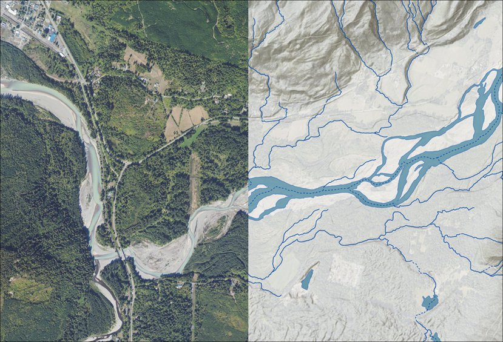
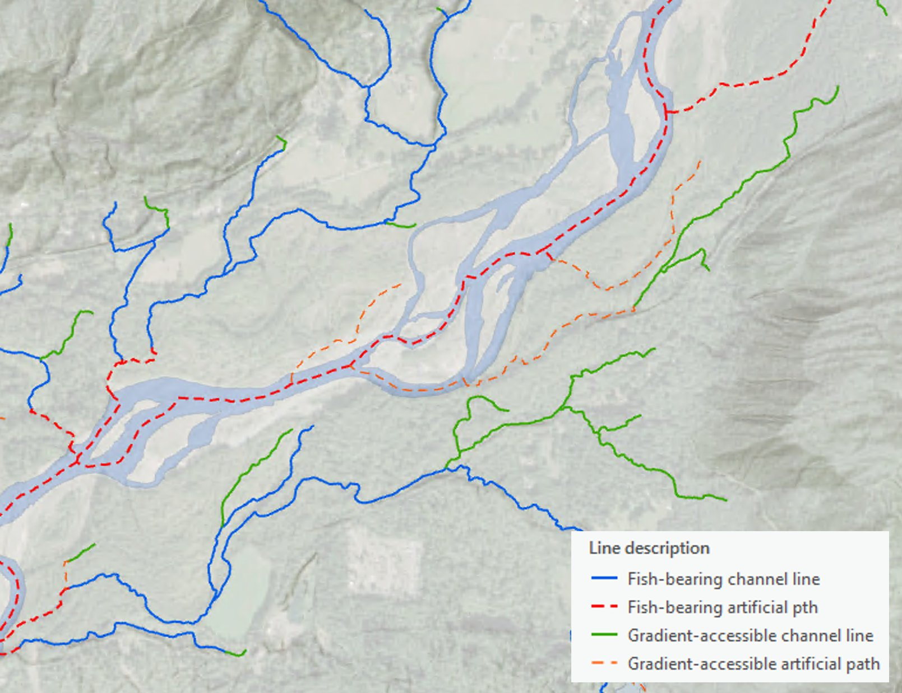
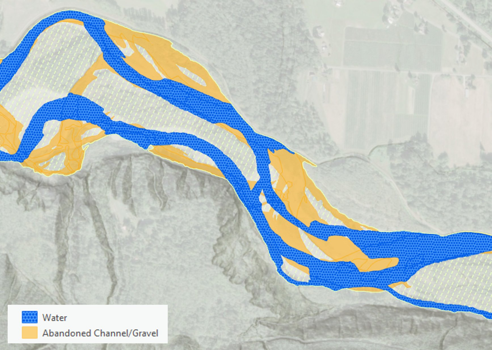
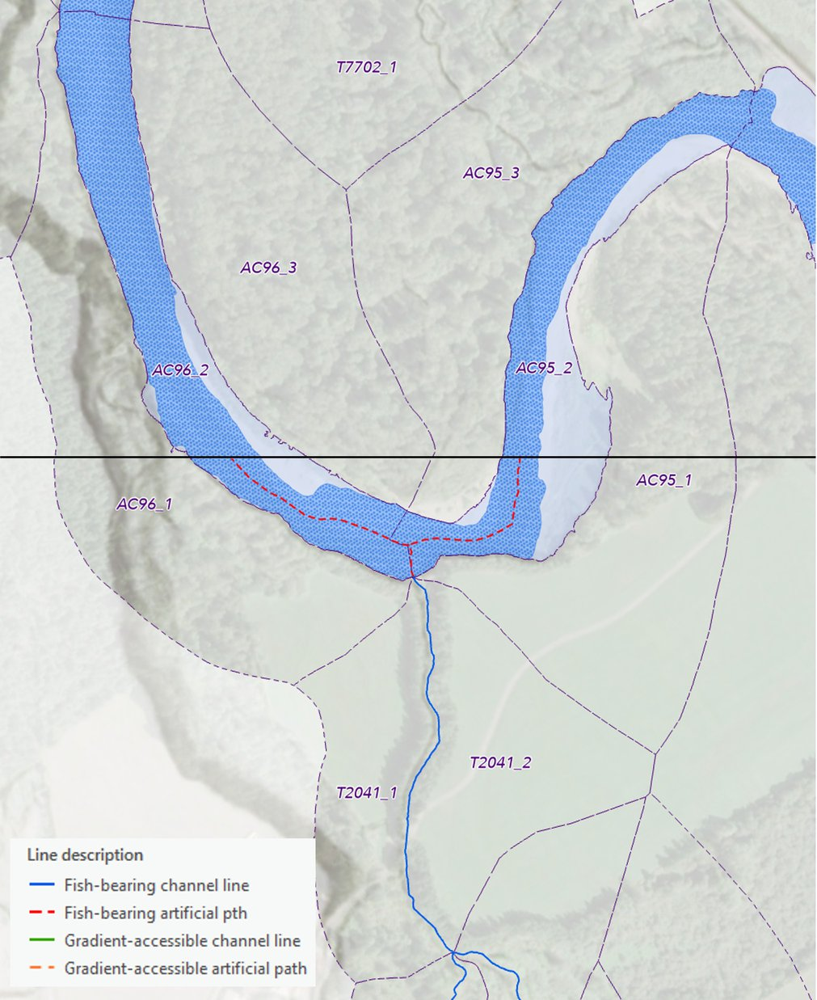
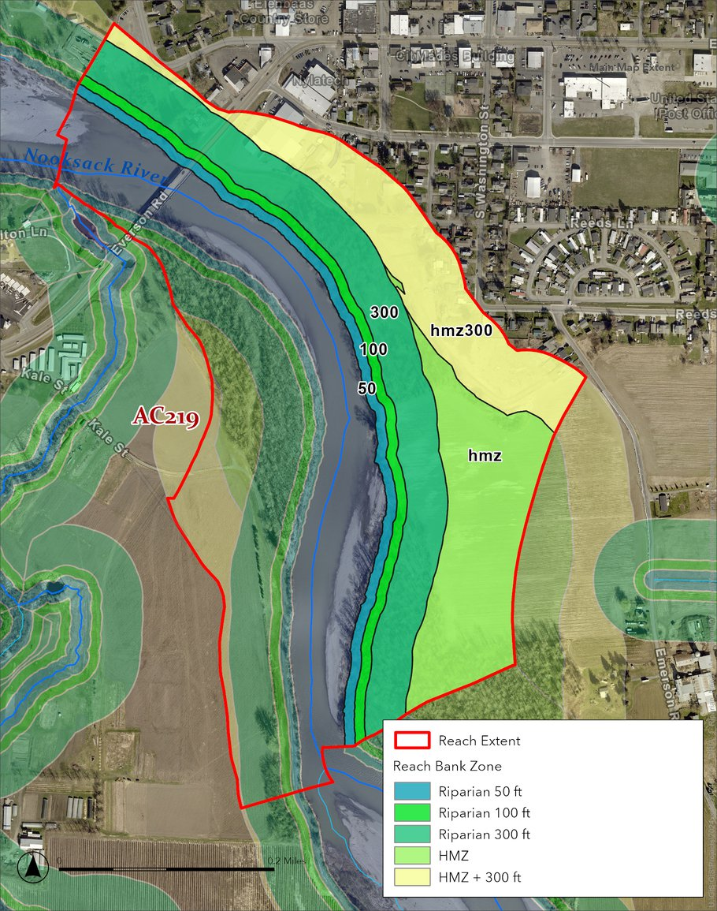
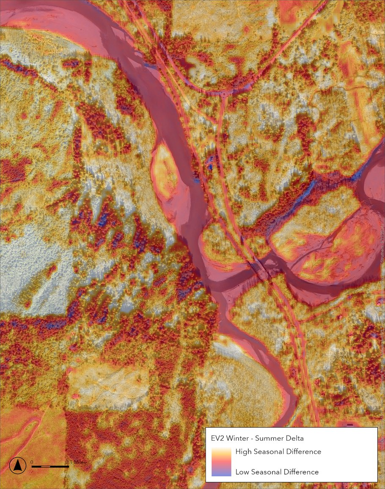
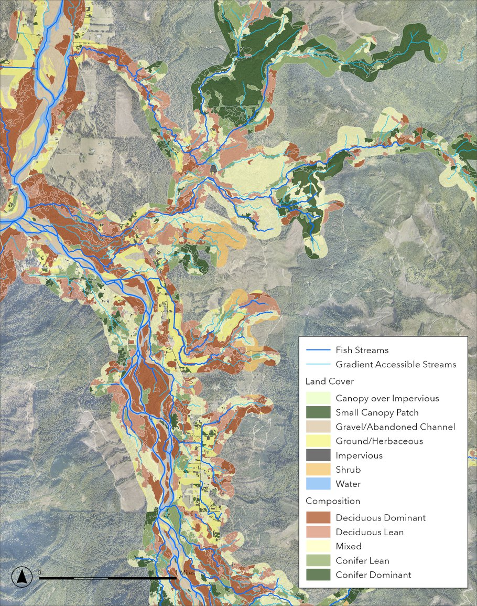

<!DOCTYPE html>
<html lang="en">
<head>
  <meta charset="UTF-8" />
  <meta name="viewport" content="width=device-width, initial-scale=1.0" />
  <title>WRIA 1 Riparian Data Explorer</title>
  <!--
    To run this dashboard:
    1. Run preprocess_dashboard.py to generate dashboard_data.json
    2. Start a local server: python -m http.server 8000
       (from the directory containing this file)
    3. Open http://localhost:8000/dashboard.html in your browser
    Multi-file site -- serve via HTTP (python -m http.server) or deploy to GitHub Pages.
  -->
  <script src="https://cdn.tailwindcss.com"></script>
  <script src="js/methods_citations.js"></script>
  <script>
    tailwind.config = {
      darkMode: 'class',
      theme: { extend: {
        colors: {
          forest: '#264914', herb: '#F5F57A', imperv: '#6c757d',
          shrub: '#F3CF8B', shrubwood: '#C6A871', canopyimp: '#adb5bd',
          water: '#457b9d', gravel: '#d4a373', railway: '#bc4749',
          esa: {
            navy: '#004562', teal: '#1193BA', 'teal-light': '#66CAD8',
            gray: '#7F7B7A', orange: '#F9A134', green: '#8FCEA5',
            'teal-green': '#00A79D',
          },
        }
      }}
    };
  </script>
  <script crossorigin src="https://unpkg.com/react@18/umd/react.development.js"></script>
  <script crossorigin src="https://unpkg.com/react-dom@18/umd/react-dom.development.js"></script>
  <script src="https://unpkg.com/prop-types@15/prop-types.min.js"></script>
  <script src="https://unpkg.com/recharts@2.12.7/umd/Recharts.js"></script>
  <script src="https://unpkg.com/@babel/standalone/babel.min.js"></script>
  <style>
    body { font-family: Arial, Helvetica, sans-serif; }
    .dark body { background: #111827; color: #f3f4f6; }
    /* Dual-range slider thumbs */
    .drs input[type="range"] { -webkit-appearance: none; appearance: none; background: transparent; pointer-events: none; position: absolute; width: 100%; height: 20px; margin: 0; padding: 0; z-index: 2; }
    .drs input[type="range"]::-webkit-slider-thumb { -webkit-appearance: none; pointer-events: all; cursor: pointer; width: 12px; height: 12px; border-radius: 50%; background: #1193BA; border: 2px solid #fff; box-shadow: 0 1px 3px rgba(0,0,0,.3); margin-top: -5px; }
    .drs input[type="range"]::-moz-range-thumb { pointer-events: all; cursor: pointer; width: 12px; height: 12px; border-radius: 50%; background: #1193BA; border: 2px solid #fff; box-shadow: 0 1px 3px rgba(0,0,0,.3); }
    .drs input[type="range"]::-webkit-slider-runnable-track { height: 4px; background: transparent; }
    .drs input[type="range"]::-moz-range-track { height: 4px; background: transparent; border: none; }
  </style>
<script src="https://cdnjs.cloudflare.com/ajax/libs/sql.js/1.10.3/sql-wasm.js"></script>
<script>if(typeof initSqlJs==="undefined"&&typeof exports==="object")window.initSqlJs=exports.initSqlJs||exports;</script>
</head>
<body class="bg-gray-50 text-gray-900 dark:bg-gray-900 dark:text-gray-100 min-h-screen">
  <div id="root"></div>

  <script type="text/babel">
    const {
      BarChart, Bar, XAxis, YAxis, CartesianGrid, Tooltip, Legend,
      PieChart, Pie, Cell, ResponsiveContainer, ReferenceLine,
      ComposedChart, Area, AreaChart, Line, LineChart,
      RadarChart, Radar, PolarGrid, PolarAngleAxis, PolarRadiusAxis,
      ScatterChart, Scatter, ZAxis, Treemap, LabelList
    } = Recharts;

    // ============================================================
    // Constants
    // ============================================================
    const LC_COLORS = {
      'Forest': '#2d6a4f', 'Ground/Herbaceous': '#a7c957',
      'Impervious': '#6c757d', 'Shrub': '#95d5b2',
      'Shrub/Woodland': '#52b788', 'Canopy over Impervious': '#adb5bd',
      'Water': '#457b9d', 'Gravel/Abandoned Channel': '#d4a373',
      'Railway': '#bc4749',
    };
    const DOMAIN_COLORS = {
      'D1_Forest': '#2d6a4f', 'D2_Shrub_Comp': '#52b788',
      'D3_Shrub_NoComp': '#95d5b2', 'D4_HerbGround': '#a7c957',
      'Excluded': '#adb5bd',
    };
    const DOMAIN_LABELS = {
      'D1_Forest': 'Forest (0-55)',
      'D2_Shrub_Comp': 'Shrub w/ Comp (55-70)',
      'D3_Shrub_NoComp': 'Shrub w/o Comp (65-80)',
      'D4_HerbGround': 'Herb/Ground (80-95)',
      'Excluded': 'Excluded',
    };
    const ZONE_ORDER = ['50', '100', '300', 'hmz', 'hmz300', 'river', 'lake'];
    const ZONE_COLORS = {'50':'#004562','100':'#0B7A9E','300':'#1193BA','hmz':'#66CAD8','hmz300':'#A8DDE8','river':'#457b9d','lake':'#7dd3fc'};
    const NR_COLORS = {
      'Water': '#457b9d', 'Impervious': '#6c757d',
      'Canopy over Impervious': '#adb5bd', 'Gravel/Abandoned Channel': '#d4a373',
      'Railway': '#bc4749',
    };
    const SR_ZONE_COLORS = {
      'Lower Mainstem Nooksack': '#002D42', 'Upper Mainstem Nooksack': '#004562',
      'Lower NF Nooksack': '#0B7A9E', 'Upper NF Nooksack': '#1193BA',
      'Lower MF Nooksack': '#66CAD8', 'Upper MF Nooksack': '#A8DDE8',
      'Lower SF Nooksack': '#00A79D', 'Upper SF Nooksack': '#8FCEA5',
      'Frontal/Coastal multiple': '#F9A134', 'Fraser River Tributaries': '#7F7B7A',
      'Lake Whatcom': '#dc2626', 'Unknown': '#B2B2B2',
    };
    const CHINOOK_COLORS = { 'Y': '#dc2626', 'N': '#6b7280' };
    const FISH_COLORS = { 'fish': '#1193BA', 'gradient': '#F9A134' };
    const TEMP_COLORS = { 'Y': '#dc2626', 'N': '#6b7280' };
    const MANAGER_CAT_COLORS = {
      'Federal': '#38A800', 'State': '#0070FF', 'Tribal': '#A87000',
      'Local': '#FFAA00', 'NGO': '#7A00E6', 'Private/Unknown': '#B2B2B2',
    };
    const ZONING_COLORS = {
      'Commercial Forest': '#267300', 'Rural Forest': '#4DA84D',
      'Agriculture': '#E8D74D', 'Rural Residential': '#FFAA00',
      'Urban/UGA': '#E60000',
      'Federal Forest': '#8400A8', 'Public/Open Space': '#B0D1A8',
      'Industrial': '#9C1FB0', 'Unknown': '#B2B2B2',
    };
    const TIER_COLORS = {
      'P1': '#dc2626', 'P2': '#f59e0b', 'P3': '#1193BA', 'P4': '#059669', 'P5': '#9ca3af',
    };
    const TIER_LABELS = {
      'P1': 'P1: Chinook + Temp Impaired',
      'P2': 'P2: Chinook (no temp) / Fish + Temp',
      'P3': 'P3: Fish-bearing mixed',
      'P4': 'P4: Fish-bearing other (no temp)',
      'P5': 'P5: Gradient-accessible',
    };

    const fmtN = (n) => n == null ? '--' : Number(n).toLocaleString();
    const fmtPct = (n, total) => total ? `${((n / total) * 100).toFixed(1)}%` : '--';
    const fmtAcres = (sqft) => `${(sqft / 43560).toLocaleString(undefined, {maximumFractionDigits: 0})} ac`;
    const fmtDec = (n, d=2) => n == null ? '--' : Number(n).toFixed(d);

    // ============================================================
    // Shared Components
    // ============================================================
    function StatCard({ label, value, sub }) {
      return (
        <div className="bg-white dark:bg-gray-800 rounded-lg shadow p-4 text-center">
          <div className="text-2xl font-bold" style={{ color: '#1193BA' }}>{value}</div>
          <div className="text-sm text-gray-500 dark:text-gray-400 mt-1">{label}</div>
          {sub && <div className="text-xs text-gray-400 dark:text-gray-500 mt-0.5">{sub}</div>}
        </div>
      );
    }

    function HistogramChart({ histData, title, xLabel, color = '#1193BA', height = 250, showStats, stats }) {
      if (!histData || !histData.bins || !histData.counts) return null;
      const data = histData.counts.map((c, i) => ({
        bin: histData.log_scale
          ? `1e${histData.bins[i]}`
          : histData.bins[i + 1] - histData.bins[i] < 1
            ? fmtDec(histData.bins[i], 2)
            : Math.round(histData.bins[i]),
        count: c,
      }));
      return (
        <div className="bg-white dark:bg-gray-800 rounded-lg shadow p-4">
          {title && <h4 className="text-sm font-semibold mb-2 text-gray-700 dark:text-gray-300">{title}</h4>}
          <ResponsiveContainer width="100%" height={height}>
            <BarChart data={data} margin={{ top: 5, right: 5, left: 5, bottom: xLabel ? 18 : 5 }}>
              <CartesianGrid strokeDasharray="3 3" stroke="#374151" opacity={0.3} />
              <XAxis dataKey="bin" tick={{ fontSize: 9 }} interval="preserveStartEnd"
                label={xLabel ? { value: xLabel, position: 'bottom', offset: 2, fontSize: 11, fill: '#6b7280' } : undefined} />
              <YAxis tick={{ fontSize: 10 }}
                label={{ value: 'Count', angle: -90, position: 'insideLeft', offset: 10, fontSize: 10, fill: '#9ca3af' }} />
              <Tooltip formatter={(v) => fmtN(v)} />
              <Bar dataKey="count" fill={color} radius={[2, 2, 0, 0]} />
            </BarChart>
          </ResponsiveContainer>
          {showStats && stats && (
            <div className="flex gap-3 text-xs text-gray-500 dark:text-gray-400 mt-1 flex-wrap">
              <span>n={fmtN(stats.count)}</span>
              <span>mean={fmtDec(stats.mean)}</span>
              <span>med={fmtDec(stats.p50)}</span>
              <span>std={fmtDec(stats.std)}</span>
            </div>
          )}
        </div>
      );
    }

    function SectionTitle({ children }) {
      return <h3 className="text-base font-semibold mt-6 mb-3" style={{ color: '#004562' }}>{children}</h3>;
    }

    function CiteRef({ id }) {
      const cite = (typeof CITATIONS !== 'undefined' && CITATIONS[id]) || null;
      if (!cite) return <sup className="text-red-400 text-xs">[?]</sup>;
      const [show, setShow] = React.useState(false);
      const [above, setAbove] = React.useState(true);
      const ref = React.useRef(null);
      const handleEnter = React.useCallback(() => {
        if (ref.current) { setAbove(ref.current.getBoundingClientRect().top > 280); }
        setShow(true);
      }, []);
      return (
        <span className="relative inline-block" ref={ref}
              onMouseEnter={handleEnter} onMouseLeave={() => setShow(false)}>
          <sup className="cursor-help hover:opacity-70 transition-colors"
               style={{ fontSize: '10px', color: '#1193BA' }}>
            [{cite.shortLabel}]
          </sup>
          {show && (
            <div style={{ position: 'absolute', zIndex: 50, background: 'white', border: '1px solid #e2e8f0',
              borderRadius: 8, padding: '12px 14px', width: 380, maxWidth: '90vw',
              boxShadow: '0 8px 24px rgba(0,0,0,0.15)', fontSize: 13, lineHeight: 1.5,
              pointerEvents: 'none', ...(above ? { bottom: '100%', marginBottom: 6 } : { top: '100%', marginTop: 6 }) }}>
              <div style={{ fontWeight: 700, color: '#004562', marginBottom: 6 }}>{cite.shortLabel}</div>
              <div style={{ color: '#4b5563', fontStyle: 'italic' }}>"{cite.quote}"</div>
              {cite.pdfFilename && <div style={{ color: '#9ca3af', fontSize: 11, marginTop: 6 }}>PDF: {cite.pdfFilename}</div>}
            </div>
          )}
        </span>
      );
    }

    function Formula({ children }) {
      return <pre className="text-xs font-mono bg-gray-50 dark:bg-gray-700/50 rounded p-3 text-gray-600 dark:text-gray-400 overflow-x-auto my-3" style={{ lineHeight: 1.6 }}>{children}</pre>;
    }

    function SliderRow({ label, value, onChange, min, max, step }) {
      return (
        <div className="flex items-center gap-3 mb-2">
          <label className="text-sm w-44 text-gray-600 dark:text-gray-400">{label}</label>
          <input type="range" min={min} max={max} step={step} value={value}
            onChange={e => onChange(parseFloat(e.target.value))}
            className="flex-1 accent-esa-teal" />
          <span className="text-sm w-12 text-right font-mono">{typeof value === 'number' ? value.toFixed(2) : value}</span>
        </div>
      );
    }

    // ============================================================
    // Curve helper (used by Forest Scoring tab)
    // ============================================================
    const CURVE_TYPES = [
      { value: 'linear',  label: 'Linear' },
      { value: 'concave', label: 'Concave (FEMAT)' },
      { value: 'convex',  label: 'Convex (late-seral)' },
      { value: 'scurve',  label: 'S-curve (sigmoid)' },
    ];
    function applyCurve(x, type, strength) {
      if (type === 'linear' || strength <= 1.001) return x;
      if (type === 'concave') return Math.pow(Math.max(x, 0), 1 / strength);
      if (type === 'convex') return Math.pow(Math.max(x, 0), strength);
      if (type === 'scurve') {
        const xs = Math.pow(Math.max(x, 0), strength);
        const xs1 = Math.pow(Math.max(1 - x, 0), strength);
        return (xs + xs1) === 0 ? 0.5 : xs / (xs + xs1);
      }
      return x;
    }

    // ============================================================
    // Tab 1: Overview (merged: Overview + Domain Routing + NR summary)
    // ============================================================
    function OverviewPanel({ data, setActiveTab }) {
      const tabDirectory = [
        { name: 'Data Summary', id: 'data_summary', desc: 'Dataset statistics, landcover and zone distributions, domain routing table, and non-restorable breakdown.' },
        { name: 'Score Distributions', id: 'scores', desc: 'Histograms and statistics for base RP, solar-adjusted, and final RP scores. Compare score distributions across domains and identify scoring patterns.' },
        { name: 'Zone & BID Analysis', id: 'zones', desc: 'Zone-level breakdowns of landcover, scoring metrics (M, D, C, I), and area. Includes BID-level score distributions and per-zone box plots.' },
        { name: 'Radar Profiles', id: 'radar', desc: 'Radar charts showing zone condition profiles across buffer distances. Compare how landcover composition and scoring metrics change from streamside to upland.' },
        { name: 'Chinook & Fish', id: 'chinook', desc: 'Score distributions segmented by Spring Chinook presence, fish-bearing status, and temperature impairment. Identifies priority overlaps for habitat protection.' },
        { name: 'SR Zones', id: 'sr_zones', desc: 'Breakdown by Salmon Recovery Zone — score distributions, solar exposure, HMZ presence, and landcover composition for each zone in the watershed.' },
        { name: 'Manager', id: 'managers', desc: 'Score distributions by land manager category (Federal, State, Private, Tribal, etc.). Shows which management entities hold the highest-priority restoration opportunities.' },
        { name: 'BFW & River Size', id: 'bfw', desc: 'Analysis by bankfull width class — how stream size relates to riparian condition, HMZ presence, and scoring. Includes BFW distribution histograms.' },
        { name: 'Landuse & Zoning', id: 'zoning', desc: 'Score distributions by zoning group and city/UGA. Shows how land use designations correlate with riparian condition and restoration potential.' },
        { name: 'Priority Reaches', id: 'priority', desc: 'BIDs ranked by RP score within priority tiers (P1–P4), derived from salmon recovery criteria aligned with SRFB strategy matrices. Filterable by tier, SR zone, and fish status.' },
      ];
      const labDirectory = [
        { name: 'Methodology', id: 'methodology', desc: 'Full scoring methodology documentation including RP framework, domain definitions, zone aggregation, push factor formulas, priority tier thresholds, and data sources.' },
        { name: 'Scoring Lab', id: 'scoring_lab', desc: 'Interactive scenario comparison tool. Pick two riparian scenarios and adjust forest scoring weights and curves in real time to see how they affect Restoration Priority scores.' },
        { name: 'Bank Explorer', id: 'bank_explorer', desc: 'Search any of the 24,000+ BIDs by ID, stream name, or SR Zone. View per-BID landcover grids, score breakdowns, tier criteria, zone tables, and solar push context.' },
        { name: 'Solar Comparison', id: 'solar_compare', desc: 'Explore the solar radiation push mechanism. Adjust the max push and curve exponent to see how solar exposure modifies RP scores across the watershed.' },
        { name: 'BID Query', id: 'bid_query', desc: 'Filter and rank BIDs by score range, priority tier, SR zone, fish status, land manager, and more. Export filtered results to CSV or jump directly to a BID in the Bank Explorer.' },
        { name: 'Model Reference', id: 'model_ref', desc: 'Random Forest model performance — feature importance (MDI and MDA), confusion matrix, precision/recall by class, OOB convergence, and training evolution across iterative feature screening.' },
      ];

      return (
        <div>
          {/* Banner Photo */}
          <div className="rounded-lg overflow-hidden mb-6 shadow">
            
          </div>

          {/* Purpose Statement */}
          <div className="bg-white dark:bg-gray-800 rounded-lg shadow p-6 mb-6">
            <h2 className="text-lg font-bold text-gray-800 dark:text-gray-100 mb-3">WRIA 1 Riparian Restoration Prioritization</h2>
            <p className="text-sm text-gray-600 dark:text-gray-300 leading-relaxed">
              This dashboard supports the WRIA 1 riparian restoration prioritization effort by providing interactive exploration of landcover condition, restoration potential, and priority scoring across the Nooksack watershed.
              It is designed as a companion to the <a href="https://arcg.is/1mKiOq0" target="_blank" rel="noopener noreferrer" style={{ color: '#1193BA', fontWeight: 600 }}>ArcGIS Online web map</a> — a place to understand the methodology behind the scoring system and how it was applied, explore high-level trends by theme (e.g., priority tiers, salmon recovery zones, land management), and dive into individual reaches to examine existing conditions and how they translate into each bank's final Restoration Priority score.
              It is recommended to start with the <span onClick={() => setActiveTab('methodology')} style={{ color: '#1193BA', cursor: 'pointer', textDecoration: 'underline', fontWeight: 600 }}>Methodology</span> tab to fully understand how the scoring system was built before exploring the analytical and interactive tabs.
            </p>
            <p className="text-sm text-gray-600 dark:text-gray-300 leading-relaxed mt-3">
              Each stream bank (BID) is scored using a <strong>Restoration Priority (RP)</strong> framework — a higher RP score indicates more degraded riparian condition and greater potential to restore.
              The framework evaluates landcover composition, forest structure, canopy density, and height across multiple buffer zones (0–50 ft, 50–100 ft, 100–300 ft, HMZ, and HMZ+300).
              Scores are organized into four domains — Forest, Shrub/Woodland, Shrub, and Herb/Ground — where lower base scores indicate better existing condition and higher scores indicate greater restoration need.
              Base scores are then adjusted by three push factors — solar radiation deficit (shade need), bank slope (erosion risk), and wetland proximity (ecological connectivity) — which increase priority for banks with greater restoration benefit.
              Final scores are stratified into priority tiers (P1–P5) based on Chinook habitat, Nooksack zone membership, fish-bearing status, and temperature impairment.
            </p>
          </div>

          {/* Tab Directory */}
          <div className="bg-white dark:bg-gray-800 rounded-lg shadow p-5 mb-6">
            <h3 className="text-sm font-bold text-gray-700 dark:text-gray-200 mb-3">Dashboard Guide</h3>
            <table className="w-full text-sm mb-4">
              <thead>
                <tr className="border-b-2" style={{ borderColor: '#1193BA' }}>
                  <th className="text-left py-2 pr-4 font-semibold w-44" style={{ color: '#004562' }}>Analytical Tabs</th>
                  <th className="text-left py-2 text-gray-400 dark:text-gray-500 font-normal text-xs italic">Summary statistics, distributions, and cross-cutting comparisons</th>
                </tr>
              </thead>
              <tbody>
                {tabDirectory.map((t, i) => (
                  <tr key={t.name} className={i < tabDirectory.length - 1 ? 'border-b border-gray-100 dark:border-gray-700/50' : ''}>
                    <td className="py-2 pr-4 font-medium align-top">
                      <span onClick={() => setActiveTab(t.id)} style={{ color: '#1193BA', cursor: 'pointer', textDecoration: 'underline' }}>{t.name}</span>
                    </td>
                    <td className="py-2 text-gray-500 dark:text-gray-400">{t.desc}</td>
                  </tr>
                ))}
              </tbody>
            </table>
            <table className="w-full text-sm">
              <thead>
                <tr className="border-b-2" style={{ borderColor: '#F9A134' }}>
                  <th className="text-left py-2 pr-4 font-semibold w-44" style={{ color: '#F9A134' }}>Interactive Tools</th>
                  <th className="text-left py-2 text-gray-400 dark:text-gray-500 font-normal text-xs italic">Hands-on exploration, scenario testing, and per-BID deep dives</th>
                </tr>
              </thead>
              <tbody>
                {labDirectory.map((t, i) => (
                  <tr key={t.name} className={i < labDirectory.length - 1 ? 'border-b border-gray-100 dark:border-gray-700/50' : ''}>
                    <td className="py-2 pr-4 font-medium align-top">
                      <span onClick={() => setActiveTab(t.id)} style={{ color: '#C07A1C', cursor: 'pointer', textDecoration: 'underline' }}>{t.name}</span>
                    </td>
                    <td className="py-2 text-gray-500 dark:text-gray-400">{t.desc}</td>
                  </tr>
                ))}
              </tbody>
            </table>
          </div>

        </div>
      );
    }

    // ============================================================
    // Tab: Data Summary (charts/stats moved from Overview)
    // ============================================================
    function DataSummaryPanel({ data }) {
      const { meta, counts, area } = data;
      const [showNR, setShowNR] = React.useState(false);
      const nr = data.non_restorable;

      const lcData = Object.entries(area.by_landcover)
        .sort((a, b) => b[1] - a[1])
        .map(([name, sqft]) => ({ name, value: Math.round(sqft / 43560) }));
      const zoneData = ZONE_ORDER.filter(z => counts.by_zone[z])
        .map(z => ({ zone: z, count: counts.by_zone[z], acres: Math.round((area.by_zone[z] || 0) / 43560) }));

      const domains = ['D1_Forest', 'D2_Shrub_Comp', 'D3_Shrub_NoComp', 'D4_HerbGround'];
      const domainInfo = {
        'D1_Forest': { range: '0-55', lcs: ['Forest'] },
        'D2_Shrub_Comp': { range: '55-70', lcs: ['Shrub/Woodland (w/ comp)'] },
        'D3_Shrub_NoComp': { range: '65-80', lcs: ['Shrub', 'Shrub/Woodland (w/o comp)'] },
        'D4_HerbGround': { range: '80-95', lcs: ['Ground/Herbaceous (SPTH-stratified)'] },
      };
      const excludedCount = counts.by_domain['Excluded'] || 0;

      const NR_ORDER = ['Impervious', 'Water', 'Canopy over Impervious', 'Gravel/Abandoned Channel', 'Railway'];
      const nrPieData = nr ? NR_ORDER
        .filter(lc => nr.by_landcover[lc])
        .map(lc => ({ name: lc, value: Math.round(nr.by_landcover[lc].area / 43560) })) : [];

      // Precompute pie label positions with collision avoidance
      const PIE_OR = 110, LABEL_R = PIE_OR + 35, LABEL_GAP = 16;
      const lcLabelPos = React.useMemo(() => {
        if (!lcData.length) return [];
        const R = Math.PI / 180;
        const total = lcData.reduce((s, d) => s + d.value, 0);
        if (!total) return [];
        let angle = 0;
        const items = lcData.map(d => {
          const sweep = (d.value / total) * 360;
          const mid = angle + sweep / 2;
          angle += sweep;
          const cos = Math.cos(-mid * R), sin = Math.sin(-mid * R);
          return { idealY: LABEL_R * sin, adjustedY: LABEL_R * sin, isRight: cos > 0 };
        });
        [true, false].forEach(side => {
          const g = items.filter(it => it.isRight === side).sort((a, b) => a.idealY - b.idealY);
          for (let i = 1; i < g.length; i++) {
            if (g[i].adjustedY - g[i - 1].adjustedY < LABEL_GAP)
              g[i].adjustedY = g[i - 1].adjustedY + LABEL_GAP;
          }
        });
        return items;
      }, [lcData]);

      return (
        <div>
          <div className="grid grid-cols-2 md:grid-cols-4 gap-4 mb-6">
            <StatCard label="Total Polygons" value={fmtN(meta.total_polygons)} sub="count of polygons · all zones & classes" />
            <StatCard label="Scored Polygons" value={fmtN(meta.scored_polygons)} sub="count of polygons · restorable only" />
            <StatCard label="Unique BIDs" value={fmtN(meta.scored_bids)} sub="count of scored BIDs" />
            <StatCard label="Unique Reaches" value={fmtN(meta.unique_rids)} sub="count of RIDs" />
          </div>

          <div className="bg-amber-50 dark:bg-amber-900/20 border border-amber-200 dark:border-amber-700 rounded-lg p-3 mb-6 text-sm text-amber-800 dark:text-amber-300">
            Non-restorable classes (Water, Impervious, Canopy over Impervious, Gravel, Railway) and river/lake zones are excluded from scoring. {fmtN(excludedCount)} polygons excluded.
          </div>

          <div className="grid grid-cols-1 lg:grid-cols-2 gap-6">
            <div className="bg-white dark:bg-gray-800 rounded-lg shadow p-4">
              <h4 className="text-sm font-semibold mb-2 text-gray-700 dark:text-gray-300">Landcover Distribution (Area)</h4>
              <ResponsiveContainer width="100%" height={400}>
                <PieChart>
                  <Pie data={lcData} dataKey="value" nameKey="name" cx="50%" cy="50%" outerRadius={PIE_OR}
                    label={({ name, percent, cx: pcx, cy: pcy, midAngle, outerRadius: or, index }) => {
                      const pos = lcLabelPos[index]; if (!pos) return null;
                      const R = Math.PI / 180;
                      const sx = pcx + or * Math.cos(-midAngle * R);
                      const sy = pcy + or * Math.sin(-midAngle * R);
                      const mx = pcx + (or + 15) * Math.cos(-midAngle * R);
                      const my = pcy + (or + 15) * Math.sin(-midAngle * R);
                      const tx = pcx + (pos.isRight ? LABEL_R : -LABEL_R);
                      const ty = pcy + pos.adjustedY;
                      return (<g>
                        <path d={`M${sx},${sy} L${mx},${my} L${tx},${ty}`} stroke="#9ca3af" strokeWidth={1} fill="none" />
                        <text x={tx + (pos.isRight ? 4 : -4)} y={ty} textAnchor={pos.isRight ? 'start' : 'end'}
                          dominantBaseline="central" fontSize={10} fill="#6b7280">
                          {`${name} (${(percent * 100).toFixed(0)}%)`}
                        </text>
                      </g>);
                    }} labelLine={false}>
                    {lcData.map((e, i) => <Cell key={i} fill={LC_COLORS[e.name] || '#999'} />)}
                  </Pie>
                  <Tooltip formatter={(v) => `${fmtN(v)} acres`} />
                </PieChart>
              </ResponsiveContainer>
            </div>

            <div className="bg-white dark:bg-gray-800 rounded-lg shadow p-4">
              <h4 className="text-sm font-semibold mb-2 text-gray-700 dark:text-gray-300">Zone Distribution (Area)</h4>
              <ResponsiveContainer width="100%" height={300}>
                <BarChart data={zoneData} margin={{ top: 5, right: 10, left: 35, bottom: 30 }}>
                  <CartesianGrid strokeDasharray="3 3" stroke="#374151" opacity={0.3} />
                  <XAxis dataKey="zone" label={{ value: 'Buffer Zone (ft)', position: 'bottom', offset: 3, fontSize: 11, fill: '#6b7280' }} />
                  <YAxis tickFormatter={(v) => `${fmtN(v)} ac`} tick={{ fontSize: 11 }}
                    label={{ value: 'Area (acres)', angle: -90, position: 'insideLeft', offset: -10, fontSize: 11, fill: '#9ca3af' }} />
                  <Tooltip formatter={(v) => `${fmtN(v)} acres`} />
                  <Bar dataKey="acres" radius={[4, 4, 0, 0]}>
                    {zoneData.map((e, i) => <Cell key={i} fill={ZONE_COLORS[e.zone] || '#1193BA'} />)}
                  </Bar>
                </BarChart>
              </ResponsiveContainer>
            </div>
          </div>

          <SectionTitle>Domain Routing Summary</SectionTitle>
          <div className="bg-white dark:bg-gray-800 rounded-lg shadow p-4 overflow-x-auto">
            <table className="w-full text-sm">
              <thead>
                <tr className="border-b dark:border-gray-700">
                  <th className="text-left py-2 px-2">Domain</th>
                  <th className="text-center py-2 px-2">RP Range</th>
                  <th className="text-right py-2 px-2">Count</th>
                  <th className="text-right py-2 px-2">%</th>
                  <th className="text-right py-2 px-2">Area</th>
                  <th className="text-left py-2 px-2">Landcovers</th>
                </tr>
              </thead>
              <tbody>
                {domains.map(d => (
                  <tr key={d} className="border-b dark:border-gray-700/50">
                    <td className="py-1.5 px-2 flex items-center gap-2">
                      <span className="inline-block w-3 h-3 rounded" style={{ background: DOMAIN_COLORS[d] }}></span>
                      {DOMAIN_LABELS[d]}
                    </td>
                    <td className="text-center py-1.5 px-2">{domainInfo[d].range}</td>
                    <td className="text-right py-1.5 px-2">{fmtN(counts.by_domain[d] || 0)}</td>
                    <td className="text-right py-1.5 px-2">{fmtPct(counts.by_domain[d] || 0, meta.scored_polygons)}</td>
                    <td className="text-right py-1.5 px-2">{fmtAcres(area.by_domain[d] || 0)}</td>
                    <td className="text-left py-1.5 px-2 text-xs text-gray-500 dark:text-gray-400">{domainInfo[d].lcs.join(', ')}</td>
                  </tr>
                ))}
              </tbody>
            </table>
          </div>

          {/* Collapsible Non-Restorable Summary */}
          {nr && (
            <div className="mt-6">
              <button onClick={() => setShowNR(!showNR)}
                className="flex items-center gap-2 text-sm font-semibold text-gray-700 dark:text-gray-300 hover:text-esa-teal transition-colors">
                <span className="text-lg">{showNR ? '\u25BC' : '\u25B6'}</span>
                Non-Restorable Summary ({fmtN(nr.total_count)} polygons, {fmtAcres(nr.total_area)})
              </button>
              {showNR && (
                <div className="mt-3">
                  <div className="grid grid-cols-2 md:grid-cols-4 gap-4 mb-4">
                    <StatCard label="NR Polygons" value={fmtN(nr.total_count)} sub="count of non-restorable polygons" />
                    <StatCard label="NR Area" value={fmtAcres(nr.total_area)} sub="acres · non-restorable total" />
                    <StatCard label="Impervious" value={fmtN(nr.by_landcover['Impervious']?.count || 0)} sub={`count of polygons · ${fmtAcres(nr.by_landcover['Impervious']?.area || 0)}`} />
                    <StatCard label="Water (in buffer)" value={fmtN(nr.by_landcover['Water']?.count || 0)} sub={`count of polygons · ${fmtAcres(nr.by_landcover['Water']?.area || 0)}`} />
                  </div>
                  <div className="bg-white dark:bg-gray-800 rounded-lg shadow p-4">
                    <h4 className="text-sm font-semibold mb-2 text-gray-700 dark:text-gray-300">Area by Type (acres)</h4>
                    <ResponsiveContainer width="100%" height={300}>
                      <PieChart>
                        <Pie data={nrPieData} dataKey="value" nameKey="name" cx="50%" cy="50%" outerRadius={100}
                          label={({ name, percent, x, y, textAnchor }) => (
                            <text x={x} y={y} textAnchor={textAnchor} fontSize={10} fill="#6b7280">
                              {`${name} (${(percent * 100).toFixed(0)}%)`}
                            </text>
                          )} labelLine={true}>
                          {nrPieData.map((e, i) => <Cell key={i} fill={NR_COLORS[e.name] || '#999'} />)}
                        </Pie>
                        <Tooltip formatter={(v, name) => [`${fmtN(v)} acres`, name]} />
                      </PieChart>
                    </ResponsiveContainer>
                  </div>
                </div>
              )}
            </div>
          )}
        </div>
      );
    }

    // ============================================================
    // Tab 2: Score Distributions (merged: Scoring Preview + Distributions)
    // ============================================================
    function ScoreDistributionsPanel({ data }) {
      const domains = ['D1_Forest', 'D2_Shrub_Comp', 'D3_Shrub_NoComp', 'D4_HerbGround'];
      const rpAll = data.histograms.RP_all;
      const rpByDomain = data.histograms.RP_by_domain;

      // Stacked RP chart data
      const bins = rpAll.bins;
      const combined = rpAll.counts.map((_, i) => {
        const obj = { bin: Math.round(bins[i]) };
        domains.forEach(d => {
          obj[d] = rpByDomain[d] ? rpByDomain[d].counts[i] || 0 : 0;
        });
        return obj;
      });

      // Input distribution filters
      const [lcFilter, setLcFilter] = React.useState('All');
      const [zoneFilter, setZoneFilter] = React.useState('All');
      const scorableLCs = ['Forest', 'Shrub/Woodland', 'Shrub', 'Ground/Herbaceous'];
      const zones = ['50', '100', '300', 'hmz', 'hmz300'];

      function getHist(field) {
        if (lcFilter !== 'All' && data.histograms_by_landcover[lcFilter]) {
          return data.histograms_by_landcover[lcFilter][field] || null;
        }
        if (zoneFilter !== 'All' && data.histograms_by_zone[zoneFilter]) {
          return data.histograms_by_zone[zoneFilter][field] || null;
        }
        return data.histograms[field];
      }

      function getStats(field) {
        if (lcFilter !== 'All' && data.stats_by_landcover[lcFilter]) return data.stats_by_landcover[lcFilter][field];
        if (zoneFilter !== 'All' && data.stats_by_zone[zoneFilter]) return data.stats_by_zone[zoneFilter][field];
        return null;
      }

      return (
        <div>
          <SectionTitle>Polygon-Level RP Scores - Pre-Solar, Pre-Aggregation (All Domains, 0-100)</SectionTitle>
          <div className="bg-white dark:bg-gray-800 rounded-lg shadow p-4">
            <ResponsiveContainer width="100%" height={400}>
              <BarChart data={combined} margin={{ top: 30, right: 10, left: 0, bottom: 30 }}>
                <CartesianGrid strokeDasharray="3 3" stroke="#374151" opacity={0.3} />
                <XAxis dataKey="bin" tick={{ fontSize: 10 }} label={{ value: 'RP Score (pre-solar)', position: 'bottom', offset: 10, fontSize: 11, fill: '#6b7280' }} />
                <YAxis tick={{ fontSize: 10 }}
                  label={{ value: 'Polygon Count', angle: -90, position: 'insideLeft', offset: 10, fontSize: 11, fill: '#9ca3af' }} />
                <Tooltip />
                <Legend verticalAlign="top" height={36} />
                <ReferenceLine x={55} stroke="#ef4444" strokeDasharray="5 5" label={{ value: 'D1|D2', position: 'top', fontSize: 10, fill: '#ef4444' }} />
                <ReferenceLine x={70} stroke="#52b788" strokeDasharray="3 3" label={{ value: 'D2 cap', position: 'top', fontSize: 9, fill: '#52b788' }} />
                <ReferenceLine x={65} stroke="#95d5b2" strokeDasharray="3 3" label={{ value: 'D3 floor', position: 'bottom', fontSize: 9, fill: '#95d5b2' }} />
                <ReferenceLine x={80} stroke="#f59e0b" strokeDasharray="5 5" label={{ value: 'D3|D4', position: 'top', fontSize: 10, fill: '#f59e0b' }} />
                {domains.map(d => (
                  <Bar key={d} dataKey={d} stackId="a" fill={DOMAIN_COLORS[d]} name={DOMAIN_LABELS[d]} />
                ))}
              </BarChart>
            </ResponsiveContainer>
          </div>

          <SectionTitle>Per-Domain Detail</SectionTitle>
          <div className="grid grid-cols-1 md:grid-cols-2 gap-4">
            <HistogramChart histData={rpByDomain['D1_Forest']} title={DOMAIN_LABELS['D1_Forest']}
              xLabel="RP Score" color={DOMAIN_COLORS['D1_Forest']} showStats stats={data.stats_by_domain['D1_Forest']?.RP} />

            {/* Combined Shrub chart: D2 + D3 stacked */}
            {(() => {
              const d2 = rpByDomain['D2_Shrub_Comp'];
              const d3 = rpByDomain['D3_Shrub_NoComp'];
              if (!d2 && !d3) return null;
              const ref = d2 || d3;
              const shrubData = ref.counts.map((_, i) => ({
                bin: ref.bins[i + 1] - ref.bins[i] < 1 ? fmtDec(ref.bins[i], 2) : Math.round(ref.bins[i]),
                'w/ Comp': d2 ? d2.counts[i] : 0,
                'w/o Comp': d3 ? d3.counts[i] : 0,
              }));
              const d2st = data.stats_by_domain['D2_Shrub_Comp']?.RP;
              const d3st = data.stats_by_domain['D3_Shrub_NoComp']?.RP;
              return (
                <div className="bg-white dark:bg-gray-800 rounded-lg shadow p-4">
                  <h4 className="text-sm font-semibold mb-2 text-gray-700 dark:text-gray-300">Shrub Combined (55-80)</h4>
                  <ResponsiveContainer width="100%" height={250}>
                    <BarChart data={shrubData} margin={{ top: 5, right: 5, left: 5, bottom: 18 }}>
                      <CartesianGrid strokeDasharray="3 3" stroke="#374151" opacity={0.3} />
                      <XAxis dataKey="bin" tick={{ fontSize: 9 }} interval="preserveStartEnd"
                        label={{ value: 'RP Score', position: 'bottom', offset: 2, fontSize: 11, fill: '#6b7280' }} />
                      <YAxis tick={{ fontSize: 10 }}
                        label={{ value: 'Count', angle: -90, position: 'insideLeft', offset: 10, fontSize: 10, fill: '#9ca3af' }} />
                      <Tooltip />
                      <Legend verticalAlign="top" height={24} />
                      <Bar dataKey="w/ Comp" stackId="s" fill={DOMAIN_COLORS['D2_Shrub_Comp']} name="w/ Comp (55-70)" />
                      <Bar dataKey="w/o Comp" stackId="s" fill={DOMAIN_COLORS['D3_Shrub_NoComp']} name="w/o Comp (65-80)" radius={[2, 2, 0, 0]} />
                    </BarChart>
                  </ResponsiveContainer>
                  <div className="flex gap-4 text-xs text-gray-500 dark:text-gray-400 mt-1 flex-wrap">
                    <span className="font-medium" style={{ color: DOMAIN_COLORS['D2_Shrub_Comp'] }}>w/ Comp:</span>
                    <span>n={fmtN(d2st?.count)}</span><span>mean={fmtDec(d2st?.mean)}</span><span>med={fmtDec(d2st?.p50)}</span>
                    <span className="ml-2 font-medium" style={{ color: DOMAIN_COLORS['D3_Shrub_NoComp'] }}>w/o Comp:</span>
                    <span>n={fmtN(d3st?.count)}</span><span>mean={fmtDec(d3st?.mean)}</span><span>med={fmtDec(d3st?.p50)}</span>
                  </div>
                </div>
              );
            })()}

            <HistogramChart histData={rpByDomain['D4_HerbGround']} title={DOMAIN_LABELS['D4_HerbGround']}
              xLabel="RP Score" color={DOMAIN_COLORS['D4_HerbGround']} showStats stats={data.stats_by_domain['D4_HerbGround']?.RP} />
          </div>

          <SectionTitle>Domain Statistics</SectionTitle>
          <div className="bg-white dark:bg-gray-800 rounded-lg shadow p-4 overflow-x-auto">
            <table className="w-full text-sm">
              <thead>
                <tr className="border-b dark:border-gray-700">
                  <th className="text-left py-2 px-2">Domain</th>
                  <th className="text-right py-2 px-2">Count</th>
                  <th className="text-right py-2 px-2">Mean RP</th>
                  <th className="text-right py-2 px-2">Median</th>
                  <th className="text-right py-2 px-2">Std</th>
                  <th className="text-right py-2 px-2">P10</th>
                  <th className="text-right py-2 px-2">P90</th>
                </tr>
              </thead>
              <tbody>
                {domains.map(d => {
                  const st = data.stats_by_domain[d]?.RP;
                  return (
                    <tr key={d} className="border-b dark:border-gray-700/50">
                      <td className="py-1.5 px-2">{DOMAIN_LABELS[d]}</td>
                      <td className="text-right py-1.5 px-2">{fmtN(st?.count)}</td>
                      <td className="text-right py-1.5 px-2">{fmtDec(st?.mean)}</td>
                      <td className="text-right py-1.5 px-2">{fmtDec(st?.p50)}</td>
                      <td className="text-right py-1.5 px-2">{fmtDec(st?.std)}</td>
                      <td className="text-right py-1.5 px-2">{fmtDec(st?.p10)}</td>
                      <td className="text-right py-1.5 px-2">{fmtDec(st?.p90)}</td>
                    </tr>
                  );
                })}
              </tbody>
            </table>
          </div>

          <SectionTitle>Intactness Components (D1 + D2)</SectionTitle>
          <div className="grid grid-cols-1 md:grid-cols-3 gap-4">
            <HistogramChart histData={data.histograms.M_maturity} title="Canopy Height M (0-1)" xLabel="Canopy Height Score" color="#dc2626" />
            <HistogramChart histData={data.histograms.D_density} title="Density D (0-1)" xLabel="Density Score" color="#ea580c" />
            <HistogramChart histData={data.histograms.I_intactness} title="Intactness I (0-1)" xLabel="Intactness Score" color="#7c3aed" />
          </div>

          <SectionTitle>Input Distributions</SectionTitle>
          <div className="flex gap-4 mb-4 items-center flex-wrap">
            <label className="text-sm font-medium">Landcover:
              <select value={lcFilter} onChange={e => { setLcFilter(e.target.value); setZoneFilter('All'); }}
                className="ml-2 rounded border dark:bg-gray-800 dark:border-gray-600 px-2 py-1 text-sm">
                <option value="All">All</option>
                {scorableLCs.map(lc => <option key={lc} value={lc}>{lc}</option>)}
              </select>
            </label>
            <label className="text-sm font-medium">Zone:
              <select value={zoneFilter} onChange={e => { setZoneFilter(e.target.value); setLcFilter('All'); }}
                className="ml-2 rounded border dark:bg-gray-800 dark:border-gray-600 px-2 py-1 text-sm">
                <option value="All">All</option>
                {zones.map(z => <option key={z} value={z}>{z}</option>)}
              </select>
            </label>
            <span className="text-xs text-gray-400">
              {lcFilter !== 'All' ? `Filtered: ${lcFilter}` : zoneFilter !== 'All' ? `Filtered: Zone ${zoneFilter}` : 'Showing all scored polygons'}
            </span>
          </div>
          <div className="grid grid-cols-1 md:grid-cols-2 lg:grid-cols-3 gap-4">
            <HistogramChart histData={getHist('ForestHeight')} title="Forest Height (ft)" xLabel="Height (ft)" color="#004562" showStats stats={getStats('ForestHeight')} />
            <HistogramChart histData={getHist('Den')} title="Density / Pct Ground (0-1)" xLabel="Fraction (0-1)" color="#a7c957" showStats stats={getStats('Den')} />
            <HistogramChart histData={getHist('Composition')} title="Composition (raw, -1 to 1)" xLabel="Gradient Score" color="#52b788" showStats stats={getStats('Composition')} />
            <HistogramChart histData={getHist('SiteIndex200Years')} title="Site Potential Tree Height (ft)" xLabel="SPTH (ft)" color="#7c3aed" showStats stats={getStats('SiteIndex200Years')} />
            <HistogramChart histData={getHist('M_maturity')} title="Canopy Height M = Height/SPTH (0-1)" xLabel="Canopy Height (0-1)" color="#dc2626" showStats stats={getStats('M')} />
            <HistogramChart histData={getHist('D_density')} title="Density D = 1 - Den (0-1)" xLabel="Density (0-1)" color="#ea580c" showStats stats={getStats('D_norm')} />
          </div>

        </div>
      );
    }

    // ============================================================
    // Tab 3: Zone & BID Analysis (merged: Zone Analysis + BID Scores)
    // ============================================================
    function ZoneBidPanel({ data }) {
      const zones = ['50', '100', '300', 'hmz', 'hmz300'];
      const bs = data.bid_scores;

      // Landcover composition per zone
      const lcZone = data.cross_tabs.landcover_zone || [];
      const scorableLCs = ['Forest', 'Shrub/Woodland', 'Shrub', 'Ground/Herbaceous'];
      const zoneComposition = zones.map(z => {
        const obj = { zone: z };
        scorableLCs.forEach(lc => {
          const match = lcZone.find(r => r.Zone === z && r.Landcover === lc);
          obj[lc] = match ? Math.round(match.area / 43560) : 0;
        });
        return obj;
      });

      // Zone-level RP
      const zoneAgg = data.zone_aggregation;

      // Distance-decay curves
      const ZONE_LABELS_DECAY = {'50': '0-50 ft', '100': '50-100 ft', '300': '100-300 ft', 'hmz': 'HMZ', 'hmz300': 'HMZ-300'};
      const decayCurves = [
        { name: 'Linear', weights: [5, 4, 3, 2, 1] },
        { name: 'Moderate', weights: [10, 6, 3, 2, 1] },
        { name: 'Squared', weights: [25, 16, 9, 4, 1] },
      ];
      const decayData = zones.map((z, i) => {
        const obj = { zone: ZONE_LABELS_DECAY[z] || z };
        decayCurves.forEach(c => {
          const total = c.weights.reduce((a, b) => a + b, 0);
          obj[c.name] = parseFloat(((c.weights[i] / total) * 100).toFixed(1));
        });
        return obj;
      });

      return (
        <div>
          {/* Zone Analysis Section */}
          <SectionTitle>Landcover Composition by Zone (Area)</SectionTitle>
          <div className="bg-white dark:bg-gray-800 rounded-lg shadow p-4">
            <ResponsiveContainer width="100%" height={340}>
              <BarChart data={zoneComposition} margin={{ top: 10, right: 10, left: 35, bottom: 30 }}>
                <CartesianGrid strokeDasharray="3 3" stroke="#374151" opacity={0.3} />
                <XAxis dataKey="zone" label={{ value: 'Buffer Zone (ft)', position: 'bottom', offset: 3, fontSize: 11, fill: '#6b7280' }} />
                <YAxis tickFormatter={(v) => `${fmtN(v)} ac`} tick={{ fontSize: 11 }}
                  label={{ value: 'Area (acres)', angle: -90, position: 'insideLeft', offset: -10, fontSize: 11, fill: '#9ca3af' }} />
                <Tooltip formatter={(v) => `${fmtN(v)} acres`} />
                <Legend verticalAlign="top" wrapperStyle={{ fontSize: 11, paddingBottom: 6 }} />
                {scorableLCs.map(lc => (
                  <Bar key={lc} dataKey={lc} stackId="a" fill={LC_COLORS[lc]} />
                ))}
              </BarChart>
            </ResponsiveContainer>
          </div>

          <SectionTitle>Zone-Level RP Distributions (Area-Weighted Mean per BID)</SectionTitle>
          <div className="grid grid-cols-1 md:grid-cols-2 lg:grid-cols-3 gap-4">
            {zones.map(z => zoneAgg[z] && (
              <HistogramChart key={z} histData={zoneAgg[z].rp_hist}
                title={`Zone ${z} (${fmtN(zoneAgg[z].bid_count)} BIDs)`}
                xLabel="RP Score" color={ZONE_COLORS[z]} showStats stats={zoneAgg[z].rp_stats} />
            ))}
          </div>

          <SectionTitle>Distance-Decay Weight Profiles (% of total weight)</SectionTitle>
          <div className="bg-white dark:bg-gray-800 rounded-lg shadow p-4">
            <ResponsiveContainer width="100%" height={280}>
              <LineChart data={decayData} margin={{ top: 10, right: 30, left: 20, bottom: 30 }}>
                <CartesianGrid strokeDasharray="3 3" stroke="#374151" opacity={0.3} />
                <XAxis dataKey="zone" tick={{ fontSize: 11 }} label={{ value: 'Buffer Zone', position: 'bottom', offset: 3, fontSize: 11, fill: '#6b7280' }} />
                <YAxis domain={[0, 50]} tickFormatter={(v) => `${v}%`}
                  label={{ value: '% Weight', angle: -90, position: 'insideLeft', fontSize: 12 }} />
                <Tooltip formatter={(v) => `${v}%`} />
                <Legend verticalAlign="top" wrapperStyle={{ fontSize: 11, paddingBottom: 6 }} />
                <Line type="monotone" dataKey="Linear" stroke="#1193BA" strokeWidth={2} dot={{ r: 5 }} />
                <Line type="monotone" dataKey="Moderate" stroke="#f59e0b" strokeWidth={2} dot={{ r: 5 }} />
                <Line type="monotone" dataKey="Squared" stroke="#ef4444" strokeWidth={2} dot={{ r: 5 }} />
              </LineChart>
            </ResponsiveContainer>
            <div className="text-xs text-gray-500 dark:text-gray-400 mt-2">
              Active: <strong>Moderate</strong> (10, 6, 3, 2, 1). Steeper curves prioritize near-channel condition.
            </div>
          </div>

          <SectionTitle>Zone Statistics</SectionTitle>
          <div className="bg-white dark:bg-gray-800 rounded-lg shadow p-4 overflow-x-auto">
            <table className="w-full text-sm">
              <thead>
                <tr className="border-b dark:border-gray-700">
                  <th className="text-left py-2 px-2">Zone</th>
                  <th className="text-right py-2 px-2">Polygons</th>
                  <th className="text-right py-2 px-2">Area</th>
                  <th className="text-right py-2 px-2">Mean RP</th>
                  <th className="text-right py-2 px-2">Mean Height</th>
                  <th className="text-right py-2 px-2">Mean Density</th>
                </tr>
              </thead>
              <tbody>
                {zones.map(z => {
                  const st = data.stats_by_zone[z];
                  return st ? (
                    <tr key={z} className="border-b dark:border-gray-700/50">
                      <td className="py-1.5 px-2">{z}</td>
                      <td className="text-right py-1.5 px-2">{fmtN(st.count)}</td>
                      <td className="text-right py-1.5 px-2">{fmtAcres(st.area_total)}</td>
                      <td className="text-right py-1.5 px-2">{fmtDec(st.RP?.mean)}</td>
                      <td className="text-right py-1.5 px-2">{fmtDec(st.ForestHeight?.mean)}</td>
                      <td className="text-right py-1.5 px-2">{fmtDec(st.Den?.mean)}</td>
                    </tr>
                  ) : null;
                })}
              </tbody>
            </table>
          </div>

          {/* BID Scores Section */}
          <SectionTitle>BID-Level Score Distribution (Solar-Adjusted)</SectionTitle>
          <div className="grid grid-cols-2 md:grid-cols-4 gap-4 mb-4">
            <StatCard label="BIDs Scored" value={fmtN(bs.total_bids_scored)} sub="count of BIDs" />
            <StatCard label="Mean RP" value={fmtDec(bs.rp_solar_stats?.mean || bs.rp_normalized_stats?.mean)} sub="RP score · 0 = best, 100 = worst" />
            <StatCard label="Median RP" value={fmtDec(bs.rp_solar_stats?.p50 || bs.rp_normalized_stats?.p50)} sub="RP score · 0 = best, 100 = worst" />
            <StatCard label="RP Range" value={`${fmtDec((bs.rp_solar_stats?.min ?? bs.rp_normalized_stats?.min), 0)} – ${fmtDec((bs.rp_solar_stats?.max ?? bs.rp_normalized_stats?.max), 0)}`} sub="min – max score" />
          </div>

          <HistogramChart histData={bs.rp_solar_hist || bs.rp_normalized_hist} title="BID RP Score (solar-adjusted, distance-decay weighted)"
            xLabel="RP Score (0-100)" color="#1193BA" height={300} showStats stats={bs.rp_solar_stats || bs.rp_normalized_stats} />

          <SectionTitle>BID-Level Area-Weighted Raw Score (log scale)</SectionTitle>
          {(() => {
            const raw = bs.rp_area_raw_hist;
            if (!raw || !raw.bins || !raw.counts) return null;
            const totalBins = raw.counts.length;
            const rawData = raw.counts.map((c, i) => {
              const pctile = (i / totalBins) * 100;
              return {
                bin: `1e${raw.bins[i]}`,
                count: c,
                fill: pctile < 25 ? '#22c55e' : pctile < 50 ? '#1193BA' : pctile < 75 ? '#f59e0b' : '#ef4444',
              };
            });
            return (
              <div className="bg-white dark:bg-gray-800 rounded-lg shadow p-4">
                <p className="text-xs text-gray-500 dark:text-gray-400 mb-2">
                  Raw decay-weighted area score. Color: <span className="text-green-500">low</span> to <span className="text-red-500">high</span> need.
                </p>
                <ResponsiveContainer width="100%" height={280}>
                  <BarChart data={rawData} margin={{ top: 5, right: 10, left: 0, bottom: 20 }}>
                    <CartesianGrid strokeDasharray="3 3" stroke="#374151" opacity={0.3} />
                    <XAxis dataKey="bin" tick={{ fontSize: 9 }} angle={-45} textAnchor="end" interval="preserveStartEnd"
                      label={{ value: 'Raw Score (log scale)', position: 'bottom', offset: 5, fontSize: 11, fill: '#6b7280' }} />
                    <YAxis tick={{ fontSize: 10 }}
                      label={{ value: 'BID Count', angle: -90, position: 'insideLeft', offset: 10, fontSize: 10, fill: '#9ca3af' }} />
                    <Tooltip formatter={(v) => fmtN(v)} />
                    <Bar dataKey="count" radius={[2, 2, 0, 0]}>
                      {rawData.map((e, i) => <Cell key={i} fill={e.fill} />)}
                    </Bar>
                  </BarChart>
                </ResponsiveContainer>
              </div>
            );
          })()}

          <div className="grid grid-cols-1 lg:grid-cols-2 gap-6 mt-6">
            <div>
              <SectionTitle>BID Score Statistics</SectionTitle>
              <div className="bg-white dark:bg-gray-800 rounded-lg shadow p-4 overflow-x-auto">
                <table className="w-full text-sm">
                  <thead>
                    <tr className="border-b dark:border-gray-700">
                      <th className="text-left py-2 px-2">Metric</th>
                      <th className="text-right py-2 px-2">RP (0-100)</th>
                      <th className="text-right py-2 px-2">Area Raw</th>
                    </tr>
                  </thead>
                  <tbody>
                    {['mean', 'p10', 'p25', 'p50', 'p75', 'p90'].map(m => (
                      <tr key={m} className="border-b dark:border-gray-700/50">
                        <td className="py-1.5 px-2">{m}</td>
                        <td className="text-right py-1.5 px-2">{fmtDec((bs.rp_solar_stats || bs.rp_normalized_stats)?.[m])}</td>
                        <td className="text-right py-1.5 px-2">{fmtN(Math.round(bs.rp_area_raw_stats?.[m] || 0))}</td>
                      </tr>
                    ))}
                  </tbody>
                </table>
              </div>
            </div>
            <div>
              <SectionTitle>Zones per BID</SectionTitle>
              <div className="bg-white dark:bg-gray-800 rounded-lg shadow p-4">
                <ResponsiveContainer width="100%" height={250}>
                  <BarChart data={Object.entries(bs.zone_count_dist).sort((a,b)=>a[0]-b[0]).map(([z,c])=>({zones: z, count: c}))}
                    margin={{ top: 5, right: 10, left: 5, bottom: 18 }}>
                    <CartesianGrid strokeDasharray="3 3" stroke="#374151" opacity={0.3} />
                    <XAxis dataKey="zones" label={{ value: '# Zones per BID', position: 'bottom', offset: 2, fontSize: 11, fill: '#6b7280' }} />
                    <YAxis label={{ value: 'BID Count', angle: -90, position: 'insideLeft', offset: 10, fontSize: 10, fill: '#9ca3af' }} />
                    <Tooltip formatter={(v) => fmtN(v)} />
                    <Bar dataKey="count" fill="#1193BA" radius={[4, 4, 0, 0]} />
                  </BarChart>
                </ResponsiveContainer>
              </div>
            </div>
          </div>
        </div>
      );
    }

    // ============================================================
    // Tab 4: Radar Profiles (kept intact)
    // ============================================================
    function RadarProfilePanel({ data }) {
      const radar = data.radar;
      if (!radar) return <div className="text-gray-500">No radar data available. Regenerate dashboard_data.json.</div>;

      const ZONE_LABELS = {'50': '0-50 ft', '100': '50-100 ft', '300': '100-300 ft', 'hmz': 'HMZ', 'hmz300': 'HMZ-300', 'river': 'In-Channel'};
      const ZONE_RADAR_COLORS = {'50':'#004562','100':'#0B7A9E','300':'#1193BA','hmz':'#F9A134','hmz300':'#f97316','river':'#dc2626'};
      const REACH_RADAR_COLORS = {'flowline':'#2d6a4f', 'Stream/river':'#52b788', 'Lake/pond':'#457b9d'};

      const axisLabels = {
        pct_forest: '% Forest',
        pct_shrub: '% Shrub',
        pct_herb: '% Herb/Ground',
        pct_non_restorable: '% Non-Restorable',
        mean_maturity: 'Canopy Height',
        mean_density: 'Density',
        mean_rp: 'Mean RP',
      };
      const axes = Object.keys(axisLabels);

      function buildRadarData(profileMap) {
        return axes.map(axis => {
          const row = { axis: axisLabels[axis] };
          Object.keys(profileMap).forEach(k => {
            row[k] = profileMap[k][axis] || 0;
          });
          return row;
        });
      }

      const zoneRadarData = buildRadarData(radar.by_zone);
      const reachRadarData = buildRadarData(radar.by_reach);
      const zoneKeys = Object.keys(radar.by_zone);
      const reachKeys = Object.keys(radar.by_reach);

      const tableHeaders = [
        { key: 'pct_forest', label: '% Forest', fmt: v => `${v}%` },
        { key: 'pct_shrub', label: '% Shrub', fmt: v => `${v}%` },
        { key: 'pct_herb', label: '% Herb', fmt: v => `${v}%` },
        { key: 'pct_non_restorable', label: '% Non-Rest.', fmt: v => `${v}%` },
        { key: 'mean_maturity', label: 'Canopy Height', fmt: v => v },
        { key: 'mean_density', label: 'Density', fmt: v => v },
        { key: 'mean_rp', label: 'Mean RP', fmt: v => v },
      ];

      function ProfileTable({ profileMap, keys, labelFn }) {
        return (
          <table className="w-full text-sm">
            <thead>
              <tr className="border-b dark:border-gray-700">
                <th className="text-left py-2 px-2">Name</th>
                {tableHeaders.map(h => (
                  <th key={h.key} className="text-right py-2 px-2">{h.label}</th>
                ))}
                <th className="text-right py-2 px-2">Polygons</th>
              </tr>
            </thead>
            <tbody>
              {keys.map(k => {
                const r = profileMap[k];
                return (
                  <tr key={k} className="border-b dark:border-gray-700/50">
                    <td className="py-1.5 px-2 font-medium">{labelFn(k)}</td>
                    {tableHeaders.map(h => (
                      <td key={h.key} className="text-right py-1.5 px-2">{h.fmt(r[h.key])}</td>
                    ))}
                    <td className="text-right py-1.5 px-2">{fmtN(r.count)}</td>
                  </tr>
                );
              })}
            </tbody>
          </table>
        );
      }

      return (
        <div>
          <div className="rounded-lg p-3 mb-6 text-sm" style={{ background: '#e8f6fa', border: '1px solid #66CAD8', color: '#004562' }}>
            Radar charts show 7 axes: 4 land cover categories (% Forest, % Shrub, % Herb/Ground, % Non-Restorable) plus 3 condition metrics (Canopy Height, Density scaled 0-100, and Mean RP score).
          </div>

          <SectionTitle>Zone Condition Profiles</SectionTitle>
          <div className="grid grid-cols-1 lg:grid-cols-2 gap-6">
            <div className="bg-white dark:bg-gray-800 rounded-lg shadow p-4">
              <h4 className="text-sm font-semibold mb-2 text-gray-700 dark:text-gray-300">All Zones Overlay</h4>
              <ResponsiveContainer width="100%" height={440}>
                <RadarChart data={zoneRadarData} cx="50%" cy="50%" outerRadius="75%">
                  <PolarGrid stroke="#374151" strokeOpacity={0.3} />
                  <PolarAngleAxis dataKey="axis" tick={{ fontSize: 11, fill: '#9ca3af' }} />
                  <PolarRadiusAxis tick={{ fontSize: 9, fill: '#6b7280' }} domain={[0, 100]} />
                  {zoneKeys.map(z => (
                    <Radar key={z} name={ZONE_LABELS[z] || z} dataKey={z}
                      stroke={ZONE_RADAR_COLORS[z] || '#1193BA'}
                      fill={ZONE_RADAR_COLORS[z] || '#1193BA'}
                      fillOpacity={0.08} strokeWidth={2} />
                  ))}
                  <Legend />
                  <Tooltip formatter={(v, name) => [`${v}`, name]} />
                </RadarChart>
              </ResponsiveContainer>
            </div>

            <div className="bg-white dark:bg-gray-800 rounded-lg shadow p-4 overflow-x-auto">
              <h4 className="text-sm font-semibold mb-2 text-gray-700 dark:text-gray-300">Zone Metrics Table</h4>
              <ProfileTable profileMap={radar.by_zone} keys={zoneKeys} labelFn={z => ZONE_LABELS[z] || z} />
            </div>
          </div>

          <SectionTitle>Individual Zone Radar (Side-by-Side)</SectionTitle>
          <div className="grid grid-cols-1 md:grid-cols-2 lg:grid-cols-3 gap-4">
            {zoneKeys.map(z => (
              <div key={z} className="bg-white dark:bg-gray-800 rounded-lg shadow p-4">
                <h4 className="text-sm font-semibold mb-1 text-gray-700 dark:text-gray-300">{ZONE_LABELS[z] || z}</h4>
                <p className="text-xs text-gray-400 mb-2">{fmtN(radar.by_zone[z].count)} polygons | {radar.by_zone[z].pct_non_restorable}% non-restorable</p>
                <ResponsiveContainer width="100%" height={270}>
                  <RadarChart data={zoneRadarData} cx="50%" cy="50%" outerRadius="70%">
                    <PolarGrid stroke="#374151" strokeOpacity={0.3} />
                    <PolarAngleAxis dataKey="axis" tick={{ fontSize: 9, fill: '#9ca3af' }} />
                    <PolarRadiusAxis tick={false} domain={[0, 100]} />
                    <Radar dataKey={z} stroke={ZONE_RADAR_COLORS[z] || '#1193BA'}
                      fill={ZONE_RADAR_COLORS[z] || '#1193BA'} fillOpacity={0.25} strokeWidth={2} />
                  </RadarChart>
                </ResponsiveContainer>
              </div>
            ))}
          </div>

          <SectionTitle>Reach Type Condition Profiles</SectionTitle>
          <div className="grid grid-cols-1 lg:grid-cols-2 gap-6">
            <div className="bg-white dark:bg-gray-800 rounded-lg shadow p-4">
              <h4 className="text-sm font-semibold mb-2 text-gray-700 dark:text-gray-300">All Reach Types Overlay</h4>
              <ResponsiveContainer width="100%" height={400}>
                <RadarChart data={reachRadarData} cx="50%" cy="50%" outerRadius="75%">
                  <PolarGrid stroke="#374151" strokeOpacity={0.3} />
                  <PolarAngleAxis dataKey="axis" tick={{ fontSize: 11, fill: '#9ca3af' }} />
                  <PolarRadiusAxis tick={{ fontSize: 9, fill: '#6b7280' }} domain={[0, 100]} />
                  {reachKeys.map((r, i) => (
                    <Radar key={r} name={r} dataKey={r}
                      stroke={REACH_RADAR_COLORS[r] || ['#dc2626','#f59e0b','#8b5cf6'][i % 3]}
                      fill={REACH_RADAR_COLORS[r] || ['#dc2626','#f59e0b','#8b5cf6'][i % 3]}
                      fillOpacity={0.1} strokeWidth={2} />
                  ))}
                  <Legend />
                  <Tooltip formatter={(v, name) => [`${v}`, name]} />
                </RadarChart>
              </ResponsiveContainer>
            </div>

            <div className="bg-white dark:bg-gray-800 rounded-lg shadow p-4 overflow-x-auto">
              <h4 className="text-sm font-semibold mb-2 text-gray-700 dark:text-gray-300">Reach Type Metrics Table</h4>
              <ProfileTable profileMap={radar.by_reach} keys={reachKeys} labelFn={r => r} />
            </div>
          </div>
        </div>
      );
    }

    // ============================================================
    // Shared: DomainBar (RP Score Scale visualization)
    // ============================================================
    function DomainBar() {
      const segments = [
        { label: 'D1 Forest', range: '0-55', color: DOMAIN_COLORS.D1_Forest, width: 55 },
        { label: 'D2 Shrub w/C', range: '55-70', color: DOMAIN_COLORS.D2_Shrub_Comp, width: 15 },
        { label: 'D3 Shrub w/o C', range: '65-80', color: DOMAIN_COLORS.D3_Shrub_NoComp, width: 15 },
        { label: 'D4 Herb/Ground', range: '80-95', color: DOMAIN_COLORS.D4_HerbGround, width: 15 },
      ];
      return (
        <div className="mb-4">
          <div className="flex rounded-lg overflow-hidden h-10 text-xs font-medium text-white">
            {segments.map(s => (
              <div key={s.label} style={{ width: `${s.width}%`, background: s.color }}
                className="flex items-center justify-center px-1 text-center leading-tight">
                {`${s.label} (${s.range})`}
              </div>
            ))}
          </div>
          <div className="flex text-xs text-gray-500 dark:text-gray-400 mt-1">
            <span className="flex-1 text-left">0 - Best condition (intact forest)</span>
            <span className="flex-1 text-right">100 - Worst condition (bare ground, high SPTH)</span>
          </div>
        </div>
      );
    }

    // ============================================================
    // Tab 5: Sensitivity & Scoring Guide - REMOVED
    // (Domain formulas, worked examples, and parameter sliders
    //  are documented in methods.html; DomainBar moved to standalone)
    // ============================================================

    // ============================================================
    // PLACEHOLDER - SensitivityGuidePanel removed
    // ============================================================
    function SensitivityGuidePanel({ data }) {
      const sample = data.sensitivity.sample_polygons;

      const [wH, setWH] = React.useState(0.35);
      const [wD, setWD] = React.useState(0.35);
      const [wC, setWC] = React.useState(0.30);
      const [forestCap, setForestCap] = React.useState(55);
      const [shrubCompCap, setShrubCompCap] = React.useState(70);
      const [shrubNoCompCap, setShrubNoCompCap] = React.useState(80);
      const [shrubNoCompFloor, setShrubNoCompFloor] = React.useState(65);
      const [chThreshold, setChThreshold] = React.useState(12);

      const wSum = wH + wD + wC;
      const wValid = Math.abs(wSum - 1.0) < 0.01;

      const SPTH_MIN = 100;
      const SPTH_MAX = 245;

      const defaultScores = React.useMemo(() => {
        return sample.map(p => {
          const I = 0.35 * p.M + 0.35 * p.D + 0.30 * p.C;
          if (p.domain === 'D1_Forest') return 55 * (1 - I);
          if (p.domain === 'D2_Shrub_Comp') return 55 + 15 * (1 - I);
          if (p.domain === 'D3_Shrub_NoComp') return 80 - 15 * Math.min(p.FH / 12, 1);
          if (p.domain === 'D4_HerbGround') return 80 + 20 * Math.max(0, Math.min(((p.SPTH || 0) - SPTH_MIN) / (SPTH_MAX - SPTH_MIN), 1));
          return null;
        }).filter(v => v !== null);
      }, [sample]);

      const currentScores = React.useMemo(() => {
        return sample.map(p => {
          const I = wH * p.M + wD * p.D + wC * p.C;
          if (p.domain === 'D1_Forest') return { rp: forestCap * (1 - I), domain: p.domain };
          if (p.domain === 'D2_Shrub_Comp') return { rp: forestCap + (shrubCompCap - forestCap) * (1 - I), domain: p.domain };
          if (p.domain === 'D3_Shrub_NoComp') return { rp: shrubNoCompCap - (shrubNoCompCap - shrubNoCompFloor) * Math.min(p.FH / chThreshold, 1), domain: p.domain };
          if (p.domain === 'D4_HerbGround') return { rp: shrubNoCompCap + (95 - shrubNoCompCap) * Math.max(0, Math.min(((p.SPTH || 0) - SPTH_MIN) / (SPTH_MAX - SPTH_MIN), 1)), domain: p.domain };
          return null;
        }).filter(v => v !== null);
      }, [sample, wH, wD, wC, forestCap, shrubCompCap, shrubNoCompCap, shrubNoCompFloor, chThreshold]);

      const bins = [];
      for (let i = 0; i <= 100; i += 2) bins.push(i);
      const histData = React.useMemo(() => {
        const counts = new Array(bins.length - 1).fill(0);
        const defaultCounts = new Array(bins.length - 1).fill(0);
        currentScores.forEach(s => {
          const idx = Math.min(Math.floor(s.rp / 2), bins.length - 2);
          if (idx >= 0) counts[idx]++;
        });
        defaultScores.forEach(rp => {
          const idx = Math.min(Math.floor(rp / 2), bins.length - 2);
          if (idx >= 0) defaultCounts[idx]++;
        });
        return bins.slice(0, -1).map((b, i) => ({
          bin: b,
          current: counts[i],
          default: defaultCounts[i],
        }));
      }, [currentScores, defaultScores]);

      const currentRPs = currentScores.map(s => s.rp).sort((a, b) => a - b);
      const mean = currentRPs.reduce((a, b) => a + b, 0) / currentRPs.length;
      const median = currentRPs[Math.floor(currentRPs.length / 2)];

      // Domain bar
      function DomainBar() {
        const segments = [
          { label: 'D1 Forest', range: '0-55', color: DOMAIN_COLORS.D1_Forest, width: 55 },
          { label: 'D2 Shrub w/C', range: '55-70', color: DOMAIN_COLORS.D2_Shrub_Comp, width: 15 },
          { label: 'D3 Shrub w/o C', range: '65-80', color: DOMAIN_COLORS.D3_Shrub_NoComp, width: 15 },
          { label: 'D4 Herb/Ground', range: '80-95', color: DOMAIN_COLORS.D4_HerbGround, width: 15 },
        ];
        return (
          <div className="mb-4">
            <div className="flex rounded-lg overflow-hidden h-10 text-xs font-medium text-white">
              {segments.map(s => (
                <div key={s.label} style={{ width: `${s.width}%`, background: s.color }}
                  className="flex items-center justify-center px-1 text-center leading-tight">
                  {`${s.label} (${s.range})`}
                </div>
              ))}
            </div>
            <div className="flex text-xs text-gray-500 dark:text-gray-400 mt-1">
              <span className="flex-1 text-left">0 - Best condition (intact forest)</span>
              <span className="flex-1 text-right">100 - Worst condition (bare ground, high SPTH)</span>
            </div>
          </div>
        );
      }

      // Successional stage approximate RP positions within D1 Forest (0-55)
      // I = 0.35*Height + 0.35*Density + 0.30*Composition,  RP = 55*(1-I)
      // Rough dimension values: Short=0.15, Med=0.45, Tall=0.75, Sparse=0.25, Dense=0.75
      // Conifer=0.80, Mixed=0.50, Deciduous=0.20
      const STAGE_DIMS = { S: 0.15, M: 0.45, T: 0.75 }; // height
      const DENS_DIMS = { S: 0.25, D: 0.75 }; // density
      const COMP_DIMS = { C: 0.80, M: 0.50, D: 0.20 }; // composition
      const COMP_LABELS = { C: 'Conifer-dom', M: 'Mixed', D: 'Deciduous-dom' };
      const COMP_ROW_COLORS = { C: '#2d6a4f', M: '#52b788', D: '#a7c957' };
      const HEIGHT_LABELS = { S: 'Short', M: 'Medium', T: 'Tall' };
      const DENS_LABELS = { S: 'Sparse', D: 'Dense' };

      const stageList = [
        'CTD','CMD','CTS','CSD','CMS','CSS',
        'MTD','MMD','MTS','MSD','MMS','MSS',
        'DTD','DMD','DTS','DSD','DMS','DSS',
      ];
      const stagePositions = stageList.map(code => {
        const comp = code[0], ht = code[1], dens = code[2];
        const I = 0.35 * STAGE_DIMS[ht] + 0.35 * DENS_DIMS[dens] + 0.30 * COMP_DIMS[comp];
        const rp = 55 * (1 - I);
        return {
          code, comp, rp: Math.round(rp),
          label: `${COMP_LABELS[comp].split('-')[0]}, ${HEIGHT_LABELS[ht]}, ${DENS_LABELS[dens]}`,
        };
      });

      function ForestStageMap() {
        const compGroups = ['C', 'M', 'D'];
        return (
          <div className="bg-white dark:bg-gray-800 rounded-lg shadow p-4 mb-6">
            <h4 className="text-sm font-semibold mb-1 text-gray-700 dark:text-gray-300">Forest Successional Stages within D1 (0-55)</h4>
            <p className="text-xs text-gray-400 dark:text-gray-500 mb-3">
              Approximate RP position based on height, density, and composition. Chips positioned along the 0-55 band.
            </p>
            {compGroups.map(comp => {
              const stages = stagePositions.filter(s => s.comp === comp).sort((a, b) => a.rp - b.rp);
              return (
                <div key={comp} className="mb-2">
                  <div className="flex items-center gap-2 mb-1">
                    <span className="inline-block w-2.5 h-2.5 rounded-sm" style={{ background: COMP_ROW_COLORS[comp] }}></span>
                    <span className="text-xs font-medium text-gray-600 dark:text-gray-400 w-24">{COMP_LABELS[comp]}</span>
                    <div className="flex-1 relative h-7 rounded" style={{ background: 'linear-gradient(to right, #d1fae5, #fef3c7, #fecaca)' }}>
                      {stages.map(s => {
                        const pct = (s.rp / 55) * 100;
                        return (
                          <div key={s.code} className="absolute -translate-x-1/2 group" style={{ left: `${pct}%`, top: '2px' }}>
                            <div className="px-1 py-0.5 rounded text-white font-bold shadow-sm cursor-default"
                              style={{ fontSize: '9px', lineHeight: '14px', background: COMP_ROW_COLORS[comp], whiteSpace: 'nowrap' }}>
                              {s.code}
                            </div>
                            <div className="hidden group-hover:block absolute bottom-full left-1/2 -translate-x-1/2 mb-1 px-2 py-1 bg-gray-900 text-white text-xs rounded shadow-lg whitespace-nowrap z-10">
                              {s.label} - RP ~{s.rp}
                            </div>
                          </div>
                        );
                      })}
                    </div>
                  </div>
                </div>
              );
            })}
            <div className="flex text-xs text-gray-400 dark:text-gray-500 mt-1 px-28">
              <span className="flex-1 text-left">0 (intact)</span>
              <span className="flex-1 text-center">~27</span>
              <span className="flex-1 text-right">55 (degraded)</span>
            </div>
          </div>
        );
      }

      return (
        <div>
          <SectionTitle>RP Score Scale</SectionTitle>
          <DomainBar />
          <ForestStageMap />

          <SectionTitle>Domain Scoring Formulas</SectionTitle>
          <div className="grid grid-cols-1 lg:grid-cols-2 gap-4 mb-6">
            <div className="bg-white dark:bg-gray-800 rounded-lg shadow p-4">
              <h4 className="text-sm font-semibold mb-2" style={{ color: DOMAIN_COLORS.D1_Forest }}>D1: Forest (RP 0-55)</h4>
              <div className="space-y-1 text-xs font-mono bg-gray-50 dark:bg-gray-700/50 rounded p-3 text-gray-600 dark:text-gray-400">
                <div>M = clamp(Height / SPTH, 0, 1) <span className="text-gray-400">// CH if available, else FH</span></div>
                <div>D = 1 - Den <span className="text-gray-400">// Density (inverted)</span></div>
                <div>C = (Comp + 1) / 2 <span className="text-gray-400">// Composition (0-1)</span></div>
                <div className="pt-1 font-bold">I = 0.35*M + 0.35*D + 0.30*C</div>
                <div className="font-bold text-esa-teal">RP = 55 * (1 - I)</div>
              </div>
            </div>
            <div className="bg-white dark:bg-gray-800 rounded-lg shadow p-4">
              <h4 className="text-sm font-semibold mb-2" style={{ color: DOMAIN_COLORS.D2_Shrub_Comp }}>D2: Shrub w/ Composition (RP 55-70)</h4>
              <div className="space-y-1 text-xs font-mono bg-gray-50 dark:bg-gray-700/50 rounded p-3 text-gray-600 dark:text-gray-400">
                <div>I = 0.35*M + 0.35*D + 0.30*C <span className="text-gray-400">// same as D1</span></div>
                <div className="font-bold text-esa-teal">RP = 55 + 15 * (1 - I)</div>
                <div className="pt-1 text-gray-400">High intactness -> RP near 55</div>
                <div className="text-gray-400">Low intactness -> RP near 70</div>
              </div>
            </div>
            <div className="bg-white dark:bg-gray-800 rounded-lg shadow p-4">
              <h4 className="text-sm font-semibold mb-2" style={{ color: DOMAIN_COLORS.D3_Shrub_NoComp }}>D3: Shrub w/o Composition (RP 65-80)</h4>
              <div className="space-y-1 text-xs font-mono bg-gray-50 dark:bg-gray-700/50 rounded p-3 text-gray-600 dark:text-gray-400">
                <div className="font-bold text-esa-teal">RP = 80 - 15 * clamp(FH / 12, 0, 1)</div>
                <div className="pt-1 text-gray-400">Tall shrub (FH >= 12 ft) -> RP = 65</div>
                <div className="text-gray-400">Short/sparse (FH ~ 0) -> RP = 80</div>
              </div>
            </div>
            <div className="bg-white dark:bg-gray-800 rounded-lg shadow p-4">
              <h4 className="text-sm font-semibold mb-2" style={{ color: DOMAIN_COLORS.D4_HerbGround }}>D4: Herb/Ground (RP 80-95)</h4>
              <div className="space-y-1 text-xs font-mono bg-gray-50 dark:bg-gray-700/50 rounded p-3 text-gray-600 dark:text-gray-400">
                <div>SPTH_MIN = 100, SPTH_MAX = 245</div>
                <div className="font-bold text-esa-teal">RP = 80 + 15 * clamp((SPTH - 100) / 145, 0, 1)</div>
                <div className="pt-1 text-gray-400">Low SPTH (100) -> RP = 80</div>
                <div className="text-gray-400">High SPTH (245) -> RP = 95</div>
              </div>
            </div>
          </div>

          <SectionTitle>Worked Examples</SectionTitle>
          <div className="grid grid-cols-1 lg:grid-cols-3 gap-4 mb-6">
            <div className="bg-white dark:bg-gray-800 rounded-lg shadow p-4">
              <div className="flex items-center gap-2 mb-2">
                <span className="inline-block px-2 py-0.5 rounded text-white text-xs font-bold" style={{ background: DOMAIN_COLORS.D1_Forest }}>D1</span>
                <h4 className="text-sm font-semibold text-gray-700 dark:text-gray-300">Mature Intact Forest</h4>
              </div>
              <p className="text-xs text-gray-500 dark:text-gray-400 mb-2">CH=117ft, SPTH=211, Den=0.00, Comp=0.89</p>
              <div className="space-y-1 text-xs font-mono bg-gray-50 dark:bg-gray-700/50 rounded p-3 text-gray-600 dark:text-gray-400">
                <div>I = 0.35(0.55) + 0.35(1.00) + 0.30(0.94) = 0.83</div>
                <div className="font-bold text-esa-teal">RP = 55 * (1 - 0.83) = 9.6</div>
              </div>
            </div>
            <div className="bg-white dark:bg-gray-800 rounded-lg shadow p-4">
              <div className="flex items-center gap-2 mb-2">
                <span className="inline-block px-2 py-0.5 rounded text-white text-xs font-bold" style={{ background: DOMAIN_COLORS.D1_Forest }}>D1</span>
                <h4 className="text-sm font-semibold text-gray-700 dark:text-gray-300">Degraded Young Forest</h4>
              </div>
              <p className="text-xs text-gray-500 dark:text-gray-400 mb-2">CH=19ft, SPTH=225, Den=0.86, Comp=-0.92</p>
              <div className="space-y-1 text-xs font-mono bg-gray-50 dark:bg-gray-700/50 rounded p-3 text-gray-600 dark:text-gray-400">
                <div>I = 0.35(0.08) + 0.35(0.14) + 0.30(0.04) = 0.09</div>
                <div className="font-bold text-esa-teal">RP = 55 * (1 - 0.09) = 50.1</div>
              </div>
            </div>
            <div className="bg-white dark:bg-gray-800 rounded-lg shadow p-4">
              <div className="flex items-center gap-2 mb-2">
                <span className="inline-block px-2 py-0.5 rounded text-white text-xs font-bold" style={{ background: DOMAIN_COLORS.D2_Shrub_Comp }}>D2</span>
                <h4 className="text-sm font-semibold text-gray-700 dark:text-gray-300">Shrub w/ Composition</h4>
              </div>
              <p className="text-xs text-gray-500 dark:text-gray-400 mb-2">CH=14ft, SPTH=206, Den=0.89, Comp=0.45</p>
              <div className="space-y-1 text-xs font-mono bg-gray-50 dark:bg-gray-700/50 rounded p-3 text-gray-600 dark:text-gray-400">
                <div>I = 0.35(0.07) + 0.35(0.11) + 0.30(0.73) = 0.28</div>
                <div className="font-bold text-esa-teal">RP = 55 + 15 * (1 - 0.28) = 65.8</div>
              </div>
            </div>
          </div>

          <SectionTitle>Parameter Sensitivity Explorer</SectionTitle>
          <div className="grid grid-cols-1 lg:grid-cols-3 gap-6">
            <div className="lg:col-span-1">
              <div className="bg-white dark:bg-gray-800 rounded-lg shadow p-4 sticky top-4">
                <h4 className="text-sm font-semibold mb-3 text-gray-700 dark:text-gray-300">Scoring Weights</h4>
                <SliderRow label="Height weight" value={wH} onChange={setWH} min={0} max={1} step={0.05} />
                <SliderRow label="Density weight" value={wD} onChange={setWD} min={0} max={1} step={0.05} />
                <SliderRow label="Composition weight" value={wC} onChange={setWC} min={0} max={1} step={0.05} />
                <div className={`text-xs mt-1 mb-4 ${wValid ? 'text-green-600 dark:text-green-400' : 'text-red-600 dark:text-red-400 font-bold'}`}>
                  Sum: {wSum.toFixed(2)} {wValid ? '(valid)' : '(must = 1.0!)'}
                </div>

                <h4 className="text-sm font-semibold mb-3 text-gray-700 dark:text-gray-300">Domain Caps</h4>
                <SliderRow label="Forest cap" value={forestCap} onChange={setForestCap} min={0} max={100} step={1} />
                <SliderRow label="Shrub w/ comp cap" value={shrubCompCap} onChange={setShrubCompCap} min={0} max={100} step={1} />
                <SliderRow label="Shrub w/o comp floor" value={shrubNoCompFloor} onChange={setShrubNoCompFloor} min={0} max={100} step={1} />
                <SliderRow label="Shrub w/o comp cap" value={shrubNoCompCap} onChange={setShrubNoCompCap} min={0} max={100} step={1} />
                <SliderRow label="Shrub CH threshold" value={chThreshold} onChange={setChThreshold} min={1} max={30} step={1} />

                <div className="mt-4 p-3 bg-gray-50 dark:bg-gray-700/50 rounded text-xs text-gray-500 dark:text-gray-400">
                  Scoring {data.sensitivity.sample_size} sample polygons in real-time.
                  Mean RP: <strong>{mean.toFixed(1)}</strong>, Median: <strong>{median.toFixed(1)}</strong>
                </div>
              </div>
            </div>

            <div className="lg:col-span-2">
              <div className="bg-white dark:bg-gray-800 rounded-lg shadow p-4">
                <h4 className="text-sm font-semibold mb-2 text-gray-700 dark:text-gray-300">Score Distribution (Current vs Default)</h4>
                <ResponsiveContainer width="100%" height={400}>
                  <ComposedChart data={histData} margin={{ top: 10, right: 10, left: 5, bottom: 20 }}>
                    <CartesianGrid strokeDasharray="3 3" stroke="#374151" opacity={0.3} />
                    <XAxis dataKey="bin" tick={{ fontSize: 10 }} label={{ value: 'RP Score (0-100)', position: 'bottom', offset: 5, fontSize: 11, fill: '#6b7280' }} />
                    <YAxis tick={{ fontSize: 10 }}
                      label={{ value: 'Polygon Count', angle: -90, position: 'insideLeft', offset: 10, fontSize: 10, fill: '#9ca3af' }} />
                    <Tooltip />
                    <ReferenceLine x={forestCap} stroke="#ef4444" strokeDasharray="5 5" />
                    <ReferenceLine x={shrubCompCap} stroke="#f59e0b" strokeDasharray="5 5" />
                    <Bar dataKey="current" fill="#1193BA" fillOpacity={0.8} name="Current" radius={[2, 2, 0, 0]} />
                    <Line type="monotone" dataKey="default" stroke="#9ca3af" strokeWidth={2} strokeDasharray="5 5" name="Default" dot={false} />
                    <Legend />
                  </ComposedChart>
                </ResponsiveContainer>
              </div>

              <div className="grid grid-cols-2 gap-4 mt-4">
                {['D1_Forest', 'D2_Shrub_Comp', 'D3_Shrub_NoComp', 'D4_HerbGround'].map(dom => {
                  const domScores = currentScores.filter(s => s.domain === dom).map(s => s.rp);
                  const dmean = domScores.length ? (domScores.reduce((a,b)=>a+b,0) / domScores.length).toFixed(1) : '--';
                  return (
                    <div key={dom} className="bg-white dark:bg-gray-800 rounded-lg shadow p-3">
                      <div className="flex items-center gap-2 mb-1">
                        <span className="w-3 h-3 rounded" style={{ background: DOMAIN_COLORS[dom] }}></span>
                        <span className="text-sm font-medium">{DOMAIN_LABELS[dom]}</span>
                      </div>
                      <div className="text-xs text-gray-500 dark:text-gray-400">
                        n={domScores.length}, mean={dmean}
                      </div>
                    </div>
                  );
                })}
              </div>
            </div>
          </div>
        </div>
      );
    }

    // ============================================================
    // Tab: Forest Scoring (D1 Intactness Explorer)
    // ============================================================
    function ForestScoringPanel({ data }) {
      const sample = (data.sensitivity && data.sensitivity.sample_polygons) || [];
      if (!sample.length) return <div className="text-gray-500">No sensitivity sample data. Regenerate with preprocessor.</div>;

      // --- State: Weights ---
      const [wH, setWH] = React.useState(0.35);
      const [wD, setWD] = React.useState(0.35);
      const [wC, setWC] = React.useState(0.30);
      const wSum = wH + wD + wC;
      const wValid = Math.abs(wSum - 1.0) < 0.01;

      // --- State: Curve controls ---
      const [curveH, setCurveH] = React.useState(false);
      const [curveD, setCurveD] = React.useState(false);
      const [curveC, setCurveC] = React.useState(false);
      const [curveTypeH, setCurveTypeH] = React.useState('concave');
      const [curveTypeD, setCurveTypeD] = React.useState('concave');
      const [curveTypeC, setCurveTypeC] = React.useState('concave');
      const [strengthH, setStrengthH] = React.useState(1.5);
      const [strengthD, setStrengthD] = React.useState(1.5);
      const [strengthC, setStrengthC] = React.useState(1.5);

      // --- Stage dimension constants ---
      const STAGE_DIMS = { S: 0.15, M: 0.45, T: 0.75 };
      const DENS_DIMS  = { S: 0.25, D: 0.75 };
      const COMP_DIMS  = { C: 0.80, M: 0.50, D: 0.20 };
      const COMP_LABELS = { C: 'Conifer-dom', M: 'Mixed', D: 'Deciduous-dom' };
      const COMP_ROW_COLORS = { C: '#2d6a4f', M: '#52b788', D: '#a7c957' };
      const HEIGHT_LABELS = { S: 'Short', M: 'Medium', T: 'Tall' };
      const DENS_LABELS   = { S: 'Sparse', D: 'Dense' };

      // --- Core computation ---
      const { d1Stats, currentScores, defaultScores, stagePositions } = React.useMemo(() => {
        const d1 = sample.filter(p => p.domain === 'D1_Forest');
        const n = d1.length || 1;

        const d1Stats = {
          count: d1.length,
          meanM: d1.reduce((s, p) => s + (p.M || 0), 0) / n,
          meanD: d1.reduce((s, p) => s + (p.D || 0), 0) / n,
          meanC: d1.reduce((s, p) => s + (p.C || 0), 0) / n,
        };

        const defaultScores = d1.map(p => {
          const I = 0.35 * p.M + 0.35 * p.D + 0.30 * p.C;
          return 55 * (1 - I);
        });

        const currentScores = d1.map(p => {
          const mVal = curveH ? applyCurve(p.M, curveTypeH, strengthH) : p.M;
          const dVal = curveD ? applyCurve(p.D, curveTypeD, strengthD) : p.D;
          const cVal = curveC ? applyCurve(p.C, curveTypeC, strengthC) : p.C;
          const I = wH * mVal + wD * dVal + wC * cVal;
          return 55 * (1 - Math.max(0, Math.min(1, I)));
        });

        // 18 CTD-DSS stages
        const stages = [];
        for (const [compKey, compVal] of Object.entries(COMP_DIMS)) {
          for (const [htKey, htVal] of Object.entries(STAGE_DIMS)) {
            for (const [denKey, denVal] of Object.entries(DENS_DIMS)) {
              const mCurved = curveH ? applyCurve(htVal, curveTypeH, strengthH) : htVal;
              const dCurved = curveD ? applyCurve(denVal, curveTypeD, strengthD) : denVal;
              const cCurved = curveC ? applyCurve(compVal, curveTypeC, strengthC) : compVal;
              const I = wH * mCurved + wD * dCurved + wC * cCurved;
              const rp = 55 * (1 - Math.max(0, Math.min(1, I)));
              stages.push({
                code: compKey + htKey + denKey,
                rp, comp: compKey, height: htKey, density: denKey,
                label: `${COMP_LABELS[compKey].split('-')[0]}, ${HEIGHT_LABELS[htKey]}, ${DENS_LABELS[denKey]}`,
              });
            }
          }
        }
        return { d1Stats, currentScores, defaultScores, stagePositions: stages };
      }, [sample, wH, wD, wC, curveH, curveD, curveC, curveTypeH, curveTypeD, curveTypeC, strengthH, strengthD, strengthC]);

      // --- Histogram data ---
      const histData = React.useMemo(() => {
        const nBins = 28;
        const bw = 2;
        const cur = new Array(nBins).fill(0);
        const def = new Array(nBins).fill(0);
        currentScores.forEach(rp => { const i = Math.min(Math.floor(rp / bw), nBins - 1); if (i >= 0) cur[i]++; });
        defaultScores.forEach(rp => { const i = Math.min(Math.floor(rp / bw), nBins - 1); if (i >= 0) def[i]++; });
        return Array.from({ length: nBins }, (_, i) => ({ bin: i * bw, current: cur[i], default: def[i] }));
      }, [currentScores, defaultScores]);

      const curMean = currentScores.reduce((a, b) => a + b, 0) / (currentScores.length || 1);
      const sorted = currentScores.slice().sort((a, b) => a - b);
      const curMedian = sorted[Math.floor(sorted.length / 2)] || 0;
      const defMean = defaultScores.reduce((a, b) => a + b, 0) / (defaultScores.length || 1);

      // --- Curve preview data ---
      const curvePreviewData = React.useMemo(() => {
        const pts = [];
        for (let i = 0; i <= 50; i++) {
          const x = i / 50;
          const pt = { x: +x.toFixed(2), linear: x };
          if (curveH) pt['Canopy Height'] = applyCurve(x, curveTypeH, strengthH);
          if (curveD) pt.Density = applyCurve(x, curveTypeD, strengthD);
          if (curveC) pt.Composition = applyCurve(x, curveTypeC, strengthC);
          pts.push(pt);
        }
        return pts;
      }, [curveH, curveD, curveC, curveTypeH, curveTypeD, curveTypeC, strengthH, strengthD, strengthC]);

      // --- CurveControlRow sub-component ---
      function CurveControlRow({ label, enabled, onEnable, curveType, onCurveType, strength, onStrength, color }) {
        return (
          <div className="flex items-center gap-3 mb-3">
            <label className="flex items-center gap-2 w-32 text-sm cursor-pointer" style={{ color }}>
              <input type="checkbox" checked={enabled} onChange={e => onEnable(e.target.checked)} />
              <span className="font-medium">{label}</span>
            </label>
            <select value={curveType} onChange={e => onCurveType(e.target.value)}
              disabled={!enabled}
              className={`text-xs border rounded px-2 py-1 w-44 ${enabled
                ? 'bg-gray-50 dark:bg-gray-700 border-gray-300 dark:border-gray-600 text-gray-700 dark:text-gray-300'
                : 'bg-gray-100 dark:bg-gray-800 border-gray-200 dark:border-gray-700 text-gray-400 dark:text-gray-600'}`}>
              {CURVE_TYPES.map(ct => <option key={ct.value} value={ct.value}>{ct.label}</option>)}
            </select>
            <span className="text-xs text-gray-500 dark:text-gray-400 w-16">Strength:</span>
            <input type="range" min={1} max={5} step={0.1} value={strength}
              onChange={e => onStrength(parseFloat(e.target.value))}
              disabled={!enabled}
              className="flex-1 accent-esa-teal" style={{ opacity: enabled ? 1 : 0.3 }} />
            <span className="text-xs w-8 text-right font-mono text-gray-500 dark:text-gray-400">
              {strength.toFixed(1)}
            </span>
          </div>
        );
      }

      // --- RENDER ---
      return (
        <div>
          {/* Info banner */}
          <div className="bg-green-50 dark:bg-green-900/20 border border-green-200 dark:border-green-800 rounded-lg p-3 mb-6 text-sm text-green-800 dark:text-green-300">
            <strong>D1 Forest Intactness Scoring (0–55)</strong> - Explore how weight and curve adjustments
            affect forest intactness scoring across {fmtN(d1Stats.count)} sample polygons.
            <span className="block mt-1 font-mono text-xs opacity-80">
              I = wM·curve(M) + wD·curve(D) + wC·curve(C) &nbsp;→&nbsp; RP = 55 × (1 − I)
            </span>
          </div>

          {/* Stat cards */}
          <div className="grid grid-cols-2 md:grid-cols-4 gap-4 mb-6">
            <StatCard label="D1 Forest Polygons" value={fmtN(d1Stats.count)} sub="count of sample polygons" />
            <StatCard label="Mean Canopy Height" value={`${(d1Stats.meanM * 100).toFixed(1)}%`} sub="height / SPTH ratio" />
            <StatCard label="Mean Density" value={`${(d1Stats.meanD * 100).toFixed(1)}%`} sub="canopy closure percent" />
            <StatCard label="Mean Composition" value={`${(d1Stats.meanC * 100).toFixed(1)}%`} sub="conifer gradient percent" />
          </div>

          {/* Controls: 2-column */}
          <div className="grid grid-cols-1 lg:grid-cols-2 gap-6 mb-6">
            {/* Left: Weight sliders */}
            <div className="bg-white dark:bg-gray-800 rounded-lg shadow p-4">
              <div className="flex items-center justify-between mb-3">
                <h4 className="text-sm font-semibold text-gray-700 dark:text-gray-300">Scoring Weights</h4>
                <button onClick={() => { setWH(0.35); setWD(0.35); setWC(0.30); setCurveH(false); setCurveD(false); setCurveC(false); setCurveTypeH('concave'); setCurveTypeD('concave'); setCurveTypeC('concave'); setStrengthH(1.5); setStrengthD(1.5); setStrengthC(1.5); }}
                  className="px-2 py-0.5 text-xs rounded bg-gray-100 dark:bg-gray-700 text-gray-500 dark:text-gray-400 hover:bg-gray-200 dark:hover:bg-gray-600 transition-colors"
                  title="Reset weights and curves to defaults">↺ Reset</button>
              </div>
              <SliderRow label={`Canopy Height (wH): ${wH.toFixed(2)}`} value={wH} onChange={setWH} min={0} max={1} step={0.05} />
              <SliderRow label={`Density (wD): ${wD.toFixed(2)}`} value={wD} onChange={setWD} min={0} max={1} step={0.05} />
              <SliderRow label={`Composition (wC): ${wC.toFixed(2)}`} value={wC} onChange={setWC} min={0} max={1} step={0.05} />
              <div className={`text-xs mt-2 font-medium ${wValid ? 'text-green-600 dark:text-green-400' : 'text-red-500 dark:text-red-400'}`}>
                Sum: {wSum.toFixed(2)} {wValid ? '✓' : '⚠ must equal 1.00'}
              </div>
            </div>

            {/* Right: Curve controls */}
            <div className="bg-white dark:bg-gray-800 rounded-lg shadow p-4">
              <h4 className="text-sm font-semibold mb-3 text-gray-700 dark:text-gray-300">Variable Curves</h4>
              <CurveControlRow label="Canopy Height" color="#2d6a4f"
                enabled={curveH} onEnable={setCurveH}
                curveType={curveTypeH} onCurveType={setCurveTypeH}
                strength={strengthH} onStrength={setStrengthH} />
              <CurveControlRow label="Density" color="#1193BA"
                enabled={curveD} onEnable={setCurveD}
                curveType={curveTypeD} onCurveType={setCurveTypeD}
                strength={strengthD} onStrength={setStrengthD} />
              <CurveControlRow label="Composition" color="#f59e0b"
                enabled={curveC} onEnable={setCurveC}
                curveType={curveTypeC} onCurveType={setCurveTypeC}
                strength={strengthC} onStrength={setStrengthC} />
              <p className="text-xs text-gray-400 dark:text-gray-500 mt-2">
                Enable a curve to transform that variable before weighting. Strength 1.0 = linear (no effect).
              </p>
            </div>
          </div>

          {/* Curve preview (only if at least one curve enabled) */}
          {(curveH || curveD || curveC) && (
            <div className="bg-white dark:bg-gray-800 rounded-lg shadow p-4 mb-6">
              <h4 className="text-sm font-semibold mb-2 text-gray-700 dark:text-gray-300">Curve Preview (input → output)</h4>
              <ResponsiveContainer width="100%" height={180}>
                <LineChart data={curvePreviewData} margin={{ top: 5, right: 15, left: 5, bottom: 20 }}>
                  <CartesianGrid strokeDasharray="3 3" stroke="#374151" opacity={0.3} />
                  <XAxis dataKey="x" type="number" domain={[0, 1]} tick={{ fontSize: 9, fill: '#9ca3af' }}
                    label={{ value: 'Input (0-1)', position: 'bottom', offset: 5, fontSize: 10, fill: '#6b7280' }} />
                  <YAxis domain={[0, 1]} tick={{ fontSize: 9, fill: '#9ca3af' }}
                    label={{ value: 'Output', angle: -90, position: 'insideLeft', offset: 10, fontSize: 10, fill: '#6b7280' }} />
                  <Tooltip formatter={(v) => typeof v === 'number' ? v.toFixed(3) : v} />
                  <Line dataKey="linear" stroke="#6b7280" strokeDasharray="5 5" strokeWidth={1} dot={false} name="Linear (ref)" />
                  {curveH && <Line dataKey="Canopy Height" stroke="#2d6a4f" strokeWidth={2.5} dot={false} />}
                  {curveD && <Line dataKey="Density" stroke="#1193BA" strokeWidth={2.5} dot={false} />}
                  {curveC && <Line dataKey="Composition" stroke="#f59e0b" strokeWidth={2.5} dot={false} />}
                  <Legend verticalAlign="top" height={24} wrapperStyle={{ fontSize: 10 }} />
                </LineChart>
              </ResponsiveContainer>
            </div>
          )}

          {/* Forest Successional Stages (reactive) */}
          <SectionTitle>Forest Successional Stages (D1: 0–55)</SectionTitle>
          <div className="bg-white dark:bg-gray-800 rounded-lg shadow p-4 mb-6">
            <p className="text-xs text-gray-400 dark:text-gray-500 mb-3">
              18 stages (Composition × Height × Density) positioned by current weights and curves. Squares animate as you adjust controls.
            </p>
            {['C', 'M', 'D'].map(comp => {
              const stages = stagePositions.filter(s => s.comp === comp).sort((a, b) => a.rp - b.rp);
              return (
                <div key={comp} className="mb-3">
                  <div className="flex items-center gap-2 mb-1">
                    <span className="inline-block w-3 h-3 rounded-sm" style={{ background: COMP_ROW_COLORS[comp] }}></span>
                    <span className="text-xs font-medium text-gray-600 dark:text-gray-400 w-28">{COMP_LABELS[comp]}</span>
                    <div className="flex-1 relative h-8 rounded" style={{
                      background: 'linear-gradient(to right, #d1fae5, #fef3c7, #fecaca)'
                    }}>
                      {stages.map(s => {
                        const pct = Math.max(0, Math.min(100, (s.rp / 55) * 100));
                        return (
                          <div key={s.code} className="absolute group"
                            style={{ left: `${pct}%`, top: '3px', transform: 'translateX(-50%)',
                                     transition: 'left 0.3s ease' }}>
                            <div className="px-1.5 py-0.5 rounded text-white font-bold shadow-sm cursor-default"
                              style={{ fontSize: '9px', lineHeight: '15px', background: COMP_ROW_COLORS[comp], whiteSpace: 'nowrap' }}>
                              {s.code}
                            </div>
                            <div className="hidden group-hover:block absolute bottom-full left-1/2 -translate-x-1/2 mb-1 px-2 py-1 bg-gray-900 text-white text-xs rounded shadow-lg whitespace-nowrap z-10">
                              {s.label} - RP {s.rp.toFixed(1)}
                            </div>
                          </div>
                        );
                      })}
                    </div>
                  </div>
                </div>
              );
            })}
            <div className="flex text-xs text-gray-400 dark:text-gray-500 mt-1" style={{ paddingLeft: 'calc(0.75rem + 7rem + 0.5rem)' }}>
              <span className="flex-1 text-left">0 (intact)</span>
              <span className="flex-1 text-center">~27</span>
              <span className="flex-1 text-right">55 (degraded)</span>
            </div>
          </div>

          {/* D1 Score Distribution */}
          <SectionTitle>D1 Score Distribution</SectionTitle>
          <div className="bg-white dark:bg-gray-800 rounded-lg shadow p-4 mb-6">
            <div className="flex items-center gap-6 mb-3 text-sm">
              <span className="text-gray-600 dark:text-gray-400">
                Mean RP: <strong className="text-esa-teal">{curMean.toFixed(1)}</strong>
                <span className="text-xs ml-1">
                  ({curMean < defMean ? '' : '+'}{(curMean - defMean).toFixed(1)} vs default)
                </span>
              </span>
              <span className="text-gray-600 dark:text-gray-400">
                Median: <strong className="text-esa-teal">{curMedian.toFixed(1)}</strong>
              </span>
              <span className="text-gray-600 dark:text-gray-400">
                n = {fmtN(currentScores.length)} D1 polygons
              </span>
            </div>
            <ResponsiveContainer width="100%" height={320}>
              <ComposedChart data={histData} margin={{ top: 10, right: 15, left: 5, bottom: 25 }}>
                <CartesianGrid strokeDasharray="3 3" stroke="#374151" opacity={0.3} />
                <XAxis dataKey="bin" type="number" domain={[0, 56]} tick={{ fontSize: 10, fill: '#9ca3af' }}
                  label={{ value: 'RP Score (D1: 0-55)', position: 'bottom', offset: 8, fontSize: 11, fill: '#6b7280' }} />
                <YAxis tick={{ fontSize: 10, fill: '#9ca3af' }}
                  label={{ value: 'Polygon Count', angle: -90, position: 'insideLeft', offset: 10, fontSize: 10, fill: '#6b7280' }} />
                <Tooltip formatter={(v, name) => [fmtN(v), name === 'current' ? 'Current' : 'Default']} labelFormatter={l => `RP: ${l}-${+l + 2}`} />
                <Bar dataKey="current" fill="#1193BA" fillOpacity={0.7} radius={[2, 2, 0, 0]} name="Current" />
                <Line dataKey="default" stroke="#9ca3af" strokeDasharray="5 5" strokeWidth={2} dot={false} name="Default (0.35/0.35/0.30)" type="monotone" />
                <ReferenceLine x={curMean} stroke="#ef4444" strokeDasharray="3 3" strokeWidth={1}
                  label={{ value: `mean ${curMean.toFixed(1)}`, position: 'top', fontSize: 9, fill: '#ef4444' }} />
                <Legend verticalAlign="top" height={28} wrapperStyle={{ fontSize: 10 }} />
              </ComposedChart>
            </ResponsiveContainer>
          </div>

          {/* Formula reference */}
          <div className="bg-gray-50 dark:bg-gray-800/50 rounded-lg p-4 text-xs text-gray-500 dark:text-gray-400">
            <strong>D1 Forest Formula:</strong> M = clamp(CanopyHeight / SPTH, 0, 1) · D = 1 − Den · C = (Comp + 1) / 2
            <br />I = {wH.toFixed(2)}·{curveH ? `${curveTypeH}(M, ${strengthH.toFixed(1)})` : 'M'}
            {' + '}{wD.toFixed(2)}·{curveD ? `${curveTypeD}(D, ${strengthD.toFixed(1)})` : 'D'}
            {' + '}{wC.toFixed(2)}·{curveC ? `${curveTypeC}(C, ${strengthC.toFixed(1)})` : 'C'}
            <br />RP = 55 × (1 − I) &nbsp;|&nbsp; Range: 0 (intact old-growth) → 55 (degraded forest)
          </div>
        </div>
      );
    }

    // ============================================================
    // Tab 6: Chinook & Fish
    // ============================================================
    function ChinookFishPanel({ data }) {
      const cf = data.chinook_fish;
      if (!cf) return <div className="text-gray-500">No Chinook/Fish data. Regenerate with FC2.</div>;

      const total = cf.counts.chinook_y + cf.counts.chinook_n;

      // Overlay histogram: Chinook Y vs N
      const chinY = cf.by_chinook?.Y?.rp_solar_hist;
      const chinN = cf.by_chinook?.N?.rp_solar_hist;
      const chinOverlay = chinY && chinN ? chinY.counts.map((_, i) => ({
        bin: Math.round(chinY.bins[i]),
        'Chinook': chinY.counts[i],
        'Non-Chinook': chinN.counts[i],
      })) : [];

      // Overlay histogram: Fish vs Gradient
      const fishH = cf.by_fish_simple?.fish?.rp_solar_hist;
      const gradH = cf.by_fish_simple?.gradient?.rp_solar_hist;
      const fishOverlay = fishH && gradH ? fishH.counts.map((_, i) => ({
        bin: Math.round(fishH.bins[i]),
        'Fish-Bearing': fishH.counts[i],
        'Gradient': gradH.counts[i],
      })) : [];

      // Group comparison data
      const groupLabels = { 'Y_fish': 'Chinook + Fish', 'Y_gradient': 'Chinook + Gradient', 'N_fish': 'Non-Chin + Fish', 'N_gradient': 'Non-Chin + Gradient' };
      const groupData = Object.entries(cf.by_group).map(([k, v]) => ({
        group: groupLabels[k] || k,
        'Mean RP': v.rp_solar_stats?.mean || 0,
        count: v.count,
      }));

      return (
        <div>
          <div className="grid grid-cols-2 md:grid-cols-4 gap-4 mb-6">
            <StatCard label="Chinook-Bearing" value={fmtN(cf.counts.chinook_y)} sub={`count of BIDs · ${fmtPct(cf.counts.chinook_y, total)}`} />
            <StatCard label="Non-Chinook" value={fmtN(cf.counts.chinook_n)} sub={`count of BIDs · ${fmtPct(cf.counts.chinook_n, total)}`} />
            <StatCard label="Fish-Bearing" value={fmtN(cf.counts.fish)} sub={`count of BIDs · ${fmtPct(cf.counts.fish, total)}`} />
            <StatCard label="Gradient-Only" value={fmtN(cf.counts.gradient)} sub={`count of BIDs · ${fmtPct(cf.counts.gradient, total)}`} />
          </div>

          <SectionTitle>Cross-Tab: Chinook x Fish Type</SectionTitle>
          <div className="bg-white dark:bg-gray-800 rounded-lg shadow p-4 overflow-x-auto mb-6">
            <table className="w-full text-sm">
              <thead>
                <tr className="border-b dark:border-gray-700">
                  <th className="text-left py-2 px-2">Group</th>
                  <th className="text-right py-2 px-2">BIDs</th>
                  <th className="text-right py-2 px-2">% of Total</th>
                  <th className="text-right py-2 px-2">Mean RP</th>
                </tr>
              </thead>
              <tbody>
                {cf.cross_tab.map((r, i) => (
                  <tr key={i} className="border-b dark:border-gray-700/50">
                    <td className="py-1.5 px-2">{r.chinook === 'Y' ? 'Chinook' : 'Non-Chinook'} + {r.fish_simple}</td>
                    <td className="text-right py-1.5 px-2">{fmtN(r.count)}</td>
                    <td className="text-right py-1.5 px-2">{fmtPct(r.count, total)}</td>
                    <td className="text-right py-1.5 px-2">{fmtDec(r.mean_rp_solar)}</td>
                  </tr>
                ))}
              </tbody>
            </table>
          </div>

          <SectionTitle>RP Distribution by Chinook Status</SectionTitle>
          <div className="bg-white dark:bg-gray-800 rounded-lg shadow p-4 mb-6">
            <ResponsiveContainer width="100%" height={350}>
              <ComposedChart data={chinOverlay} margin={{ top: 30, right: 10, left: 5, bottom: 25 }}>
                <CartesianGrid strokeDasharray="3 3" stroke="#374151" opacity={0.3} />
                <XAxis dataKey="bin" tick={{ fontSize: 10 }} label={{ value: 'RP Score (0-100)', position: 'bottom', offset: 5, fontSize: 11, fill: '#6b7280' }} />
                <YAxis tick={{ fontSize: 10 }}
                  label={{ value: 'BID Count', angle: -90, position: 'insideLeft', offset: 10, fontSize: 10, fill: '#9ca3af' }} />
                <Tooltip />
                <Legend verticalAlign="top" height={28} />
                <Bar dataKey="Non-Chinook" fill={CHINOOK_COLORS.N} fillOpacity={0.6} name="Non-Chinook" />
                <Bar dataKey="Chinook" fill={CHINOOK_COLORS.Y} fillOpacity={0.8} name="Chinook" />
              </ComposedChart>
            </ResponsiveContainer>
          </div>

          <SectionTitle>RP Distribution by Fish Type</SectionTitle>
          <div className="bg-white dark:bg-gray-800 rounded-lg shadow p-4 mb-6">
            <ResponsiveContainer width="100%" height={350}>
              <ComposedChart data={fishOverlay} margin={{ top: 30, right: 10, left: 5, bottom: 25 }}>
                <CartesianGrid strokeDasharray="3 3" stroke="#374151" opacity={0.3} />
                <XAxis dataKey="bin" tick={{ fontSize: 10 }} label={{ value: 'RP Score (0-100)', position: 'bottom', offset: 5, fontSize: 11, fill: '#6b7280' }} />
                <YAxis tick={{ fontSize: 10 }}
                  label={{ value: 'BID Count', angle: -90, position: 'insideLeft', offset: 10, fontSize: 10, fill: '#9ca3af' }} />
                <Tooltip />
                <Legend verticalAlign="top" height={28} />
                <Bar dataKey="Fish-Bearing" fill={FISH_COLORS.fish} fillOpacity={0.6} name="Fish-Bearing" />
                <Bar dataKey="Gradient" fill={FISH_COLORS.gradient} fillOpacity={0.8} name="Gradient" />
              </ComposedChart>
            </ResponsiveContainer>
          </div>

          <SectionTitle>Group Comparison (Mean RP)</SectionTitle>
          <div className="bg-white dark:bg-gray-800 rounded-lg shadow p-4">
            <ResponsiveContainer width="100%" height={300}>
              <BarChart data={groupData} margin={{ top: 10, right: 10, left: 10, bottom: 30 }}>
                <CartesianGrid strokeDasharray="3 3" stroke="#374151" opacity={0.3} />
                <XAxis dataKey="group" tick={{ fontSize: 10 }} angle={-15} textAnchor="end"
                  label={{ value: 'Fish/Chinook Group', position: 'bottom', offset: 12, fontSize: 11, fill: '#6b7280' }} />
                <YAxis domain={[0, 80]} tick={{ fontSize: 10 }}
                  label={{ value: 'Mean RP Score', angle: -90, position: 'insideLeft', offset: 0, fontSize: 10, fill: '#9ca3af' }} />
                <Tooltip formatter={(v, name, props) => [fmtDec(v), `${name} (n=${fmtN(props.payload.count)})`]} />
                <Bar dataKey="Mean RP" fill="#1193BA" radius={[4, 4, 0, 0]} />
              </BarChart>
            </ResponsiveContainer>
          </div>
        </div>
      );
    }

    // ============================================================
    // Tab 7: SR Zones
    // ============================================================
    function SRZonesPanel({ data }) {
      const sr = data.sr_zones;
      if (!sr) return <div className="text-gray-500">No SR Zone data. Regenerate with FC2.</div>;

      const comparison = sr.comparison || [];
      const largest = comparison.length > 0 ? comparison.reduce((a, b) => a.count > b.count ? a : b, comparison[0]) : null;
      const unknownCount = sr.by_zone['Unknown']?.count || 0;

      return (
        <div>
          <div className="grid grid-cols-2 md:grid-cols-3 gap-4 mb-6">
            <StatCard label="Named SR Zones" value={comparison.filter(z => z.zone !== 'Unknown').length} sub="count of sub-regional zones" />
            <StatCard label="Largest Zone" value={largest?.zone || '--'} sub={largest ? `${fmtN(largest.count)} BIDs` : ''} />
            <StatCard label="Unassigned" value={fmtN(unknownCount)} sub={`count of BIDs · ${fmtPct(unknownCount, data.bid_scores?.total_bids_scored)}`} />
          </div>

          <SectionTitle>Mean RP by SR Zone</SectionTitle>
          <div className="bg-white dark:bg-gray-800 rounded-lg shadow p-4 mb-6">
            <ResponsiveContainer width="100%" height={350}>
              <BarChart data={comparison} layout="vertical" margin={{ top: 5, right: 30, left: 160, bottom: 20 }}>
                <CartesianGrid strokeDasharray="3 3" stroke="#374151" opacity={0.3} />
                <XAxis type="number" domain={[0, 80]} tick={{ fontSize: 10 }}
                  label={{ value: 'Mean RP Score (0-100)', position: 'bottom', offset: 3, fontSize: 11, fill: '#6b7280' }} />
                <YAxis type="category" dataKey="zone" tick={{ fontSize: 11 }} width={155}
                  label={{ value: 'SR Zone', angle: -90, position: 'insideLeft', offset: -150, fontSize: 11, fill: '#9ca3af' }} />
                <Tooltip formatter={(v) => fmtDec(v)} />
                <Bar dataKey="mean_rp_solar" fill="#1193BA" name="Mean RP" radius={[0, 4, 4, 0]} barSize={16}>
                  {comparison.map((e, i) => <Cell key={i} fill={SR_ZONE_COLORS[e.zone] || '#1193BA'} />)}
                </Bar>
              </BarChart>
            </ResponsiveContainer>
          </div>

          <SectionTitle>Score Distributions by SR Zone</SectionTitle>
          <div className="grid grid-cols-1 md:grid-cols-2 lg:grid-cols-3 gap-4 mb-6">
            {sr.zone_order.map(z => sr.by_zone[z] && (
              <HistogramChart key={z} histData={sr.by_zone[z].rp_solar_hist}
                title={`${z} (${fmtN(sr.by_zone[z].count)} BIDs)`}
                xLabel="RP Score" color={SR_ZONE_COLORS[z] || '#1193BA'} showStats stats={sr.by_zone[z].rp_solar_stats} />
            ))}
          </div>

          <SectionTitle>Zone Statistics</SectionTitle>
          <div className="bg-white dark:bg-gray-800 rounded-lg shadow p-4 overflow-x-auto mb-6">
            <table className="w-full text-sm">
              <thead>
                <tr className="border-b dark:border-gray-700">
                  <th className="text-left py-2 px-2">SR Zone</th>
                  <th className="text-right py-2 px-2">BIDs</th>
                  <th className="text-right py-2 px-2">Mean RP</th>
                  <th className="text-right py-2 px-2">Median</th>
                  <th className="text-right py-2 px-2">Std</th>
                  <th className="text-right py-2 px-2">P10</th>
                  <th className="text-right py-2 px-2">P90</th>
                  <th className="text-right py-2 px-2">Mean Solar</th>
                </tr>
              </thead>
              <tbody>
                {sr.zone_order.map(z => {
                  const d = sr.by_zone[z];
                  if (!d) return null;
                  return (
                    <tr key={z} className="border-b dark:border-gray-700/50">
                      <td className="py-1.5 px-2 flex items-center gap-2">
                        <span className="inline-block w-3 h-3 rounded" style={{ background: SR_ZONE_COLORS[z] || '#999' }}></span>
                        {z}
                      </td>
                      <td className="text-right py-1.5 px-2">{fmtN(d.count)}</td>
                      <td className="text-right py-1.5 px-2">{fmtDec(d.rp_solar_stats?.mean)}</td>
                      <td className="text-right py-1.5 px-2">{fmtDec(d.rp_solar_stats?.p50)}</td>
                      <td className="text-right py-1.5 px-2">{fmtDec(d.rp_solar_stats?.std)}</td>
                      <td className="text-right py-1.5 px-2">{fmtDec(d.rp_solar_stats?.p10)}</td>
                      <td className="text-right py-1.5 px-2">{fmtDec(d.rp_solar_stats?.p90)}</td>
                      <td className="text-right py-1.5 px-2">{fmtDec(d.solar_mean_stats?.mean, 0)}</td>
                    </tr>
                  );
                })}
              </tbody>
            </table>
          </div>

          <SectionTitle>Mean Solar Exposure by Zone</SectionTitle>
          <div className="bg-white dark:bg-gray-800 rounded-lg shadow p-4">
            <ResponsiveContainer width="100%" height={300}>
              <BarChart data={[...comparison].filter(c => c.mean_solar != null).sort((a, b) => b.mean_solar - a.mean_solar)} margin={{ top: 10, right: 10, left: 10, bottom: 30 }}>
                <CartesianGrid strokeDasharray="3 3" stroke="#374151" opacity={0.3} />
                <XAxis dataKey="zone" tick={{ fontSize: 9 }} angle={-25} textAnchor="end"
                  label={{ value: 'SR Zone', position: 'bottom', offset: 12, fontSize: 11, fill: '#6b7280' }} />
                <YAxis domain={[800, 'auto']} tick={{ fontSize: 10 }}
                  label={{ value: 'Solar Radiation (WH/m²)', angle: -90, position: 'insideLeft', offset: 0, fontSize: 11, fill: '#9ca3af' }} />
                <Tooltip formatter={(v) => fmtDec(v, 0)} />
                <Bar dataKey="mean_solar" fill="#f59e0b" name="Mean SolarMEAN" radius={[4, 4, 0, 0]}>
                  {[...comparison].filter(c => c.mean_solar != null).sort((a, b) => b.mean_solar - a.mean_solar).map((e, i) => <Cell key={i} fill={SR_ZONE_COLORS[e.zone] || '#f59e0b'} />)}
                </Bar>
              </BarChart>
            </ResponsiveContainer>
          </div>
        </div>
      );
    }

    // ============================================================
    // Tab 8: Manager
    // ============================================================
    function ManagerPanel({ data }) {
      const mgr = data.managers;
      if (!mgr) return <div className="text-gray-500">No Manager data. Regenerate with FC2.</div>;

      const [expanded, setExpanded] = React.useState(null);
      const catOrder = mgr.category_order || [];
      const totalBIDs = data.bid_scores?.total_bids_scored || 0;

      return (
        <div>
          <div className="grid grid-cols-2 md:grid-cols-4 lg:grid-cols-7 gap-3 mb-6">
            {catOrder.map(cat => {
              const d = mgr.by_category[cat];
              return d ? (
                <StatCard key={cat} label={cat} value={fmtN(d.count)}
                  sub={`count of BIDs · ${fmtPct(d.count, totalBIDs)} · RP: ${fmtDec(d.rp_solar_stats?.mean, 1)}`} />
              ) : null;
            })}
          </div>

          <div className="rounded-lg p-3 mb-6 text-sm" style={{ background: '#e8f6fa', border: '1px solid #66CAD8', color: '#004562' }}>
            Manager categories derived from comma-separated PADUS_Manager field (USGS Protected Areas Database). BIDs with multiple managers counted once per category. Private/Unknown = null PADUS_Manager.
          </div>

          <SectionTitle>Category Comparison (Mean RP)</SectionTitle>
          <div className="bg-white dark:bg-gray-800 rounded-lg shadow p-4 mb-6">
            <ResponsiveContainer width="100%" height={300}>
              <BarChart data={mgr.comparison} margin={{ top: 10, right: 10, left: 10, bottom: 30 }}>
                <CartesianGrid strokeDasharray="3 3" stroke="#374151" opacity={0.3} />
                <XAxis dataKey="category" tick={{ fontSize: 10 }} angle={-15} textAnchor="end"
                  label={{ value: 'Manager Category', position: 'bottom', offset: 12, fontSize: 11, fill: '#6b7280' }} />
                <YAxis domain={[0, 80]} tick={{ fontSize: 10 }}
                  label={{ value: 'Mean RP Score', angle: -90, position: 'insideLeft', offset: 0, fontSize: 10, fill: '#9ca3af' }} />
                <Tooltip formatter={(v, name, props) => [fmtDec(v), `${name} (n=${fmtN(props.payload.count)})`]} />
                <Bar dataKey="mean_rp_solar" fill="#1193BA" name="Mean RP" radius={[4, 4, 0, 0]}>
                  {(mgr.comparison || []).map((e, i) => <Cell key={i} fill={MANAGER_CAT_COLORS[e.category] || '#1193BA'} />)}
                </Bar>
              </BarChart>
            </ResponsiveContainer>
          </div>

          <SectionTitle>Individual Manager Breakdown</SectionTitle>
          <div className="space-y-2 mb-6">
            {catOrder.map(cat => {
              const codes = mgr.category_map[cat] || [];
              const catData = mgr.by_category[cat];
              if (!catData) return null;
              return (
                <div key={cat} className="bg-white dark:bg-gray-800 rounded-lg shadow">
                  <button onClick={() => setExpanded(expanded === cat ? null : cat)}
                    className="w-full flex items-center justify-between p-3 text-sm font-medium text-gray-700 dark:text-gray-300 hover:bg-gray-50 dark:hover:bg-gray-700/50 transition-colors">
                    <div className="flex items-center gap-2">
                      <span className="inline-block w-3 h-3 rounded" style={{ background: MANAGER_CAT_COLORS[cat] || '#999' }}></span>
                      <span>{cat}</span>
                      <span className="text-gray-400 font-normal">({fmtN(catData.count)} BIDs)</span>
                    </div>
                    <span className="text-lg">{expanded === cat ? '\u25BC' : '\u25B6'}</span>
                  </button>
                  {expanded === cat && codes.length > 0 && (
                    <div className="px-3 pb-3">
                      <table className="w-full text-sm">
                        <thead>
                          <tr className="border-b dark:border-gray-700">
                            <th className="text-left py-1.5 px-2">Code</th>
                            <th className="text-right py-1.5 px-2">BIDs</th>
                            <th className="text-right py-1.5 px-2">Mean RP</th>
                            <th className="text-right py-1.5 px-2">Median</th>
                            <th className="text-right py-1.5 px-2">Std</th>
                            <th className="text-right py-1.5 px-2">P90</th>
                          </tr>
                        </thead>
                        <tbody>
                          {codes.map(code => {
                            const ind = mgr.by_individual[code];
                            if (!ind) return null;
                            return (
                              <tr key={code} className="border-b dark:border-gray-700/50">
                                <td className="py-1 px-2 font-medium">{code}</td>
                                <td className="text-right py-1 px-2">{fmtN(ind.count)}</td>
                                <td className="text-right py-1 px-2">{fmtDec(ind.rp_solar_stats?.mean)}</td>
                                <td className="text-right py-1 px-2">{fmtDec(ind.rp_solar_stats?.p50)}</td>
                                <td className="text-right py-1 px-2">{fmtDec(ind.rp_solar_stats?.std)}</td>
                                <td className="text-right py-1 px-2">{fmtDec(ind.rp_solar_stats?.p90)}</td>
                              </tr>
                            );
                          })}
                        </tbody>
                      </table>
                    </div>
                  )}
                  {expanded === cat && codes.length === 0 && (
                    <div className="px-3 pb-3 text-xs text-gray-400">No individual manager codes (null PADUS_Manager).</div>
                  )}
                </div>
              );
            })}
          </div>

          <SectionTitle>Score Distributions by Category</SectionTitle>
          <div className="grid grid-cols-1 md:grid-cols-2 lg:grid-cols-4 gap-4">
            {catOrder.map(cat => {
              const d = mgr.by_category[cat];
              return d ? (
                <HistogramChart key={cat} histData={d.rp_solar_hist}
                  title={`${cat} (${fmtN(d.count)})`}
                  xLabel="RP Score" color={MANAGER_CAT_COLORS[cat] || '#1193BA'} showStats stats={d.rp_solar_stats} />
              ) : null;
            })}
          </div>
        </div>
      );
    }

    // ============================================================
    // Tab 9: BFW & River Size
    // ============================================================
    function BFWPanel({ data }) {
      const bfw = data.bfw;
      if (!bfw) return <div className="text-gray-500">No BFW data. Regenerate with FC2.</div>;

      const comparison = bfw.comparison || [];
      const sizeOrder = bfw.size_order || [];
      const totalBIDs = data.bid_scores?.total_bids_scored || 0;
      const hmzTotal = bfw.hmz_total || 0;

      const BFW_COLORS = {
        'Headwater/Ditch': '#66CAD8', 'Small Stream': '#1193BA',
        'Medium Stream': '#0B7A9E', 'Large Stream': '#004562',
        'Mainstem': '#002D42',
      };
      const BFW_RANGES = {
        'Headwater/Ditch': '0-3 ft', 'Small Stream': '4-10 ft',
        'Medium Stream': '11-30 ft', 'Large Stream': '31-60 ft',
        'Mainstem': '61+ ft',
      };
      const HMZ_COLOR = '#f59e0b';
      const NON_HMZ_COLOR = '#1193BA';

      const rpCompData = comparison.map(c => ({
        ...c, name: c.size_class,
        non_hmz_count: c.count - c.hmz_count,
      }));

      // HMZ overlay histogram
      const hmzH = bfw.hmz_hist;
      const nonHmzH = bfw.non_hmz_hist;
      const hmzOverlay = hmzH && nonHmzH ? hmzH.counts.map((_, i) => ({
        bin: Math.round(hmzH.bins[i]),
        'HMZ': hmzH.counts[i],
        'Non-HMZ': nonHmzH.counts[i],
      })) : [];

      return (
        <div>
          <div className="rounded-lg p-3 mb-6 text-sm" style={{ background: '#e8f6fa', border: '1px solid #66CAD8', color: '#004562' }}>
            BFW classifies BIDs by adjacent channel size. <span className="font-semibold" style={{ color: HMZ_COLOR }}>HMZ</span> (Historic Migration Zone) identifies reaches within the historic channel migration zone. These tend to be larger, more dynamic channels.
          </div>

          <div className="grid grid-cols-2 md:grid-cols-3 lg:grid-cols-6 gap-3 mb-6">
            {sizeOrder.filter(c => bfw.by_class[c]).map(cls => {
              const d = bfw.by_class[cls];
              const hmzPct = d.hmz_count > 0 ? `${Math.round(d.hmz_count / d.count * 100)}% HMZ` : '';
              return (
                <StatCard key={cls} label={cls} value={fmtN(d.count)}
                  sub={`count of BIDs · ${BFW_RANGES[cls]} · ${hmzPct || 'no HMZ'}`} />
              );
            })}
          </div>

          <SectionTitle>BID Count by Channel Size (HMZ vs Non-HMZ)</SectionTitle>
          <div className="bg-white dark:bg-gray-800 rounded-lg shadow p-4 mb-6">
            <ResponsiveContainer width="100%" height={360}>
              <BarChart data={rpCompData} margin={{ top: 30, right: 10, left: 10, bottom: 40 }}>
                <CartesianGrid strokeDasharray="3 3" stroke="#374151" opacity={0.3} />
                <XAxis dataKey="size_class" tick={{ fontSize: 10 }} angle={-15} textAnchor="end"
                  label={{ value: 'Channel Size Class', position: 'bottom', offset: 20, fontSize: 11, fill: '#6b7280' }} />
                <YAxis tick={{ fontSize: 10 }}
                  label={{ value: 'BID Count', angle: -90, position: 'insideLeft', offset: 0, fontSize: 11, fill: '#9ca3af' }} />
                <Tooltip content={({ active, payload, label }) => {
                  if (!active || !payload?.length) return null;
                  const p = payload[0]?.payload;
                  return (
                    <div className="bg-white dark:bg-gray-800 border rounded shadow p-2 text-xs">
                      <div className="font-semibold mb-1">{label}</div>
                      <div style={{ color: NON_HMZ_COLOR }}>Non-HMZ: {fmtN(p.non_hmz_count)} BIDs - Mean RP: {fmtDec(p.non_hmz_mean_rp_solar)}</div>
                      <div style={{ color: HMZ_COLOR }}>HMZ: {fmtN(p.hmz_count)} BIDs - Mean RP: {fmtDec(p.hmz_mean_rp_solar)}</div>
                      <div className="mt-1 text-gray-500">Total: {fmtN(p.count)} | Overall Mean RP: {fmtDec(p.mean_rp_solar)}</div>
                    </div>
                  );
                }} />
                <Legend verticalAlign="top" height={28} />
                <Bar dataKey="non_hmz_count" name="Non-HMZ" stackId="s" fill={NON_HMZ_COLOR} />
                <Bar dataKey="hmz_count" name="HMZ" stackId="s" fill={HMZ_COLOR} radius={[4, 4, 0, 0]} />
              </BarChart>
            </ResponsiveContainer>
            <div className="flex gap-4 text-xs text-gray-500 dark:text-gray-400 mt-1 flex-wrap justify-center">
              {rpCompData.map(c => (
                <span key={c.size_class}>{c.size_class}: <strong>RP {fmtDec(c.mean_rp_solar)}</strong>
                  {c.hmz_count > 0 && <span style={{ color: HMZ_COLOR }}> (HMZ: {fmtDec(c.hmz_mean_rp_solar)})</span>}
                </span>
              ))}
            </div>
          </div>

          <SectionTitle>HMZ vs Non-HMZ RP Distribution</SectionTitle>
          <div className="bg-white dark:bg-gray-800 rounded-lg shadow p-4 mb-6">
            <ResponsiveContainer width="100%" height={350}>
              <ComposedChart data={hmzOverlay} margin={{ top: 30, right: 10, left: 5, bottom: 25 }}>
                <CartesianGrid strokeDasharray="3 3" stroke="#374151" opacity={0.3} />
                <XAxis dataKey="bin" tick={{ fontSize: 10 }} label={{ value: 'RP Score (0-100)', position: 'bottom', offset: 5, fontSize: 11, fill: '#6b7280' }} />
                <YAxis tick={{ fontSize: 10 }}
                  label={{ value: 'BID Count', angle: -90, position: 'insideLeft', offset: 10, fontSize: 10, fill: '#9ca3af' }} />
                <Tooltip />
                <Legend verticalAlign="top" height={28} />
                <Bar dataKey="Non-HMZ" stackId="s" fill={NON_HMZ_COLOR} fillOpacity={0.7} />
                <Bar dataKey="HMZ" stackId="s" fill={HMZ_COLOR} fillOpacity={0.9} radius={[2, 2, 0, 0]} />
              </ComposedChart>
            </ResponsiveContainer>
            <div className="flex gap-6 text-xs text-gray-500 dark:text-gray-400 mt-1">
              <span><strong style={{ color: HMZ_COLOR }}>HMZ:</strong> n={fmtN(hmzTotal)}, mean={fmtDec(bfw.hmz_stats?.mean)}, med={fmtDec(bfw.hmz_stats?.p50)}</span>
              <span><strong style={{ color: NON_HMZ_COLOR }}>Non-HMZ:</strong> n={fmtN(totalBIDs - hmzTotal)}, mean={fmtDec(bfw.non_hmz_stats?.mean)}, med={fmtDec(bfw.non_hmz_stats?.p50)}</span>
            </div>
          </div>

          <SectionTitle>Mean Solar Exposure by Channel Size</SectionTitle>
          <div className="bg-white dark:bg-gray-800 rounded-lg shadow p-4 mb-6">
            <ResponsiveContainer width="100%" height={280}>
              <BarChart data={rpCompData.filter(c => c.mean_solar != null)} margin={{ top: 10, right: 10, left: 10, bottom: 40 }}>
                <CartesianGrid strokeDasharray="3 3" stroke="#374151" opacity={0.3} />
                <XAxis dataKey="size_class" tick={{ fontSize: 10 }} angle={-15} textAnchor="end"
                  label={{ value: 'Channel Size Class', position: 'bottom', offset: 20, fontSize: 11, fill: '#6b7280' }} />
                <YAxis domain={[700, 'auto']} tick={{ fontSize: 10 }}
                  label={{ value: 'Solar Radiation (WH/m²)', angle: -90, position: 'insideLeft', offset: 0, fontSize: 11, fill: '#9ca3af' }} />
                <Tooltip formatter={(v) => fmtDec(v, 0)} />
                <Bar dataKey="mean_solar" name="Mean Solar" radius={[4, 4, 0, 0]}>
                  {rpCompData.filter(c => c.mean_solar != null).map((e, i) => <Cell key={i} fill={BFW_COLORS[e.size_class] || '#f59e0b'} />)}
                </Bar>
              </BarChart>
            </ResponsiveContainer>
          </div>

          <div className="grid grid-cols-1 lg:grid-cols-2 gap-6 mb-6">
            <div>
              <SectionTitle>BFW Distribution (all BIDs)</SectionTitle>
              <HistogramChart histData={bfw.bfw_hist} title="Bankfull Width (ft)" xLabel="BFW (ft)"
                color="#1193BA" showStats stats={bfw.bfw_stats} height={280} />
            </div>

            <div>
              <SectionTitle>HMZ Proportion by Channel Size</SectionTitle>
              <div className="bg-white dark:bg-gray-800 rounded-lg shadow p-4">
                <ResponsiveContainer width="100%" height={280}>
                  <BarChart data={rpCompData} margin={{ top: 10, right: 10, left: 10, bottom: 40 }}>
                    <CartesianGrid strokeDasharray="3 3" stroke="#374151" opacity={0.3} />
                    <XAxis dataKey="size_class" tick={{ fontSize: 10 }} angle={-15} textAnchor="end"
                      label={{ value: 'Channel Size Class', position: 'bottom', offset: 20, fontSize: 11, fill: '#6b7280' }} />
                    <YAxis domain={[0, 100]} tick={{ fontSize: 10 }} tickFormatter={(v) => `${v}%`}
                      label={{ value: '% BIDs in HMZ', angle: -90, position: 'insideLeft', offset: 0, fontSize: 10, fill: '#9ca3af' }} />
                    <Tooltip formatter={(v) => `${fmtDec(v, 1)}%`} />
                    <Bar dataKey="hmz_count" name="% HMZ" radius={[4, 4, 0, 0]} fill={HMZ_COLOR}>
                      {rpCompData.map((e, i) => <Cell key={i} fill={HMZ_COLOR} />)}
                    </Bar>
                  </BarChart>
                </ResponsiveContainer>
                {/* Override bar values to show percentages */}
                <div className="flex gap-3 text-xs text-gray-500 dark:text-gray-400 mt-1 flex-wrap justify-center">
                  {rpCompData.map(c => (
                    <span key={c.size_class}>{c.size_class}: <strong>{Math.round(c.hmz_count / c.count * 100)}%</strong> ({fmtN(c.hmz_count)}/{fmtN(c.count)})</span>
                  ))}
                </div>
              </div>
            </div>
          </div>

          <SectionTitle>RP Distributions by Channel Size</SectionTitle>
          <p className="text-xs text-gray-500 dark:text-gray-400 mb-2">
            Full class histograms. HMZ BID count shown in subtitle where present.
          </p>
          <div className="grid grid-cols-1 md:grid-cols-2 lg:grid-cols-3 gap-4 mb-6">
            {sizeOrder.filter(c => bfw.by_class[c]).map(cls => {
              const d = bfw.by_class[cls];
              const hmzNote = d.hmz_count > 0 ? ` | ${fmtN(d.hmz_count)} HMZ` : '';
              return (
                <HistogramChart key={cls} histData={d.rp_solar_hist}
                  title={`${cls} (${BFW_RANGES[cls]}, ${fmtN(d.count)} BIDs${hmzNote})`}
                  xLabel="RP Score" color={BFW_COLORS[cls] || '#1193BA'} showStats stats={d.rp_solar_stats} />
              );
            })}
          </div>

          <SectionTitle>Size Class Statistics</SectionTitle>
          <div className="bg-white dark:bg-gray-800 rounded-lg shadow p-4 overflow-x-auto">
            <table className="w-full text-sm">
              <thead>
                <tr className="border-b dark:border-gray-700">
                  <th className="text-left py-2 px-2">Size Class</th>
                  <th className="text-center py-2 px-2">BFW</th>
                  <th className="text-right py-2 px-2">BIDs</th>
                  <th className="text-right py-2 px-2">HMZ</th>
                  <th className="text-right py-2 px-2">Mean RP</th>
                  <th className="text-right py-2 px-2">HMZ Mean RP</th>
                  <th className="text-right py-2 px-2">Median</th>
                  <th className="text-right py-2 px-2">Std</th>
                  <th className="text-right py-2 px-2">P10</th>
                  <th className="text-right py-2 px-2">P90</th>
                  <th className="text-right py-2 px-2">Solar</th>
                </tr>
              </thead>
              <tbody>
                {sizeOrder.filter(c => bfw.by_class[c]).map(cls => {
                  const d = bfw.by_class[cls];
                  return (
                    <tr key={cls} className="border-b dark:border-gray-700/50">
                      <td className="py-1.5 px-2 flex items-center gap-2">
                        <span className="inline-block w-3 h-3 rounded" style={{ background: BFW_COLORS[cls] || '#999' }}></span>
                        {cls}
                      </td>
                      <td className="text-center py-1.5 px-2 text-gray-500">{BFW_RANGES[cls]}</td>
                      <td className="text-right py-1.5 px-2">{fmtN(d.count)}</td>
                      <td className="text-right py-1.5 px-2">
                        {d.hmz_count > 0 ? <span style={{ color: HMZ_COLOR }}>{fmtN(d.hmz_count)} ({Math.round(d.hmz_count / d.count * 100)}%)</span> : <span className="text-gray-400">--</span>}
                      </td>
                      <td className="text-right py-1.5 px-2">{fmtDec(d.rp_solar_stats?.mean)}</td>
                      <td className="text-right py-1.5 px-2" style={{ color: d.hmz_rp_solar_stats ? HMZ_COLOR : undefined }}>
                        {d.hmz_rp_solar_stats ? fmtDec(d.hmz_rp_solar_stats.mean) : '--'}
                      </td>
                      <td className="text-right py-1.5 px-2">{fmtDec(d.rp_solar_stats?.p50)}</td>
                      <td className="text-right py-1.5 px-2">{fmtDec(d.rp_solar_stats?.std)}</td>
                      <td className="text-right py-1.5 px-2">{fmtDec(d.rp_solar_stats?.p10)}</td>
                      <td className="text-right py-1.5 px-2">{fmtDec(d.rp_solar_stats?.p90)}</td>
                      <td className="text-right py-1.5 px-2">{fmtDec(d.solar_mean_stats?.mean, 0)}</td>
                    </tr>
                  );
                })}
              </tbody>
            </table>
          </div>
        </div>
      );
    }

    // ============================================================
    // Tab 10: Solar Comparison (pre vs post solar insights)
    // ============================================================
    function SolarComparisonPanel({ data }) {
      const sol = data.solar || {};

      const [maxPushVal, setMaxPushVal] = React.useState(sol.max_push || 12);
      const [curveFactor, setCurveFactor] = React.useState(sol.curve_exponent || 1.2);

      const preH = sol.rp_pre_solar_hist;

      // Client-side recalculation from bid_data when sliders change
      const { rpOverlay, postMeanCalc, meanPushCalc, maxPushActual } = React.useMemo(() => {
        if (!preH) return { rpOverlay: [], postMeanCalc: null, meanPushCalc: null, maxPushActual: null };
        if (sol.bid_data) {
          const bins = preH.bins;
          const postCounts = new Array(bins.length).fill(0);
          let pushSum = 0, pushMax = 0, rpSolarSum = 0;

          sol.bid_data.forEach(([rp, sr]) => {
            const push = sr * maxPushVal * Math.pow(rp / 100, curveFactor);
            const rpSolar = Math.min(rp + push, 100);
            pushSum += push;
            if (push > pushMax) pushMax = push;
            rpSolarSum += rpSolar;
            let binIdx = bins.length - 1;
            for (let b = 0; b < bins.length - 1; b++) {
              if (rpSolar < bins[b + 1]) { binIdx = b; break; }
            }
            postCounts[binIdx]++;
          });

          const n = sol.bid_data.length;
          return {
            rpOverlay: bins.map((bin, i) => ({
              bin: Math.round(bin),
              'Pre-Solar': preH.counts[i],
              'Post-Solar': postCounts[i],
            })),
            postMeanCalc: rpSolarSum / n,
            meanPushCalc: pushSum / n,
            maxPushActual: pushMax,
          };
        }
        // Fallback: precomputed data (old JSON without bid_data)
        const postH = sol.rp_post_solar_hist;
        const overlay = postH ? preH.counts.map((_, i) => ({
          bin: Math.round(preH.bins[i]),
          'Pre-Solar': preH.counts[i],
          'Post-Solar': postH.counts[i],
        })) : [];
        return {
          rpOverlay: overlay,
          postMeanCalc: sol.rp_post_solar_stats?.mean,
          meanPushCalc: sol.solar_push_stats?.mean,
          maxPushActual: sol.solar_push_stats?.max,
        };
      }, [sol, preH, maxPushVal, curveFactor]);

      if (!data.solar) return <div className="text-gray-500">No solar data. Regenerate with FC2.</div>;

      const preMean = sol.rp_pre_solar_stats?.mean;
      const delta = preMean != null && postMeanCalc != null ? postMeanCalc - preMean : null;

      // Delta by SR Zone
      const srComp = (data.sr_zones?.comparison || []).map(z => ({
        name: z.zone,
        delta: z.mean_rp_solar - z.mean_rp,
        pre: z.mean_rp,
        post: z.mean_rp_solar,
        count: z.count,
      })).sort((a, b) => b.delta - a.delta);

      // Delta by Manager Category
      const mgrComp = (data.managers?.comparison || []).map(m => ({
        name: m.category,
        delta: m.mean_rp_solar - m.mean_rp,
        pre: m.mean_rp,
        post: m.mean_rp_solar,
        count: m.count,
      })).sort((a, b) => b.delta - a.delta);

      // Delta by Chinook
      const chinComp = ['Y', 'N'].map(c => {
        const d = data.chinook_fish?.by_chinook?.[c];
        return d ? {
          name: c === 'Y' ? 'Chinook' : 'Non-Chinook',
          delta: (d.rp_solar_stats?.mean || 0) - (d.rp_stats?.mean || 0),
          pre: d.rp_stats?.mean || 0,
          post: d.rp_solar_stats?.mean || 0,
          count: d.count,
        } : null;
      }).filter(Boolean);

      // Delta by Fish Type
      const fishComp = ['fish', 'gradient'].map(f => {
        const d = data.chinook_fish?.by_fish_simple?.[f];
        return d ? {
          name: f === 'fish' ? 'Fish-Bearing' : 'Gradient',
          delta: (d.rp_solar_stats?.mean || 0) - (d.rp_stats?.mean || 0),
          pre: d.rp_stats?.mean || 0,
          post: d.rp_solar_stats?.mean || 0,
          count: d.count,
        } : null;
      }).filter(Boolean);

      function DeltaBarChart({ chartData, title, height = 300, colorKey }) {
        const colors = colorKey || {};
        return (
          <div className="bg-white dark:bg-gray-800 rounded-lg shadow p-4">
            <h4 className="text-sm font-semibold mb-2 text-gray-700 dark:text-gray-300">{title}</h4>
            <ResponsiveContainer width="100%" height={height + 20}>
              <BarChart data={chartData} layout="vertical" margin={{ top: 5, right: 30, left: 120, bottom: 25 }}>
                <CartesianGrid strokeDasharray="3 3" stroke="#374151" opacity={0.3} />
                <XAxis type="number" tick={{ fontSize: 10 }} label={{ value: 'Mean RP Delta (pts)', position: 'bottom', offset: 5, fontSize: 11, fill: '#6b7280' }} />
                <YAxis type="category" dataKey="name" tick={{ fontSize: 10 }} width={115}
                  label={{ value: 'Parameter', angle: -90, position: 'insideLeft', offset: -105, fontSize: 11, fill: '#9ca3af' }} />
                <Tooltip formatter={(v, name, props) => [fmtDec(v, 2), `Delta (n=${fmtN(props.payload.count)})`]}
                  labelFormatter={(label) => label} />
                <Bar dataKey="delta" name="Solar Push" radius={[0, 4, 4, 0]} barSize={16}>
                  {chartData.map((e, i) => <Cell key={i} fill={colors[e.name] || '#ef4444'} />)}
                </Bar>
              </BarChart>
            </ResponsiveContainer>
          </div>
        );
      }

      return (
        <div>
          <div className="bg-amber-50 dark:bg-amber-900/20 border border-amber-200 dark:border-amber-700 rounded-lg p-3 mb-6 text-sm text-amber-800 dark:text-amber-300">
            Solar risk scoring applies an additive push to BID-level RP based on solar exposure. Higher solar + worse condition = larger push.
            Formula: <code className="bg-amber-100 dark:bg-amber-800/50 px-1 rounded">push = solar_risk × {maxPushVal} × (RP/100)^{curveFactor.toFixed(1)}</code>
          </div>

          {sol.bid_data && (
            <div className="bg-white dark:bg-gray-800 rounded-lg shadow p-4 mb-6">
              <h4 className="text-sm font-semibold mb-3 text-gray-700 dark:text-gray-300">Solar Push Parameters</h4>
              <SliderRow label="Max Solar Push (pts)" value={maxPushVal} onChange={setMaxPushVal} min={0} max={25} step={1} />
              <SliderRow label="Curve Factor" value={curveFactor} onChange={setCurveFactor} min={0.5} max={3.0} step={0.1} />
            </div>
          )}

          <div className="grid grid-cols-2 md:grid-cols-5 gap-4 mb-6">
            <StatCard label="Max Solar Push" value={maxPushVal} sub="points · progressive curve max" />
            <StatCard label="Mean Push" value={fmtDec(meanPushCalc)} sub="points per BID" />
            <StatCard label="Max Push (actual)" value={fmtDec(maxPushActual)} sub="points · highest BID" />
            <StatCard label="Pre-Solar Mean RP" value={fmtDec(preMean)} sub="mean RP score · before solar push" />
            <StatCard label="Post-Solar Mean RP" value={fmtDec(postMeanCalc)} sub={delta != null ? `mean RP score · +${fmtDec(delta)} pts from solar` : 'mean RP score · after solar push'} />
          </div>

          <SectionTitle>Pre-Solar vs Post-Solar RP Distribution</SectionTitle>
          <div className="bg-white dark:bg-gray-800 rounded-lg shadow p-4 mb-6">
            <ResponsiveContainer width="100%" height={370}>
              <ComposedChart data={rpOverlay} margin={{ top: 30, right: 10, left: 5, bottom: 20 }}>
                <CartesianGrid strokeDasharray="3 3" stroke="#374151" opacity={0.3} />
                <XAxis dataKey="bin" tick={{ fontSize: 10 }} label={{ value: 'RP Score (0-100)', position: 'bottom', offset: 5, fontSize: 11, fill: '#6b7280' }} />
                <YAxis tick={{ fontSize: 10 }}
                  label={{ value: 'BID Count', angle: -90, position: 'insideLeft', offset: 10, fontSize: 10, fill: '#9ca3af' }} />
                <Tooltip />
                <Legend verticalAlign="top" height={28} />
                <Bar dataKey="Pre-Solar" fill="#66CAD8" fillOpacity={0.7} name="Pre-Solar RP" />
                <Line type="monotone" dataKey="Post-Solar" stroke="#ef4444" strokeWidth={2.5} dot={false} name="Post-Solar RP" />
              </ComposedChart>
            </ResponsiveContainer>
          </div>

          <div className="grid grid-cols-1 md:grid-cols-2 gap-4 mb-6">
            <HistogramChart histData={sol.solar_mean_hist} title="SolarMEAN Distribution (all BIDs)" xLabel="Solar Radiation (WH/m²)" color="#f59e0b" showStats stats={sol.solar_mean_stats} />
            <HistogramChart histData={sol.solar_push_hist} title="Solar Push Distribution (points added)" xLabel="RP Points Added" color="#ef4444" showStats stats={sol.solar_push_stats} />
          </div>

          <SectionTitle>Solar Push Impact by Group</SectionTitle>
          <p className="text-xs text-gray-500 dark:text-gray-400 mb-3">
            Average increase in mean RP from solar adjustment. Larger delta = group is in high-solar areas with poor existing condition.
          </p>

          <div className="grid grid-cols-1 lg:grid-cols-2 gap-6 mb-6">
            <DeltaBarChart chartData={srComp} title="Delta by SR Zone" height={320} colorKey={SR_ZONE_COLORS} />
            <DeltaBarChart chartData={mgrComp} title="Delta by Manager Category" height={280} colorKey={MANAGER_CAT_COLORS} />
          </div>

          <div className="grid grid-cols-1 lg:grid-cols-2 gap-6">
            <DeltaBarChart chartData={chinComp} title="Delta by Chinook Status" height={140} colorKey={{'Chinook': CHINOOK_COLORS.Y, 'Non-Chinook': CHINOOK_COLORS.N}} />
            <DeltaBarChart chartData={fishComp} title="Delta by Fish Type" height={140} colorKey={{'Fish-Bearing': FISH_COLORS.fish, 'Gradient': FISH_COLORS.gradient}} />
          </div>

          <SectionTitle>Detailed Comparison Table</SectionTitle>
          <div className="bg-white dark:bg-gray-800 rounded-lg shadow p-4 overflow-x-auto">
            <table className="w-full text-sm">
              <thead>
                <tr className="border-b dark:border-gray-700">
                  <th className="text-left py-2 px-2">Group</th>
                  <th className="text-right py-2 px-2">BIDs</th>
                  <th className="text-right py-2 px-2">Pre-Solar Mean</th>
                  <th className="text-right py-2 px-2">Post-Solar Mean</th>
                  <th className="text-right py-2 px-2">Delta</th>
                </tr>
              </thead>
              <tbody>
                {[
                  { header: 'SR Zones', rows: srComp },
                  { header: 'Manager', rows: mgrComp },
                  { header: 'Chinook / Fish', rows: [...chinComp, ...fishComp] },
                ].map(section => (
                  <React.Fragment key={section.header}>
                    <tr className="bg-gray-50 dark:bg-gray-700/30">
                      <td colSpan={5} className="py-1.5 px-2 font-semibold text-xs text-gray-600 dark:text-gray-400">{section.header}</td>
                    </tr>
                    {section.rows.map(r => (
                      <tr key={r.name} className="border-b dark:border-gray-700/50">
                        <td className="py-1 px-2">{r.name}</td>
                        <td className="text-right py-1 px-2">{fmtN(r.count)}</td>
                        <td className="text-right py-1 px-2">{fmtDec(r.pre)}</td>
                        <td className="text-right py-1 px-2">{fmtDec(r.post)}</td>
                        <td className="text-right py-1 px-2 font-medium text-red-600 dark:text-red-400">+{fmtDec(r.delta)}</td>
                      </tr>
                    ))}
                  </React.Fragment>
                ))}
              </tbody>
            </table>
          </div>
        </div>
      );
    }

    // ============================================================
    // Tab: Composition (D1 Forest conifer-deciduous spectrum)
    // ============================================================
    function CompositionPanel({ data }) {
      const comp = data.composition;
      if (!comp) return <div className="text-gray-500">No composition data. Regenerate with latest preprocessor.</div>;

      const [groupBy, setGroupBy] = React.useState('zone');

      const GROUP_BY_OPTIONS = [
        { id: 'tier', label: 'Priority Tier', dataKey: 'by_tier' },
        { id: 'chk',  label: 'Early Chinook', dataKey: 'by_chinook' },
        { id: 'fish', label: 'Fish Access', dataKey: 'by_temp' },
        { id: 'zone', label: 'SR Zone', dataKey: 'by_zone' },
        { id: 'zon',  label: 'Zoning', dataKey: 'by_zoning' },
        { id: 'own',  label: 'Owner', dataKey: 'by_ownership' },
        { id: 'bfw',  label: 'Stream Size', dataKey: 'by_bfw' },
        { id: 'hmz',  label: 'HMZ', dataKey: 'by_hmz' },
      ];

      // --- Categorical filter state (defaults: all selected) ---
      const [selZone, setSelZone] = React.useState(() => new Set(comp.sr_zone_labels || []));
      const [selTier, setSelTier] = React.useState(() => new Set(comp.tier_labels || []));
      const [selChk, setSelChk]   = React.useState(() => new Set(comp.chk_labels || []));
      const [selFish, setSelFish] = React.useState(() => new Set(comp.fish_access_labels || []));
      const [selZon, setSelZon]   = React.useState(() => new Set(comp.zon_labels || []));
      const [selOwn, setSelOwn]   = React.useState(() => new Set(comp.own_labels || []));
      const [selBfw, setSelBfw]   = React.useState(() => new Set(comp.bfw_labels || []));
      const [selHmz, setSelHmz]   = React.useState(() => new Set(comp.hmz_labels || []));
      const [selSal, setSelSal]   = React.useState(() => new Set(comp.sal_labels || []));
      const [selSpecies, setSelSpecies] = React.useState(() => new Set(comp.species_labels || []));
      const [selTcat, setSelTcat] = React.useState(() => new Set(comp.tcat_labels || []));
      const [selFcat, setSelFcat] = React.useState(() => new Set(comp.fcat_labels || []));
      const [selScat, setSelScat] = React.useState(() => new Set(comp.scat_labels || []));
      // Buffer zone filter: indices 0-4 map to 50,100,300,hmz,hmz300. Index 0 (50ft) always on.
      const [selBufZone, setSelBufZone] = React.useState(() => new Set([0, 1, 2, 3, 4]));
      const bufZoneLabels = comp.buf_zone_labels || ['0–50 ft', '50–100 ft', '100–300 ft', 'HMZ', 'HMZ+300'];
      const toggleBufZone = (idx) => {
        if (idx === 0) return; // 50ft always on
        const next = new Set(selBufZone);
        if (next.has(idx)) {
          next.delete(idx);
        } else {
          next.add(idx);
          if (idx === 2 && !next.has(1)) next.add(1); // checking 300 auto-checks 100
        }
        setSelBufZone(next);
      };

      // --- Slider state (full-range defaults match BID Query) ---
      const [rRPF, setRRPF]   = React.useState([0, 100]);
      const [rRPA, setRRPA]   = React.useState([0, 100]);
      const [rComp, setRComp] = React.useState([-1, 1]);
      const [rCH, setRCH]     = React.useState([0, 300]);
      const [rSol, setRSol]   = React.useState([0, 12]);
      const [rSlp, setRSlp]   = React.useState([0, 5]);
      const [rWet, setRWet]   = React.useState([0, 5]);
      const [rPF, setRPF]     = React.useState([0, 100]);
      const [rPS, setRPS]     = React.useState([0, 100]);
      const [rPH, setRPH]     = React.useState([0, 100]);
      const [rRest, setRRest] = React.useState([0, 100]);

      const toggleItem = (set, setter, item) => {
        const next = new Set(set);
        next.has(item) ? next.delete(item) : next.add(item);
        setter(next);
      };
      const toggleAll = (labels, set, setter) => {
        setter(set.size === labels.length ? new Set() : new Set(labels));
      };

      // --- Parse scatter data (30 values per point: 13 base + 5 buffer zone flags + 12 new fields) ---
      const scatterPoints = React.useMemo(() => {
        if (!comp.scatter_data) return [];
        const speciesLbls = comp.species_labels || [];
        return comp.scatter_data.map(row => {
          // Decode 9-bit species mask to label list
          const mask = row[19] | 0;
          const speciesList = [];
          for (let i = 0; i < speciesLbls.length; i++) {
            if (mask & (1 << i)) speciesList.push(speciesLbls[i]);
          }
          const pf = row[27] || 0, ps = row[28] || 0, ph = row[29] || 0;
          return {
            mean_comp: row[0], std_comp: row[1], pct_forest: row[2], rp_final: row[3],
            mean_ch: row[10] || 0,
            zone: (comp.sr_zone_labels || [])[row[4]] || 'Unknown',
            tier: (comp.tier_labels || [])[row[5]] || 'P5',
            chk:  (comp.chk_labels  || [])[row[6]] || 'N',
            fish: (comp.fish_access_labels || [])[row[7]] || 'gradient',
            zon:  (comp.zon_labels  || [])[row[8]] || 'Unknown',
            own:  (comp.own_labels  || [])[row[9]] || 'Private/Unknown',
            bfw:  (comp.bfw_labels  || [])[row[11]] || 'Headwater/Ditch',
            hmz:  (comp.hmz_labels  || [])[row[12]] || 'N',
            bufZones: [row[13], row[14], row[15], row[16], row[17]],
            sal:  (comp.sal_labels || [])[row[18]] || 'N',
            speciesList,
            tcat: (comp.tcat_labels || [])[row[20]] || '',
            fcat: (comp.fcat_labels || [])[row[21]] || '',
            scat: (comp.scat_labels || [])[row[22]] || '',
            solar_push: row[23] || 0,
            slope_push: row[24] || 0,
            wetland_push: row[25] || 0,
            rp_area_pctile: row[26] || 0,
            pf, ps, ph,
            rest: Math.min(100, Math.round(pf + ps + ph)),
          };
        });
      }, [comp]);

      // --- Deferred filtering (Apply button pattern) ---
      const buildCompSnapshot = () => ({
        selZone: new Set(selZone), selTier: new Set(selTier), selChk: new Set(selChk),
        selFish: new Set(selFish), selZon: new Set(selZon), selOwn: new Set(selOwn),
        selBfw: new Set(selBfw), selHmz: new Set(selHmz),
        selSal: new Set(selSal), selSpecies: new Set(selSpecies),
        selTcat: new Set(selTcat), selFcat: new Set(selFcat), selScat: new Set(selScat),
        selBufZone: new Set(selBufZone),
        rRPF: [...rRPF], rRPA: [...rRPA], rComp: [...rComp], rCH: [...rCH],
        rSol: [...rSol], rSlp: [...rSlp], rWet: [...rWet],
        rPF: [...rPF], rPS: [...rPS], rPH: [...rPH], rRest: [...rRest],
      });
      const [compApplied, setCompApplied] = React.useState(() => buildCompSnapshot());
      const applyCompFilters = () => setCompApplied(buildCompSnapshot());

      const compFiltersDirty = React.useMemo(() => {
        const f = compApplied;
        const setEq = (a, b) => a.size === b.size && [...a].every(x => b.has(x));
        const rngEq = (a, b) => a[0] === b[0] && a[1] === b[1];
        return !(setEq(selZone, f.selZone) && setEq(selTier, f.selTier) && setEq(selChk, f.selChk) &&
          setEq(selFish, f.selFish) && setEq(selZon, f.selZon) && setEq(selOwn, f.selOwn) &&
          setEq(selBfw, f.selBfw) && setEq(selHmz, f.selHmz) &&
          setEq(selSal, f.selSal) && setEq(selSpecies, f.selSpecies) &&
          setEq(selTcat, f.selTcat) && setEq(selFcat, f.selFcat) && setEq(selScat, f.selScat) &&
          setEq(selBufZone, f.selBufZone) &&
          rngEq(rRPF, f.rRPF) && rngEq(rRPA, f.rRPA) && rngEq(rComp, f.rComp) && rngEq(rCH, f.rCH) &&
          rngEq(rSol, f.rSol) && rngEq(rSlp, f.rSlp) && rngEq(rWet, f.rWet) &&
          rngEq(rPF, f.rPF) && rngEq(rPS, f.rPS) && rngEq(rPH, f.rPH) && rngEq(rRest, f.rRest));
      }, [compApplied, selZone, selTier, selChk, selFish, selZon, selOwn, selBfw, selHmz,
          selSal, selSpecies, selTcat, selFcat, selScat, selBufZone,
          rRPF, rRPA, rComp, rCH, rSol, rSlp, rWet, rPF, rPS, rPH, rRest]);

      const filteredPoints = React.useMemo(() => {
        const f = compApplied;
        const inRange = (v, r) => v >= r[0] && v <= r[1];
        // Species filter (matches BID Query): when all species selected, pass everything;
        // when subset, only BIDs whose speciesList intersects the selection pass (no-species BIDs fail).
        const allSpeciesSelected = f.selSpecies.size === (comp.species_labels?.length || 0);
        const speciesPass = (lst) => {
          if (allSpeciesSelected) return true;
          if (f.selSpecies.size === 0) return false;
          for (const s of lst) if (f.selSpecies.has(s)) return true;
          return false;
        };
        // ECY cat filter (matches BID Query): when all visible cats selected, pass everything (incl. non-impaired).
        // When subset, restrict to BIDs whose cat is in the selection — non-impaired (cat='') excluded.
        const catPass = (val, sel, allLen) => {
          if (sel.size === allLen) return true;
          return sel.has(val);
        };
        const tcatLen = comp.tcat_labels?.length || 0;
        const fcatLen = comp.fcat_labels?.length || 0;
        const scatLen = comp.scat_labels?.length || 0;
        return scatterPoints.filter(p =>
          f.selZone.has(p.zone) && f.selTier.has(p.tier) && f.selChk.has(p.chk) &&
          f.selFish.has(p.fish) && f.selZon.has(p.zon) && f.selOwn.has(p.own) &&
          f.selBfw.has(p.bfw) && f.selHmz.has(p.hmz) &&
          f.selSal.has(p.sal) && speciesPass(p.speciesList) &&
          catPass(p.tcat, f.selTcat, tcatLen) && catPass(p.fcat, f.selFcat, fcatLen) && catPass(p.scat, f.selScat, scatLen) &&
          p.bufZones.some((flag, i) => flag && f.selBufZone.has(i)) &&
          inRange(p.rp_final, f.rRPF) && inRange(p.rp_area_pctile, f.rRPA) &&
          inRange(p.mean_comp, f.rComp) && inRange(p.mean_ch, f.rCH) &&
          inRange(p.solar_push, f.rSol) && inRange(p.slope_push, f.rSlp) && inRange(p.wetland_push, f.rWet) &&
          inRange(p.pf, f.rPF) && inRange(p.ps, f.rPS) && inRange(p.ph, f.rPH) && inRange(p.rest, f.rRest)
        );
      }, [scatterPoints, compApplied]);

      // --- Per-section active filter badge counts ---
      // A categorical filter is "active" when it has fewer items selected than its full label set.
      // A slider is "active" when its range differs from the default min/max.
      // Buffer Zones is active when not all 5 indices are selected.
      const compBadges = React.useMemo(() => {
        const cat = (sel, labels) => sel.size !== (labels?.length || 0) ? 1 : 0;
        const rng = (val, lo, hi) => (val[0] !== lo || val[1] !== hi) ? 1 : 0;
        return {
          metrics: cat(selTier, comp.tier_labels) +
                   rng(rRPF, 0, 100) + rng(rRPA, 0, 100) + rng(rComp, -1, 1) +
                   rng(rCH, 0, 300) + rng(rSol, 0, 12) + rng(rSlp, 0, 5) + rng(rWet, 0, 5) +
                   rng(rPF, 0, 100) + rng(rPS, 0, 100) + rng(rPH, 0, 100) + rng(rRest, 0, 100),
          fishSalmon: cat(selChk, comp.chk_labels) + cat(selFish, comp.fish_access_labels) +
                      cat(selSal, comp.sal_labels) + cat(selSpecies, comp.species_labels),
          impairment: cat(selTcat, comp.tcat_labels) + cat(selFcat, comp.fcat_labels) + cat(selScat, comp.scat_labels),
          river: (selBufZone.size !== 5 ? 1 : 0) + cat(selHmz, comp.hmz_labels) +
                 cat(selBfw, comp.bfw_labels) + cat(selZone, comp.sr_zone_labels),
          admin: cat(selOwn, comp.own_labels) + cat(selZon, comp.zon_labels),
        };
      }, [comp, selTier, selChk, selFish, selSal, selSpecies, selTcat, selFcat, selScat,
          selHmz, selBfw, selZone, selOwn, selZon, selBufZone,
          rRPF, rRPA, rComp, rCH, rSol, rSlp, rWet, rPF, rPS, rPH, rRest]);

      // --- Reset all Composition filters to defaults & apply immediately ---
      const resetAllComp = () => {
        const defaults = {
          selZone: new Set(comp.sr_zone_labels || []),
          selTier: new Set(comp.tier_labels || []),
          selChk:  new Set(comp.chk_labels || []),
          selFish: new Set(comp.fish_access_labels || []),
          selZon:  new Set(comp.zon_labels || []),
          selOwn:  new Set(comp.own_labels || []),
          selBfw:  new Set(comp.bfw_labels || []),
          selHmz:  new Set(comp.hmz_labels || []),
          selSal:  new Set(comp.sal_labels || []),
          selSpecies: new Set(comp.species_labels || []),
          selTcat: new Set(comp.tcat_labels || []),
          selFcat: new Set(comp.fcat_labels || []),
          selScat: new Set(comp.scat_labels || []),
          selBufZone: new Set([0, 1, 2, 3, 4]),
          rRPF: [0, 100], rRPA: [0, 100], rComp: [-1, 1], rCH: [0, 300],
          rSol: [0, 12], rSlp: [0, 5], rWet: [0, 5],
          rPF: [0, 100], rPS: [0, 100], rPH: [0, 100], rRest: [0, 100],
        };
        setSelZone(defaults.selZone); setSelTier(defaults.selTier); setSelChk(defaults.selChk);
        setSelFish(defaults.selFish); setSelZon(defaults.selZon); setSelOwn(defaults.selOwn);
        setSelBfw(defaults.selBfw); setSelHmz(defaults.selHmz);
        setSelSal(defaults.selSal); setSelSpecies(defaults.selSpecies);
        setSelTcat(defaults.selTcat); setSelFcat(defaults.selFcat); setSelScat(defaults.selScat);
        setSelBufZone(defaults.selBufZone);
        setRRPF(defaults.rRPF); setRRPA(defaults.rRPA); setRComp(defaults.rComp); setRCH(defaults.rCH);
        setRSol(defaults.rSol); setRSlp(defaults.rSlp); setRWet(defaults.rWet);
        setRPF(defaults.rPF); setRPS(defaults.rPS); setRPH(defaults.rPH); setRRest(defaults.rRest);
        setCompApplied(defaults);
      };

      // --- Composition class labels & colors ---
      const classLabels = comp.comp_class_labels || [];
      const classColors = comp.comp_class_colors || [];

      // --- FilterGroup ---
      // `highlighted` only controls the "(grouping)" badge — it never dims the filter.
      function FilterGroup({ title, labels, colors, selected, setSelected, highlighted, badge }) {
        return (
          <div style={{ marginBottom: 4 }}>
            <div className="flex items-center gap-1 mb-1">
              <span className="text-xs font-semibold text-gray-600" style={{ minWidth: 60 }}>
                {title}
                {highlighted && <span style={{ fontSize: 9, marginLeft: 4, color: '#1193BA' }}>({badge || 'active'})</span>}
              </span>
              <button onClick={() => toggleAll(labels, selected, setSelected)}
                className="text-xs px-1.5 py-0.5 rounded bg-gray-200 text-gray-600 hover:bg-gray-300"
                style={{ fontSize: 10, lineHeight: '14px' }}>
                {selected.size === labels.length ? 'None' : 'All'}
              </button>
            </div>
            <div className="flex flex-wrap gap-1">
              {labels.map(lbl => {
                const on = selected.has(lbl);
                const c = colors[lbl] || '#9ca3af';
                return (
                  <button key={lbl} onClick={() => toggleItem(selected, setSelected, lbl)}
                    className="text-xs px-1.5 py-0.5 rounded border"
                    style={{
                      background: on ? c : 'transparent',
                      color: on ? '#fff' : c,
                      borderColor: c,
                      fontWeight: on ? 600 : 400,
                      opacity: on ? 1 : 0.6,
                      fontSize: 10,
                    }}>
                    {lbl}
                  </button>
                );
              })}
            </div>
          </div>
        );
      }

      // ---- View 1: Spectrum Strip (diverging stacked bar) ----
      // Composition class bin edges (matches preprocessor COMP_BINS)
      const COMP_EDGES = [-1.01, -0.5, -0.1, 0.1, 0.5, 1.01];

      function SpectrumView() {
        const gbOpt = GROUP_BY_OPTIONS.find(o => o.id === groupBy) || GROUP_BY_OPTIONS[0];

        // Build data array from filteredPoints so filters actually work
        const barData = React.useMemo(() => {
          const groups = {};
          filteredPoints.forEach(p => {
            const key = p[gbOpt.id] || 'Unknown';
            if (!groups[key]) groups[key] = { pts: [], heights: [] };
            groups[key].pts.push(p.mean_comp);
            groups[key].heights.push(p.mean_ch);
          });
          return Object.entries(groups).map(([name, g]) => {
            const pts = g.pts;
            const n = pts.length;
            const mean = pts.reduce((s, v) => s + v, 0) / (n || 1);
            const mean_ch = n ? g.heights.reduce((s, v) => s + v, 0) / n : 0;
            const row = { name, n, mean, mean_ch };
            let sum = 0;
            classLabels.forEach((cl, i) => {
              const lo = COMP_EDGES[i], hi = COMP_EDGES[i + 1];
              const pct = n ? Math.round(pts.filter(v => v >= lo && v < hi).length / n * 1000) / 10 : 0;
              row[cl] = pct;
              sum += pct;
            });
            // Absorb rounding error into last class so stacked total = 100
            if (n && sum !== 100) row[classLabels[classLabels.length - 1]] += Math.round((100 - sum) * 10) / 10;
            return row;
          }).sort((a, b) => a.mean - b.mean);
        }, [filteredPoints, gbOpt, classLabels]);

        return (
          <div>
            <div className="flex items-center gap-3 mb-3">
              <span className="text-xs font-semibold text-gray-500">Group by:</span>
              <select value={groupBy} onChange={e => setGroupBy(e.target.value)}
                className="text-xs px-2 py-1 rounded border border-gray-300 bg-white text-gray-700 focus:outline-none focus:ring-1 focus:ring-blue-400">
                {GROUP_BY_OPTIONS.map(opt => (
                  <option key={opt.id} value={opt.id}>{opt.label}</option>
                ))}
              </select>
            </div>

            <div className="flex gap-2 mb-3 flex-wrap">
              {classLabels.map((cl, i) => (
                <div key={cl} className="flex items-center gap-1">
                  <div style={{ width: 12, height: 12, borderRadius: 2, background: classColors[i] }}></div>
                  <span className="text-xs text-gray-600">{cl}</span>
                </div>
              ))}
            </div>

            <ResponsiveContainer width="100%" height={Math.max(280, barData.length * 44)}>
              <BarChart data={barData} layout="vertical" margin={{ left: 120, right: 30, top: 5, bottom: 5 }}>
                <CartesianGrid strokeDasharray="3 3" stroke="#e5e7eb" horizontal={false} />
                <XAxis type="number" domain={[0, 100]} tick={{ fontSize: 10 }} allowDecimals={false}
                  tickFormatter={v => Math.round(v)}
                  label={{ value: '% of BIDs', position: 'insideBottom', offset: -2, fontSize: 10 }} />
                <YAxis type="category" dataKey="name" tick={{ fontSize: 11 }} width={115} />
                <Tooltip
                  content={({ active, payload, label }) => {
                    if (!active || !payload || !payload.length) return null;
                    const d = payload[0]?.payload;
                    return (
                      <div style={{ background: '#1f2937', border: '1px solid #374151', borderRadius: 6,
                        padding: '6px 10px', fontSize: 11, color: '#e5e7eb' }}>
                        <div style={{ fontWeight: 700, marginBottom: 4 }}>{label} (n={d?.n})</div>
                        <div style={{ marginBottom: 2 }}>Mean comp: {d?.mean?.toFixed(3)}</div>
                        <div style={{ marginBottom: 2 }}>Mean canopy ht: {d?.mean_ch?.toFixed(1)} ft</div>
                        {classLabels.map((cl, i) => (
                          <div key={cl} style={{ display: 'flex', alignItems: 'center', gap: 4 }}>
                            <div style={{ width: 8, height: 8, borderRadius: 1, background: classColors[i] }}></div>
                            <span>{cl}: {d?.[cl]?.toFixed(1)}%</span>
                          </div>
                        ))}
                      </div>
                    );
                  }}
                />
                {classLabels.map((cl, i) => (
                  <Bar key={cl} dataKey={cl} stackId="s" fill={classColors[i]}
                    fillOpacity={0.9} isAnimationActive={false}>
                    {/* Show height label on the last (rightmost) stacked segment */}
                    {i === classLabels.length - 1 && (
                      <LabelList dataKey="mean_ch" position="right"
                        formatter={v => v > 0 ? `${Math.round(v)} ft` : ''}
                        style={{ fontSize: 9, fill: '#6b7280' }} />
                    )}
                  </Bar>
                ))}
              </BarChart>
            </ResponsiveContainer>

            {/* Buffer Zone Composition Breakdown */}
            {comp.by_buffer_zone && comp.buffer_zone_order && (
              <div className="mt-5 pt-4 border-t border-gray-200">
                <h4 className="text-xs font-semibold text-gray-500 uppercase tracking-wide mb-3">Composition by Buffer Zone</h4>
                <div style={{ display: 'grid', gridTemplateColumns: 'auto 1fr auto', gap: '8px 12px', alignItems: 'center' }}>
                  {comp.buffer_zone_order.map(zLabel => {
                    const zData = comp.by_buffer_zone[zLabel];
                    if (!zData) return null;
                    const gPct = ((zData.mean + 1) / 2) * 100;
                    return (
                      <React.Fragment key={zLabel}>
                        <span className="text-xs font-medium text-gray-600 text-right" style={{ minWidth: 70 }}>{zLabel}</span>
                        <div style={{ position: 'relative' }}>
                          {/* Stacked composition bar */}
                          <div style={{ display: 'flex', height: 16, borderRadius: 4, overflow: 'hidden' }}>
                            {classLabels.map((cl, i) => (
                              <div key={cl} style={{ width: `${zData.classes[i]}%`, background: classColors[i], transition: 'width 0.3s' }}
                                title={`${cl}: ${zData.classes[i].toFixed(1)}%`}></div>
                            ))}
                          </div>
                          {/* Mean indicator line */}
                          <div style={{
                            position: 'absolute', top: -2, left: `${gPct}%`, transform: 'translateX(-50%)',
                            width: 2, height: 20, background: '#1f2937', borderRadius: 1,
                          }}></div>
                        </div>
                        <span className="text-xs font-bold" style={{ minWidth: 45, color: zData.mean > 0.1 ? '#264914' : zData.mean < -0.1 ? '#A84818' : '#8a7540' }}>
                          {zData.mean > 0 ? '+' : ''}{zData.mean.toFixed(2)}
                        </span>
                      </React.Fragment>
                    );
                  })}
                </div>
                <p className="text-xs text-gray-400 mt-2">
                  Bars show class distribution per buffer zone (all BIDs, unaffected by filters above). Black marker = mean composition. Closer to stream (0–50 ft) vs. upland (HMZ+300).
                </p>
              </div>
            )}

            {/* Height × Composition Scatter */}
            {(() => {
              const COMP_BFW_COLORS = { 'Headwater/Ditch': '#66CAD8', 'Small Stream': '#1193BA', 'Medium Stream': '#0B7A9E', 'Large Stream': '#004562', 'Mainstem': '#002D42' };
              const COMP_HMZ_COLORS = { 'Y': '#f59e0b', 'N': '#6b7280' };
              const COLOR_MAPS = { zone: SR_ZONE_COLORS, tier: TIER_COLORS, chk: CHINOOK_COLORS,
                fish: FISH_COLORS, zon: ZONING_COLORS, own: MANAGER_CAT_COLORS,
                bfw: COMP_BFW_COLORS, hmz: COMP_HMZ_COLORS };
              const colorMap = COLOR_MAPS[groupBy] || SR_ZONE_COLORS;
              // Group filteredPoints by current groupBy for colored series
              const seriesMap = {};
              filteredPoints.forEach(p => {
                const key = p[gbOpt.id] || 'Unknown';
                if (!seriesMap[key]) seriesMap[key] = [];
                seriesMap[key].push({ x: p.mean_comp, y: p.mean_ch, zone: p.zone, tier: p.tier });
              });
              const seriesKeys = Object.keys(seriesMap).sort();

              // --- Compute trend line (OLS) and centroid from filtered data ---
              const pts = filteredPoints.filter(p => p.mean_comp != null && p.mean_ch != null);
              const n = pts.length;
              let trendData = [];
              let centroid = null;
              if (n >= 2) {
                let sx = 0, sy = 0, sxx = 0, sxy = 0;
                for (const p of pts) { sx += p.mean_comp; sy += p.mean_ch; sxx += p.mean_comp * p.mean_comp; sxy += p.mean_comp * p.mean_ch; }
                const mx = sx / n, my = sy / n;
                const denom = sxx - sx * sx / n;
                centroid = { x: mx, y: my };
                if (Math.abs(denom) > 1e-12) {
                  const slope = (sxy - sx * sy / n) / denom;
                  const intercept = my - slope * mx;
                  trendData = [{ x: -1, y: slope * -1 + intercept }, { x: 1, y: slope * 1 + intercept }];
                }
              }

              return (
                <div className="mt-5 pt-4 border-t border-gray-200">
                  <h4 className="text-xs font-semibold text-gray-500 uppercase tracking-wide mb-3">
                    Canopy Height vs. Composition
                  </h4>
                  <ResponsiveContainer width="100%" height={340}>
                    <ScatterChart margin={{ top: 10, right: 20, bottom: 30, left: 50 }}>
                      <CartesianGrid strokeDasharray="3 3" stroke="#e5e7eb" />
                      <XAxis type="number" dataKey="x" domain={[-1, 1]} tick={{ fontSize: 10 }}
                        tickFormatter={v => v.toFixed(1)}
                        label={{ value: 'Mean Composition (deciduous \u2190 \u2192 conifer)', position: 'insideBottom', offset: -18, fontSize: 10 }} />
                      <YAxis type="number" dataKey="y" tick={{ fontSize: 10 }}
                        label={{ value: 'Mean Canopy Height (ft)', angle: -90, position: 'insideLeft', offset: -35, fontSize: 10 }} />
                      <Tooltip content={({ active, payload }) => {
                        if (!active || !payload || !payload.length) return null;
                        const d = payload[0]?.payload;
                        if (d?._isCentroid) return (
                          <div style={{ background: '#1f2937', border: '1px solid #374151', borderRadius: 6,
                            padding: '4px 8px', fontSize: 11, color: '#e5e7eb' }}>
                            <div style={{ fontWeight: 600 }}>Filter Mean ({n.toLocaleString()} BIDs)</div>
                            <div>Comp: {d.x?.toFixed(3)}</div>
                            <div>Height: {d.y?.toFixed(1)} ft</div>
                          </div>
                        );
                        return (
                          <div style={{ background: '#1f2937', border: '1px solid #374151', borderRadius: 6,
                            padding: '4px 8px', fontSize: 11, color: '#e5e7eb' }}>
                            <div>Comp: {d?.x?.toFixed(3)}</div>
                            <div>Height: {d?.y?.toFixed(1)} ft</div>
                            <div>{d?.zone} — {d?.tier}</div>
                          </div>
                        );
                      }} />
                      {seriesKeys.map(key => (
                        <Scatter key={key} name={key} data={seriesMap[key]}
                          fill={colorMap[key] || '#6b7280'} fillOpacity={0.5}
                          isAnimationActive={false} r={2.5} />
                      ))}
                      {/* OLS trend line */}
                      {trendData.length === 2 && (
                        <Scatter name="Trend" data={trendData} fill="none" isAnimationActive={false}
                          line={{ stroke: '#ef4444', strokeWidth: 2, strokeDasharray: '6 3' }}
                          lineType="joint" r={0} legendType="none" />
                      )}
                      {/* Filter centroid */}
                      {centroid && (
                        <Scatter name="Mean" data={[{ ...centroid, _isCentroid: true }]}
                          fill="#ef4444" stroke="#fff" strokeWidth={2}
                          isAnimationActive={false} r={6} legendType="none"
                          shape={props => {
                            const { cx, cy } = props;
                            return <g>
                              <line x1={cx-8} y1={cy} x2={cx+8} y2={cy} stroke="#ef4444" strokeWidth={2} />
                              <line x1={cx} y1={cy-8} x2={cx} y2={cy+8} stroke="#ef4444" strokeWidth={2} />
                              <circle cx={cx} cy={cy} r={5} fill="#ef4444" stroke="#fff" strokeWidth={2} />
                            </g>;
                          }}
                        />
                      )}
                    </ScatterChart>
                  </ResponsiveContainer>
                  <p className="text-xs text-gray-400 mt-1">
                    Each dot = one BID. Colored by {gbOpt.label}. <span style={{ color: '#ef4444' }}>—</span> OLS trend &amp; <span style={{ color: '#ef4444' }}>●</span> filter mean. Responds to filters.
                  </p>
                </div>
              );
            })()}
          </div>
        );
      }

      // ---- Main render ----
      return (
        <div className="space-y-4">
          <div className="bg-blue-50 border border-blue-200 rounded-lg p-3 flex items-start gap-3">
            <span className="text-xl">🌲</span>
            <div>
              <h3 className="font-semibold text-blue-900">D1 Forest Composition</h3>
              <p className="text-sm text-blue-700">
                Conifer-to-deciduous spectrum for D1 Forest polygons. Values range from -1 (pure deciduous) to +1 (pure conifer).
                Overall mean: <strong>{comp.overall?.mean?.toFixed(3)}</strong> across {comp.overall?.n?.toLocaleString()} BIDs with forest.
              </p>
            </div>
          </div>

          {/* Filters panel \u2014 grouped collapsible sections (mirrors BID Query layout) */}
          <div className="bg-white rounded-lg shadow p-3">

            {/* Section 1: Restoration Metrics (default open) */}
            <CollapsibleSection title="Restoration Metrics" defaultOpen={true} badge={compBadges.metrics}>
              <div style={{ marginBottom: 8 }}>
                {comp.tier_labels && <FilterGroup title="Priority" labels={comp.tier_labels}
                  colors={TIER_COLORS} selected={selTier} setSelected={setSelTier}
                  highlighted={groupBy === 'tier'}
                  badge={groupBy === 'tier' ? 'grouping' : undefined} />}
              </div>
              <div className="grid grid-cols-1 md:grid-cols-2 lg:grid-cols-3 gap-x-6 gap-y-1">
                <DualRangeSlider label="RP Final" min={0} max={100} step={1} value={rRPF} onChange={setRRPF} fmt={v => v.toFixed(0)} />
                <DualRangeSlider label="Area RP %ile" min={0} max={100} step={1} value={rRPA} onChange={setRRPA} fmt={v => v.toFixed(0)} />
                <DualRangeSlider label="Composition" min={-1} max={1} step={0.05} value={rComp} onChange={setRComp} fmt={v => v.toFixed(2)} />
                <DualRangeSlider label="Canopy Ht (ft)" min={0} max={300} step={5} value={rCH} onChange={setRCH} fmt={v => v.toFixed(0)} />
                <DualRangeSlider label="Solar Push" min={0} max={12} step={0.5} value={rSol} onChange={setRSol} fmt={v => v.toFixed(1)} />
                <DualRangeSlider label="Slope Push" min={0} max={5} step={0.25} value={rSlp} onChange={setRSlp} fmt={v => v.toFixed(1)} />
                <DualRangeSlider label="Wetland Push" min={0} max={5} step={0.25} value={rWet} onChange={setRWet} fmt={v => v.toFixed(1)} />
                <DualRangeSlider label="% Forest" min={0} max={100} step={1} value={rPF} onChange={setRPF} fmt={v => v.toFixed(0)} />
                <DualRangeSlider label="% Shrub" min={0} max={100} step={1} value={rPS} onChange={setRPS} fmt={v => v.toFixed(0)} />
                <DualRangeSlider label="% Herb/Ground" min={0} max={100} step={1} value={rPH} onChange={setRPH} fmt={v => v.toFixed(0)} />
                <DualRangeSlider label="% Restorable" min={0} max={100} step={1} value={rRest} onChange={setRRest} fmt={v => v.toFixed(0)} />
              </div>
            </CollapsibleSection>

            {/* Section 2: Fish / Salmon (default closed) */}
            <CollapsibleSection title="Fish / Salmon" defaultOpen={false} badge={compBadges.fishSalmon}>
              <div className="grid grid-cols-1 md:grid-cols-2 gap-x-6 gap-y-1">
                {comp.chk_labels && <FilterGroup title="Early Chinook" labels={comp.chk_labels}
                  colors={CHINOOK_COLORS} selected={selChk} setSelected={setSelChk}
                  highlighted={groupBy === 'chk'}
                  badge={groupBy === 'chk' ? 'grouping' : undefined} />}
                {comp.fish_access_labels && <FilterGroup title="Fish Access" labels={comp.fish_access_labels}
                  colors={FISH_COLORS} selected={selFish} setSelected={setSelFish}
                  highlighted={groupBy === 'fish'}
                  badge={groupBy === 'fish' ? 'grouping' : undefined} />}
                {comp.sal_labels && <FilterGroup title="Salmon Present" labels={comp.sal_labels}
                  colors={{ 'Y': '#dc2626', 'N': '#6b7280' }}
                  selected={selSal} setSelected={setSelSal} />}
                <div className="md:col-span-2">
                  {comp.species_labels && <FilterGroup title="Salmon Species" labels={comp.species_labels} colors={{
                    'Spring Chinook': '#dc2626', 'Fall Chinook': '#ef4444', 'Coho': '#f97316',
                    'Summer Steelhead': '#eab308', 'Winter Steelhead': '#84cc16',
                    'Fall Chum': '#10b981', 'Pink (Odd Year)': '#06b6d4',
                    'Sockeye': '#0ea5e9', 'Dolly Varden / Bull Trout': '#8b5cf6'
                  }} selected={selSpecies} setSelected={setSelSpecies} />}
                </div>
              </div>
            </CollapsibleSection>

            {/* Section 3: Impairment (default closed) */}
            <CollapsibleSection title="Impairment" defaultOpen={false} badge={compBadges.impairment}>
              <div className="grid grid-cols-1 gap-y-2">
                {comp.tcat_labels && <FilterGroup title="ECY Temperature Impaired Category" labels={comp.tcat_labels}
                  colors={{ '1': '#10b981', '2': '#fbbf24', '3': '#9ca3af', '4A': '#f97316', '4B': '#f97316', '4C': '#f97316', '5': '#dc2626' }}
                  selected={selTcat} setSelected={setSelTcat} />}
                {comp.fcat_labels && <FilterGroup title="ECY Fecal Impaired Category" labels={comp.fcat_labels}
                  colors={{ '1': '#10b981', '2': '#fbbf24', '3': '#9ca3af', '4A': '#f97316', '4B': '#f97316', '4C': '#f97316', '5': '#dc2626' }}
                  selected={selFcat} setSelected={setSelFcat} />}
                {comp.scat_labels && <FilterGroup title="ECY Sediment Impaired Category" labels={comp.scat_labels}
                  colors={{ '1': '#10b981', '2': '#fbbf24', '3': '#9ca3af', '4A': '#f97316', '4B': '#f97316', '4C': '#f97316', '5': '#dc2626' }}
                  selected={selScat} setSelected={setSelScat} />}
              </div>
            </CollapsibleSection>

            {/* Section 4: River Context (default closed) */}
            <CollapsibleSection title="River Context" defaultOpen={false} badge={compBadges.river}>
              <div className="grid grid-cols-1 md:grid-cols-2 gap-x-6 gap-y-2">
                {/* Buffer Zones */}
                <div>
                  <div className="flex items-center gap-1 mb-1">
                    <span style={{ fontSize: 10, fontWeight: 600, color: '#374151', minWidth: 60 }}>Buffer Zones</span>
                  </div>
                  <div className="flex flex-wrap gap-1">
                    {bufZoneLabels.map((lbl, i) => {
                      const checked = selBufZone.has(i);
                      const disabled = i === 0;
                      return (
                        <button key={i} onClick={() => !disabled && toggleBufZone(i)}
                          style={{ fontSize: 10, padding: '1px 6px', borderRadius: 4, border: '1px solid',
                            borderColor: checked ? '#1193BA' : '#d1d5db',
                            background: checked ? '#1193BA' : '#f3f4f6',
                            color: checked ? '#fff' : '#6b7280',
                            opacity: disabled ? 0.7 : 1,
                            cursor: disabled ? 'default' : 'pointer' }}>
                          {lbl}
                        </button>
                      );
                    })}
                  </div>
                </div>
                {comp.hmz_labels && <FilterGroup title="Historic Migration Zone (HMZ)" labels={comp.hmz_labels}
                  colors={{ 'Y': '#f59e0b', 'N': '#6b7280' }}
                  selected={selHmz} setSelected={setSelHmz}
                  highlighted={groupBy === 'hmz'}
                  badge={groupBy === 'hmz' ? 'grouping' : undefined} />}
                {comp.bfw_labels && <FilterGroup title="Bankfull Width (BfW)" labels={comp.bfw_labels}
                  colors={{ 'Headwater/Ditch': '#66CAD8', 'Small Stream': '#1193BA', 'Medium Stream': '#0B7A9E', 'Large Stream': '#004562', 'Mainstem': '#002D42' }}
                  selected={selBfw} setSelected={setSelBfw}
                  highlighted={groupBy === 'bfw'}
                  badge={groupBy === 'bfw' ? 'grouping' : undefined} />}
                {comp.sr_zone_labels && <FilterGroup title="Stream Region Zone (SR Zone)" labels={comp.sr_zone_labels}
                  colors={SR_ZONE_COLORS} selected={selZone} setSelected={setSelZone}
                  highlighted={groupBy === 'zone'}
                  badge={groupBy === 'zone' ? 'grouping' : undefined} />}
              </div>
            </CollapsibleSection>

            {/* Section 5: Administrative (default closed) */}
            <CollapsibleSection title="Administrative" defaultOpen={false} badge={compBadges.admin}>
              <div className="grid grid-cols-1 md:grid-cols-2 gap-x-6 gap-y-2">
                {comp.own_labels && <FilterGroup title="Owner" labels={comp.own_labels}
                  colors={MANAGER_CAT_COLORS} selected={selOwn} setSelected={setSelOwn}
                  highlighted={groupBy === 'own'}
                  badge={groupBy === 'own' ? 'grouping' : undefined} />}
                {comp.zon_labels && <FilterGroup title="Zoning" labels={comp.zon_labels}
                  colors={ZONING_COLORS} selected={selZon} setSelected={setSelZon}
                  highlighted={groupBy === 'zon'}
                  badge={groupBy === 'zon' ? 'grouping' : undefined} />}
              </div>
            </CollapsibleSection>

            {/* Action bar \u2014 stays outside collapsible sections */}
            <div className="flex items-center gap-3 mt-3 pt-3 border-t border-gray-200">
              <button onClick={applyCompFilters}
                className="text-xs px-4 py-1.5 rounded text-white font-semibold"
                style={{ background: compFiltersDirty ? '#F9A134' : '#1193BA', boxShadow: compFiltersDirty ? '0 0 0 2px rgba(249,161,52,0.4)' : 'none', transition: 'all 0.2s' }}>
                {compFiltersDirty ? '\u26A1 Apply Filters' : '\u2713 Filters Applied'}
              </button>
              <button onClick={resetAllComp}
                className="text-xs px-3 py-1 rounded bg-gray-200 text-gray-600 hover:bg-gray-300">
                Reset All
              </button>
              <span className="text-sm text-gray-600">
                <span className="font-bold" style={{ color: '#1193BA' }}>{filteredPoints.length.toLocaleString()}</span> of {scatterPoints.length.toLocaleString()} BIDs
                {compFiltersDirty && <span className="text-xs text-amber-500 ml-2">(filters changed \u2014 click Apply)</span>}
              </span>
            </div>
          </div>

          {/* Spectrum Strip view */}
          <div className="bg-white border rounded-lg p-4">
            <SpectrumView />
          </div>
        </div>
      );
    }

    // ============================================================
    // Tab: Scoring Lab - Interactive scenario comparison
    // ============================================================

    // Each zone: [F, SW, S, H, Imp, CoI, Water, Gravel, Rail, height, spth, den, comp]
    //   F=Forest  SW=Shrub/Woodland  S=Shrub  H=Herb  Imp=Impervious
    //   CoI=Canopy over Impervious  Water  Gravel=Gravel/Aband.Ch.  Rail=Railway
    //   height(ft)  spth(ft)  den(pct_ground 0-1)  comp(-1=decid, +1=conifer)
    const LAB_SCENARIOS = [
      { id:'mature_conifer', name:'Mature Conifer Stand',
        desc:'Dense, tall conifer forest across all buffer zones - near-intact riparian corridor',
        z:[[.86,.02,.03,.02, 0,0,.03,.02,0,    120,140,.08,.72],
           [.88,.02,.04,.02, 0,0,.02,.02,0,    118,140,.10,.68],
           [.85,.04,.04,.03, .01,0,.01,.02,0,  114,140,.12,.62],
           [.82,.05,.05,.04, .01,0,0,.03,0,    110,140,.14,.56],
           [.78,.06,.06,.05, .02,0,0,.03,0,    106,140,.16,.50]]},
      { id:'old_growth_mix', name:'Old Growth → Mixed',
        desc:'Tall conifer near river grades to mixed forest with gravel bars in outer zones',
        z:[[.85,.02,.02,.01, 0,0,.05,.05,0,    132,145,.06,.78],
           [.82,.04,.04,.02, 0,0,.03,.05,0,    112,145,.10,.52],
           [.66,.10,.08,.06, .02,0,.02,.06,0,   86,140,.18,.25],
           [.52,.12,.12,.12, .04,0,.01,.07,0,   70,140,.24,.08],
           [.42,.14,.14,.18, .05,0,0,.07,0,     58,135,.28,-.08]]},
      { id:'intact_deciduous', name:'Intact Deciduous',
        desc:'Dense broadleaf forest throughout - tall canopy but low conifer composition',
        z:[[.80,.03,.05,.04, 0,0,.04,.04,0,     78,130,.10,-.55],
           [.78,.04,.06,.05, 0,0,.03,.04,0,     76,130,.12,-.50],
           [.74,.05,.07,.06, .01,0,.02,.05,0,   72,130,.15,-.42],
           [.70,.06,.08,.08, .02,0,.01,.05,0,   68,130,.18,-.36],
           [.66,.06,.10,.10, .03,0,0,.05,0,     64,128,.20,-.30]]},
      { id:'buffer_strip', name:'Riparian Buffer Strip',
        desc:'Good trees within 50 ft, mixed shrub 50-100, herb-dominated beyond 300 ft',
        z:[[.74,.04,.06,.04, 0,0,.04,.08,0,     82,135,.12,.28],
           [.40,.10,.15,.20, .02,0,.03,.10,0,   58,135,.24,.05],
           [.12,.06,.14,.52, .06,0,.02,.08,0,   32,130,.42,-.25],
           [.04,.04,.08,.68, .08,0,.01,.07,0,   18,130,.55,-.35],
           [0,.02,.06,.76, .10,0,0,.06,0,        0,0,0,0]]},
      { id:'young_conifer', name:'Young Conifer Plantation',
        desc:'Short but conifer-rich stand - good composition, low canopy height',
        z:[[.80,.05,.04,.04, 0,0,.02,.05,0,     38,140,.20,.58],
           [.78,.05,.06,.05, 0,0,.01,.05,0,     36,140,.22,.52],
           [.74,.06,.07,.06, .01,0,.01,.05,0,   34,140,.25,.48],
           [.70,.07,.08,.08, .02,0,0,.05,0,     32,140,.28,.44],
           [.66,.07,.10,.10, .03,0,0,.04,0,     30,140,.30,.40]]},
      { id:'patchy_woodland', name:'Patchy Woodland Mosaic',
        desc:'Scattered trees and shrub clumps with herb gaps - fragmented canopy',
        z:[[.22,.18,.14,.20, .04,.02,.06,.12,.02,  55,135,.30,.08],
           [.18,.16,.18,.26, .06,.02,.04,.08,.02,  48,135,.35,.02],
           [.12,.14,.20,.32, .08,.03,.02,.07,.02,  42,130,.38,-.06],
           [.08,.12,.18,.38, .10,.03,.01,.08,.02,  35,130,.42,-.14],
           [.05,.10,.16,.42, .14,.04,0,.07,.02,    28,128,.48,-.20]]},
      { id:'clearcut_recovery', name:'Clearcut Recovery',
        desc:'Recently harvested - seedlings and shrub regrowth over herb-dominated ground',
        z:[[.07,.12,.20,.38, .02,0,.06,.15,0,    12,140,.45,.18],
           [.05,.10,.24,.42, .03,0,.04,.12,0,    10,140,.50,.12],
           [.04,.08,.22,.48, .05,0,.03,.10,0,     8,140,.55,.06],
           [.02,.06,.18,.52, .08,0,.02,.10,.02,    6,140,.60,0],
           [.01,.04,.16,.56, .12,0,.01,.08,.02,    5,140,.65,-.06]]},
      { id:'ag_floodplain', name:'Agricultural Floodplain',
        desc:'Thin riparian fringe then open agricultural fields - gravel bars near channel',
        z:[[.34,.06,.12,.28, .03,0,.06,.11,0,    60,135,.20,.12],
           [.12,.04,.10,.56, .06,0,.03,.09,0,    40,130,.35,-.05],
           [.03,.02,.04,.76, .08,0,.01,.06,0,    15,125,.55,-.22],
           [0,0,.02,.82, .09,0,0,.05,.02,         0,0,0,0],
           [0,0,.01,.80, .12,0,0,.05,.02,         0,0,0,0]]},
      { id:'suburban_edge', name:'Suburban Interface',
        desc:'Trees near the channel give way to yards, roads, and canopy over impervious',
        z:[[.40,.04,.08,.10, .16,.08,.06,.06,.02,  65,135,.18,.22],
           [.18,.03,.06,.14, .34,.12,.04,.07,.02,  50,130,.30,.05],
           [.05,.02,.04,.10, .56,.14,.02,.05,.02,  28,125,.45,-.15],
           [.02,0,.02,.07, .68,.14,0,.04,.03,      16,120,.55,-.25],
           [0,0,.01,.05, .74,.14,0,.03,.03,         0,0,0,0]]},
      { id:'urban_hardscape', name:'Urban Hardscape',
        desc:'Heavily developed - impervious-dominated with canopy pockets and railway',
        z:[[.08,.02,.04,.08, .52,.12,.05,.06,.03,  28,130,.35,-.05],
           [.04,0,.02,.06, .64,.12,.03,.06,.03,    18,125,.50,-.18],
           [.01,0,.01,.04, .74,.10,.02,.05,.03,    10,120,.60,-.25],
           [0,0,0,.03, .78,.10,0,.06,.03,           0,0,0,0],
           [0,0,0,.02, .80,.08,0,.07,.03,           0,0,0,0]]},
    ];

    // All 9 landcover types matching the main dashboard
    const LAB_LC_KEYS = ['Forest','Shrub/Woodland','Shrub','Ground/Herbaceous','Impervious',
                         'Canopy over Impervious','Water','Gravel/Abandoned Channel','Railway'];
    const LAB_LC_FILLS = ['#264914','#C6A871','#F3CF8B','#F5F57A','#969696',
                          '#7A9A7A','#6E9ECF','#C4BBA8','#2A2A2A'];
    // Darker versions for text on white backgrounds (light fills are unreadable as text)
    const LAB_LC_TEXT = ['#264914','#8B7648','#A08840','#8B8B20','#969696',
                         '#5A7A5A','#4A7AAF','#8A8070','#2A2A2A'];
    const LAB_LC_COUNT = 9;
    // Feature overlays for realistic patterns (roads, buildings, ponds, etc.)
    const LAB_FEATURES = {
      mature_conifer: [
        { type: 'gravel_bar', zone: 0, col: 2, row: 11, w: 5, h: 3 },
        { type: 'pond', zone: 0, col: 0, row: 3, w: 3, h: 3 },
      ],
      old_growth_mix: [
        { type: 'gravel_bar', zone: 0, col: 4, row: 1, w: 4, h: 2 },
        { type: 'pond', zone: 0, col: 0, row: 8, w: 4, h: 4 },
      ],
      intact_deciduous: [
        { type: 'pond', zone: 0, col: 2, row: 5, w: 4, h: 4 },
        { type: 'gravel_bar', zone: 0, col: 0, row: 13, w: 5, h: 2 },
      ],
      buffer_strip: [
        { type: 'pond', zone: 0, col: 1, row: 9, w: 3, h: 3 },
        { type: 'road', row: 7, startZone: 3, endZone: 4 },
      ],
      young_conifer: [
        { type: 'stand', zone: 2, col: 1, row: 1, w: 12, h: 12, comp: 0.75 },
        { type: 'gravel_bar', zone: 0, col: 3, row: 12, w: 4, h: 3 },
      ],
      patchy_woodland: [
        { type: 'pond', zone: 0, col: 0, row: 6, w: 3, h: 3 },
        { type: 'road', row: 10, startZone: 3, endZone: 4 },
      ],
      clearcut_recovery: [
        { type: 'road', row: 8, startZone: 1, endZone: 4 },
        { type: 'gravel_bar', zone: 0, col: 2, row: 13, w: 5, h: 2 },
      ],
      ag_floodplain: [
        { type: 'gravel_bar', zone: 0, col: 0, row: 10, w: 7, h: 4 },
        { type: 'road', row: 5, startZone: 2, endZone: 4 },
      ],
      suburban_edge: [
        { type: 'road', row: 8, startZone: 2, endZone: 4 },
        { type: 'bldg', zone: 3, col: 2, row: 3, w: 3, h: 2 },
        { type: 'bldg', zone: 3, col: 7, row: 11, w: 2, h: 2 },
        { type: 'bldg', zone: 4, col: 1, row: 2, w: 3, h: 2 },
        { type: 'bldg', zone: 4, col: 5, row: 12, w: 3, h: 2 },
        { type: 'canopy_imp', zone: 2, col: 5, row: 3, w: 4, h: 3 },
      ],
      urban_hardscape: [
        { type: 'road', row: 5, startZone: 1, endZone: 4 },
        { type: 'road', row: 12, startZone: 2, endZone: 4 },
        { type: 'rail', row: 15, startZone: 3, endZone: 4 },
        { type: 'bldg', zone: 2, col: 2, row: 7, w: 5, h: 3 },
        { type: 'bldg', zone: 3, col: 1, row: 1, w: 4, h: 3 },
        { type: 'bldg', zone: 3, col: 1, row: 7, w: 4, h: 3 },
        { type: 'bldg', zone: 4, col: 1, row: 1, w: 5, h: 3 },
        { type: 'bldg', zone: 4, col: 1, row: 7, w: 5, h: 3 },
        { type: 'canopy_imp', zone: 1, col: 2, row: 1, w: 3, h: 3 },
      ],
    };
    function applyFeature(zones, feat, seed, zoneData) {
      const { type } = feat;
      if (type === 'road' || type === 'rail') {
        const lcIdx = type === 'rail' ? 8 : 4;
        for (let zi = (feat.startZone || 0); zi <= (feat.endZone || 4); zi++) {
          const cols = GRID_ZONE_COLS[zi];
          if (feat.row >= GRID_ROWS) continue;
          for (let c = 0; c < cols; c++) {
            zones[zi][feat.row * cols + c] = { lc: lcIdx, bri: 0.92 + lcHash(c, feat.row, seed + 44444) * 0.08, comp: 0 };
          }
        }
      } else if (type === 'pond') {
        const { zone: zi, col: fc, row: fr, w, h } = feat;
        const cols = GRID_ZONE_COLS[zi];
        const cx = fc + w / 2, cy = fr + h / 2;
        for (let r = fr; r < Math.min(fr + h, GRID_ROWS); r++) {
          for (let c = fc; c < Math.min(fc + w, cols); c++) {
            const dx = (c - cx) / (w / 2), dy = (r - cy) / (h / 2);
            if (dx * dx + dy * dy < 1.0 + lcHash(c, r, seed + 33333) * 0.3) {
              zones[zi][r * cols + c] = { lc: 6, bri: 0.85 + lcHash(c, r, seed + 22222) * 0.15, comp: 0 };
            }
          }
        }
      } else if (type === 'bldg') {
        const { zone: zi, col: fc, row: fr, w, h } = feat;
        const cols = GRID_ZONE_COLS[zi];
        for (let r = fr; r < Math.min(fr + h, GRID_ROWS); r++) {
          for (let c = fc; c < Math.min(fc + w, cols); c++) {
            zones[zi][r * cols + c] = { lc: 4, bri: 0.90 + lcHash(c, r, seed + 11111) * 0.1, comp: 0 };
          }
        }
      } else if (type === 'gravel_bar') {
        const { zone: zi, col: fc, row: fr, w, h } = feat;
        const cols = GRID_ZONE_COLS[zi];
        for (let r = fr; r < Math.min(fr + h, GRID_ROWS); r++) {
          for (let c = fc; c < Math.min(fc + w, cols); c++) {
            if (lcHash(c, r, seed + 55555) < 0.85) {
              zones[zi][r * cols + c] = { lc: 7, bri: 0.85 + lcHash(c, r, seed + 66666) * 0.2, comp: 0 };
            }
          }
        }
      } else if (type === 'stand') {
        const { zone: zi, col: fc, row: fr, w, h, comp: sComp } = feat;
        const cols = GRID_ZONE_COLS[zi];
        for (let r = fr; r < Math.min(fr + h, GRID_ROWS); r++) {
          for (let c = fc; c < Math.min(fc + w, cols); c++) {
            const cv = sComp + (lcHash(c, r, seed + 77777) - 0.5) * 0.15;
            zones[zi][r * cols + c] = {
              lc: 0,
              bri: 0.85 + lcHash(c + 3, r + 7, seed + 88888) * 0.2,
              comp: Math.max(-1, Math.min(1, cv)),
              height: Math.max(5, Math.round(zoneData[zi][9] + (lcHash(c + 5, r + 3, seed + 45678) - 0.5) * 20)),
              density: Math.max(0, Math.min(1, zoneData[zi][11] + (lcHash(c + 7, r + 11, seed + 56789) - 0.5) * 0.1))
            };
          }
        }
      } else if (type === 'canopy_imp') {
        const { zone: zi, col: fc, row: fr, w, h } = feat;
        const cols = GRID_ZONE_COLS[zi];
        for (let r = fr; r < Math.min(fr + h, GRID_ROWS); r++) {
          for (let c = fc; c < Math.min(fc + w, cols); c++) {
            zones[zi][r * cols + c] = { lc: 5, bri: 0.88 + lcHash(c, r, seed + 99999) * 0.15, comp: 0 };
          }
        }
      }
    }
    // Forest composition color ramp: Conifer Dom → Mixed → Deciduous Dom
    const COMP_RAMP = [
      { t: 0.00, r: 0x26, g: 0x49, b: 0x14 },  // Conifer Dominant
      { t: 0.25, r: 0x8D, g: 0xA8, b: 0x60 },  // Leaning Conifer
      { t: 0.50, r: 0xFF, g: 0xEB, b: 0xBE },  // Mixed
      { t: 0.75, r: 0xD8, g: 0x8D, b: 0x6B },  // Leaning Deciduous
      { t: 1.00, r: 0xA8, g: 0x48, b: 0x18 },  // Deciduous Dominant
    ];
    function compToColor(comp) {
      // High comp = conifer dominant (dark green), low/neg comp = deciduous (reddish)
      const t = Math.max(0, Math.min(1, (1 - comp) / 2));
      let i = 0;
      while (i < COMP_RAMP.length - 2 && COMP_RAMP[i + 1].t < t) i++;
      const a = COMP_RAMP[i], b = COMP_RAMP[i + 1];
      const f = b.t > a.t ? (t - a.t) / (b.t - a.t) : 0;
      const r = Math.round(a.r + (b.r - a.r) * f);
      const g = Math.round(a.g + (b.g - a.g) * f);
      const bl = Math.round(a.b + (b.b - a.b) * f);
      return `rgb(${r},${g},${bl})`;
    }
    // Contribution bar colors (Forest uses avg ramp green, rest match LC fills)
    const CONTRIB_COLORS = { forest: '#264914', sw: '#8B7648', shrub: '#A08840', herb: '#8B8B20' };
    const CONTRIB_LABELS = { forest: 'Forest', sw: 'Shrub/Wdlnd', shrub: 'Shrub', herb: 'Herb' };
    const LAB_ZONE_LABELS = ['0–50 ft','50–100 ft','100–300 ft','HMZ','HMZ+300'];
    const LAB_DECAY = [10,6,3,2,1];
    const LAB_SOLAR = 6, LAB_SLOPE = 2.5;

    // --- Spatial noise for realistic landcover grids ---
    // Integer hash → 0-1
    function lcHash(ix, iy, s) {
      let h = (ix * 374761393 + iy * 668265263 + s * 1274126177) | 0;
      h = Math.imul(h ^ (h >>> 13), 1274126177);
      return ((h ^ (h >>> 16)) >>> 0) / 4294967295;
    }
    // Smooth 2D value noise (bilinear interpolation with smoothstep)
    function sNoise(x, y, s) {
      const ix = Math.floor(x), iy = Math.floor(y);
      const fx = x - ix, fy = y - iy;
      const sx = fx * fx * (3 - 2 * fx), sy = fy * fy * (3 - 2 * fy);
      return lcHash(ix,iy,s)*(1-sx)*(1-sy) + lcHash(ix+1,iy,s)*sx*(1-sy)
           + lcHash(ix,iy+1,s)*(1-sx)*sy   + lcHash(ix+1,iy+1,s)*sx*sy;
    }
    // Multi-octave fractal noise with per-cell speckle
    function fNoise(x, y, s) {
      return sNoise(x, y, s) * 0.35                       // large patches / stands
           + sNoise(x * 2.2, y * 2.2, s + 5000) * 0.25   // medium clusters
           + sNoise(x * 5, y * 5, s + 9000) * 0.22        // small clumps (3-4 cells)
           + lcHash(Math.floor(x*5.5)|0, Math.floor(y*5.5)|0, s+13000) * 0.18; // per-cell speckle
    }

    // Column counts per zone  [50ft, 100ft, 300ft, HMZ, HMZ+300]
    const GRID_ZONE_COLS = [8, 7, 15, 10, 10];
    const GRID_TOTAL_COLS = 50;
    const GRID_ROWS = 16;

    // Build a 2D landcover grid with natural patchy/speckled patterns
    function buildLCGrid(zoneData, scenIdx) {
      const seed = scenIdx * 7919 + 31;
      // Precompute column-to-zone mapping
      const colZone = [];
      GRID_ZONE_COLS.forEach((n, zi) => { for (let i = 0; i < n; i++) colZone.push(zi); });

      // For zone boundaries: blend probabilities across a 2-col transition strip
      const zones = [];
      let colOff = 0;
      for (let zi = 0; zi < 5; zi++) {
        const cols = GRID_ZONE_COLS[zi];
        const cells = [];
        for (let r = 0; r < GRID_ROWS; r++) {
          for (let c = 0; c < cols; c++) {
            const gc = colOff + c; // global column
            const probs = zoneData[zi].slice(0, LAB_LC_COUNT);
            // Gravel/Abandoned Channel only occurs in zone 0 (0-50ft); elsewhere → impervious
            if (zi > 0) { probs[4] += probs[7]; probs[7] = 0; }

            // At zone edges, blend with neighbor zone for softer transitions
            if (zi < 4 && c >= cols - 2) {
              const t = (c - (cols - 2)) / 3;
              const np = zoneData[zi + 1].slice(0, LAB_LC_COUNT);
              for (let k = 0; k < LAB_LC_COUNT; k++) probs[k] = probs[k] * (1 - t) + np[k] * t;
            }
            if (zi > 0 && c < 2) {
              const t = (2 - c) / 3;
              const pp = zoneData[zi - 1].slice(0, LAB_LC_COUNT);
              for (let k = 0; k < LAB_LC_COUNT; k++) probs[k] = probs[k] * (1 - t) + pp[k] * t;
            }

            // Compete: each LC type generates noise, highest (prob + noise) wins
            // Railway (8) only placed by feature overlays, never from noise
            let best = 3, bestS = -Infinity;
            for (let li = 0; li < LAB_LC_COUNT; li++) {
              if (li === 8) continue; // railway only via feature overlays
              if (probs[li] < 0.003) continue;
              const n = fNoise(gc * 0.17, r * 0.17, seed + li * 997);
              const effP = li >= 4 ? probs[li] * 0.25 : probs[li];
              const score = effP + (n - 0.5) * 0.38;
              if (score > bestS) { bestS = score; best = li; }
            }
            // Speckle pass: small chance to flip to a minority type for texture
            // (simulates isolated trees in herb, herb gaps in forest, etc.)
            const dominance = probs[best] || 0;
            const spkRnd = lcHash(gc * 3 + r * 7, r * 11 + gc * 13, seed + 88888);
            if (spkRnd < 0.07 * (0.5 + dominance)) {
              const mins = [];
              probs.forEach((p, i) => { if (i !== best && i !== 8 && p > 0.01) mins.push(i); });
              if (mins.length > 0) best = mins[Math.floor(lcHash(gc, r, seed + 99999) * mins.length)];
            }
            // Brightness variation per cell (slight shade difference)
            const bri = 0.88 + lcHash(gc, r, seed + 77777) * 0.24; // 0.88-1.12
            // For forest cells, assign composition based on zone comp + per-cell noise
            let cellComp = 0;
            if (best === 0) {
              const zComp = zoneData[zi][12];
              cellComp = zComp + (fNoise(gc * 0.25, r * 0.25, seed + 55555) - 0.5) * 0.6;
              cellComp = Math.max(-1, Math.min(1, cellComp));
            }
            // Assign per-cell height and density for forest/shrub types
            let cellHeight = 0, cellDensity = 0;
            if (best === 0) { // Forest
              cellHeight = zoneData[zi][9] + (lcHash(gc + 5, r + 3, seed + 45678) - 0.5) * 20;
              cellDensity = zoneData[zi][11] + (lcHash(gc + 7, r + 11, seed + 56789) - 0.5) * 0.1;
              cellHeight = Math.max(5, Math.round(cellHeight));
              cellDensity = Math.max(0, Math.min(1, cellDensity));
            } else if (best === 1) { // Shrub/Woodland
              cellHeight = 15 + (lcHash(gc + 9, r + 5, seed + 67890) - 0.5) * 10;
              cellHeight = Math.max(5, Math.round(cellHeight));
            } else if (best === 2) { // Shrub
              cellHeight = 6 + (lcHash(gc + 11, r + 7, seed + 78901) - 0.5) * 4;
              cellHeight = Math.max(2, Math.round(cellHeight));
            }
            cells.push({ lc: best, bri, comp: cellComp, height: cellHeight, density: cellDensity });
          }
        }
        zones.push(cells);
        colOff += cols;
      }
      // Apply scenario features (roads, ponds, buildings, etc.)
      const scenId = LAB_SCENARIOS[scenIdx] ? LAB_SCENARIOS[scenIdx].id : '';
      const features = LAB_FEATURES[scenId] || [];
      for (const feat of features) applyFeature(zones, feat, seed, zoneData);
      // Post-process: gravel only allowed in zone 0; convert to impervious elsewhere
      for (let zi = 1; zi < zones.length; zi++) {
        for (const cell of zones[zi]) {
          if (cell.lc === 7) cell.lc = 4; // gravel → impervious
        }
      }

      return zones;
    }

    // Compute per-zone and BID RP scores from scenario + user controls
    // Zone format: [F, SW, S, H, Imp, CoI, Water, Gravel, Rail, height, spth, den, comp]
    function computeLabRP(zoneData, s) {
      const zoneBreakdown = zoneData.map(zd => {
        const forest = zd[0], shrubW = zd[1], shrub = zd[2], herb = zd[3];
        const height = zd[9], spth = zd[10], den = zd[11], comp = zd[12];
        let fRP = 0;
        if (forest > 0.005 && spth > 0) {
          const M = Math.min(height / spth, 1);
          const D = 1 - den;
          const C = Math.max(0, Math.min(1, (comp + 1) / 2));
          const Mc = s.curveH ? applyCurve(M, s.ctH, s.sH) : M;
          const Dc = s.curveD ? applyCurve(D, s.ctD, s.sD) : D;
          const Cc = s.curveC ? applyCurve(C, s.ctC, s.sC) : C;
          const I = Math.max(0, Math.min(1, s.wH * Mc + s.wD * Dc + s.wC * Cc));
          fRP = 55 * (1 - I);
        }
        const scorable = forest + shrubW + shrub + herb;
        if (scorable < 0.01) return { zoneRP: null, fContrib: 0, swContrib: 0, sContrib: 0, hContrib: 0 };
        const fC = (forest * fRP) / scorable;
        const swC = (shrubW * 62) / scorable;
        const sC = (shrub * 73) / scorable;
        const hC = (herb * 88) / scorable;
        return { zoneRP: fC + swC + sC + hC, fContrib: fC, swContrib: swC, sContrib: sC, hContrib: hC };
      });
      const zoneScores = zoneBreakdown.map(z => z.zoneRP);
      let wS = 0, rpW = 0;
      const decay = s.zoneCurve ? (ZONE_CURVES.find(z => z.id === s.zoneCurve) || ZONE_CURVES[0]).w : LAB_DECAY;
      zoneScores.forEach((rp, i) => { if (rp != null) { rpW += rp * decay[i]; wS += decay[i]; } });
      const bidRP = wS > 0 ? rpW / wS : 0;
      return { zoneScores, zoneBreakdown, bidRP, finalRP: Math.min(100, bidRP + LAB_SOLAR + LAB_SLOPE) };
    }

    const ZONE_CURVES = [
      { id: 'moderate', label: 'Moderate (10, 6, 3, 2, 1)',       w: [10, 6, 3, 2, 1] },
      { id: 'squared',  label: 'Squared (10, 3, 1, 0.5, 0.2)',   w: [10, 3, 1, 0.5, 0.2] },
      { id: 'linear',   label: 'Linear (5, 4, 3, 2, 1)',         w: [5, 4, 3, 2, 1] },
    ];

    const LAB_DEFAULT = {
      wH:.35, wD:.35, wC:.30,
      curveH:true, curveD:true, curveC:true,
      ctH:'scurve', ctD:'scurve', ctC:'scurve',
      sH:1.2, sD:1.2, sC:1.5,
      zoneCurve:'moderate',
    };

    // Grid section (scenario picker + landcover grid)
    function LabGridSection({ scen, setScen, scenario, gridZones }) {
      const [hover, setHover] = React.useState(null);
      const gridContainerRef = React.useRef(null);
      return (
        <div>
          <select value={scen} onChange={e => setScen(e.target.value)}
            className="w-full mb-2 rounded border dark:bg-gray-700 dark:border-gray-600 px-2 py-1.5 text-sm font-medium">
            {LAB_SCENARIOS.map(s => <option key={s.id} value={s.id}>{s.name}</option>)}
          </select>
          <p className="text-xs text-gray-500 dark:text-gray-400 mb-3 h-8">{scenario.desc}</p>
          <div className="bg-white dark:bg-gray-800 rounded-lg shadow p-3">
            <div className="text-xs text-gray-400 mb-1.5 flex items-center gap-1">
              <span className="text-esa-teal">〰</span>
              <span>Channel</span>
              <span className="flex-1 text-right">→ Upland</span>
            </div>
            <div ref={gridContainerRef} style={{ display: 'flex', gap: 3, justifyContent: 'center', position: 'relative' }}>
              {gridZones.map((cells, zi) => {
                const cols = GRID_ZONE_COLS[zi];
                return (
                  <div key={zi}>
                    <div style={{
                      display: 'grid',
                      gridTemplateColumns: `repeat(${cols}, 10px)`,
                      gridTemplateRows: `repeat(${GRID_ROWS}, 10px)`,
                      gap: 1,
                      background: 'rgba(55,65,81,0.3)',
                      padding: 1,
                      borderRadius: 3,
                    }}>
                      {cells.map((cell, ci) => (
                        <div key={ci}
                          onMouseEnter={(e) => {
                            const rect = gridContainerRef.current.getBoundingClientRect();
                            setHover({ cell, x: e.clientX - rect.left, y: e.clientY - rect.top, zi });
                          }}
                          onMouseLeave={() => setHover(null)}
                          style={{
                          width: 10, height: 10, borderRadius: 1,
                          background: cell.lc === 0 ? compToColor(cell.comp) : LAB_LC_FILLS[cell.lc],
                          opacity: cell.bri, cursor: 'crosshair',
                        }} />
                      ))}
                    </div>
                    <div className="text-center mt-1" style={{ fontSize: 9, color: '#9ca3af' }}>
                      {LAB_ZONE_LABELS[zi]}
                    </div>
                  </div>
                );
              })}
              {hover && (
                <div style={{
                  position: 'absolute', left: Math.min(hover.x + 12, 350), top: hover.y - 60,
                  background: 'rgba(17,24,39,0.95)', color: '#e5e7eb', borderRadius: 6,
                  padding: '6px 10px', fontSize: 10, lineHeight: 1.5, pointerEvents: 'none',
                  zIndex: 50, whiteSpace: 'nowrap', border: '1px solid rgba(75,85,99,0.5)',
                  boxShadow: '0 4px 12px rgba(0,0,0,0.3)',
                }}>
                  <div style={{ fontWeight: 600, marginBottom: 2, color: '#66CAD8' }}>{LAB_LC_KEYS[hover.cell.lc]}</div>
                  {hover.cell.lc === 0 && <div>Composition: <span style={{ fontFamily: 'monospace' }}>{hover.cell.comp.toFixed(2)}</span>
                    <span style={{ marginLeft: 4, color: '#9ca3af' }}>({hover.cell.comp > 0.3 ? 'conifer' : hover.cell.comp < -0.3 ? 'deciduous' : 'mixed'})</span></div>}
                  {hover.cell.height > 0 && <div>Tree Height: <span style={{ fontFamily: 'monospace' }}>{hover.cell.height} ft</span></div>}
                  {hover.cell.lc === 0 && <div>Density: <span style={{ fontFamily: 'monospace' }}>{hover.cell.density.toFixed(2)}</span></div>}
                  <div style={{ color: '#9ca3af', fontSize: 9, marginTop: 2 }}>{LAB_ZONE_LABELS[hover.zi]}</div>
                </div>
              )}
            </div>
          </div>
        </div>
      );
    }

    // Score section (contribution table + RP summary + weight/curve controls)
    function LabControlSection({ st, setSt, scores }) {
      const upd = (k, v) => setSt(prev => ({ ...prev, [k]: v }));
      const wSum = st.wH + st.wD + st.wC;
      const wOk = Math.abs(wSum - 1) < 0.006;
      const rpColor = scores.finalRP < 30 ? '#059669' : scores.finalRP < 55 ? '#d97706' : '#dc2626';

      return (
        <div>
          {/* Zone contributions by cover type */}
          <div className="bg-white dark:bg-gray-800 rounded-lg shadow p-3 mb-3">
            <h4 className="text-xs font-semibold text-gray-600 dark:text-gray-400 mb-2">Zone RP Contributions by Cover Type</h4>
            <table className="w-full text-xs">
              <thead>
                <tr className="text-gray-500 dark:text-gray-400 border-b dark:border-gray-700">
                  <th className="text-left py-1 font-medium">Zone</th>
                  <th className="text-right py-1 font-medium" style={{ color: CONTRIB_COLORS.forest }}>Forest</th>
                  <th className="text-right py-1 font-medium" style={{ color: CONTRIB_COLORS.sw }}>Sh/Wdlnd</th>
                  <th className="text-right py-1 font-medium" style={{ color: CONTRIB_COLORS.shrub }}>Shrub</th>
                  <th className="text-right py-1 font-medium" style={{ color: CONTRIB_COLORS.herb }}>Herb</th>
                  <th className="text-right py-1 font-semibold">Zone RP</th>
                </tr>
              </thead>
              <tbody>
                {scores.zoneBreakdown.map((zb, i) => (
                  <tr key={i} className="border-b dark:border-gray-700/50">
                    <td className="py-1 text-gray-600 dark:text-gray-400">{LAB_ZONE_LABELS[i]}</td>
                    <td className="text-right py-1 font-mono" style={{ color: CONTRIB_COLORS.forest }}>
                      {zb.fContrib > 0.05 ? zb.fContrib.toFixed(1) : '–'}
                    </td>
                    <td className="text-right py-1 font-mono" style={{ color: CONTRIB_COLORS.sw }}>
                      {zb.swContrib > 0.05 ? zb.swContrib.toFixed(1) : '–'}
                    </td>
                    <td className="text-right py-1 font-mono" style={{ color: CONTRIB_COLORS.shrub }}>
                      {zb.sContrib > 0.05 ? zb.sContrib.toFixed(1) : '–'}
                    </td>
                    <td className="text-right py-1 font-mono" style={{ color: CONTRIB_COLORS.herb }}>
                      {zb.hContrib > 0.05 ? zb.hContrib.toFixed(1) : '–'}
                    </td>
                    <td className="text-right py-1 font-mono font-semibold">
                      {zb.zoneRP != null ? zb.zoneRP.toFixed(1) : '–'}
                    </td>
                  </tr>
                ))}
              </tbody>
            </table>
          </div>

          {/* Score display + BID RP */}
          <div className="bg-white dark:bg-gray-800 rounded-lg shadow p-3 mb-3">
            <div className="flex items-center justify-between mb-2">
              <span className="text-sm font-semibold text-gray-700 dark:text-gray-300">Restoration Priority</span>
              <span className="text-2xl font-bold font-mono" style={{ color: rpColor }}>
                {scores.finalRP.toFixed(1)}
              </span>
            </div>
            <table className="w-full text-xs mb-2">
              <thead>
                <tr className="text-gray-500 dark:text-gray-400 border-b dark:border-gray-700">
                  <th className="text-left py-1 font-medium">Zone</th>
                  <th className="text-right py-1 font-medium">RP</th>
                  <th className="text-right py-1 font-medium">Decay Wt</th>
                  <th className="text-right py-1 font-medium">Contrib</th>
                </tr>
              </thead>
              <tbody>
                {scores.zoneScores.map((rp, i) => (
                  <tr key={i} className="border-b dark:border-gray-700/50">
                    <td className="py-1 text-gray-600 dark:text-gray-400">{LAB_ZONE_LABELS[i]}</td>
                    <td className="text-right py-1 font-mono">{rp != null ? rp.toFixed(1) : '–'}</td>
                    <td className="text-right py-1 text-gray-400">{((ZONE_CURVES.find(z => z.id === st.zoneCurve) || ZONE_CURVES[0]).w[i]).toFixed(1)}</td>
                    <td className="text-right py-1 font-mono text-gray-500">
                      {rp != null ? (() => { const dw = (ZONE_CURVES.find(z => z.id === st.zoneCurve) || ZONE_CURVES[0]).w; return (rp * dw[i] / dw.reduce((a,b)=>a+b,0)).toFixed(1); })() : '–'}
                    </td>
                  </tr>
                ))}
              </tbody>
              <tfoot className="text-xs font-medium">
                <tr className="border-t dark:border-gray-600">
                  <td className="py-1">BID RP (weighted)</td>
                  <td colSpan="3" className="text-right py-1 font-mono">{scores.bidRP.toFixed(1)}</td>
                </tr>
                <tr>
                  <td className="py-0.5 text-gray-400">+ Avg Solar Push</td>
                  <td colSpan="3" className="text-right py-0.5 font-mono text-gray-400">+{LAB_SOLAR.toFixed(1)}</td>
                </tr>
                <tr>
                  <td className="py-0.5 text-gray-400">+ Avg Slope Push</td>
                  <td colSpan="3" className="text-right py-0.5 font-mono text-gray-400">+{LAB_SLOPE.toFixed(1)}</td>
                </tr>
                <tr className="border-t dark:border-gray-600">
                  <td className="py-1 font-semibold">Final RP</td>
                  <td colSpan="3" className="text-right py-1 font-mono font-bold" style={{ color: rpColor }}>
                    {scores.finalRP.toFixed(1)}
                  </td>
                </tr>
              </tfoot>
            </table>
            <div className="text-xs text-gray-400 font-mono text-center mt-1">
              I = {st.wH.toFixed(2)}·M{st.curveH ? <sub>s</sub> : ''} + {st.wD.toFixed(2)}·D{st.curveD ? <sub>s</sub> : ''} + {st.wC.toFixed(2)}·C{st.curveC ? <sub>s</sub> : ''} &nbsp;→&nbsp; RP = 55×(1−I) &nbsp;→&nbsp; +solar +slope
            </div>
          </div>

          {/* Weight + Curve controls */}
          <div className="bg-white dark:bg-gray-800 rounded-lg shadow p-3">
            <div className="flex items-center justify-between mb-2">
              <h4 className="text-xs font-semibold text-gray-600 dark:text-gray-400">Scoring Weights</h4>
              <button onClick={() => setSt({...LAB_DEFAULT})}
                className="px-2 py-0.5 text-xs rounded bg-gray-100 dark:bg-gray-700 text-gray-500 hover:bg-gray-200 dark:hover:bg-gray-600">↺ Reset</button>
            </div>
            <SliderRow label={`Canopy Height (wH): ${st.wH.toFixed(2)}`} value={st.wH} onChange={v => upd('wH', v)} min={0} max={1} step={0.05} />
            <SliderRow label={`Density (wD): ${st.wD.toFixed(2)}`} value={st.wD} onChange={v => upd('wD', v)} min={0} max={1} step={0.05} />
            <SliderRow label={`Composition (wC): ${st.wC.toFixed(2)}`} value={st.wC} onChange={v => upd('wC', v)} min={0} max={1} step={0.05} />
            <div className={`text-xs mt-1 font-medium ${wOk ? 'text-green-600 dark:text-green-400' : 'text-red-500'}`}>
              Sum: {wSum.toFixed(2)} {wOk ? '✓' : '⚠ must equal 1.00'}
            </div>
            <h4 className="text-xs font-semibold text-gray-600 dark:text-gray-400 mt-3 mb-2">Variable Curves</h4>
            {[
              { key:'H', label:'Canopy Height', color:'#2d6a4f' },
              { key:'D', label:'Density',       color:'#1193BA' },
              { key:'C', label:'Composition',   color:'#f59e0b' },
            ].map(({ key, label, color: c }) => (
              <div key={key} className="flex items-center gap-2 mb-2 flex-wrap">
                <label className="flex items-center gap-1.5 w-28 text-xs cursor-pointer" style={{ color: c }}>
                  <input type="checkbox" checked={st[`curve${key}`]}
                    onChange={e => upd(`curve${key}`, e.target.checked)} />
                  <span className="font-medium">{label}</span>
                </label>
                <select value={st[`ct${key}`]} onChange={e => upd(`ct${key}`, e.target.value)}
                  disabled={!st[`curve${key}`]}
                  className={`text-xs border rounded px-1.5 py-0.5 w-36 ${st[`curve${key}`]
                    ? 'bg-gray-50 dark:bg-gray-700 border-gray-300 dark:border-gray-600'
                    : 'bg-gray-100 dark:bg-gray-800 border-gray-200 dark:border-gray-700 text-gray-400'}`}>
                  {CURVE_TYPES.map(ct => <option key={ct.value} value={ct.value}>{ct.label}</option>)}
                </select>
                <input type="range" min={1} max={5} step={0.1} value={st[`s${key}`]}
                  onChange={e => upd(`s${key}`, parseFloat(e.target.value))}
                  disabled={!st[`curve${key}`]} className="flex-1 accent-esa-teal"
                  style={{ opacity: st[`curve${key}`] ? 1 : 0.3, minWidth: 60 }} />
                <span className="text-xs w-6 text-right font-mono text-gray-400">{st[`s${key}`].toFixed(1)}</span>
              </div>
            ))}
            <p className="text-xs text-gray-400 mt-1">Default: S-curve - M 1.2, D 1.2, C 1.5. Strength 1.0 = linear.</p>
            <h4 className="text-xs font-semibold text-gray-600 dark:text-gray-400 mt-3 mb-2">Zone Distance Curve</h4>
            <select value={st.zoneCurve || 'moderate'} onChange={e => upd('zoneCurve', e.target.value)}
              className="text-xs border rounded px-1.5 py-1 w-full bg-gray-50 dark:bg-gray-700 border-gray-300 dark:border-gray-600">
              {ZONE_CURVES.map(zc => <option key={zc.id} value={zc.id}>{zc.label}</option>)}
            </select>
            <div className="text-xs text-gray-400 mt-1 font-mono">
              Weights: {((ZONE_CURVES.find(z => z.id === (st.zoneCurve || 'moderate')) || ZONE_CURVES[0]).w).map((w,i) => `${LAB_ZONE_LABELS[i]}=${w}`).join(', ')}
            </div>
          </div>
        </div>
      );
    }

    function ScoringLabPanel({ data }) {
      const [leftScen, setLeftScen] = React.useState('mature_conifer');
      const [rightScen, setRightScen] = React.useState('ag_floodplain');
      const [leftSt, setLeftSt] = React.useState({ ...LAB_DEFAULT });
      const [rightSt, setRightSt] = React.useState({ ...LAB_DEFAULT });

      const leftScenario = LAB_SCENARIOS.find(s => s.id === leftScen) || LAB_SCENARIOS[0];
      const rightScenario = LAB_SCENARIOS.find(s => s.id === rightScen) || LAB_SCENARIOS[0];
      const leftIdx = LAB_SCENARIOS.indexOf(leftScenario);
      const rightIdx = LAB_SCENARIOS.indexOf(rightScenario);
      const leftGrid = React.useMemo(() => buildLCGrid(leftScenario.z, leftIdx), [leftScen]);
      const rightGrid = React.useMemo(() => buildLCGrid(rightScenario.z, rightIdx), [rightScen]);
      const scoreDeps = s => [s.wH, s.wD, s.wC, s.curveH, s.curveD, s.curveC, s.ctH, s.ctD, s.ctC, s.sH, s.sD, s.sC];
      const leftScores = React.useMemo(() => computeLabRP(leftScenario.z, leftSt),
        [leftScen, leftSt.wH, leftSt.wD, leftSt.wC, leftSt.curveH, leftSt.curveD, leftSt.curveC, leftSt.ctH, leftSt.ctD, leftSt.ctC, leftSt.sH, leftSt.sD, leftSt.sC, leftSt.zoneCurve]);
      const rightScores = React.useMemo(() => computeLabRP(rightScenario.z, rightSt),
        [rightScen, rightSt.wH, rightSt.wD, rightSt.wC, rightSt.curveH, rightSt.curveD, rightSt.curveC, rightSt.ctH, rightSt.ctD, rightSt.ctC, rightSt.sH, rightSt.sD, rightSt.sC, rightSt.zoneCurve]);

      return (
        <div>
          {/* Banner */}
          <div className="bg-indigo-50 dark:bg-indigo-900/20 border border-indigo-200 dark:border-indigo-700 rounded-lg p-3 mb-4 text-sm text-indigo-800 dark:text-indigo-300">
            <strong>Scoring Lab</strong> - Pick two riparian scenarios and adjust forest scoring weights and curves
            independently to see how choices affect the Restoration Priority score in real time.
            <span className="block mt-1 text-xs opacity-80">
              Grids show landcover cross-sections from channel (left) outward (right). Each square = one polygon. Zone boundaries at 50, 100, 300, 400 ft.
              Avg solar push (+{LAB_SOLAR}) and slope push (+{LAB_SLOPE}) are applied as fixed example values.
            </span>
          </div>

          {/* Scenario reference cards */}
          <div className="grid grid-cols-2 sm:grid-cols-3 md:grid-cols-5 gap-2 mb-4">
            {LAB_SCENARIOS.map(s => (
              <div key={s.id} className="text-xs border dark:border-gray-700 rounded px-2 py-1.5 bg-white dark:bg-gray-800">
                <div className="font-semibold text-gray-700 dark:text-gray-300 truncate">{s.name}</div>
                <div className="text-gray-400 dark:text-gray-500 leading-tight mt-0.5" style={{fontSize:10}}>{s.desc}</div>
              </div>
            ))}
          </div>

          {/* Grid row - both maps side by side */}
          <div className="grid grid-cols-1 lg:grid-cols-2 gap-4 mb-2">
            <div>
              <h3 className="text-sm font-bold text-esa-teal mb-2 text-center">◀ Left Scenario</h3>
              <LabGridSection scen={leftScen} setScen={setLeftScen} scenario={leftScenario} gridZones={leftGrid} />
            </div>
            <div>
              <h3 className="text-sm font-bold text-emerald-600 dark:text-emerald-400 mb-2 text-center">Right Scenario ▶</h3>
              <LabGridSection scen={rightScen} setScen={setRightScen} scenario={rightScenario} gridZones={rightGrid} />
            </div>
          </div>

          {/* Shared legend - single line under both charts */}
          <div className="flex flex-wrap items-center justify-center gap-x-4 gap-y-1.5 mb-4" style={{ fontSize: 11 }}>
            <span className="flex items-center gap-1.5 text-gray-500 dark:text-gray-400">
              <span style={{ display: 'inline-flex', height: 11, width: 80, borderRadius: 3, overflow: 'hidden' }}>
                {Array.from({ length: 30 }, (_, i) => {
                  const comp = 1 - (i / 29) * 2;
                  return <span key={i} style={{ flex: 1, background: compToColor(comp) }} />;
                })}
              </span>
              <span style={{ fontSize: 9 }}>Conifer → Deciduous</span>
            </span>
            {LAB_LC_KEYS.slice(1).map((lc, i) => (
              <span key={lc} className="flex items-center gap-1 text-gray-500 dark:text-gray-400">
                <span style={{ display: 'inline-block', width: 11, height: 11, borderRadius: 2, background: LAB_LC_FILLS[i + 1] }}></span>
                {lc}
              </span>
            ))}
          </div>

          {/* Score + controls row */}
          <div className="grid grid-cols-1 lg:grid-cols-2 gap-4 mb-6">
            <LabControlSection st={leftSt} setSt={setLeftSt} scores={leftScores} />
            <LabControlSection st={rightSt} setSt={setRightSt} scores={rightScores} />
          </div>

          {/* RP Score Scale - Domain color bar */}
          <SectionTitle>RP Score Scale</SectionTitle>
          <DomainBar />

          {/* D1 Forest charts - responsive to Left Scenario weights/curves */}
          <LabD1Charts data={data} st={leftSt} />
        </div>
      );
    }

    // D1 Forest Successional Stages + Score Distribution (shared charts at bottom of Scoring Lab)
    function LabD1Charts({ data, st }) {
      const sample = (data.sensitivity && data.sensitivity.sample_polygons) || [];
      const d1 = React.useMemo(() => sample.filter(p => p.domain === 'D1_Forest'), [sample]);
      if (!d1.length) return null;

      const STAGE_DIMS = { S: 0.15, M: 0.45, T: 0.75 };
      const DENS_DIMS  = { S: 0.25, D: 0.75 };
      const COMP_DIMS  = { C: 0.80, M: 0.50, D: 0.20 };
      const COMP_LABELS = { C: 'Conifer-dom', M: 'Mixed', D: 'Deciduous-dom' };
      const HEIGHT_LABELS = { S: 'Short', M: 'Medium', T: 'Tall' };
      const DENS_LABELS   = { S: 'Sparse', D: 'Dense' };
      const COMP_ROW_COLORS = { C: '#2d6a4f', M: '#52b788', D: '#a7c957' };

      const { stagePositions, currentScores, defaultScores } = React.useMemo(() => {
        const defaultScores = d1.map(p => 55 * (1 - (0.35 * p.M + 0.35 * p.D + 0.30 * p.C)));
        const currentScores = d1.map(p => {
          const mVal = st.curveH ? applyCurve(p.M, st.ctH, st.sH) : p.M;
          const dVal = st.curveD ? applyCurve(p.D, st.ctD, st.sD) : p.D;
          const cVal = st.curveC ? applyCurve(p.C, st.ctC, st.sC) : p.C;
          const I = st.wH * mVal + st.wD * dVal + st.wC * cVal;
          return 55 * (1 - Math.max(0, Math.min(1, I)));
        });
        const stages = [];
        for (const [compKey, compVal] of Object.entries(COMP_DIMS)) {
          for (const [htKey, htVal] of Object.entries(STAGE_DIMS)) {
            for (const [denKey, denVal] of Object.entries(DENS_DIMS)) {
              const mC = st.curveH ? applyCurve(htVal, st.ctH, st.sH) : htVal;
              const dC = st.curveD ? applyCurve(denVal, st.ctD, st.sD) : denVal;
              const cC = st.curveC ? applyCurve(compVal, st.ctC, st.sC) : compVal;
              const I = st.wH * mC + st.wD * dC + st.wC * cC;
              const rp = 55 * (1 - Math.max(0, Math.min(1, I)));
              stages.push({ code: compKey + htKey + denKey, rp, comp: compKey, height: htKey, density: denKey,
                label: `${COMP_LABELS[compKey].split('-')[0]}, ${HEIGHT_LABELS[htKey]}, ${DENS_LABELS[denKey]}` });
            }
          }
        }
        return { stagePositions: stages, currentScores, defaultScores };
      }, [d1, st.wH, st.wD, st.wC, st.curveH, st.curveD, st.curveC, st.ctH, st.ctD, st.ctC, st.sH, st.sD, st.sC]);

      const histData = React.useMemo(() => {
        const nBins = 28, bw = 2;
        const cur = new Array(nBins).fill(0), def = new Array(nBins).fill(0);
        currentScores.forEach(rp => { const i = Math.min(Math.floor(rp / bw), nBins - 1); if (i >= 0) cur[i]++; });
        defaultScores.forEach(rp => { const i = Math.min(Math.floor(rp / bw), nBins - 1); if (i >= 0) def[i]++; });
        return Array.from({ length: nBins }, (_, i) => ({ bin: i * bw, current: cur[i], default: def[i] }));
      }, [currentScores, defaultScores]);

      const curMean = currentScores.reduce((a, b) => a + b, 0) / (currentScores.length || 1);
      const sorted = currentScores.slice().sort((a, b) => a - b);
      const curMedian = sorted[Math.floor(sorted.length / 2)] || 0;
      const defMean = defaultScores.reduce((a, b) => a + b, 0) / (defaultScores.length || 1);

      return (
        <div>
          {/* Forest Successional Stages */}
          <h3 className="text-base font-bold text-gray-700 dark:text-gray-300 mb-2 mt-2 border-b dark:border-gray-700 pb-1">
            Forest Successional Stages (D1: 0–55)
          </h3>
          <div className="bg-white dark:bg-gray-800 rounded-lg shadow p-4 mb-6">
            <p className="text-xs text-gray-400 dark:text-gray-500 mb-3">
              18 CTD stages positioned by current weights/curves from the Left Scenario controls. Squares animate as you adjust.
            </p>
            {['C', 'M', 'D'].map(comp => {
              const stages = stagePositions.filter(s => s.comp === comp).sort((a, b) => a.rp - b.rp);
              return (
                <div key={comp} className="mb-3">
                  <div className="flex items-center gap-2 mb-1">
                    <span className="inline-block w-3 h-3 rounded-sm" style={{ background: COMP_ROW_COLORS[comp] }}></span>
                    <span className="text-xs font-medium text-gray-600 dark:text-gray-400 w-28">{COMP_LABELS[comp]}</span>
                    <div className="flex-1 relative h-8 rounded" style={{
                      background: 'linear-gradient(to right, #d1fae5, #fef3c7, #fecaca)'
                    }}>
                      {stages.map(s => {
                        const pct = Math.max(0, Math.min(100, (s.rp / 55) * 100));
                        return (
                          <div key={s.code} className="absolute group"
                            style={{ left: `${pct}%`, top: '3px', transform: 'translateX(-50%)', transition: 'left 0.3s ease' }}>
                            <div className="px-1.5 py-0.5 rounded text-white font-bold shadow-sm cursor-default"
                              style={{ fontSize: '9px', lineHeight: '15px', background: COMP_ROW_COLORS[comp], whiteSpace: 'nowrap' }}>
                              {s.code}
                            </div>
                            <div className="hidden group-hover:block absolute bottom-full left-1/2 -translate-x-1/2 mb-1 px-2 py-1 bg-gray-900 text-white text-xs rounded shadow-lg whitespace-nowrap z-10">
                              {s.label} - RP {s.rp.toFixed(1)}
                            </div>
                          </div>
                        );
                      })}
                    </div>
                  </div>
                </div>
              );
            })}
            <div className="flex text-xs text-gray-400 dark:text-gray-500 mt-1" style={{ paddingLeft: 'calc(0.75rem + 7rem + 0.5rem)' }}>
              <span className="flex-1 text-left">0 (intact)</span>
              <span className="flex-1 text-center">~27</span>
              <span className="flex-1 text-right">55 (degraded)</span>
            </div>
          </div>

          {/* D1 Score Distribution */}
          <h3 className="text-base font-bold text-gray-700 dark:text-gray-300 mb-2 border-b dark:border-gray-700 pb-1">
            D1 Score Distribution
          </h3>
          <div className="bg-white dark:bg-gray-800 rounded-lg shadow p-4 mb-4">
            <div className="flex items-center gap-6 mb-3 text-sm">
              <span className="text-gray-600 dark:text-gray-400">
                Mean RP: <strong className="text-esa-teal">{curMean.toFixed(1)}</strong>
                <span className="text-xs ml-1">
                  ({curMean < defMean ? '' : '+'}{(curMean - defMean).toFixed(1)} vs default)
                </span>
              </span>
              <span className="text-gray-600 dark:text-gray-400">
                Median: <strong className="text-esa-teal">{curMedian.toFixed(1)}</strong>
              </span>
              <span className="text-gray-600 dark:text-gray-400">
                n = {fmtN(currentScores.length)} D1 polygons
              </span>
            </div>
            <ResponsiveContainer width="100%" height={320}>
              <ComposedChart data={histData} margin={{ top: 10, right: 15, left: 5, bottom: 25 }}>
                <CartesianGrid strokeDasharray="3 3" stroke="#374151" opacity={0.3} />
                <XAxis dataKey="bin" type="number" domain={[0, 56]} tick={{ fontSize: 10, fill: '#9ca3af' }}
                  label={{ value: 'RP Score (D1: 0-55)', position: 'bottom', offset: 8, fontSize: 11, fill: '#6b7280' }} />
                <YAxis tick={{ fontSize: 10, fill: '#9ca3af' }}
                  label={{ value: 'Polygon Count', angle: -90, position: 'insideLeft', offset: 10, fontSize: 10, fill: '#6b7280' }} />
                <Tooltip formatter={(v, name) => [fmtN(v), name === 'current' ? 'Current' : 'Default']} labelFormatter={l => `RP: ${l}-${+l + 2}`} />
                <Bar dataKey="current" fill="#1193BA" fillOpacity={0.7} radius={[2, 2, 0, 0]} name="Current" />
                <Line dataKey="default" stroke="#9ca3af" strokeDasharray="5 5" strokeWidth={2} dot={false} name="Default (0.35/0.35/0.30)" type="monotone" />
                <ReferenceLine x={curMean} stroke="#ef4444" strokeDasharray="3 3" strokeWidth={1}
                  label={{ value: `mean ${curMean.toFixed(1)}`, position: 'top', fontSize: 9, fill: '#ef4444' }} />
                <Legend verticalAlign="top" height={28} wrapperStyle={{ fontSize: 10 }} />
              </ComposedChart>
            </ResponsiveContainer>
          </div>
        </div>
      );
    }

    // ============================================================
    // Tab 13: Landuse & Zoning
    // ============================================================
    function ZoningPanel({ data }) {
      const z = data.zoning;
      if (!z) return <div className="text-gray-500">No zoning data available.</div>;

      const totalBIDs = data.bid_scores?.total_bids_scored || 0;
      const groupOrder = z.group_order || [];

      return (
        <div>
          <div className="grid grid-cols-2 md:grid-cols-5 gap-3 mb-6">
            {groupOrder.map(grp => {
              const d = z.by_group[grp];
              return d ? (
                <StatCard key={grp} label={grp} value={fmtN(d.count)}
                  sub={`count of BIDs · ${fmtPct(d.count, totalBIDs)} · RP: ${fmtDec(d.rp_solar_stats?.mean, 1)}`} />
              ) : null;
            })}
          </div>

          <div className="rounded-lg p-3 mb-6 text-sm" style={{ background: '#e8f6fa', border: '1px solid #66CAD8', color: '#004562' }}>
            Zoning groups unify Whatcom Co (WC_COMP) and Skagit Co (SC_ZONING) into common categories.
            96% of BIDs are in Whatcom County. "Unknown" = null zoning field.
          </div>

          <SectionTitle>Mean RP by Zoning Group</SectionTitle>
          <div className="bg-white dark:bg-gray-800 rounded-lg shadow p-4 mb-6">
            <ResponsiveContainer width="100%" height={350}>
              <BarChart data={z.comparison} margin={{ top: 10, right: 10, left: 10, bottom: 50 }}>
                <CartesianGrid strokeDasharray="3 3" stroke="#374151" opacity={0.3} />
                <XAxis dataKey="group" tick={{ fontSize: 9 }} angle={-25} textAnchor="end" height={60} />
                <YAxis domain={[0, 80]} tick={{ fontSize: 10 }}
                  label={{ value: 'Mean RP Score', angle: -90, position: 'insideLeft', offset: 0, fontSize: 10, fill: '#9ca3af' }} />
                <Tooltip formatter={(v, name, props) => [fmtDec(v), `${name} (n=${fmtN(props.payload.count)})`]} />
                <Bar dataKey="mean_rp_solar" fill="#1193BA" name="Mean RP Final" radius={[4, 4, 0, 0]}>
                  {(z.comparison || []).map((e, i) => <Cell key={i} fill={ZONING_COLORS[e.group] || '#1193BA'} />)}
                </Bar>
              </BarChart>
            </ResponsiveContainer>
          </div>

          <SectionTitle>Score Distributions by Zoning Group</SectionTitle>
          <div className="grid grid-cols-1 md:grid-cols-2 lg:grid-cols-4 gap-4 mb-6">
            {groupOrder.map(grp => {
              const d = z.by_group[grp];
              return d ? (
                <HistogramChart key={grp} histData={d.rp_solar_hist}
                  title={`${grp} (${fmtN(d.count)})`}
                  xLabel="RP Score" color={ZONING_COLORS[grp] || '#1193BA'} showStats stats={d.rp_solar_stats} />
              ) : null;
            })}
          </div>

          {Object.keys(z.by_city_uga || {}).length > 0 && (
            <div>
              <SectionTitle>City / UGA Breakdown</SectionTitle>
              <div className="bg-white dark:bg-gray-800 rounded-lg shadow overflow-x-auto mb-6">
                <table className="w-full text-sm">
                  <thead>
                    <tr className="border-b dark:border-gray-700 text-left">
                      <th className="py-2 px-3">City/UGA</th>
                      <th className="py-2 px-3 text-right">BIDs</th>
                      <th className="py-2 px-3 text-right">Mean RP</th>
                    </tr>
                  </thead>
                  <tbody>
                    {Object.entries(z.by_city_uga).sort((a, b) => b[1].count - a[1].count).map(([cu, d]) => (
                      <tr key={cu} className="border-b dark:border-gray-700/50">
                        <td className="py-1.5 px-3 font-medium">{cu}</td>
                        <td className="py-1.5 px-3 text-right">{fmtN(d.count)}</td>
                        <td className="py-1.5 px-3 text-right">{fmtDec(d.mean_rp_solar, 1)}</td>
                      </tr>
                    ))}
                  </tbody>
                </table>
              </div>
            </div>
          )}
        </div>
      );
    }

    // ============================================================
    // Tab 14: Priority Reaches
    // ============================================================
    function PriorityPanel({ data }) {
      const p = data.priority;
      const wq = data.water_quality;
      // active_channel removed - AcChannelSqFtRID needs review
      if (!p) return <div className="text-gray-500">No priority data available.</div>;

      const tierOrder = p.tier_order || [];
      const totalBIDs = data.bid_scores?.total_bids_scored || 0;

      return (
        <div>
          <div className="grid grid-cols-2 md:grid-cols-5 gap-3 mb-6">
            {tierOrder.map(tier => {
              const d = p.by_tier[tier];
              return d ? (
                <div key={tier} className="bg-white dark:bg-gray-800 rounded-lg shadow p-3 border-l-4"
                  style={{ borderLeftColor: TIER_COLORS[tier] || '#999' }}>
                  <div className="text-xs text-gray-500 dark:text-gray-400 mb-1">{TIER_LABELS[tier] || tier}</div>
                  <div className="text-xl font-bold text-gray-900 dark:text-gray-100">{fmtN(d.count)}</div>
                  <div className="text-xs text-gray-500">
                    count of BIDs · {fmtPct(d.count, totalBIDs)} · RP: {fmtDec(d.rp_solar_stats?.mean, 1)}
                    {d.pct_temp_impaired > 0 ? ` · ${fmtDec(d.pct_temp_impaired, 0)}% temp` : ''}
                  </div>
                </div>
              ) : null;
            })}
          </div>

          <div className="bg-red-50 dark:bg-red-900/20 border border-red-200 dark:border-red-700 rounded-lg p-3 mb-6 text-sm text-red-800 dark:text-red-300">
            <strong>Tier definitions:</strong> P1 = Nooksack Chinook habitat + 303(d) temperature impairment.
            P2 = Chinook habitat (no temp) or other fish-bearing + temp.
            P3 = Fish-bearing mixed (Nooksack no temp, or other WRIA 1 + temp).
            P4 = Fish-bearing other (no temp). P5 = Gradient-accessible.
          </div>

          <SectionTitle>Tier Comparison</SectionTitle>
          <div className="bg-white dark:bg-gray-800 rounded-lg shadow p-4 mb-6">
            <ResponsiveContainer width="100%" height={300}>
              <BarChart data={p.comparison} margin={{ top: 10, right: 10, left: 10, bottom: 30 }}>
                <CartesianGrid strokeDasharray="3 3" stroke="#374151" opacity={0.3} />
                <XAxis dataKey="tier" tick={{ fontSize: 11 }}
                  label={{ value: 'Priority Tier', position: 'bottom', offset: 12, fontSize: 11, fill: '#6b7280' }} />
                <YAxis domain={[0, 80]} tick={{ fontSize: 10 }}
                  label={{ value: 'Mean RP Score', angle: -90, position: 'insideLeft', offset: 0, fontSize: 10, fill: '#9ca3af' }} />
                <Tooltip formatter={(v, name, props) => [fmtDec(v), `${name} (n=${fmtN(props.payload.count)})`]} />
                <Bar dataKey="mean_rp_solar" fill="#1193BA" name="Mean RP Final" radius={[4, 4, 0, 0]}>
                  {(p.comparison || []).map((e, i) => <Cell key={i} fill={TIER_COLORS[e.tier] || '#1193BA'} />)}
                </Bar>
              </BarChart>
            </ResponsiveContainer>
          </div>

          <SectionTitle>Score Distributions by Tier</SectionTitle>
          <div className="grid grid-cols-1 md:grid-cols-3 lg:grid-cols-5 gap-4 mb-6">
            {tierOrder.map(tier => {
              const d = p.by_tier[tier];
              return d ? (
                <HistogramChart key={tier} histData={d.rp_solar_hist}
                  title={`${tier} (${fmtN(d.count)})`}
                  xLabel="RP Score" color={TIER_COLORS[tier] || '#1193BA'} showStats stats={d.rp_solar_stats} />
              ) : null;
            })}
          </div>

          {p.tier_sr_zone && p.tier_sr_zone.length > 0 && (
            <div>
              <SectionTitle>Tier × SR Zone Breakdown</SectionTitle>
              <div className="bg-white dark:bg-gray-800 rounded-lg shadow overflow-x-auto mb-6">
                <table className="w-full text-sm">
                  <thead>
                    <tr className="border-b dark:border-gray-700 text-left">
                      <th className="py-2 px-3">Tier</th>
                      <th className="py-2 px-3">SR Zone</th>
                      <th className="py-2 px-3 text-right">BIDs</th>
                      <th className="py-2 px-3 text-right">Mean RP</th>
                    </tr>
                  </thead>
                  <tbody>
                    {p.tier_sr_zone.map((row, i) => (
                      <tr key={i} className="border-b dark:border-gray-700/50">
                        <td className="py-1.5 px-3">
                          <span className="inline-block w-2.5 h-2.5 rounded mr-1.5" style={{ background: TIER_COLORS[row.tier] || '#999' }}></span>
                          {row.tier}
                        </td>
                        <td className="py-1.5 px-3">{row.sr_zone}</td>
                        <td className="py-1.5 px-3 text-right">{fmtN(row.count)}</td>
                        <td className="py-1.5 px-3 text-right">{fmtDec(row.mean_rp_solar, 1)}</td>
                      </tr>
                    ))}
                  </tbody>
                </table>
              </div>
            </div>
          )}

          {wq && (
            <div>
              <SectionTitle>Water Quality Impairment</SectionTitle>
              <div className="grid grid-cols-2 md:grid-cols-4 gap-3 mb-6">
                <StatCard label="Temperature" value={fmtN(wq.counts?.temp)}
                  sub={`count of impaired BIDs · ${fmtPct(wq.counts?.temp, wq.counts?.total)}`} />
                <StatCard label="Dissolved Oxygen" value={fmtN(wq.counts?.do)}
                  sub={`count of impaired BIDs · ${fmtPct(wq.counts?.do, wq.counts?.total)}`} />
                <StatCard label="Other" value={fmtN(wq.counts?.other)}
                  sub={`count of impaired BIDs · ${fmtPct(wq.counts?.other, wq.counts?.total)}`} />
                <StatCard label="Any Impairment" value={fmtN(wq.counts?.any)}
                  sub={`count of impaired BIDs · ${fmtPct(wq.counts?.any, wq.counts?.total)}`} />
              </div>
              <div className="grid grid-cols-1 md:grid-cols-2 gap-4 mb-6">
                {wq.by_impairment?.any && (
                  <HistogramChart histData={wq.by_impairment.any.rp_hist}
                    title={`Impaired BIDs (${fmtN(wq.by_impairment.any.count)})`}
                    xLabel="RP Score" color="#dc2626" showStats stats={wq.by_impairment.any.rp_stats} />
                )}
                {wq.by_impairment?.none && (
                  <HistogramChart histData={wq.by_impairment.none.rp_hist}
                    title={`Non-Impaired BIDs (${fmtN(wq.by_impairment.none.count)})`}
                    xLabel="RP Score" color="#059669" showStats stats={wq.by_impairment.none.rp_stats} />
                )}
              </div>
            </div>
          )}

        </div>
      );
    }

    // ============================================================
    // Bank Explorer Panel
    // ============================================================
    // Zone data format: scored = [lc0..lc8, sqft, comp, ht, den, zrp, comp_std] (15 values)
    //                   channel = [lc0..lc8, sqft] (10 values) at index 5
    // Zone order: [50, 100, 300, hmz, hmz300, channel] - null if missing
    const BE_ZONE_LABELS = ['0–50 ft', '50–100 ft', '100–300 ft', 'HMZ', 'HMZ+300'];
    const BE_ZONE_WEIGHTS = [10, 6, 3, 2, 1]; // must match preprocessor ZONE_WEIGHTS
    const BE_LC_LABELS = ['Forest','Shrub/Woodland','Shrub','Ground/Herb','Impervious',
                          'Canopy/Imperv','Water','Gravel/AC','Railway'];
    const BE_CH_COLS = 4; // column count for channel/lake grid

    function buildBankZoneGrid(zd, cols, zi) {
      // Build deterministic grid cells for one zone section
      // Colors are stacked as horizontal bands (row-based fill) so each LC type
      // forms a contiguous stripe across the zone width.
      // Forest cells use composition distribution (mean ± std) for a gradient from
      // conifer (dark green) to deciduous (brown), plus fractal noise for texture.
      // Each cell: { lc, bri, comp, pct }
      const totalCells = cols * GRID_ROWS;
      const cells = [];
      if (!zd) {
        for (let i = 0; i < totalCells; i++) cells.push({ lc: -1, bri: 0.3, comp: 0, pct: 0 });
        return cells;
      }
      const lcProbs = zd.slice(0, 9);
      const zComp = zd.length >= 11 ? zd[10] : 0; // mean composition
      const zCompStd = zd.length >= 15 ? zd[14] : 0.15; // composition std dev

      // Sort LC: non-scored at top, lowest scoring covers next, best (forest) at bottom
      // Priority (lower = top of grid): Railway(8)→Gravel(7)→Water(6)→CoI(5)→Imperv(4)→Herb(3)→Shrub(2)→ShrubWd(1)→Forest(0)
      const BE_LC_SORT = [9, 8, 7, 6, 1, 2, 3, 4, 5]; // index→priority (forest=9=bottom, railway=5=near top)
      const sorted = lcProbs.map((p, i) => ({ idx: i, p }))
        .filter(x => x.p > 0.001)
        .sort((a, b) => BE_LC_SORT[a.idx] - BE_LC_SORT[b.idx]);

      // Assign cells row-by-row (row-major) so each LC type forms horizontal bands
      let filled = 0;
      const lastLC = sorted.length > 0 ? sorted[sorted.length - 1].idx : 6;
      const cellAssign = new Array(totalCells).fill(lastLC); // default to bottom (best) LC
      for (const { idx, p } of sorted) {
        const count = Math.round(p * totalCells);
        for (let j = 0; j < count && filled < totalCells; j++) {
          cellAssign[filled] = idx;
          filled++;
        }
      }
      if (filled < totalCells && sorted.length > 0) {
        for (; filled < totalCells; filled++) cellAssign[filled] = lastLC;
      }

      // Find the range of rows that are forest (lc=0) for gradient mapping
      const forestStart = cellAssign.indexOf(0);
      const forestEnd = cellAssign.lastIndexOf(0);
      const forestSpan = forestEnd > forestStart ? forestEnd - forestStart : 1;

      // Build cells in row-major order - cellAssign is already row-major
      for (let r = 0; r < GRID_ROWS; r++) {
        for (let c = 0; c < cols; c++) {
          const cellIdx = r * cols + c; // row-major: fills horizontally first
          const lc = cellAssign[cellIdx] !== undefined ? cellAssign[cellIdx] : 6;
          const bri = 0.88 + lcHash(c + zi * 50, r, zi * 1234 + 5678) * 0.24;
          let comp = 0;
          if (lc === 0) {
            // Gradient: spread forest cells across comp_mean ± 1.5*std
            // Bottom of forest band = more coniferous (higher comp), top = more deciduous
            const pos = forestSpan > 0 ? (cellIdx - forestStart) / forestSpan : 0.5;
            const gradientComp = zComp + (pos - 0.5) * zCompStd * 3; // bottom=+1.5σ, top=-1.5σ
            // Add fractal noise for natural texture
            const noise = (fNoise(c * 0.25, r * 0.25, zi * 997 + 55555) - 0.5) * zCompStd * 1.2;
            comp = Math.max(-1, Math.min(1, gradientComp + noise));
          }
          cells.push({ lc, bri, comp, pct: lcProbs[lc] || 0 });
        }
      }
      return cells;
    }

    function buildBankGrid(zoneArrays) {
      // Build grid cells for all 5 scored zones
      const zones = [];
      for (let zi = 0; zi < 5; zi++) {
        zones.push(buildBankZoneGrid(zoneArrays[zi], GRID_ZONE_COLS[zi], zi));
      }
      return zones;
    }

    function buildChannelGrid(chData) {
      // Build grid cells for channel/lake zone (index 5, 10-value format)
      return buildBankZoneGrid(chData, BE_CH_COLS, 5);
    }

    // --- SQL helpers: query BID data from sqlite ---
    // Note: sql.js db.exec() uses named params as object, e.g. {$bid: 'AC100_1'}
    function sqlQueryBidAttr(db, bid) {
      try {
        if (!db || !bid) return null;
        const r = db.exec("SELECT * FROM bids WHERE bid = $bid", { $bid: bid });
        if (!r.length || !r[0].values.length) return null;
        const cols = r[0].columns;
        const vals = r[0].values[0];
        const a = {};
        cols.forEach((c, i) => { a[c] = vals[i]; });
        a.hmz = !!a.hmz; a.ti = !!a.ti; a.di = !!a.di; a.ai = !!a.ai;
        return a;
      } catch (e) { console.error('sqlQueryBidAttr error:', e); return null; }
    }
    function sqlQueryBidZones(db, bid) {
      try {
        if (!db || !bid) return null;
        const r = db.exec("SELECT zone_idx, data FROM zones WHERE bid = $bid ORDER BY zone_idx", { $bid: bid });
        const zones = [null, null, null, null, null, null];
        if (r.length) r[0].values.forEach(([idx, data]) => { zones[idx] = JSON.parse(data); });
        return zones;
      } catch (e) { console.error('sqlQueryBidZones error:', e); return null; }
    }
    function sqlSearchBids(db, term) {
      try {
        if (!db || !term) return [];
        const esc = v => "'" + String(v).replace(/'/g, "''") + "'";
        const like = esc(term + '%');
        const contains = esc('%' + term + '%');
        const r = db.exec(
          `SELECT bid, str, srz, rpsf, tier FROM bids
           WHERE bid LIKE ${like} OR str LIKE ${like} OR srz LIKE ${like}
              OR bid LIKE ${contains} OR str LIKE ${contains} OR srz LIKE ${contains}
           ORDER BY CASE WHEN bid LIKE ${like} OR str LIKE ${like} OR srz LIKE ${like} THEN 0 ELSE 1 END, bid
           LIMIT 50`
        );
        if (!r.length) return [];
        return r[0].values.map(([bid, str, srz, rpsf, tier]) => ({ bid, str, srz, rpsf, tier }));
      } catch (e) { console.error('sqlSearchBids error:', e); return []; }
    }
    function sqlBidCount(db) {
      try {
        if (!db) return 0;
        const r = db.exec("SELECT COUNT(*) FROM bids");
        return r.length ? r[0].values[0][0] : 0;
      } catch (e) { console.error('sqlBidCount error:', e); return 0; }
    }

    function BankExplorerPanel({ data, sharedBidData, pendingBID, setPendingBID, onBIDSelect }) {
      const db = sharedBidData?.db || null;
      const bidLoading = !db;
      const [selectedBID, setSelectedBID] = React.useState(null);
      const [searchTerm, setSearchTerm] = React.useState('');

      // Wrapper that selects BID and notifies parent for hash update
      const selectBID = React.useCallback((bid) => {
        setSelectedBID(bid);
        if (onBIDSelect) onBIDSelect(bid);
      }, [onBIDSelect]);

      // Accept BID navigation from BID Query tab or hash deep link
      // Wait for db to be ready before processing pendingBID
      React.useEffect(() => {
        if (pendingBID && db) {
          selectBID(pendingBID);
          setSearchTerm(pendingBID);
          setShowDropdown(false);
          setPendingBID(null);
        }
      }, [pendingBID, db]);
      const [showDropdown, setShowDropdown] = React.useState(false);
      const [beHover, setBeHover] = React.useState(null);
      const searchRef = React.useRef(null);

      // Close dropdown on outside click
      React.useEffect(() => {
        const handler = (e) => {
          if (searchRef.current && !searchRef.current.contains(e.target)) setShowDropdown(false);
        };
        document.addEventListener('mousedown', handler);
        return () => document.removeEventListener('mousedown', handler);
      }, []);

      // SQL-backed data lookups (all hooks MUST be before any early returns)
      const attr = React.useMemo(() => sqlQueryBidAttr(db, selectedBID), [db, selectedBID]);
      const zoneArrays = React.useMemo(() => sqlQueryBidZones(db, selectedBID), [db, selectedBID]);
      const totalBidCount = React.useMemo(() => sqlBidCount(db), [db]);
      const filtered = React.useMemo(() => {
        if (searchTerm.length === 0 || !db) return [];
        return sqlSearchBids(db, searchTerm);
      }, [searchTerm, db]);

      if (bidLoading) return (
        <div className="flex items-center justify-center py-12">
          <div className="text-gray-500">Loading Bank Explorer data...</div>
        </div>
      );
      const gridZones = zoneArrays ? buildBankGrid(zoneArrays) : null;
      const chData = zoneArrays ? zoneArrays[5] : null;
      const chCells = chData ? buildChannelGrid(chData) : null;
      const waterType = attr ? attr.wt : '';
      const chLabel = waterType === 'lake' ? 'Lake' : waterType === 'river' ? 'Channel' : '';
      const totalWeight = zoneArrays ? BE_ZONE_WEIGHTS.reduce((s, w, i) => s + (zoneArrays[i] ? w : 0), 0) : 0;

      const rpColor = (rp) => rp < 30 ? '#059669' : rp < 55 ? '#d97706' : '#dc2626';

      return (
        <div>
          <SectionTitle>Bank Explorer</SectionTitle>
          <div className="rounded-lg p-3 mb-4 text-xs" style={{ background: '#e8f6fa', border: '1px solid #66CAD8', color: '#004562' }}>
            Search for a BID by ID, stream name, or SR Zone to view its landcover composition and attributes.
          </div>

          {/* Search */}
          <div ref={searchRef} className="relative mb-6 max-w-xl">
            <input
              type="text"
              value={searchTerm}
              onChange={e => { setSearchTerm(e.target.value); setShowDropdown(true); }}
              onFocus={() => searchTerm.length > 0 && setShowDropdown(true)}
              placeholder="Search by BID, stream name, or SR Zone..."
              className="w-full px-4 py-2.5 rounded-lg border border-gray-300 dark:border-gray-600 bg-white dark:bg-gray-800 text-sm focus:outline-none focus:ring-2 focus:ring-esa-orange focus:border-esa-orange"
            />
            {showDropdown && filtered.length > 0 && (
              <div className="absolute z-50 w-full mt-1 max-h-80 overflow-y-auto bg-white dark:bg-gray-800 border border-gray-200 dark:border-gray-700 rounded-lg shadow-lg">
                {filtered.map(a => (
                    <button key={a.bid} onClick={() => { selectBID(a.bid); setSearchTerm(a.bid); setShowDropdown(false); }}
                      className="w-full text-left px-4 py-2 text-sm hover:bg-purple-50 dark:hover:bg-purple-900/30 border-b border-gray-100 dark:border-gray-700/50 transition-colors">
                      <span className="font-mono font-semibold text-esa-orange">{a.bid}</span>
                      <span className="text-gray-400 mx-1.5">-</span>
                      <span className="text-gray-600 dark:text-gray-300">{a.str || 'Unknown'}</span>
                      <span className="text-gray-400 mx-1.5">·</span>
                      <span className="text-gray-500 dark:text-gray-400 text-xs">{a.srz}</span>
                      <span className="float-right">
                        <span className="text-xs font-mono" style={{ color: rpColor(a.rpsf) }}>RP {a.rpsf}</span>
                        <span className="ml-2 text-xs px-1.5 py-0.5 rounded" style={{ background: TIER_COLORS[a.tier] || '#9ca3af', color: '#fff' }}>{a.tier}</span>
                      </span>
                    </button>
                ))}
                {filtered.length === 50 && (
                  <div className="px-4 py-2 text-xs text-gray-400 text-center">Showing first 50 matches - refine your search</div>
                )}
              </div>
            )}
          </div>

          {!selectedBID && (
            <div className="text-center py-16 text-gray-400">
              <div className="text-4xl mb-3">{'\u{1F50D}'}</div>
              <div className="text-sm">Select a BID above to explore its landcover composition and attributes</div>
              <div className="text-xs mt-1">{fmtN(totalBidCount)} BIDs available</div>
            </div>
          )}

          {selectedBID && attr && gridZones && (
            <div>
              {/* BID Header */}
              <div className="flex items-center gap-4 mb-4">
                <h3 className="text-lg font-bold text-esa-orange font-mono">{selectedBID}</h3>
                <span className="text-sm text-gray-600 dark:text-gray-400">{attr.str || 'Unknown Stream'}</span>
                <span className="text-xs px-2 py-0.5 rounded-full font-semibold" style={{ background: TIER_COLORS[attr.tier] || '#9ca3af', color: '#fff' }}>{attr.tier}</span>
                <span className="text-xs px-2 py-0.5 rounded-full" style={{ background: SR_ZONE_COLORS[attr.srz] || '#9ca3af', color: '#fff' }}>{attr.srz}</span>
                <div className="ml-auto text-right">
                  <div className="text-2xl font-bold font-mono" style={{ color: rpColor(attr.rpsf) }}>{attr.rpsf}</div>
                  <div className="text-xs text-gray-500">RP Final</div>
                </div>
              </div>

              {/* Grid + Score side by side */}
              <div className="grid grid-cols-1 lg:grid-cols-3 gap-4 mb-6">
                {/* Landcover Grid */}
                <div className="lg:col-span-2">
                  <div className="bg-white dark:bg-gray-800 rounded-lg shadow p-4">
                    <h4 className="text-xs font-semibold text-gray-600 dark:text-gray-400 mb-2">Landcover Composition by Zone</h4>
                    <div className="text-xs text-gray-400 mb-1.5 flex items-center gap-1">
                      <span className="text-esa-teal">{'\u{3030}'}</span>
                      <span>Channel</span>
                      <span className="flex-1 text-right">{'\u{2192}'} Upland</span>
                    </div>
                    <div style={{ display: 'flex', gap: 3, justifyContent: 'center', alignItems: 'flex-start' }}>
                      {/* Channel/Lake column (left of 0-50ft) */}
                      {chCells ? (
                        <div>
                          <div style={{
                            display: 'grid',
                            gridTemplateColumns: `repeat(${BE_CH_COLS}, 10px)`,
                            gridTemplateRows: `repeat(${GRID_ROWS}, 10px)`,
                            gap: 1,
                            background: 'rgba(55,65,81,0.3)',
                            padding: 1,
                            borderRadius: 3,
                          }}>
                            {chCells.map((cell, ci) => (
                              <div key={ci}
                                onMouseEnter={() => setBeHover(cell.lc >= 0 ? {
                                  lcName: BE_LC_LABELS[cell.lc], pct: cell.pct,
                                  zoneName: chLabel, zrp: null, rpContrib: null,
                                  comp: cell.lc === 0 ? cell.comp : null,
                                } : null)}
                                onMouseLeave={() => setBeHover(null)}
                                style={{
                                  width: 10, height: 10, borderRadius: 1,
                                  background: cell.lc < 0 ? '#374151'
                                    : cell.lc === 0 ? compToColor(cell.comp)
                                    : LAB_LC_FILLS[cell.lc],
                                  opacity: cell.bri, cursor: 'crosshair',
                                }} />
                            ))}
                          </div>
                          <div className="text-center mt-1" style={{ fontSize: 9, color: '#66CAD8' }}>
                            {chLabel}
                          </div>
                        </div>
                      ) : waterType === '' && attr ? (
                        <div style={{ display: 'flex', flexDirection: 'column', alignItems: 'center', justifyContent: 'center', height: GRID_ROWS * 11 + 2, minWidth: 30 }}>
                          <div style={{ writingMode: 'vertical-rl', transform: 'rotate(180deg)', fontSize: 9, color: '#66CAD8', letterSpacing: 1 }}>Stream</div>
                        </div>
                      ) : null}

                      {/* Divider between channel and scored zones */}
                      {(chCells || waterType === '') && attr && (
                        <div style={{ width: 1, background: 'rgba(96,165,250,0.3)', marginTop: 0, marginBottom: 14, borderRadius: 1 }}></div>
                      )}

                      {/* Scored zone columns */}
                      {gridZones.map((cells, zi) => {
                        const cols = GRID_ZONE_COLS[zi];
                        const zd = zoneArrays[zi];
                        const zrp = zd && zd.length >= 14 ? zd[13] : null; // zone RP at index 13
                        const rpContrib = zrp != null && totalWeight > 0
                          ? (zrp * BE_ZONE_WEIGHTS[zi] / totalWeight).toFixed(1)
                          : null;
                        return (
                          <div key={zi} style={{ opacity: zd ? 1 : 0.3 }}>
                            <div style={{
                              display: 'grid',
                              gridTemplateColumns: `repeat(${cols}, 10px)`,
                              gridTemplateRows: `repeat(${GRID_ROWS}, 10px)`,
                              gap: 1,
                              background: 'rgba(55,65,81,0.3)',
                              padding: 1,
                              borderRadius: 3,
                            }}>
                              {cells.map((cell, ci) => (
                                <div key={ci}
                                  onMouseEnter={() => setBeHover(cell.lc >= 0 ? {
                                    lcName: BE_LC_LABELS[cell.lc], pct: cell.pct,
                                    zoneName: BE_ZONE_LABELS[zi], zrp, rpContrib,
                                    comp: cell.lc === 0 ? cell.comp : null,
                                  } : null)}
                                  onMouseLeave={() => setBeHover(null)}
                                  style={{
                                    width: 10, height: 10, borderRadius: 1,
                                    background: cell.lc < 0 ? '#374151'
                                      : cell.lc === 0 ? compToColor(cell.comp)
                                      : LAB_LC_FILLS[cell.lc],
                                    opacity: cell.bri, cursor: 'crosshair',
                                  }} />
                              ))}
                            </div>
                            <div className="text-center mt-1" style={{ fontSize: 9, color: '#9ca3af' }}>
                              {BE_ZONE_LABELS[zi]}
                            </div>
                          </div>
                        );
                      })}

                      {/* Hover tooltip panel */}
                      <div style={{ minWidth: 140, marginLeft: 10, paddingTop: 0 }}>
                        {beHover ? (
                          <div className="bg-gray-50 dark:bg-gray-700/60 rounded-lg p-2.5 text-xs border border-gray-200 dark:border-gray-600">
                            <div style={{ fontWeight: 600, marginBottom: 3, color: '#66CAD8' }}>{beHover.lcName}</div>
                            <div className="text-gray-600 dark:text-gray-300" style={{ marginBottom: 2 }}>
                              <span className="text-gray-400">{beHover.zoneName}:</span>{' '}
                              <span className="font-mono font-semibold">{(beHover.pct * 100).toFixed(1)}%</span>
                            </div>
                            {beHover.comp != null && (
                              <div className="text-gray-600 dark:text-gray-300" style={{ marginBottom: 2 }}>
                                <span className="text-gray-400">Comp:</span>{' '}
                                <span className="font-mono">{beHover.comp.toFixed(2)}</span>
                              </div>
                            )}
                            {beHover.zrp != null && (
                              <div className="text-gray-600 dark:text-gray-300" style={{ marginBottom: 2 }}>
                                <span className="text-gray-400">Zone RP:</span>{' '}
                                <span className="font-mono font-semibold">{beHover.zrp}</span>
                              </div>
                            )}
                            {beHover.rpContrib != null && (
                              <div className="text-gray-600 dark:text-gray-300">
                                <span className="text-gray-400">RP Contrib:</span>{' '}
                                <span className="font-mono font-semibold text-orange-500">{beHover.rpContrib} pts</span>
                              </div>
                            )}
                          </div>
                        ) : (
                          <div className="text-gray-400 text-xs italic" style={{ paddingTop: 8 }}>
                            Hover a cell to see<br/>cover type & RP
                          </div>
                        )}
                      </div>
                    </div>
                    {/* LC Legend - matches Score Lab */}
                    <div className="flex flex-wrap items-center justify-center gap-x-3 gap-y-1 mt-3" style={{ fontSize: 11 }}>
                      <span className="flex items-center gap-1.5 text-gray-500 dark:text-gray-400">
                        <span style={{ display: 'inline-flex', height: 11, width: 70, borderRadius: 3, overflow: 'hidden' }}>
                          {Array.from({ length: 24 }, (_, i) => {
                            const comp = 1 - (i / 23) * 2;
                            return <span key={i} style={{ flex: 1, background: compToColor(comp) }} />;
                          })}
                        </span>
                        <span style={{ fontSize: 9 }}>Conifer → Deciduous</span>
                      </span>
                      {LAB_LC_KEYS.slice(1).map((lc, i) => (
                        <span key={lc} className="flex items-center gap-1 text-gray-500 dark:text-gray-400">
                          <span style={{ display: 'inline-block', width: 11, height: 11, borderRadius: 2, background: LAB_LC_FILLS[i + 1] }}></span>
                          {lc}
                        </span>
                      ))}
                    </div>
                  </div>
                </div>

                {/* Score Breakdown Card */}
                <div className="bg-white dark:bg-gray-800 rounded-lg shadow p-4">
                  <h4 className="text-xs font-semibold text-gray-600 dark:text-gray-400 mb-3">Score Breakdown</h4>
                  <table className="w-full text-sm">
                    <tbody>
                      <tr className="border-b dark:border-gray-700">
                        <td className="py-1.5 text-gray-500">RP Base</td>
                        <td className="py-1.5 text-right font-mono font-semibold">{attr.rp}</td>
                      </tr>
                      <tr className="border-b dark:border-gray-700">
                        <td className="py-1.5 text-gray-500">Solar Push</td>
                        <td className="py-1.5 text-right font-mono text-orange-500">+{attr.sol}</td>
                      </tr>
                      {attr.asp != null && (
                        <tr className="border-b dark:border-gray-700">
                          <td className="py-1 pl-3 text-xs text-gray-400 italic">aspect {attr.asp}° → factor {(attr.af >= 0 ? '+' : '') + (attr.af ?? 0).toFixed(2)}</td>
                          <td className="py-1 text-right font-mono text-xs text-gray-400 italic">
                            {attr.af > 0.05 ? '(boosted)' : attr.af < -0.05 ? '(penalty)' : '(neutral)'}
                          </td>
                        </tr>
                      )}
                      <tr className="border-b dark:border-gray-700">
                        <td className="py-1.5 text-gray-500">Slope Push</td>
                        <td className="py-1.5 text-right font-mono text-amber-600">+{attr.slp}</td>
                      </tr>
                      <tr className="border-b dark:border-gray-700">
                        <td className="py-1.5 text-gray-500">Wetland Push</td>
                        <td className="py-1.5 text-right font-mono text-teal-600">+{attr.wet}</td>
                      </tr>
                      <tr>
                        <td className="py-2 font-semibold">RP Final</td>
                        <td className="py-2 text-right font-mono text-lg font-bold" style={{ color: rpColor(attr.rpsf) }}>{attr.rpsf}</td>
                      </tr>
                      {attr.rpsa != null && (
                        <tr className="border-t dark:border-gray-700">
                          <td className="py-1.5 text-gray-500">Area-Weighted Percentile</td>
                          <td className="py-1.5 text-right font-mono font-semibold">{Math.round(attr.rpsa)}</td>
                        </tr>
                      )}
                    </tbody>
                  </table>
                  <div className="mt-3 pt-3 border-t dark:border-gray-700">
                    <div className="flex items-center gap-2 mb-2">
                      <span className="text-xs text-gray-500">Tier</span>
                      <span className="text-xs px-2 py-0.5 rounded-full font-semibold" style={{ background: TIER_COLORS[attr.tier] || '#9ca3af', color: '#fff' }}>{attr.tier}</span>
                    </div>
                    {(() => {
                      const NOOK_ZONES = new Set(["Lower Mainstem Nooksack","Upper Mainstem Nooksack","Lower NF Nooksack","Upper NF Nooksack","Lower MF Nooksack","Upper MF Nooksack","Lower SF Nooksack","Upper SF Nooksack"]);
                      const isNook = NOOK_ZONES.has(attr.srz);
                      const isChin = attr.chk === 'Y';
                      const isFish = attr.fish === 'fish';
                      const isTemp = attr.ti;
                      const checks = [
                        { label: 'Chinook', met: isChin },
                        { label: 'Nooksack', met: isNook },
                        { label: 'Fish-bearing', met: isFish },
                        { label: 'Temp Impaired', met: isTemp },
                      ];
                      const tierDesc = {
                        P1: 'Chinook + Nooksack + Temp Impaired',
                        P2: isChin && isNook ? 'Chinook + Nooksack (no temp)' : 'Fish-bearing + Temp Impaired (no chinook)',
                        P3: isFish && isNook ? 'Fish + Nooksack (no chinook, no temp)' : 'Fish-bearing + non-Nooksack + Temp',
                        P4: 'Fish-bearing + non-Nooksack (no temp)',
                        P5: 'Gradient-accessible only',
                      };
                      return (
                        <div>
                          <div className="flex flex-wrap gap-1.5 mb-1.5">
                            {checks.map(c => (
                              <span key={c.label} className={`text-xs px-1.5 py-0.5 rounded ${c.met ? 'bg-green-100 text-green-700 dark:bg-green-900/30 dark:text-green-400' : 'bg-gray-100 text-gray-400 dark:bg-gray-700 dark:text-gray-500 line-through'}`}>
                                {c.met ? '\u2713' : '\u2717'} {c.label}
                              </span>
                            ))}
                          </div>
                          <div className="text-xs text-gray-500 italic">{tierDesc[attr.tier] || '-'}</div>
                        </div>
                      );
                    })()}
                  </div>
                </div>
              </div>

              {/* Info panels */}
              <div className="grid grid-cols-1 md:grid-cols-2 lg:grid-cols-4 gap-4 mb-6">
                {/* Location & Classification */}
                <div className="bg-white dark:bg-gray-800 rounded-lg shadow p-4">
                  <h4 className="text-xs font-semibold text-gray-600 dark:text-gray-400 mb-2">Location & Classification</h4>
                  <div className="space-y-2 text-sm">
                    <div><span className="text-gray-500 text-xs">Stream</span><div className="font-medium">{attr.str || '-'}</div></div>
                    <div><span className="text-gray-500 text-xs">SR Zone</span>
                      <div><span className="text-xs px-1.5 py-0.5 rounded" style={{ background: SR_ZONE_COLORS[attr.srz] || '#9ca3af', color: '#fff' }}>{attr.srz || '-'}</span></div>
                    </div>
                    <div className="flex gap-4">
                      <div><span className="text-gray-500 text-xs">Spring Chinook</span>
                        <div><span className={`text-xs font-semibold px-1.5 py-0.5 rounded ${attr.chk === 'Y' ? 'bg-red-100 text-red-700 dark:bg-red-900/30 dark:text-red-400' : 'bg-gray-100 text-gray-600 dark:bg-gray-700 dark:text-gray-400'}`}>{attr.chk}</span></div>
                      </div>
                      <div><span className="text-gray-500 text-xs">Fish Access</span>
                        <div><span className={`text-xs font-semibold px-1.5 py-0.5 rounded ${attr.fish === 'fish' ? 'bg-esa-teal-light/30 text-esa-navy' : 'bg-yellow-100 text-yellow-700 dark:bg-yellow-900/30 dark:text-yellow-400'}`}>{attr.fish}</span></div>
                      </div>
                    </div>
                    <div>
                      <span className="text-gray-500 text-xs">Salmon Species</span>
                      <div className="text-xs">{attr.sps || <span className="text-gray-400">—</span>}</div>
                    </div>
                    <div className="flex gap-4">
                      <div><span className="text-gray-500 text-xs">BFW Class</span><div className="text-xs font-mono">{attr.bfw}{attr.bft ? ` (${attr.bft} ft)` : ''}</div></div>
                      <div><span className="text-gray-500 text-xs">HMZ</span><div className="text-xs font-mono">{attr.hmz ? 'Yes' : 'No'}</div></div>
                    </div>
                  </div>
                </div>

                {/* Land Use & Management */}
                <div className="bg-white dark:bg-gray-800 rounded-lg shadow p-4">
                  <h4 className="text-xs font-semibold text-gray-600 dark:text-gray-400 mb-2">Land Use & Management</h4>
                  <div className="space-y-2 text-sm">
                    <div><span className="text-gray-500 text-xs">Manager</span>
                      <div><span className="text-xs px-1.5 py-0.5 rounded" style={{ background: MANAGER_CAT_COLORS[attr.mgr] || '#9ca3af', color: '#fff' }}>{attr.mgr}</span></div>
                    </div>
                    <div><span className="text-gray-500 text-xs">Zoning</span>
                      <div><span className="text-xs px-1.5 py-0.5 rounded" style={{ background: ZONING_COLORS[attr.zon] || '#9ca3af', color: '#fff' }}>{attr.zon}</span></div>
                    </div>
                    <div><span className="text-gray-500 text-xs">City/UGA</span><div className="text-xs font-medium">{attr.cua || '-'}</div></div>
                    <div><span className="text-gray-500 text-xs">Jurisdiction</span><div className="text-xs font-medium">{attr.jur || '-'}</div></div>
                  </div>
                </div>

                {/* Water Quality & Solar */}
                <div className="bg-white dark:bg-gray-800 rounded-lg shadow p-4">
                  <h4 className="text-xs font-semibold text-gray-600 dark:text-gray-400 mb-2">Water Quality (303d)</h4>
                  <div className="space-y-2 text-sm">
                    <div className="flex items-center gap-2">
                      <span className={`w-2.5 h-2.5 rounded-full ${attr.ti ? 'bg-red-500' : 'bg-green-500'}`}></span>
                      <span className="text-gray-500 text-xs">Temperature</span>
                      <span className={`text-xs font-semibold ${attr.ti ? 'text-red-600' : 'text-green-600'}`}>{attr.ti ? 'Impaired' : 'OK'}</span>
                      {attr.ti && attr.tic && (
                        <span className="text-xs px-1.5 py-0.5 rounded font-mono bg-red-100 text-red-700">Cat {attr.tic}</span>
                      )}
                    </div>
                    <div className="flex items-center gap-2">
                      <span className={`w-2.5 h-2.5 rounded-full ${attr.fi ? 'bg-red-500' : 'bg-green-500'}`}></span>
                      <span className="text-gray-500 text-xs">Fecal</span>
                      <span className={`text-xs font-semibold ${attr.fi ? 'text-red-600' : 'text-green-600'}`}>{attr.fi ? 'Impaired' : 'OK'}</span>
                      {attr.fi && attr.fic && (
                        <span className="text-xs px-1.5 py-0.5 rounded font-mono bg-red-100 text-red-700">Cat {attr.fic}</span>
                      )}
                    </div>
                    <div className="flex items-center gap-2">
                      <span className={`w-2.5 h-2.5 rounded-full ${attr.si ? 'bg-red-500' : 'bg-green-500'}`}></span>
                      <span className="text-gray-500 text-xs">Sediment</span>
                      <span className={`text-xs font-semibold ${attr.si ? 'text-red-600' : 'text-green-600'}`}>{attr.si ? 'Impaired' : 'OK'}</span>
                      {attr.si && attr.sic && (
                        <span className="text-xs px-1.5 py-0.5 rounded font-mono bg-red-100 text-red-700">Cat {attr.sic}</span>
                      )}
                    </div>
                    <div className="flex items-center gap-2">
                      <span className={`w-2.5 h-2.5 rounded-full ${attr.ai ? 'bg-red-500' : 'bg-green-500'}`}></span>
                      <span className="text-gray-500 text-xs">Any Impairment</span>
                      <span className={`text-xs font-semibold ${attr.ai ? 'text-red-600' : 'text-green-600'}`}>{attr.ai ? 'Yes' : 'No'}</span>
                    </div>
                  </div>
                  {/* Solar Push in context */}
                  {(() => {
                    const sps = data.solar?.solar_push_stats;
                    const sv = attr.sol || 0;
                    if (!sps) return null;
                    // Compute approximate percentile
                    const pctls = [
                      { p: 0, v: sps.min }, { p: 10, v: sps.p10 }, { p: 25, v: sps.p25 },
                      { p: 50, v: sps.p50 }, { p: 75, v: sps.p75 }, { p: 90, v: sps.p90 },
                      { p: 100, v: sps.max },
                    ];
                    let pctile = 0;
                    for (let i = 0; i < pctls.length - 1; i++) {
                      if (sv >= pctls[i].v && sv <= pctls[i + 1].v) {
                        const range = pctls[i + 1].v - pctls[i].v;
                        const frac = range > 0 ? (sv - pctls[i].v) / range : 0;
                        pctile = pctls[i].p + frac * (pctls[i + 1].p - pctls[i].p);
                        break;
                      }
                      if (sv > pctls[i + 1].v) pctile = pctls[i + 1].p;
                    }
                    pctile = Math.round(pctile);
                    const pctColor = pctile >= 75 ? 'text-red-600 dark:text-red-400' : pctile >= 50 ? 'text-orange-500' : pctile >= 25 ? 'text-yellow-600 dark:text-yellow-400' : 'text-green-600 dark:text-green-400';
                    return (
                      <div className="mt-3 pt-3 border-t border-gray-200 dark:border-gray-700">
                        <div className="text-xs text-gray-500 dark:text-gray-400 font-medium mb-2">Solar Push Context</div>
                        <div className="flex items-center gap-2 mb-2">
                          <span className="text-xs text-gray-500">This BID:</span>
                          <span className={`text-sm font-mono font-bold ${pctColor}`}>+{sv}</span>
                          <span className="text-xs text-gray-400">pts</span>
                          <span className={`text-xs px-1.5 py-0.5 rounded font-semibold ${pctColor} bg-gray-100 dark:bg-gray-700`}>
                            p{pctile}
                          </span>
                        </div>
                        {/* Distribution bar */}
                        <div className="relative h-2.5 bg-gradient-to-r from-green-200 via-yellow-200 to-red-300 dark:from-green-900 dark:via-yellow-900 dark:to-red-900 rounded-full mb-1.5">
                          <div className="absolute top-0 h-2.5 w-0.5 bg-gray-800 dark:bg-white rounded" style={{ left: `${Math.min(pctile, 100)}%` }}></div>
                        </div>
                        <div className="grid grid-cols-5 gap-0.5 text-center">
                          {[
                            { label: 'Min', val: sps.min },
                            { label: 'p25', val: sps.p25 },
                            { label: 'Median', val: sps.p50 },
                            { label: 'p75', val: sps.p75 },
                            { label: 'Max', val: sps.max },
                          ].map(s => (
                            <div key={s.label}>
                              <div className="text-xs text-gray-400 dark:text-gray-500" style={{ fontSize: '0.6rem' }}>{s.label}</div>
                              <div className="text-xs font-mono text-gray-600 dark:text-gray-300">{typeof s.val === 'number' ? s.val.toFixed(1) : '-'}</div>
                            </div>
                          ))}
                        </div>
                      </div>
                    );
                  })()}
                </div>

                {/* Technical Details */}
                <div className="bg-white dark:bg-gray-800 rounded-lg shadow p-4">
                  <h4 className="text-xs font-semibold text-gray-600 dark:text-gray-400 mb-2">Technical Details</h4>
                  <div className="space-y-2 text-sm">
                    <div><span className="text-gray-500 text-xs">Zones Present</span><div className="text-xs font-mono">{attr.zc} of 5</div></div>
                    <div><span className="text-gray-500 text-xs">Scored LC Polygons</span><div className="text-xs font-mono">{attr.pc}<span className="text-gray-400 ml-1 font-normal">(restorable features across all zones)</span></div></div>
                    <div><span className="text-gray-500 text-xs">Dominant Cover</span><div className="text-xs font-mono">{
                      ({ D1_Forest: 'Forest', D2_Shrub_Comp: 'Shrub/Woodland (w/ comp)', D3_Shrub_NoComp: 'Shrub (no comp)', D4_HerbGround: 'Herb/Ground', Excluded: 'Non-restorable' })[attr.dom] || attr.dom
                    }</div></div>
                    <div><span className="text-gray-500 text-xs">Split Sequence</span><div className="text-xs font-mono">{attr.ss}</div></div>
                  </div>
                </div>
              </div>

              {/* Zone Detail Table */}
              <div className="bg-white dark:bg-gray-800 rounded-lg shadow p-4">
                <h4 className="text-xs font-semibold text-gray-600 dark:text-gray-400 mb-2">Zone Landcover Breakdown</h4>
                <div className="overflow-x-auto">
                  <table className="w-full text-xs">
                    <thead>
                      <tr className="text-gray-500 dark:text-gray-400 border-b dark:border-gray-700">
                        <th className="text-left py-1.5 font-medium">Zone</th>
                        {BE_LC_LABELS.map((lc, i) => (
                          <th key={lc} className="text-right py-1.5 font-medium" style={{ color: LAB_LC_TEXT[i] }}>{
                            ['Forest','Sh/Wd','Shrub','Herb','Imperv','Cnpy/Imp','Water','Gravel','Rail'][i]
                          }</th>
                        ))}
                        <th className="text-right py-1.5 font-medium">Zone RP</th>
                        <th className="text-right py-1.5 font-medium">Area (sqft)</th>
                      </tr>
                    </thead>
                    <tbody>
                      {/* Channel/Lake row */}
                      {(() => {
                        const fmtP = v => v > 0.005 ? `${(v * 100).toFixed(0)}%` : '–';
                        if (chData) {
                          const lc = chData.slice(0, 9);
                          const sqft = chData[9];
                          return (
                            <tr className="border-b dark:border-gray-700/50 bg-esa-teal-light/10">
                              <td className="py-1 text-esa-teal font-medium">{chLabel}</td>
                              {lc.map((v, i) => <td key={i} className="text-right py-1 font-mono">{fmtP(v)}</td>)}
                              <td className="text-right py-1 font-mono text-gray-400">-</td>
                              <td className="text-right py-1 font-mono">{fmtN(sqft)}</td>
                            </tr>
                          );
                        } else if (waterType === '') {
                          return (
                            <tr className="border-b dark:border-gray-700/50 text-gray-400">
                              <td className="py-1 text-esa-teal">Stream</td>
                              <td className="text-right py-1 text-xs italic" colSpan={11}>line feature - no polygon area</td>
                            </tr>
                          );
                        }
                        return null;
                      })()}
                      {/* Scored zones */}
                      {BE_ZONE_LABELS.map((zLabel, zi) => {
                        const zd = zoneArrays[zi];
                        const fmtP = v => v > 0.005 ? `${(v * 100).toFixed(0)}%` : '–';
                        if (!zd) return (
                          <tr key={zi} className="border-b dark:border-gray-700/50 text-gray-400">
                            <td className="py-1">{zLabel}</td>
                            <td className="text-right py-1" colSpan={11}>-</td>
                          </tr>
                        );
                        const lc = zd.slice(0, 9);
                        const sqft = zd[9];
                        const zrp = zd.length >= 14 ? zd[13] : null;
                        return (
                          <tr key={zi} className="border-b dark:border-gray-700/50">
                            <td className="py-1 text-gray-600 dark:text-gray-400">{zLabel}</td>
                            {lc.map((v, i) => <td key={i} className="text-right py-1 font-mono">{fmtP(v)}</td>)}
                            <td className="text-right py-1 font-mono font-semibold" style={{ color: zrp != null ? rpColor(zrp) : undefined }}>{zrp != null ? zrp : '–'}</td>
                            <td className="text-right py-1 font-mono">{fmtN(sqft)}</td>
                          </tr>
                        );
                      })}
                    </tbody>
                  </table>
                  )}
                </div>
              </div>
            </div>
          )}
        </div>
      );
    }

    // ============================================================
    // ============================================================
    // Methodology Panel
    // ============================================================
    /* ── Methods TOC data ─────────────────────────────────────── */
    const METH_TOC = [
      { id: 'meth-1', num: '1', label: 'GIS Foundation & Stream Network' },
      { id: 'meth-2', num: '2', label: 'Reach & Buffer ID Generation' },
      { id: 'meth-3', num: '3', label: 'Landcover Integration' },
      { id: 'meth-4', num: '4', label: 'Forest Segmentation' },
      { id: 'meth-5', num: '5', label: 'Random Forest Model' },
      { id: 'meth-6', num: '6', label: 'Final Landcover Assembly' },
      { id: 'meth-7', num: '7', label: 'Scoring Methodology' },
      { id: 'meth-8', num: '8', label: 'Groups, Filters & Priorities' },
      { id: 'meth-9', num: '9', label: 'References' },
    ];

    /* ── Reusable sub-heading for methods ──────────────────────── */
    function MH4({ children }) {
      return <h4 className="font-bold text-base mt-6" style={{ color: '#004562' }}>{children}</h4>;
    }
    function MH5({ children, style }) {
      return <h5 className="font-semibold text-sm mt-4" style={{ color: '#1193BA', ...style }}>{children}</h5>;
    }

    /* ── Reusable methods table ────────────────────────────────── */
    function MTable({ headers, rows, boldLast }) {
      return (
        <div className="overflow-x-auto mt-2">
          <table className="text-xs w-full">
            <thead><tr className="border-b" style={{ borderColor: '#1193BA' }}>
              {headers.map((h, i) => <th key={i} className="text-left py-1.5 pr-3 font-semibold" style={{ color: '#004562' }}>{h}</th>)}
            </tr></thead>
            <tbody className="divide-y divide-gray-100 dark:divide-gray-700/50">
              {rows.map((row, ri) => (
                <tr key={ri}>
                  {row.map((cell, ci) => (
                    <td key={ci} className="py-1.5 pr-3" style={(boldLast && ri === rows.length - 1) ? { fontWeight: 700 } : undefined}>{cell}</td>
                  ))}
                </tr>
              ))}
            </tbody>
          </table>
        </div>
      );
    }

    /* ── Methods link helper ───────────────────────────────────── */
    function MLink({ href, children }) {
      return <a href={href} target="_blank" rel="noopener" className="hover:underline" style={{ color: '#1193BA' }}>{children}</a>;
    }

    /* card wrapper reused by every section */
    const MC = "bg-white dark:bg-gray-800 rounded-lg shadow p-6 mb-6 space-y-4 text-sm text-gray-700 dark:text-gray-300 leading-relaxed";

    /* ── Section 1: GIS Foundation ──────────────────────────────── */
    function MethodsSection1() {
      return (
        <div id="meth-1" style={{ scrollMarginTop: 24 }}>
          <SectionTitle>1. GIS Foundation &amp; Stream Network</SectionTitle>
          <div className={MC}>
            <p>The WRIA 1 Riparian Prioritization Tool is built on a spatial framework that links riparian vegetation to the stream it serves. This section describes the GIS foundation: stream network, fish-bearing classification, active channel mapping, and the buffer zones that form the backbone of the scoring system.</p>

            <MH4>Stream Network: EDH Conversion</MH4>
            <p>The project hydrography is sourced from Washington Ecology's draft <MLink href="https://gis.ecology.wa.gov/portal/apps/sites/#/washington-state-hydrography-dataset-program/pages/surface-water-mapping-project-data">Elevation-Derived Hydrography (EDH)</MLink>, published in 2025 and derived from 2022–2024 lidar acquisitions. EDH replaces the older NHD flowlines with improved positional accuracy and a dual-geometry model — streams narrower than <strong>15 meters</strong> are represented as centerlines, while streams 15 meters and wider are represented as area (polygon) features. The network was clipped to the WRIA 1 boundary and attributed with gradient, stream order, and connectivity information.</p>

            <div className="bg-gray-50 dark:bg-gray-700/30 rounded-lg overflow-hidden" style={{ width: '68%', margin: '16px auto 0' }}>
              <div className="px-4 py-2 text-xs text-gray-500 dark:text-gray-400 border-b border-gray-200 dark:border-gray-600">
                Figure 1.1 — WRIA 1 Stream Network (EDH)
              </div>
              
            </div>

            <MH4>Fish-Bearing Classification</MH4>
            <p>The project extent includes all salmon-bearing streams identified by conflating multiple fish-presence datasets to the EDH network: <strong>SWIFD</strong> (Salmonid Stock Inventory), <strong>DNR Type F</strong> (fish-bearing) streams, <strong>WDFW fish presence</strong> surveys, and <strong>City of Bellingham</strong> fish distribution data. Stream segments were classified as either <strong>known fish-bearing</strong> (confirmed presence from survey data) or <strong>gradient-accessible</strong> (modeled accessibility based on channel gradient). Gradient-accessible EDH segments were included where they met the WDFW guideline of less than a <strong>sustained 20% gradient over 160 meters</strong> — above this threshold, anadromous passage is considered blocked for most salmonid species <CiteRef id="quinn_2020_vol1" />.</p>

            <MH4>Linear Stream Representation</MH4>
            <p>The EDH line network was simplified to two feature categories — <strong>Flowline</strong> (natural channels) and <strong>Artificial Path</strong> (through-lake connectors and other non-channel segments). <strong>Mainstem attribution</strong> was applied to distinguish the Nooksack River and its major forks from tributary streams, supporting the active channel delineation and buffer generation workflows that follow.</p>

            <div className="bg-gray-50 dark:bg-gray-700/30 rounded-lg overflow-hidden" style={{ width: '68%', margin: '16px auto 0' }}>
              <div className="px-4 py-2 text-xs text-gray-500 dark:text-gray-400 border-b border-gray-200 dark:border-gray-600">
                Figure 1.2 — Linear stream network with fish-bearing classification and mainstem attribution
              </div>
              
            </div>

            <MH4>Active Channel Delineation</MH4>
            <p>The active channel — the wetted and recently scoured extent of larger rivers — was delineated by consolidating three spatial datasets: <strong>EDH water polygons</strong>, the <strong>PSP Active Channel Mapping</strong>, and surface water features extracted from <strong>Ecopia landcover</strong>. These layers were merged and simplified into a single contiguous polygon representing the full active channel extent. <strong>Vegetated islands</strong> within the channel were segregated from the active channel area so that their riparian vegetation could be scored independently.</p>
            <p>For the Nooksack mainstem and major forks, the active channel edge — rather than a centerline — serves as the buffer origin, starting distance zones at the actual bank. This approach supports reach-scale strategies such as promoting floodplain forest encroachment on active channel areas <CiteRef id="srfb_2019" />.</p>

            <div className="bg-gray-50 dark:bg-gray-700/30 rounded-lg overflow-hidden" style={{ width: '68%', margin: '16px auto 0' }}>
              <div className="px-4 py-2 text-xs text-gray-500 dark:text-gray-400 border-b border-gray-200 dark:border-gray-600">
                Figure 1.3 — Active channel delineation on the Nooksack mainstem
              </div>
              
            </div>

            <MH4>Buffer Generation</MH4>
            <p>Riparian buffers were generated as concentric distance bands (multi-ring buffers) outward from the water's edge. The buffer origin varies by stream type:</p>
            <ul className="list-disc pl-6 space-y-1">
              <li><strong>Larger rivers</strong> (e.g., the Nooksack mainstem and major forks) — buffered from the <strong>active channel edge</strong> delineated above.</li>
              <li><strong>Lakes and ponds</strong> — where open water features are present, buffers are generated from the <strong>waterbody shoreline</strong>.</li>
              <li><strong>All other streams</strong> — buffered from the <strong>EDH stream centerline</strong>. On smaller streams the difference between centerline and bank edge is minimal, and the centerline provides consistent, well-defined geometry.</li>
            </ul>
            <p>Buffer distances therefore start from the functional water's edge regardless of stream type.</p>
            <p>Five buffer zones were delineated at ecologically meaningful distances:</p>
            <ul className="list-disc pl-6 space-y-1">
              <li><strong>Zone 1 (0–50 ft)</strong> — Near-stream zone.</li>
              <li><strong>Zone 2 (50–100 ft)</strong> — Secondary riparian zone.</li>
              <li><strong>Zone 3 (100–300 ft)</strong> — Outer riparian zone.</li>
              <li><strong>Zone 4 (HMZ)</strong> — Historic Migration Zone, where the mapped HMZ extends beyond the 300 ft buffer. Not present on all reaches.</li>
              <li><strong>Zone 5 (HMZ+300 ft)</strong> — Extended corridor beyond the HMZ. Only present where Zone 4 exists.</li>
            </ul>
            <p>This distance structure follows FEMAT (1993) functional effectiveness curves <CiteRef id="femat_1993" /> and WDFW's one-SPTH riparian management zone recommendation <CiteRef id="rentz_2020_vol2" />. The HMZ and HMZ+300 ft zones align directly with the WRIA 1 salmon recovery strategy of reforesting the historic channel migration zone and 300-foot buffer, a Tier 1–2 action across virtually all Nooksack Forks reaches <CiteRef id="srfb_2019" /> <CiteRef id="srfb_2013" />.</p>

          </div>
        </div>
      );
    }

    /* ── Section 2: Reach & Buffer IDs ──────────────────────────── */
    function MethodsSection2() {
      return (
        <div id="meth-2" style={{ scrollMarginTop: 24 }}>
          <SectionTitle>2. Reach &amp; Buffer ID Generation</SectionTitle>
          <div className={MC}>
            <p>With the buffer zones established, a hierarchical identification system was created — Reach IDs (RIDs), Bank IDs (BIDs), and Zone IDs (ZIDs). The study area encompasses <strong>15,311 reaches</strong> (RIDs), producing <strong>25,620 bank units</strong> (BIDs) and <strong>71,202 zone units</strong> (ZIDs).</p>

            <MH4>Reach Delineation</MH4>
            <p>Reaches are delineated at tributary junctions and changes in fish-bearing status. <strong>Reach geometry</strong> was created using an iterative <strong>Theissen polygon</strong> process — first along the mainstem and forks, then extended to tributaries — to produce bankside polygons that partition the riparian corridor into discrete stream-facing units. Each reach polygon retains its parent stream attributes (fish status, gradient, stream order) from the EDH network.</p>

            <MH4>Reach IDs (RID)</MH4>
            <p>Each delineated segment received a unique Reach ID. Reaches are the coarsest spatial unit — they represent a stretch of stream with relatively consistent character. The RID prefix encodes the stream type:</p>
            <Formula>{`RID format:   [type prefix][number]

  T_____      Tributary stream              T15302,  T9540,  T9531
  AC____      Active channel / mainstem     AC100,   AC101,  AC102
  L_____      Lake                          L16,     L22,    L43`}</Formula>

            <MH4>Bank Delineation</MH4>
            <p>Each reach polygon is split along the stream centerline to produce separate <strong>left-bank</strong> and <strong>right-bank</strong> units. Headwater reaches — where the stream terminates and the buffer wraps around the endpoint — are not split, retaining a single bank polygon.</p>

            <div className="bg-gray-50 dark:bg-gray-700/30 rounded-lg overflow-hidden" style={{ width: '72%', margin: '16px auto 0' }}>
              <div className="px-4 py-2 text-xs text-gray-500 dark:text-gray-400 border-b border-gray-200 dark:border-gray-600">
                Figure 2.2 — Bank delineation showing left-bank and right-bank units with BID labels
              </div>
              
            </div>

            <MH4>Bank IDs (BID)</MH4>
            <p>The resulting bank polygons form Bank IDs — the <strong>primary scoring unit</strong>. All final restoration priority (RP) scores are reported at the BID level. Opposite sides of a stream rarely share the same condition, so each bank is scored independently. Bank numbers are assigned arbitrarily. Where a reach-bank combination produces multiple non-contiguous polygons, the <code className="text-xs bg-gray-100 dark:bg-gray-700 px-1 rounded">SPLIT_SEQ</code> attribute tracks the fragment count.</p>
            <Formula>{`BID format:   [RID]_[bank number]

  T15302_1    Tributary T15302, bank 1      (single bank)
  T15303_1    Tributary T15303, bank 1
  T15303_2    Tributary T15303, bank 2
  AC100_1     Mainstem reach AC100, bank 1
  AC100_3     Mainstem reach AC100, bank 3  (SPLIT_SEQ = 3)
  L16_2       Lake L16, bank 2`}</Formula>

            <MH4>Zone IDs (ZID)</MH4>
            <p>Within each BID, up to five distance zones create Zone IDs — the finest unit in the stream ID system. Not all BIDs have all five zones: HMZ and HMZ+300 ft zones exist only on larger rivers with mapped channel migration, and where adjacent streams share buffer space a BID may have as few as one or two zones. The possible zones are: 0–50 ft, 50–100 ft, 100–300 ft, the <strong>Historic Migration Zone (HMZ)</strong>, and HMZ+300 ft.</p>
            <Formula>{`ZID format:   [RID]_[bank]_[zone]

  AC100_1_50       Mainstem AC100,  bank 1,  0–50 ft zone
  AC100_1_100      Mainstem AC100,  bank 1,  50–100 ft zone
  AC100_1_300      Mainstem AC100,  bank 1,  100–300 ft zone
  AC100_1_hmz      Mainstem AC100,  bank 1,  HMZ zone
  AC101_2_hmz300   Mainstem AC101,  bank 2,  HMZ+300 ft zone
  T9540_1_50       Tributary T9540, bank 1,  0–50 ft zone
  L16_2_lake       Lake L16,        bank 2,  lake zone
  AC100_2_river    Mainstem AC100,  bank 2,  river zone`}</Formula>

            <MH4>Effective Water Area</MH4>
            <p>An <strong>effective water area</strong> layer was generated for each reach to represent the full in-channel water extent used as the buffer origin. Modeled <strong>bankfull width</strong> (BFW) was combined with the EDH-derived surface water polygons — where the modeled BFW exceeded the EDH water extent, the wider geometry was accepted. The resulting raster was generalized to reaches and conflated to the linear stream network using the maximum bankfull width per reach. This layer ensures that buffer distances start from a consistent and ecologically meaningful water's edge, regardless of flow stage at the time of lidar acquisition.</p>

            <div className="bg-gray-50 dark:bg-gray-700/30 rounded-lg overflow-hidden mt-4">
              <div className="px-4 py-2 text-xs text-gray-500 dark:text-gray-400 flex justify-between items-center border-b border-gray-200 dark:border-gray-600">
                <span>Figure 2.1 — Reach &amp; Buffer Zone Structure. Red outline = RID extent; black lines = ZID boundaries.</span>
              </div>
              
            </div>

            <p>The multi-zone buffer structure also enables <strong>distance-decay weighting</strong> when zone scores are aggregated to the BID level — near-stream zones receive proportionally higher weight, reflecting the established ecological gradient of riparian function (Section 7g).</p>
          </div>
        </div>
      );
    }

    /* ── Section 3: Landcover Integration ───────────────────────── */
    function MethodsSection3() {
      return (
        <div id="meth-3" style={{ scrollMarginTop: 24 }}>
          <SectionTitle>3. Landcover Integration</SectionTitle>
          <div className={MC}>
            <MH4>Base Landcover: Ecopia Statewide Dataset</MH4>
            <p>The base landcover classification comes from the <MLink href="https://geo.wa.gov/datasets/land-cover-statewide-ecopia-data-2021-2022-3ft-raster/about">Ecopia Statewide Land Cover (2021–2022)</MLink>, a 3-foot resolution raster derived from high-resolution aerial imagery. Ecopia was selected over the WDFW High-Resolution Land Cover (HRLC, 2017) dataset because its timestamp (2021–2022) better aligns with the 2023–2024 LiDAR acquisitions.</p>

            <MH4>Ecopia Native Landcover Classes</MH4>
            <p>Ecopia provides seven base landcover classes. Two custom classes — Shrub/Woodland and Gravel/Abandoned Channel — are added during assembly.</p>
            <ul className="list-disc pl-6 space-y-1">
              <li><strong>Forest</strong> — Tree-dominated areas; subset for composition modeling (Sections 4–5).</li>
              <li><strong>Shrub</strong> — Shrub-dominated areas.</li>
              <li><strong>Ground/Herbaceous</strong> — Grass, crops, or bare ground.</li>
              <li><strong>Impervious</strong> — Roads, buildings, hard surfaces.</li>
              <li><strong>Water</strong> — Open water (excluded from scoring).</li>
              <li><strong>Canopy over Impervious</strong> — Tree canopy over hard surfaces (excluded from scoring).</li>
              <li><strong>Railway</strong> — Railroad infrastructure (excluded from scoring).</li>
            </ul>

            <MH4>Forest Study Area Augmentation with LiDAR</MH4>
            <p>The Ecopia forest classification provides the starting extent for composition modeling, but some tree-covered areas are missed by the base landcover or classified as shrub despite having appreciable canopy. To capture these areas, the forest composition study area was augmented using a <strong>10-foot-radius circular focal mean</strong> of the LiDAR-derived canopy height raster (DSM minus DTM) to extract areas with tree or tall-shrub signal suitable for segmentation. LiDAR data was sourced from the <MLink href="https://lidarportal.dnr.wa.gov/">Washington DNR LiDAR Portal</MLink> (see Section 4 for acquisition details).</p>
            <p>Where the focal average canopy height exceeded <strong>10 feet</strong>, those areas were appended to the forest composition study area regardless of their Ecopia base classification.</p>
          </div>
        </div>
      );
    }

    /* ── Section 4: Forest Segmentation ─────────────────────────── */
    function MethodsSection4() {
      return (
        <div id="meth-4" style={{ scrollMarginTop: 24 }}>
          <SectionTitle>4. Forest Segmentation &amp; Predictor Variables</SectionTitle>
          <div className={MC}>
            <p>Forest patches exceeding <strong>50,000 sq ft</strong> in the Ecopia base layer were segmented into structurally homogeneous stands using a multi-band composite raster.</p>

            <MH4>Object-Based Segmentation</MH4>
            <p>Three input rasters were prepared from lidar and imagery: the <strong>canopy height model (CHM)</strong>, a <strong>canopy texture layer</strong> (standard deviation of canopy height within a 30-ft radius focal window), and <strong>NDVI</strong>. Each raster was smoothed with a 10-ft radius circular focal mean to reduce noise, then the three bands were composited. ArcGIS Pro's <strong>Segment Mean Shift</strong> tool was run on this composite to delineate stands with similar height, texture, and spectral character. Segmentation parameters were: Spectral Detail = 5, Spatial Detail = 1, Minimum Segment Size = 10,000 pixels (at 1.5-ft composite resolution, approximately 15,000 sq ft). Two rounds of the ArcGIS <strong>Eliminate</strong> tool removed sliver polygons smaller than 4,000 sq ft.</p>
            <p>After cleanup, the inventory totals <strong>58,224 segmented forest polygons</strong> ranging from ~4,000 sq ft to ~2 million sq ft (mean ~90,000 sq ft).</p>

            <MH4>Predictor Raster Extraction</MH4>
            <p>The 58,224 segmented polygons served as zones for ArcGIS Pro's <strong>Zonal Statistics as Table</strong> tool, which extracted summary statistics (mean, standard deviation, min, max) from each predictor raster. This produced the per-polygon attribute table used for both RF training and prediction. Predictors were derived from three sources: lidar, NAIP aerial imagery, and Sentinel-2 satellite imagery.</p>

            <MH4>LiDAR-Derived Predictors</MH4>
            <p>LiDAR point clouds from the <MLink href="https://lidarportal.dnr.wa.gov/">Washington DNR LiDAR Portal</MLink> — specifically the <strong>Cascades North WALi 2023</strong> (collected August 2022 – February 2023) and <strong>Acme Valley Refresh 23 2024</strong> (July 2023, September 2023, and February 2024) acquisitions (~8 pulses/m²) — were processed into DSM and DTM surfaces from which structural rasters were generated at 1.5-ft resolution:</p>
            <ul className="list-disc pl-6 space-y-1">
              <li><strong>Canopy Height Model (CHM)</strong> — DSM minus DTM, representing vegetation height above ground.</li>
              <li><strong>Percent Ground Returns</strong> — proportion of lidar returns classified as ground, serving as an inverse measure of canopy density.</li>
              <li><strong>Slope</strong> — terrain slope derived from the DTM, used as an RF predictor variable.</li>
              <li><strong>Relative Peakness</strong> — a measure of how pronounced individual canopy peaks are relative to surrounding canopy, capturing crown structure variation.</li>
            </ul>
            <p>Two additional DTM-derived rasters were generated at <strong>12-ft resolution</strong> for the environmental modifiers applied during BID-level scoring (Section 7f):</p>
            <ul className="list-disc pl-6 space-y-1">
              <li><strong>Solar Radiation</strong> — potential solar exposure from ArcGIS Pro's Area Solar Radiation tool, summarized per bank.</li>
              <li><strong>Bank Slope</strong> — mean slope within the near-stream (0–50 ft) zone, summarized per bank.</li>
            </ul>

            <MH4>NAIP Imagery</MH4>
            <p>The <MLink href="https://datagateway.nrcs.usda.gov/GDGHome_DirectDownLoad.aspx">National Agriculture Imagery Program (NAIP) 2023</MLink> provides 4-band aerial imagery (Red, Green, Blue, NIR) at 60-cm resolution. NDVI was calculated from the NAIP bands:</p>
            <p className="ml-4"><code className="text-xs bg-gray-100 dark:bg-gray-700 px-1.5 py-0.5 rounded" style={{ color: '#1193BA' }}>NDVI = (NIR - Red) / (NIR + Red)</code></p>
            <p>NAIP's high spatial resolution makes it suitable for capturing within-stand spectral variation, but its four bands lack SWIR coverage and it is acquired only once every two to three years, ruling out seasonal comparisons.</p>

            <MH4>Sentinel-2 Imagery</MH4>
            <p><MLink href="https://browser.dataspace.copernicus.eu/">Copernicus Sentinel-2</MLink> is a freely available satellite constellation operated by the European Space Agency, providing 13 spectral bands at 10–20 m resolution with a ~5-day revisit cycle. The key bands used in this analysis:</p>
            <MTable
              headers={['Band', 'Name', 'Wavelength', 'Resolution']}
              rows={[
                ['B3', 'Green', '560 nm', '10 m'],
                ['B4', 'Red', '665 nm', '10 m'],
                ['B8', 'NIR', '842 nm', '10 m'],
                ['B11', 'SWIR-1', '1610 nm', '20 m'],
                ['B12', 'SWIR-2', '2190 nm', '20 m'],
              ]}
            />
            <p>The SWIR bands detect canopy moisture content and leaf structure differences that visible and NIR bands cannot resolve, making them particularly useful for distinguishing conifer from deciduous canopy. Several spectral indices were derived:</p>
            <p className="ml-4"><code className="text-xs bg-gray-100 dark:bg-gray-700 px-1.5 py-0.5 rounded" style={{ color: '#1193BA' }}>EVI2 = 2.5 × (NIR - Red) / (NIR + 2.4 × Red + 1)</code></p>
            <p className="ml-4"><code className="text-xs bg-gray-100 dark:bg-gray-700 px-1.5 py-0.5 rounded" style={{ color: '#1193BA' }}>NDWI = (NIR - SWIR) / (NIR + SWIR)</code></p>
            <p>EVI2 (Enhanced Vegetation Index 2) improves on NDVI by reducing saturation in dense canopy. NDWI (Normalized Difference Water Index) uses the SWIR band to capture canopy moisture differences between species.</p>

            <div className="bg-gray-50 dark:bg-gray-700/30 rounded-lg overflow-hidden" style={{ width: '75%', margin: '16px auto 0' }}>
              <div className="px-4 py-2 text-xs text-gray-500 dark:text-gray-400 border-b border-gray-200 dark:border-gray-600">
                Figure 4.1 — EVI2 Seasonal Difference (Summer – Fall), highlighting deciduous canopy signal
              </div>
              
            </div>

            <MH4>Seasonal Differencing</MH4>
            <p>Sentinel-2 acquisitions from <strong>summer 2023</strong>, <strong>fall 2023</strong>, <strong>winter 2025</strong>, and <strong>summer 2025</strong> were used to construct seasonal difference predictors. Deciduous canopy shows large spectral shifts between summer (full leaf) and fall/winter (senescence, leaf drop), while conifer canopy remains relatively stable year-round. Differencing the same index across seasons — for example, summer NDVI minus fall NDVI — isolates this phenological signal and was among the strongest predictors in the final model (Section 5).</p>
          </div>
        </div>
      );
    }

    /* ── Section 5: Random Forest Model ─────────────────────────── */
    function MethodsSection5() {
      return (
        <div id="meth-5" style={{ scrollMarginTop: 24 }}>
          <SectionTitle>5. Random Forest Model</SectionTitle>
          <div className={MC}>
            <p>A Random Forest (RF) classifier was trained on spectral and topographic predictor variables derived from multispectral imagery and lidar, starting with <strong>43 candidate predictors</strong> and screening to <strong>19</strong> through 20 iterative model runs. The model is implemented via <code className="text-xs bg-gray-100 dark:bg-gray-700 px-1 rounded">scikit-learn</code>'s <code className="text-xs bg-gray-100 dark:bg-gray-700 px-1 rounded">RandomForestClassifier</code>.</p>

            <MH4>Model Configuration</MH4>
            <MTable
              headers={['Parameter', 'Value']}
              rows={[
                ['Implementation', 'sklearn.ensemble.RandomForestClassifier'],
                ['N Estimators (trees)', '200'],
                ['Max Depth', '25'],
                ['Min Samples per Leaf', '5'],
                ['Max Features per Split', 'sqrt(n_features)'],
                ['Class Weight', 'balanced_subsample'],
                ['Training Samples', '702 polygons, 5 classes'],
                ['Features', '19 (screened from 43 candidates)'],
                ['OOB Score', '72.5%'],
              ]}
            />

            <MH4>Model Evolution</MH4>
            <p>Initial model iterations (Runs 1–3) used an expanded 8-class, then 6-class scheme that included non-forest landcover categories — water, bare ground, and herbaceous cover. These spectrally distinct classes exhibited high separability in feature space, achieving near-perfect classification accuracy with minimal training data. Because their spectral signatures occupy well-separated regions of the predictor space (e.g., water absorbs strongly in SWIR; herbaceous cover shows markedly different NIR reflectance and canopy height profiles), they contributed little diagnostic value to the model's ability to discriminate within the forest canopy. Removing these classes after initial validation reduced the classification problem to a 5-class conifer–deciduous composition gradient, concentrating the model's discriminative capacity on the ecologically meaningful spectral overlaps between mixed-canopy forest types where classification uncertainty is highest.</p>
            <p>The table below shows key milestones across the 20-run evolution. Each iteration addressed one or more of four concurrent refinement strategies: (1) predictor development and screening, (2) hyperparameter tuning, (3) targeted training sample expansion, and (4) training data quality control.</p>
            <MTable
              headers={['Run', 'Milestone', 'Samples', 'Predictors', 'OOB', 'Bal. Acc.', 'Macro F1']}
              rows={[
                ['Run 1', '8-class', '167', '21', '—', '—', '—'],
                ['Run 3', '6→5 class', '588', '31', '57.2%', '56.0%', '—'],
                ['Run 7', 'Tuned', '594', '25', '64.5%', '61.0%', '—'],
                ['Run 15', '+41 samples', '635', '25', '72.3%', '69.9%', '0.699'],
                ['Run 16', '+34 samples', '669', '24', '72.9%', '70.9%', '0.708'],
                ['Run 18', 'Pruned', '669', '21', '72.7%', '70.9%', '0.709'],
                ['Final', '+33 samples', '702', '19', '72.5%', '71.5%', '0.714'],
              ]}
              boldLast
            />
            <p>Run 3 consolidated the 8 initial classes into a 5-class scheme after removing the easily separable non-forest types, and expanded training from 167 to 588 polygons. Early runs also tested new predictor variables — notably the EVI2 seasonal difference (summer – fall), which exploits the phenological contrast between deciduous canopy (large seasonal spectral shift) and conifer canopy (stable year-round reflectance), and proved to be among the strongest discriminators in the final model. Runs 3–7 focused on predictor screening using MDI and MDA importance metrics, reducing 31 candidates to 25 by removing those with low or negative permutation importance. These runs also tuned key hyperparameters (max depth, min samples per leaf, class weighting strategy) to improve generalization. Runs 15–16 added 75 targeted training samples concentrated in the deciduous-end classes (Classes 4 and 5) where inter-class confusion was highest, while also reviewing and removing ambiguous or poorly placed training points identified through confusion matrix analysis and spatial error inspection. Run 18 pruned four additional low-importance predictors. The final run added 33 more targeted samples, improving balanced accuracy by +1.5 pp over Run 15 and nearly halving low-certainty predictions (38.6% to 20.9%).</p>

            <MH4>Predictor Screening &amp; Feature Importance</MH4>
            <p>As described above, predictor development and screening was an integral part of the iterative model evolution. The initial pool of <strong>43 candidate predictor variables</strong> spanned five categories. The toolbox's automated screening step dropped fields with excessive null values, constant values, or insufficient coverage. Subsequent model runs evaluated predictor importance using MDI (Mean Decrease Impurity) and MDA (Mean Decrease Accuracy / permutation importance), removing predictors with low or redundant discriminatory power in successive rounds. New derived predictors — such as seasonal spectral differences and tree-masked band statistics — were introduced and evaluated throughout this process. The final model retains <strong>19 predictors</strong> with no negative MDA values:</p>
            <ul className="list-disc pl-6 space-y-1">
              <li><strong>Spectral vegetation indices</strong> (5) — Mean EVI2 (growing season), EVI2 seasonal difference (summer–fall), NDVI seasonal difference (summer–fall), Fall–winter NDVI difference, NDVI standard deviation.</li>
              <li><strong>Spectral reflectance</strong> (5) — NIR reflectance (mean + std), tree-masked NIR, fall red reflectance, fall NIR seasonal difference.</li>
              <li><strong>Moisture &amp; shortwave IR</strong> (3) — June SWIR (leaf moisture), tree-masked June SWIR (mean + std).</li>
              <li><strong>LiDAR canopy structure</strong> (3) — Mean canopy height, tree-masked canopy height, relative-peak metric (top 7%).</li>
              <li><strong>Terrain &amp; ground</strong> (3) — Mean slope, Topographic Wetness Index, Ground returns percent.</li>
            </ul>

            <MH4>Top Predictors</MH4>
            <p>The top five predictors by MDI account for over 62% of total importance. The feature set is phenologically driven, leveraging seasonal spectral contrasts between conifer and deciduous canopy:</p>
            <MTable
              headers={['Rank', 'Predictor', 'MDI', 'MDA', 'Ecological Signal']}
              rows={[
                ['1', 'Mean EVI2 (growing season)', '0.141', '0.068', 'Growing-season vegetation vigor'],
                ['2', 'NDVI seasonal difference (summer–fall)', '0.131', '0.069', 'Deciduous phenological signal'],
                ['3', 'June SWIR (leaf moisture)', '0.123', '0.026', 'June moisture / leaf structure'],
                ['4', 'Tree-masked June SWIR', '0.122', '0.037', 'Tree-masked June moisture'],
                ['5', 'EVI2 seasonal difference (summer–fall)', '0.109', '0.025', 'Phenological canopy contrast'],
              ]}
            />
            <p className="text-xs text-gray-500 dark:text-gray-400 italic">See the Model Reference tab for the interactive feature importance chart and full model diagnostics.</p>

            <MH4>Training Point Selection</MH4>
            <p>Training points were selected through <strong>opportunistic stratified sampling</strong> — polygons were assigned a composition class where the analyst could confidently determine the dominant cover type using high-resolution aerial imagery (NAIP), Google Street View, and local field knowledge. Labels were placed as point features and spatially joined to segmented polygons (Section 4), inheriting the full predictor attribute suite. Targeted additions to underrepresented deciduous classes were made in successive model runs.</p>

            <MH4>Training Data Distribution</MH4>
            <p>The 702 training polygons are distributed across the five composition classes:</p>
            <MTable
              headers={['Class', 'Description', 'Count', '% of Total']}
              rows={[
                ['1', 'Conifer Dominant (≥80% conifer)', '164', '23.4%'],
                ['2', 'Mixed Leaning Conifer (60-80%)', '146', '20.8%'],
                ['3', 'Even Mixed (~50/50)', '141', '20.1%'],
                ['4', 'Mixed Leaning Deciduous (60-80%)', '131', '18.7%'],
                ['5', 'Deciduous Dominant (≥80% deciduous)', '120', '17.1%'],
              ]}
            />

            <MH4>Model Accuracy &amp; Gradient Quality</MH4>
            <p>Five-class OOB accuracy is <strong>72.5%</strong> (balanced accuracy 71.5%, weighted F1 0.725, macro F1 0.714). The <strong>adjacency rate of 97.3%</strong> means virtually all misclassifications land in the neighboring class, which is the key metric for a continuous gradient scoring input.</p>
            <MTable
              headers={['Class', 'Description', 'Precision', 'Recall']}
              rows={[
                ['1', 'Conifer Dominant (≥80% conifer)', '84.9%', '82.3%'],
                ['2', 'Mixed Leaning Conifer (60-80%)', '86.2%', '89.7%'],
                ['3', 'Even Mixed (50-50)', '65.3%', '66.7%'],
                ['4', 'Mixed Leaning Deciduous (60-80%)', '64.5%', '59.5%'],
                ['5', 'Deciduous Dominant (≥80% deciduous)', '56.3%', '59.2%'],
              ]}
            />
            <p>Conifer-end classes (1-2) are classified with high reliability (precision/recall above 82%). Deciduous-end classes (4-5) show lower precision reflecting spectral overlap in mixed deciduous stands. Class 5 recall improved from 34.5% (v1) to 59.2% through targeted training additions. Mean Brier score of 0.184 and 5-fold CV gradient RMSE of 0.390 confirm stable probability calibration.</p>

            <MH4>Validation Limitations</MH4>
            <p>Accuracy is assessed via OOB estimation and 5-fold cross-validation. No independent holdout or spatial CV has been performed. OOB can overstate accuracy with spatially clustered training points. Future work: independent field validation across the study area and post-hoc probability calibration (CalibratedClassifierCV) to improve Brier scores for Classes 2 and 5.</p>
          </div>
        </div>
      );
    }

    /* ── Section 6: Final Landcover Assembly ─────────────────────── */
    function MethodsSection6() {
      return (
        <div id="meth-6" style={{ scrollMarginTop: 24 }}>
          <SectionTitle>6. Final Landcover Assembly</SectionTitle>
          <div className={MC}>
            <p>The Ecopia landcover base, active channel synthesis map, and modeled composition polygons are assembled into a single landcover layer ready for scoring. First, the AC synthesis map was merged into the Ecopia base using <strong>Erase</strong> and <strong>Merge</strong> — removing the Ecopia geometry within the AC extent and replacing it with the synthesized layer. Then, RF composition polygons were integrated into this updated layer using <strong>Identity</strong>, which stamps the modeled forest boundaries into the landcover while preserving the underlying classes. This allows forest composition to be established on channel islands, bars, and other features already captured by the AC layer.</p>

            <MH4>Active Channel Synthesis Map</MH4>
            <p>The AC synthesis layer (Section 1) replaces the Ecopia base geometry within the active channel extent — filling gaps where none of the source datasets (EDH water polygons, PSP Active Channel Mapping, or Ecopia surface water) fully captured the channel area. Forest and Shrub/Woodland polygons overlapping the AC area retain their RF composition scores, preserving vegetation characterization for tree cover on islands, banks, and channel margins. A new <strong>Gravel/Abandoned Channel</strong> class captures active gravel bars and recently abandoned channel areas in the 0–50 ft zone; these features are tracked spatially but excluded from scoring.</p>

            <MH4>Reintegrating Composition Polygons</MH4>
            <p>The RF-scored forest polygons are stamped into the AC-updated landcover via Identity, replacing the original unsegmented forest areas within the composition study area. Each reintegrated polygon carries its three continuous attributes — canopy height, density, and composition — from the segmentation and modeling pipeline. Ecopia shrub polygons that exceeded the 10-ft focal height threshold (Section 3) are reclassified as a new <strong>Shrub/Woodland</strong> class and also carry RF composition scores. Areas outside the composition study area retain their original Ecopia classification unchanged.</p>

            <MH4>Intersection with the Reach/Bank/Zone Framework</MH4>
            <p>As the final spatial processing step, the fully assembled landcover layer — now containing nine classes (the seven original Ecopia classes, which still include native Shrub alongside the two custom classes above) — is intersected with the Reach/Bank/Zone framework built in Section 2. This intersection assigns every vegetation polygon to its specific reach, bank, and distance zone, and also attributes SPTH from the WDFW/NRCS soils layer (see Section 7). Polygon splitting occurs only where BID boundaries cross landcover features; at that point, area is the operative metric for scoring, so boundary splits introduce negligible artifacts at the scale of this analysis. After intersection, each polygon carries both its vegetation attributes (landcover class, canopy height, density, composition where available) and its spatial context (RID, BID, ZID, SPTH).</p>

            <div className="rounded-lg overflow-hidden border border-gray-200 dark:border-gray-700" style={{ width: '75%', margin: '24px auto 0' }}>
              
              <div className="px-4 py-3 bg-gray-50 dark:bg-gray-700/50">
                <p className="text-xs text-gray-500 dark:text-gray-400 m-0">
                  <strong style={{ color: '#004562' }}>Figure 6.1.</strong> Final assembled landcover layer for a portion of the South Fork Nooksack, showing all nine land cover classes with the RF-modeled composition gradient (conifer dominant through deciduous dominant) applied to forest and shrub/woodland polygons.
                </p>
              </div>
            </div>
          </div>
        </div>
      );
    }

    /* ── Section 7: Scoring Methodology ──────────────────────────── */
    function MethodsSection7() {
      var scurveChartData = [];
      for (var si = 0; si <= 20; si++) {
        var sx = si / 20;
        var sc12 = Math.pow(sx, 1.2) / (Math.pow(sx, 1.2) + Math.pow(Math.max(1 - sx, 0), 1.2) || 1);
        var sc15 = Math.pow(sx, 1.5) / (Math.pow(sx, 1.5) + Math.pow(Math.max(1 - sx, 0), 1.5) || 1);
        var sc20 = Math.pow(sx, 2.0) / (Math.pow(sx, 2.0) + Math.pow(Math.max(1 - sx, 0), 2.0) || 1);
        var sc30 = Math.pow(sx, 3.0) / (Math.pow(sx, 3.0) + Math.pow(Math.max(1 - sx, 0), 3.0) || 1);
        scurveChartData.push({ x: sx.toFixed(2), linear: +sx.toFixed(3), hd: +sc12.toFixed(3), comp: +sc15.toFixed(3), s2: +sc20.toFixed(3), s3: +sc30.toFixed(3) });
      }
      return (
        <div id="meth-7" style={{ scrollMarginTop: 24 }}>
          <SectionTitle>7. Scoring Methodology</SectionTitle>
          <div className={MC}>
            <p>The scoring system converts polygon-level vegetation attributes into a Restoration Priority (RP) score on a 0–100 scale, where <strong>higher scores indicate greater restoration need</strong>. The system is built on three principles: (1) score each polygon based on its functional condition relative to its site potential, (2) weight contributions by proximity to the stream, and (3) adjust for environmental context. All input variables use <strong>continuous 0–1 scales</strong> rather than categorical bins, preserving the resolution of the high-resolution inputs.</p>

            <MH4>7a. Domain Structure</MH4>
            <p>Each polygon in the final landcover layer — carrying both vegetation attributes and its ZID spatial assignment (Section 6) — is routed to one of four scoring domains based on its landcover class and the vegetation characteristics detected by the remote sensing workflow. Polygons classified as forest by the Random Forest model (Section 5) receive composition scores; shrub and herbaceous polygons that did not meet the canopy height or area thresholds for forest classification do not. Each domain occupies a defined range of the 0–100 scale, ensuring that vegetation type establishes a baseline priority level:</p>
            <MTable
              headers={['Domain', 'Landcover', 'RP Range', 'Scoring Method']}
              rows={[
                ['D1 - Forest', 'Forest (classified by RF model)', '0–55', '3-component intactness equation'],
                ['D2 - Shrub w/ Comp', 'Shrub/Woodland meeting forest comp. thresholds', '55–70', 'Same intactness equation, compressed range'],
                ['D3 - Shrub w/o Comp', 'Shrub/Woodland below forest comp. thresholds', '65–80', 'Height-based (SPTH-relative threshold)'],
                ['D4 - Herb/Ground', 'Ground/Herbaceous', '80–95', 'SPTH-stratified (site potential)'],
              ]}
            />
            <p>The ranges ensure that landcover type alone establishes a baseline priority — the table reads top to bottom as decreasing condition. The D4 ceiling of 95 (rather than 100) leaves headroom for the solar and slope environmental modifiers (Section 7f) to push the most exposed herbaceous banks above 95. Excluded landcovers — water, impervious, canopy-over-impervious, gravel/abandoned channel, and railway — are not scored but are tracked in the spatial data.</p>
            <p>Note that D2 (55–70) and D3 (65–80) intentionally overlap by 5 points. Routing is deterministic: a shrub polygon either met the canopy height and area thresholds for forest composition classification (D2) or it did not (D3). This is not a question of missing data — the remote sensing simply detected vegetation structure below the forest canopy threshold (e.g., low-stature shrub, young regeneration, or scattered trees that did not form a classifiable canopy). The overlap allows a well-conditioned shrub polygon <em>without</em> composition (scoring near 65 in D3) to occupy the same score space as a poorly-conditioned polygon <em>with</em> composition (scoring near 70 in D2). The presence of composition information increases confidence in the assessment, so D2 polygons can reach lower (better) scores than D3 polygons of similar structure.</p>

            <MH4>7a-ii. Site-Potential Tree Height (SPTH)</MH4>
            <p><strong>SPTH</strong> values are derived from WDFW's <MLink href="https://fortress.wa.gov/dfw/public/PublicDownload/Habitat/PHSRMZInformation/index.htm">PHS Riparian Management Zone dataset</MLink>, which models 200-year site potential from <MLink href="https://wdfw.wa.gov/publications/01988">NRCS soil polygons</MLink> (<code className="text-xs bg-gray-100 dark:bg-gray-700 px-1 rounded">SiteIndex200Years</code>). SPTH represents the maximum height dominant trees could reach on a given soil type, ranging from ~100 ft to 245 ft across the study area. It serves as the denominator in canopy height normalization (7b below), enabling site-relative comparison of current vegetation condition. SPTH is assigned to each polygon during the final landcover intersection with the Reach/Bank/Zone framework (Section 6).</p>

            <MH4>7b. Input Normalization</MH4>
            <p>Three continuous variables describe forest and shrub polygon condition, each normalized to a 0–1 scale:</p>
            <Formula>{`Canopy Height (H): H = clamp(CanopyHeight / SPTH, 0, 1)
                    1.0 = at site potential; 0.0 = bare/recently disturbed

Density (D):       D = 1 - pct_ground
                    1.0 = full canopy closure; 0.0 = fully open

Composition (C):   C = (RF_gradient + 1) / 2
                    1.0 = conifer dominant; 0.0 = deciduous dominant`}</Formula>
            <p>The canopy height normalization against SPTH is conceptually important: a 60-ft canopy on a site capable of growing 240-ft trees (H = 0.25) represents early-successional condition, while the same 60-ft canopy on a site with 120-ft potential (H = 0.50) represents a mid-seral stand.</p>

            <MH4>7c. Forest Intactness &amp; Vegetation Weights</MH4>
            <p>For forest polygons (Domains 1 and 2), the three normalized variables combine into a single <strong>intactness index (I)</strong> that measures how close a polygon's forest condition is to full function (I = 1 means intact; I = 0 means fully degraded):</p>
            <Formula>{`Intactness:   I = 0.35 × H_s + 0.35 × D_s + 0.30 × C_s`}</Formula>

            <MH5>Vegetation Weights</MH5>
            <p>The weights <strong>H = 0.35, D = 0.35, C = 0.30</strong> were calibrated through iterative testing against the 18 composition stage categories (height × density × composition combinations) to align score stratification with ecological context and previous work in WRIA 1:</p>
            <ul className="list-disc pl-6 space-y-1">
              <li><strong>Canopy Height (0.35)</strong> — Elevated from an earlier 0.25 to better capture the critical importance of tree height for shade geometry on larger streams, LWD recruitment diameter, root depth for bank stability, and wind firmness. Supported by WDFW Vol 1 <CiteRef id="quinn_2020_vol1" /> and FEMAT <CiteRef id="femat_1993" />.</li>
              <li><strong>Density (0.35)</strong> — Canopy closure is a primary driver of shade delivery and interception. Reduced from an earlier 0.40 but remains co-equal with canopy height because sparse canopy with large gaps fails to provide continuous shade even with tall trees.</li>
              <li><strong>Composition (0.30)</strong> — Conifer-dominant stands provide greater wood longevity, year-round shade, and deeper root networks <CiteRef id="quinn_2020_vol1_wood" />, but deciduous riparian contributes meaningful short-term function. Weighted below height and density accordingly.</li>
            </ul>
            <p>These weights navigate the tension between near-term riparian function and long-term movement toward properly functioning condition (PFC). Deciduous species like red alder establish quickly and provide rapid canopy closure, shade, and leaf litter — functions that matter now for temperature-impaired streams throughout WRIA 1. However, the desired future condition for western Washington riparian areas is structurally complex, conifer-dominant forest <CiteRef id="rentz_2020_vol2" />, which delivers persistent LWD, year-round shade, and deeper root networks over decades <CiteRef id="quinn_2020_vol1_wood" />. Weighting height and density above composition ensures that existing tall, dense canopy of any species is recognized, while the composition weight still rewards stands progressing toward conifer dominance. This balance reflects the WRIA 1 recovery strategy, where reforestation of riparian buffers is a high-priority action on temperature-impaired Chinook reaches even when initial planting is deciduous <CiteRef id="srfb_2019" />.</p>

            <MH5>S-Curve Transform</MH5>
            <p>Before combining into intactness, each normalized variable is passed through a logistic S-curve (sigmoid value function) that reshapes the 0–1 input into a non-linear preference scale. Ecological return on incremental condition gain is not uniform — the meaningful functional gains occur in the mid-range (maturing trees, filling canopy, establishing conifers), while bare ground and near-intact stands show diminishing returns. The S-curve concentrates scoring sensitivity in this mid-range. The strength parameter <em>s</em> controls departure from linear: at s = 1.0 the function is linear; higher values steepen the mid-range.</p>
            <Formula>{`f(x) = x^s / (x^s + (1 - x)^s)

Per-variable strengths:
  Canopy Height (H): s = 1.2   (mild threshold)
  Density (D):       s = 1.2   (mild threshold)
  Composition (C):   s = 1.5   (steeper threshold)`}</Formula>
            <p><strong>Height &amp; Density (s = 1.2)</strong>: Mild shaping — LiDAR-derived inputs already carry strong signal, so the transform gently compresses the extremes. <strong>Composition (s = 1.5)</strong>: Steeper because functional gains from increasing conifer presence are disproportionately large <CiteRef id="quinn_2020_vol1_wood" />, and the composition input carries more model uncertainty (72.5% OOB) — spreading the mid-range gives more score resolution where it is most needed. Values above ~2.0 would create near-binary behavior.</p>
            <p>At the extremes (0.0 and 1.0), the S-curve has no effect — these values pass through unchanged. The difference from linear scoring appears at intermediate values:</p>

            <div className="my-3">
              <ResponsiveContainer width="100%" height={260}>
                <LineChart data={scurveChartData} margin={{ top: 10, right: 30, left: 20, bottom: 30 }}>
                  <CartesianGrid strokeDasharray="3 3" stroke="#374151" opacity={0.2} />
                  <XAxis dataKey="x" tick={{ fontSize: 11 }} label={{ value: 'Input (normalized 0\u20131)', position: 'insideBottom', offset: -15, fontSize: 12 }} />
                  <YAxis domain={[0, 1]} tick={{ fontSize: 11 }} label={{ value: 'Scored Output', angle: -90, position: 'insideLeft', offset: 5, fontSize: 12 }} />
                  <Tooltip formatter={function(v, name) { return [v.toFixed(3), name]; }} />
                  <Legend verticalAlign="top" wrapperStyle={{ fontSize: 11, paddingBottom: 6 }} />
                  <Line type="monotone" dataKey="linear" name="Linear (s = 1.0)" stroke="#9ca3af" strokeWidth={2} strokeDasharray="6 3" dot={false} />
                  <Line type="monotone" dataKey="hd" name="Height / Density (s = 1.2)" stroke="#1193BA" strokeWidth={2.5} dot={false} />
                  <Line type="monotone" dataKey="comp" name="Composition (s = 1.5)" stroke="#f59e0b" strokeWidth={2.5} dot={false} />
                  <Line type="monotone" dataKey="s2" name="s = 2.0" stroke="#ef4444" strokeWidth={2} strokeDasharray="4 2" dot={false} />
                  <Line type="monotone" dataKey="s3" name="s = 3.0" stroke="#8b5cf6" strokeWidth={2} strokeDasharray="4 2" dot={false} />
                </LineChart>
              </ResponsiveContainer>
              <p className="text-xs text-gray-500 mt-1 text-center">All three curves pass through (0, 0), (0.5, 0.5), and (1, 1). Higher <em>s</em> values compress extremes and spread the mid-range where ecological gains are greatest.</p>
            </div>

            <MTable
              headers={['Input (x)', 'Linear', 's = 1.2 (H, D)', 's = 1.5 (C)', 's = 2.0', 's = 3.0']}
              rows={[
                ['0.10', '0.10', '0.08', '0.05', '0.01', '0.001'],
                ['0.30', '0.30', '0.26', '0.22', '0.16', '0.07'],
                ['0.50', '0.50', '0.50', '0.50', '0.50', '0.50'],
                ['0.70', '0.70', '0.74', '0.78', '0.84', '0.93'],
                ['0.90', '0.90', '0.92', '0.95', '0.99', '0.999'],
              ]}
            />

            <MH5>Additive Form</MH5>
            <p>The intactness equation is <strong>additive</strong> — no interaction term (H × D × C). A multiplicative form would compound deficiencies, over-penalizing polygons poor on multiple axes. The additive form treats each deficiency independently, producing more stable score distributions across the study area.</p>

            <MH4>7d. Domain Score Formulas</MH4>
            <p>Each domain converts its inputs to a Restoration Priority (RP) score within its designated score range. <strong>Intactness I drives scoring only in Domains 1 and 2</strong>, where all three vegetation variables are available. Domains 3 and 4 lack composition data (no forest canopy to classify), so they use simpler site-relative measures instead:</p>
            <Formula>{`Domain 1 (Forest):              RP = 55 × (1 - I)           → range 0–55
Domain 2 (Shrub w/ comp):       RP = 55 + 15 × (1 - I)     → range 55–70
Domain 3 (Shrub w/o comp):      RP = 80 - 15 × clamp(ForestHeight / (SPTH × 0.08), 0, 1)  → range 65–80
Domain 4 (Herb/Ground):         RP = 80 + 15 × clamp((SPTH - 100) / (245 - 100), 0, 1)    → range 80–95`}</Formula>
            <p><strong>Domain 1 (Forest, RP 0–55)</strong>: Intact forest (I ≈ 1) scores near 0 (lowest restoration need); fully degraded forest (I ≈ 0) scores 55. This is the widest score range because forest polygons have the most information — all three vegetation variables are measured. <strong>Domain 2 (Shrub with composition, RP 55–70)</strong>: Shrub polygons where adjacent forest composition data is available also use the intactness index, but within a narrower, higher-priority range — even the best-condition shrub polygon scores above all forest polygons, reflecting that shrub cover represents a departure from the desired forested condition.</p>
            <p>In the <strong>Domain 3</strong> formula, the constant 0.08 is the <em>shrub SPTH fraction</em> — a site-relative height threshold set at 8% of site potential. This ensures that expected shrub height scales with site productivity: on a high-productivity site (SPTH = 200 ft), the threshold is 16 ft, while on a lower-productivity site (SPTH = 150 ft), it is 12 ft. Shrub at or above the threshold scores 65 (best D3 score); bare shrub scores 80 (worst D3). The <strong>Domain 4</strong> bounds of 100 and 245 represent the observed minimum and maximum SPTH values in the WRIA 1 study area. Higher-SPTH sites have greater restoration potential (the gap between current condition and site potential is larger), so herbaceous/ground polygons on high-SPTH sites receive higher RP scores.</p>

            <MH4>7e. Environmental Modifiers</MH4>
            <p>After polygon scores aggregate to the BID level through zone weighting (7f below), three environmental modifiers are applied as additive pushes that amplify restoration need on banks that face additional stressors:</p>
            <Formula>{`Solar push:   solar_risk × 12 × (RP_norm/100)^1.2
Slope push:   slope_risk × 5  × (RP_norm/100)^1.2
Wetland push: wetland_prox × 5 × (RP_norm/100)^1.2

RP_final = clip(RP_norm + solar_push + slope_push + wetland_push, 0, 100)`}</Formula>
            <p>All three modifiers are <strong>progressive</strong> — they scale with existing degradation (the <code className="text-xs bg-gray-100 dark:bg-gray-700 px-1 rounded">RP_norm</code> exponent), so intact banks receive minimal push. Solar exposure is a straightforward amplifier: more sun on a degraded bank means higher stream temperatures. Slope plays a secondary role — root networks are one of five key riparian functions identified by FEMAT <CiteRef id="femat_1993" /> and WDFW <CiteRef id="rentz_2020_vol2" />, and their loss on steep banks accelerates erosion and mass wasting. The effect is most pronounced in steeper upper-watershed reaches; in WRIA 1's lowland agricultural areas, temperature impairment is the dominant stressor <CiteRef id="smith_2002" /> <CiteRef id="srfb_2019" />. The maximum combined push is 22 points (12 solar + 5 slope + 5 wetland).</p>
            <p><strong>Solar exposure</strong> (max 12 points): Active-channel mean solar exposure from ArcGIS Pro's Area Solar Radiation tool on the LiDAR DTM, then <strong>weighted by bank aspect</strong> before percentile-ranking. The aspect-weighting recognizes that on opposite banks of the same reach, the south bank (which faces north) provides more efficient midday shade over the river channel — a tree on the north bank casts shadow away from the water. Mean bank aspect is converted to a signed cosine factor: +1.0 at pure north (0°/360°), 0.0 at east/west (90°/270°), and −1.0 at pure south (180°). The combined solar metric is computed as <em>raw solar × (1 + 0.5 × north_factor)</em>, then percentile-ranked (0–1) across all banks. With this weighting, a north-facing bank scores +50% relative to its raw solar; a south-facing bank scores −50%; east/west banks are neutral. The ranking ensures the 12-point cap is preserved while letting aspect modulate where each BID falls within the distribution.</p>
            <p><strong>Bank slope</strong> (max 5 points): Mean slope of the first 50 ft of the bank, percentile-ranked (0–1) and applied to the full BID. The smaller weight reflects slope as a secondary amplifier — important where steep, unvegetated banks are losing root cohesion, but less universally limiting than solar exposure across the study area.</p>
            <p><strong>Wetland push</strong> (max 5 points): Banks score higher the more wetland area falls within their buffer zones, with wetlands closer to the stream weighted more heavily (the 0–50 ft zone gets ~45% weight). Hydrologically connected wetlands that are unshaded and unforested can heat up and discharge warm water into the adjacent stream, amplifying temperature impairment — so reaches with substantial near-stream wetland area get an added push to prioritize their restoration.</p>

            <MH4>7f. Zone Distance-Decay Weighting</MH4>
            <p>When aggregating zone scores to the BID level, closer zones receive higher weight. The default <strong>Moderate</strong> curve assigns weights of [10, 6, 3, 2, 1] to the five zones, giving the 0–50 ft zone approximately 45% of the total weight. This front-loading is supported by the FEMAT functional effectiveness curves showing that shade, LWD delivery, root strength, and litter inputs each reach near-full effectiveness within one SPTH <CiteRef id="quinn_2020_vol1_spth" />.</p>
            <p>Two alternative curves are available for sensitivity analysis: <strong>Linear</strong> [5, 4, 3, 2, 1] distributes weight more evenly, while <strong>Squared</strong> [10, 3, 1, 0.5, 0.2] concentrates even more weight on the near-stream zone.</p>
            <p>Within each zone, multiple landcover polygons may be present (e.g., a mix of forest, shrub, and herbaceous cover). The zone-level score (<code className="text-xs bg-gray-100 dark:bg-gray-700 px-1 rounded">RP_zone</code>) is the area-weighted average of the individual polygon RP scores — each polygon contributes in proportion to its square footage relative to the total scored area in that zone. Excluded landcovers (water, impervious, etc.) do not contribute area to the weighted average.</p>
            <Formula>{`Zone aggregation formula:
RP_BID = SUM(w_zone × RP_zone) / SUM(w_zone)

Default Moderate curve:
  0–50 ft:    w = 10  (~45%)
  50–100 ft:  w =  6  (~27%)
  100–300 ft: w =  3  (~14%)
  HMZ:        w =  2  ( ~9%)
  HMZ+300:    w =  1  ( ~5%)`}</Formula>
            <p>Not all BIDs have all five zones (e.g., reaches without a mapped HMZ). When zones are missing, the weights automatically renormalize across the zones that are present, ensuring consistent scoring regardless of zone count.</p>
            <p className="text-xs text-gray-500 dark:text-gray-400 italic mt-3">Distance-decay weight profiles for all three curve options are available in the Scoring Lab tab.</p>

            <MH4>Uncertainty &amp; Limitations</MH4>
            <p>Every input layer in this scoring system carries its own uncertainty: the RF composition model has a 72.5% OOB categorical accuracy (though with 97.3% adjacency), SPTH values are modeled from soil-type associations rather than direct measurement, and there is a 1–2 year temporal gap between the base landcover and LiDAR acquisitions. These individual uncertainties propagate through the scoring pipeline.</p>
            <p>However, the system is designed for <strong>large-scale relative ranking</strong>, not site-level diagnosis. Continuous scoring absorbs small errors as noise, and BID-level aggregation dampens outlier effects. Field validation remains a critical next step.</p>
          </div>
        </div>
      );
    }

    /* ── Section 8: Groups, Filters & Priorities ─────────────────── */
    function MethodsSection8() {
      return (
        <div id="meth-8" style={{ scrollMarginTop: 24 }}>
          <SectionTitle>8. Groups, Filters &amp; Priorities</SectionTitle>
          <div className={MC}>
            <p>BID-level RP scores provide a continuous measure of restoration need, but translating those scores into actionable management decisions requires grouping, filtering, and context building. This section describes how BIDs are organized into meaningful categories for the SRST.</p>

            <MH4>Administrative &amp; Descriptive Attributes</MH4>
            <p>In addition to the scoring variables, each BID carries a suite of administrative and descriptive attributes that provide spatial and management context. These include: <strong>HUC 8/10/12</strong> watershed identifiers, <strong>City/UGA</strong> jurisdiction, <strong>County</strong>, <strong>Salmon Recovery (SR) Zone</strong>, <strong>HMZ intersection</strong> (whether the bank overlaps the Historic Migration Zone), <strong>effective water area</strong>, <strong>active channel area</strong>, <strong>levee presence</strong>, <strong>land ownership</strong> (from PAD-US), and <strong>land use/zoning</strong> (from county comprehensive plans). These attributes support filtering and contextual analysis but do not directly enter the RP scoring equation. A complete data dictionary is maintained in the companion BID attributes spreadsheet.</p>

            <MH4>Grouping Variables</MH4>
            <p>BIDs can be grouped by several attributes to focus analysis on management-relevant subsets:</p>
            <ul className="list-disc pl-6 space-y-1">
              <li><strong>Fish presence</strong> — Gradient-accessible reaches are identified using the WDFW slope/distance model, which estimates where salmon could access based on stream gradient alone, independent of known fish passage barriers. Chinook-bearing reaches are the primary focus given their ESA listing and central role in WRIA 1 recovery planning <CiteRef id="wria1_recovery_2005" /> <CiteRef id="srfb_2019" />; all other salmon-accessible reaches form lower priorities.</li>
              <li><strong>Stream region</strong> — North Fork, Middle Fork, South Fork, Mainstem, and tributary groupings that align with SRST management units.</li>
              <li><strong>Land manager</strong> — Ownership from <MLink href="https://www.usgs.gov/programs/gap-analysis-project/science/pad-us-data-overview">USGS PAD-US</MLink> and land use from county comprehensive plans/zoning.</li>
              <li><strong>Bankfull width class</strong> — Modeled bankfull width from <CiteRef id="davies_bfw" />, classified into Headwater/Ditch, Small, Medium, Large, and Mainstem size classes.</li>
              <li><strong>Water quality impairment</strong> — Temperature, Fecal coliform, and Fine sediment listings from Washington Department of Ecology's <MLink href="https://ecology.wa.gov/water-shorelines/water-quality/water-improvement/assessment-of-state-waters-303d">Water Quality Assessment</MLink>, conflated to the reach network. For each parameter we capture the worst (highest-severity) Category code present in the reach (5 &gt; 4C &gt; 4B &gt; 4A &gt; 2 &gt; 3 &gt; 1) and flag a BID as "impaired" when the worst category is 2, 4A, 4B, 4C, or 5. Cat 1 (Meets Standards) and Cat 3 (Insufficient Data) are not flagged.</li>
              <li><strong>Spring Chinook distribution</strong> — Reaches within mapped spring Chinook extent from WDFW's <MLink href="https://geodataservices.wdfw.wa.gov/arcgis/rest/services/MapServices/SWIFD/MapServer">Salmonid Stock Inventory (SWIFD)</MLink> database.</li>
            </ul>
            <p>These attributes also serve as <strong>filters</strong> — users can narrow the BID set to specific conditions (e.g., fish-bearing South Fork reaches with high solar exposure).</p>

            <MH4>Priority System</MH4>
            <p>Priorities are <strong>attribute-based groupings</strong> used for context and communication — they are not RP score thresholds. Within any given priority level, the continuous RP score is the mechanism for ranking BIDs. The priorities map to the NIT structure for salmon recovery and align with the reach-level tiering used in SRFB grant strategy matrices <CiteRef id="srfb_2019" /> <CiteRef id="srfb_2013" />:</p>
            <ul className="list-disc pl-6 space-y-1">
              <li><strong>Priority 1</strong>:
                <ul className="list-disc pl-6 mt-1 space-y-0.5 text-gray-500 dark:text-gray-400">
                  <li>Nooksack Early Chinook habitat with known temperature impairment (303(d) listings, other data)</li>
                  <li>Nooksack Early Chinook habitat with known habitat diversity limitations (LWDRP-impaired stands)</li>
                </ul>
              </li>
              <li><strong>Priority 2</strong>:
                <ul className="list-disc pl-6 mt-1 space-y-0.5 text-gray-500 dark:text-gray-400">
                  <li>Nooksack Early Chinook habitat with no known temperature impairment</li>
                  <li>Other fish-bearing streams in the Nooksack River watershed with known temperature impairment</li>
                </ul>
              </li>
              <li><strong>Priority 3</strong>:
                <ul className="list-disc pl-6 mt-1 space-y-0.5 text-gray-500 dark:text-gray-400">
                  <li>Other fish-bearing streams in the Nooksack River watershed with no known temperature impairment</li>
                  <li>Fish-bearing streams in other WRIA 1 areas with known temperature impairment</li>
                </ul>
              </li>
              <li><strong>Priority 4</strong>:
                <ul className="list-disc pl-6 mt-1 space-y-0.5 text-gray-500 dark:text-gray-400">
                  <li>Fish-bearing streams in other WRIA 1 areas with no known temperature impairment</li>
                </ul>
              </li>
              <li><strong>Priority 5</strong>:
                <ul className="list-disc pl-6 mt-1 space-y-0.5 text-gray-500 dark:text-gray-400">
                  <li>Gradient-accessible only (not confirmed fish-bearing by WDFW survey data)</li>
                </ul>
              </li>
            </ul>
            <p>The highest priorities target lowland agricultural reaches where riparian degradation is most concentrated <CiteRef id="smith_2002" />, consistent with the Tier 1 restoration strategies identified for these reaches <CiteRef id="srfb_2019" />.</p>
            <p className="text-xs text-gray-500 dark:text-gray-400 italic mt-3">Interactive group, filter, and priority tier visualizations are available in the companion dashboard tabs.</p>
          </div>
        </div>
      );
    }

    /* ── Section 9: References ───────────────────────────────────── */
    function MethodsSection9() {
      const refs = React.useMemo(() => {
        if (typeof CITATIONS === 'undefined') return [];
        return Object.values(CITATIONS)
          .map(c => c.fullRef)
          .filter((v, i, a) => a.indexOf(v) === i)
          .sort((a, b) => a.localeCompare(b));
      }, []);
      return (
        <div id="meth-9" style={{ scrollMarginTop: 24 }}>
          <SectionTitle>9. References</SectionTitle>
          <div className={MC}>
            <ol style={{ listStyleType: 'none', paddingLeft: 0, margin: 0 }}>
              {refs.map((r, i) => (
                <li key={i} style={{ marginBottom: 10, paddingLeft: 24, textIndent: -24, fontSize: '12.5px' }} className="text-gray-500 dark:text-gray-400">{r}</li>
              ))}
            </ol>
          </div>
        </div>
      );
    }

    /* ── Main Methodology Panel ──────────────────────────────────── */
    function MethodologyPanel() {
      const [activeSection, setActiveSection] = React.useState('meth-1');

      React.useEffect(() => {
        const observer = new IntersectionObserver(
          (entries) => {
            const visible = entries.filter(e => e.isIntersecting);
            if (visible.length > 0) {
              visible.sort((a, b) => a.boundingClientRect.top - b.boundingClientRect.top);
              setActiveSection(visible[0].target.id);
            }
          },
          { rootMargin: '-60px 0px -70% 0px', threshold: 0 }
        );
        METH_TOC.forEach(t => {
          const el = document.getElementById(t.id);
          if (el) observer.observe(el);
        });
        return () => observer.disconnect();
      }, []);

      return (
        <div className="flex gap-6">
          {/* Sticky TOC sidebar (desktop only) */}
          <nav className="hidden lg:block w-52 flex-shrink-0 sticky top-4 self-start pt-2 pb-12"
               style={{ maxHeight: 'calc(100vh - 120px)', overflowY: 'auto' }}>
            <div className="text-xs font-semibold uppercase tracking-wider px-3 mb-3" style={{ color: '#004562' }}>Contents</div>
            {METH_TOC.map(t => (
              <a key={t.id} href={`#${t.id}`}
                 onClick={(e) => { e.preventDefault(); document.getElementById(t.id)?.scrollIntoView({ behavior: 'smooth' }); }}
                 className="block py-1 px-3 text-xs border-l-2 transition-all duration-150 no-underline"
                 style={{
                   color: activeSection === t.id ? '#1193BA' : '#9ca3af',
                   borderLeftColor: activeSection === t.id ? '#1193BA' : 'transparent',
                   fontWeight: activeSection === t.id ? 600 : 400,
                   background: activeSection === t.id ? 'rgba(17,147,186,0.06)' : 'transparent',
                 }}>
                <span style={{ color: '#9ca3af', marginRight: 4 }}>{t.num}.</span> {t.label}
              </a>
            ))}
          </nav>

          {/* Main content */}
          <div className="flex-1 min-w-0">
            <MethodsSection1 />
            <MethodsSection2 />
            <MethodsSection3 />
            <MethodsSection4 />
            <MethodsSection5 />
            <MethodsSection6 />
            <MethodsSection7 />
            <MethodsSection8 />
            <MethodsSection9 />

            <div className="mt-8 pt-4 border-t border-gray-200 dark:border-gray-700 text-center text-xs text-gray-400">
              WRIA 1 Riparian Prioritization Tool — Methods Document (DRAFT)<br/>
              Prepared by Colin Struthers, Nooksack Indian Tribe Natural Resources Department — March 2026
            </div>
          </div>
        </div>
      );
    }

    /* ── Metric Tooltip for Model Reference ──────────────────── */
    const METRIC_DEFS = {
      'OOB Acc': 'Out-of-Bag Accuracy — each tree is tested on the ~37% of samples it never saw during training. The overall correct-classification rate across all OOB predictions.',
      'Bal Acc': 'Balanced Accuracy — unweighted mean of per-class recall, giving equal weight to every class regardless of sample count.',
      'Wtd F1': 'Weighted F1 — harmonic mean of precision and recall, weighted by class sample count. Range 0\u20131.',
      'Macro F1': 'Macro F1 — unweighted mean of per-class F1 scores, treating all classes equally regardless of support.',
      'MDI': 'Mean Decrease Impurity (Gini) — how much each feature reduces classification uncertainty across all trees. Higher = more important.',
      'MDA': 'Mean Decrease Accuracy (permutation importance) — how much OOB accuracy drops when a feature\u2019s values are randomly shuffled. Lower rank = more impactful.',
      'Prec': 'Precision — of all polygons predicted as this class, the percentage that actually belong to it. High precision = few false positives.',
      'Recall': 'Recall — of all polygons actually in this class, the percentage the model correctly identified. High recall = few false negatives.',
      'Adjacency Rate': 'Percentage of misclassifications that land in the neighboring class (e.g., Class 2 \u2192 1 or 3). High adjacency means errors are small, one-step mistakes on the gradient.',
      'Adjacency': 'Percentage of misclassifications that land in the neighboring class. High = errors are small, one-step mistakes on the gradient.',
      'Low Certainty': 'Predictions where the top-class probability is below 50%, indicating the model is uncertain between two or more classes.',
      'OOB': 'Out-of-Bag — each tree tested on the ~37% of samples excluded by its bootstrap sample, providing an unbiased accuracy estimate without a separate holdout set.',
      'Samples': 'Training polygons with field-verified composition labels used to train the model.',
      'Features': 'Predictor variables retained after iterative screening from 43 initial candidates.',
      'Trees': 'Decision trees (n_estimators) in the Random Forest ensemble.',
      'Classes': 'Composition classes on the conifer\u2013deciduous gradient (1 = deciduous dominant through 5 = conifer dominant).',
      'F1': 'F1 Score — harmonic mean of precision and recall. Range 0\u20131; higher is better.',
    };
    function MetricTip({ term, light }) {
      const [show, setShow] = React.useState(false);
      const def = METRIC_DEFS[term];
      if (!def) return term;
      const pos = light
        ? { top: '100%', marginTop: 6 }
        : { bottom: '100%', marginBottom: 6 };
      return (
        <span style={{ position: 'relative', cursor: 'help', borderBottom: '1px dotted currentColor' }}
          onMouseEnter={() => setShow(true)} onMouseLeave={() => setShow(false)}>
          {term}
          {show && (
            <div style={{ position: 'absolute', left: '50%', transform: 'translateX(-50%)', ...pos,
              background: '#ffffff', border: '1px solid #cbd5e1', borderRadius: 6,
              padding: '8px 12px', boxShadow: '0 6px 20px rgba(0,0,0,0.25)',
              fontSize: 12, color: '#334155', lineHeight: 1.5, width: 260, zIndex: 9999,
              whiteSpace: 'normal', textTransform: 'none', fontWeight: 400, letterSpacing: 0, textAlign: 'left' }}>
              <div style={{ fontWeight: 700, color: '#004562', marginBottom: 2, fontSize: 12 }}>{term}</div>
              {def}
            </div>
          )}
        </span>
      );
    }

    function ModelReferencePanel() {
      // === RF MODEL DATA ===
      const rfFeatures = [
        { name: 'Tree EVI2',              mdi: 0.1413, mda: 2,  cat: 'veg' },
        { name: 'Tree Summer-Fall NDVI \u0394', mdi: 0.1309, mda: 1,  cat: 'veg' },
        { name: 'SWIR June',              mdi: 0.1231, mda: 4,  cat: 'moisture' },
        { name: 'Tree SWIR June',         mdi: 0.1216, mda: 3,  cat: 'moisture' },
        { name: 'EVI2 Seasonal \u0394',   mdi: 0.1087, mda: 5,  cat: 'veg' },
        { name: 'Tree Fall NDVI \u0394',   mdi: 0.0601, mda: 6,  cat: 'veg' },
        { name: 'Tree Red Fall',           mdi: 0.0541, mda: 7,  cat: 'reflect' },
        { name: 'Tree Fall NIR \u0394',    mdi: 0.0283, mda: 10, cat: 'reflect' },
        { name: 'Tree NIR',               mdi: 0.0275, mda: 9,  cat: 'reflect' },
        { name: 'Tree Canopy Ht',         mdi: 0.0263, mda: 8,  cat: 'lidar' },
        { name: 'Tree RelPeak7 \u03c3',   mdi: 0.0244, mda: 15, cat: 'lidar' },
        { name: 'Canopy Height',           mdi: 0.0232, mda: 12, cat: 'lidar' },
        { name: 'Slope',                   mdi: 0.0205, mda: 16, cat: 'terrain' },
        { name: 'NIR',                     mdi: 0.0200, mda: 13, cat: 'reflect' },
        { name: 'Tree Fall NIR \u0394 \u03c3', mdi: 0.0190, mda: 11, cat: 'reflect' },
        { name: 'Tree SWIR June \u03c3',   mdi: 0.0187, mda: 17, cat: 'moisture' },
        { name: 'Tree NDVI \u03c3',        mdi: 0.0185, mda: 14, cat: 'veg' },
        { name: 'TWI',                     mdi: 0.0171, mda: 18, cat: 'terrain' },
        { name: 'Ground %',               mdi: 0.0167, mda: 19, cat: 'terrain' },
      ];
      const maxMDI = rfFeatures[0].mdi;
      const catColors = { veg: '#3b82f6', reflect: '#8b5cf6', moisture: '#06b6d4', lidar: '#f59e0b', terrain: '#10b981' };
      const catBarGrad = {
        veg: 'linear-gradient(90deg,#3b82f6,#60a5fa)', reflect: 'linear-gradient(90deg,#8b5cf6,#a78bfa)',
        moisture: 'linear-gradient(90deg,#06b6d4,#22d3ee)', lidar: 'linear-gradient(90deg,#f59e0b,#fbbf24)',
        terrain: 'linear-gradient(90deg,#10b981,#34d399)',
      };
      const catLabels = [
        ['veg','Spectral Veg Indices (5)'], ['reflect','Spectral Reflectance (5)'],
        ['moisture','Moisture / SWIR (3)'], ['lidar','LiDAR Structure (3)'], ['terrain','Terrain / Ground (3)']
      ];

      const cmClasses = [
        { short: 'Conifer', color: '#1a3310', bg: '#e8f0e4' },
        { short: 'Mix-Con', color: '#4a5e30', bg: '#f0f4e8' },
        { short: 'Even Mix', color: '#8a7540', bg: '#fff8ec' },
        { short: 'Mix-Dec', color: '#7a4428', bg: '#f8ede0' },
        { short: 'Deciduous', color: '#6e2e10', bg: '#f4e4d4' },
      ];
      const cmData = [[135,1,25,0,3],[1,131,0,13,1],[22,1,94,3,21],[0,18,5,78,30],[1,1,20,27,71]];
      const prec = [0.849,0.862,0.653,0.645,0.564];
      const rec  = [0.823,0.897,0.667,0.595,0.592];

      const oobData = [
        {n:10,v:0.664},{n:20,v:0.704},{n:30,v:0.722},{n:40,v:0.732},{n:50,v:0.731},{n:60,v:0.719},
        {n:70,v:0.719},{n:80,v:0.714},{n:90,v:0.724},{n:100,v:0.718},{n:110,v:0.721},{n:120,v:0.732},
        {n:130,v:0.729},{n:140,v:0.725},{n:150,v:0.728},{n:160,v:0.729},{n:170,v:0.729},{n:180,v:0.734},
        {n:190,v:0.729},{n:200,v:0.725}
      ];

      const evolution = [
        { run: 'Run 1',  note: '8-class',   samples: 167, features: 21, oob: '—',     bal: '—',    f1: '—' },
        { run: 'Run 3',  note: '6→5 class',  samples: 588, features: 31, oob: '57.2%', bal: '56.0%', f1: '—' },
        { run: 'Run 7',  note: 'Tuned',     samples: 594, features: 25, oob: '64.5%', bal: '61.0%', f1: '—' },
        { run: 'Run 15', note: '+41 samples', samples: 635, features: 25, oob: '72.3%', bal: '69.9%', f1: '0.699' },
        { run: 'Run 16', note: '+34 samples', samples: 669, features: 24, oob: '72.9%', bal: '70.9%', f1: '0.708' },
        { run: 'Run 18', note: 'Pruned',    samples: 669, features: 21, oob: '72.7%', bal: '70.9%', f1: '0.709' },
        { run: 'Final',  note: '+33 samples', samples: 702, features: 19, oob: '72.5%', bal: '71.5%', f1: '0.714', bold: true },
      ];

      // Training bin data (updated to final run counts)
      const bins = [
        { cls: 1, count: 164, label: 'Conifer Dominant', desc: '\u226580% conifer canopy', bg: '#e8f0e4', border: '#264914', color: '#1a3310' },
        { cls: 2, count: 146, label: 'Mixed\u2013Conifer', desc: '60\u201380% conifer', bg: '#f0f4e8', border: '#8DA860', color: '#4a5e30' },
        { cls: 3, count: 141, label: 'Even Mixed', desc: '~50/50 composition', bg: '#fff8ec', border: '#FFEBBE', color: '#8a7540' },
        { cls: 4, count: 131, label: 'Mixed\u2013Deciduous', desc: '60\u201380% deciduous', bg: '#f8ede0', border: '#D88D6B', color: '#7a4428' },
        { cls: 5, count: 120, label: 'Deciduous Dominant', desc: '\u226580% deciduous canopy', bg: '#f4e4d4', border: '#A84818', color: '#6e2e10' },
      ];

      const sty = {
        pill: { background: 'rgba(255,255,255,0.15)', borderRadius: 14, padding: '3px 12px', display: 'flex', flexDirection: 'column', alignItems: 'center' },
        pillVal: { fontWeight: 700, fontSize: 17, lineHeight: 1.1 },
        pillLbl: { fontSize: 10, textTransform: 'uppercase', letterSpacing: 0.5, color: 'rgba(255,255,255,0.6)' },
        panelTitle: { fontSize: 13, fontWeight: 700, textTransform: 'uppercase', letterSpacing: 0.7, color: '#64748b', display: 'flex', alignItems: 'center', gap: 8, marginBottom: 4 },
        panelLine: { flex: 1, height: 1, background: '#e2e8f0' },
      };

      return (
        <div>
          {/* ===== MODEL RESULTS SECTION ===== */}
          <div className="bg-white dark:bg-gray-800 rounded-lg shadow mb-6" style={{ position: 'relative' }}>
            {/* Header bar */}
            <div style={{ background: 'linear-gradient(135deg,#1e293b,#334155)', color: 'white', padding: '8px 24px', display: 'flex', alignItems: 'center', justifyContent: 'space-between', borderRadius: '8px 8px 0 0' }}>
              <div>
                <div style={{ fontSize: 20, fontWeight: 700 }}>Random Forest Composition Model (Final)</div>
                <div style={{ fontSize: 13, opacity: 0.65 }}>5-class conifer-deciduous gradient classification | March 10, 2026</div>
              </div>
              <div style={{ display: 'flex', gap: 6 }}>
                {[['702','Samples'],['19','Features'],['200','Trees'],['72.5%','OOB Acc'],['71.5%','Bal Acc'],['0.725','Wtd F1']].map(([v,l]) => (
                  <div key={l} style={sty.pill}><span style={sty.pillVal}>{v}</span><span style={sty.pillLbl}><MetricTip term={l} light /></span></div>
                ))}
              </div>
            </div>

            <div className="p-5">
              <div className="grid grid-cols-2 gap-6">
                {/* LEFT: Feature Importance MDI */}
                <div>
                  <div style={sty.panelTitle}>Feature Importance - <MetricTip term="MDI" /> (Gini) <span style={{ fontSize: 12, fontWeight: 400, color: '#94a3b8' }}>badges = <MetricTip term="MDA" /> rank</span><div style={sty.panelLine}/></div>
                  <div style={{ display: 'flex', flexDirection: 'column', gap: 2 }}>
                    {rfFeatures.map(f => {
                      const pct = (f.mdi / maxMDI * 100);
                      const badgeBg = f.mda <= 7 ? '#10b981' : f.mda <= 14 ? '#f59e0b' : '#ef4444';
                      return (
                        <div key={f.name} style={{ display: 'grid', gridTemplateColumns: '170px 1fr 40px 26px', alignItems: 'center', gap: 4, height: 26 }}>
                          <div style={{ fontSize: 11.5, textAlign: 'right', paddingRight: 5, whiteSpace: 'nowrap', overflow: 'hidden', textOverflow: 'ellipsis', color: '#475569' }}>{f.name}</div>
                          <div style={{ height: 16, background: '#f1f5f9', borderRadius: 2, position: 'relative' }}>
                            <div style={{ height: '100%', borderRadius: 2, width: pct + '%', background: catBarGrad[f.cat], minWidth: 2 }} />
                          </div>
                          <div style={{ fontSize: 11, color: '#94a3b8', textAlign: 'right', fontVariantNumeric: 'tabular-nums' }}>{(f.mdi * 100).toFixed(1)}%</div>
                          <div style={{ width: 22, height: 17, borderRadius: 9, display: 'flex', alignItems: 'center', justifyContent: 'center', fontSize: 10, fontWeight: 700, color: 'white', background: badgeBg }}>{f.mda}</div>
                        </div>
                      );
                    })}
                  </div>
                  {/* Category legend */}
                  <div style={{ display: 'flex', gap: 10, marginTop: 6, flexWrap: 'wrap' }}>
                    {catLabels.map(([k, label]) => (
                      <div key={k} style={{ display: 'flex', alignItems: 'center', gap: 4, fontSize: 11.5, color: '#64748b' }}>
                        <div style={{ width: 8, height: 8, borderRadius: '50%', background: catColors[k], flexShrink: 0 }} />
                        {label}
                      </div>
                    ))}
                  </div>
                </div>

                {/* RIGHT: Confusion Matrix + Metrics + OOB + Evolution */}
                <div style={{ display: 'flex', flexDirection: 'column', gap: 8 }}>
                  <div style={sty.panelTitle}>Confusion Matrix - <MetricTip term="OOB" /> Predictions<div style={sty.panelLine}/></div>
                  <table style={{ borderCollapse: 'collapse', width: '100%', fontSize: 13 }}>
                    <thead>
                      <tr>
                        <th style={{ width: 64, padding: '3px 3px', fontSize: 11, color: '#64748b' }}></th>
                        {['Pred 1','Pred 2','Pred 3','Pred 4','Pred 5'].map(h => <th key={h} style={{ padding: '3px 3px', fontSize: 11, color: '#64748b', textAlign: 'center' }}>{h}</th>)}
                        <th style={{ borderLeft: '2px solid #cbd5e1', paddingLeft: 4, fontSize: 11, color: '#64748b', textAlign: 'center' }}><MetricTip term="Prec" /></th>
                        <th style={{ fontSize: 11, color: '#64748b', textAlign: 'center' }}><MetricTip term="Recall" /></th>
                      </tr>
                    </thead>
                    <tbody>
                      {cmData.map((row, i) => {
                        const total = row.reduce((a, b) => a + b, 0);
                        return (
                          <tr key={i}>
                            <td style={{ textAlign: 'right', paddingRight: 5, fontWeight: 600, fontSize: 11.5, whiteSpace: 'nowrap', background: cmClasses[i].bg, color: cmClasses[i].color }}>{cmClasses[i].short}</td>
                            {row.map((val, j) => {
                              const prop = val / total;
                              let bg;
                              if (i === j) bg = 'rgba(34,197,94,' + Math.max(0.12, prop * 0.9).toFixed(2) + ')';
                              else if (val === 0) bg = '#fafafa';
                              else bg = 'rgba(239,68,68,' + Math.min(0.55, prop * 1.2).toFixed(2) + ')';
                              return <td key={j} style={{ textAlign: 'center', padding: '4px 3px', fontWeight: i === j ? 800 : 600, border: '1.5px solid white', background: bg, fontVariantNumeric: 'tabular-nums' }}>{val}</td>;
                            })}
                            <td style={{ textAlign: 'center', fontWeight: 700, borderLeft: '2px solid #cbd5e1', paddingLeft: 4, color: prec[i] > 0.6 ? '#1a3310' : '#A84818' }}>{(prec[i] * 100).toFixed(1)}%</td>
                            <td style={{ textAlign: 'center', fontWeight: 700, color: rec[i] > 0.6 ? '#1a3310' : '#A84818' }}>{(rec[i] * 100).toFixed(1)}%</td>
                          </tr>
                        );
                      })}
                    </tbody>
                  </table>

                  {/* Metric cards */}
                  <div className="grid grid-cols-3 gap-2">
                    {[['97.3%','Adjacency Rate'],['20.9%','Low Certainty'],['0.714','Macro F1']].map(([v, l]) => (
                      <div key={l} style={{ background: '#f8fafc', border: '1px solid #e2e8f0', borderRadius: 5, padding: '5px 6px', textAlign: 'center' }}>
                        <div style={{ fontSize: 19, fontWeight: 800, color: '#1e293b' }}>{v}</div>
                        <div style={{ fontSize: 10, textTransform: 'uppercase', color: '#94a3b8', letterSpacing: 0.5 }}><MetricTip term={l} /></div>
                      </div>
                    ))}
                  </div>

                  {/* OOB Convergence Curve */}
                  <div style={{ background: '#f8fafc', borderRadius: 5, padding: '6px 8px 2px', border: '1px solid #e2e8f0' }}>
                    <div style={sty.panelTitle}><MetricTip term="OOB" /> Accuracy vs. Number of Trees<div style={sty.panelLine}/></div>
                    <ResponsiveContainer width="100%" height={90}>
                      <LineChart data={oobData} margin={{ top: 5, right: 5, left: -15, bottom: 0 }}>
                        <CartesianGrid strokeDasharray="3 3" stroke="#e2e8f0" />
                        <XAxis dataKey="n" tick={{ fontSize: 9 }} interval={3} />
                        <YAxis domain={[0.65, 0.75]} tick={{ fontSize: 9 }} tickFormatter={v => (v * 100).toFixed(0) + '%'} />
                        <Tooltip formatter={v => [(v * 100).toFixed(1) + '%', 'OOB']} labelFormatter={l => l + ' trees'} />
                        <Line type="monotone" dataKey="v" stroke="#3b82f6" strokeWidth={2} dot={false} />
                      </LineChart>
                    </ResponsiveContainer>
                  </div>

                  {/* Model Evolution */}
                  <div style={{ background: '#f0f9ff', border: '1px solid #bae6fd', borderRadius: 5, padding: '5px 8px' }}>
                    <div style={{ ...sty.panelTitle, color: '#0c4a6e' }}>Model Evolution: 20 Runs &rarr; 702 Samples, 19 Features<div style={{ ...sty.panelLine, background: '#bae6fd' }}/></div>
                    <table style={{ width: '100%', fontSize: 11, color: '#0c4a6e', borderCollapse: 'collapse' }}>
                      <thead>
                        <tr>{['Run','Milestone','n','Pred.','OOB','Bal Acc','F1'].map(h => <th key={h} style={{ textAlign: 'left', fontWeight: 700, padding: '1px 5px 1px 0', fontSize: 10.5 }}>{METRIC_DEFS[h] ? <MetricTip term={h} /> : h}</th>)}</tr>
                      </thead>
                      <tbody>
                        {evolution.map(r => (
                          <tr key={r.run} style={r.bold ? { fontWeight: 700, background: '#dbeafe' } : {}}>
                            <td style={{ padding: '1px 5px 1px 0', whiteSpace: 'nowrap' }}>{r.run}</td>
                            <td style={{ padding: '1px 5px 1px 0', fontSize: 10, color: '#4b7399', fontStyle: 'italic' }}>{r.note}</td>
                            <td style={{ padding: '1px 5px 1px 0' }}>{r.samples}</td>
                            <td style={{ padding: '1px 5px 1px 0' }}>{r.features}</td>
                            <td style={{ padding: '1px 5px 1px 0' }}>{r.oob}</td>
                            <td style={{ padding: '1px 5px 1px 0' }}>{r.bal}</td>
                            <td style={{ padding: '1px 5px 1px 0' }}>{r.f1}</td>
                          </tr>
                        ))}
                      </tbody>
                    </table>
                  </div>
                </div>
              </div>
            </div>
          </div>

          {/* ===== TRAINING GRADIENT SECTION ===== */}
          <div className="bg-white dark:bg-gray-800 rounded-lg shadow mb-6" style={{ position: 'relative' }}>
            <div style={{ background: 'linear-gradient(135deg,#1e293b,#334155)', color: 'white', padding: '8px 24px', display: 'flex', alignItems: 'center', justifyContent: 'space-between', borderRadius: '8px 8px 0 0' }}>
              <div>
                <div style={{ fontSize: 20, fontWeight: 700 }}>Training Data &amp; Gradient Conversion</div>
                <div style={{ fontSize: 13, opacity: 0.65 }}>Digitized composition samples &rarr; continuous conifer&ndash;deciduous gradient</div>
              </div>
              <div style={{ display: 'flex', gap: 6 }}>
                {[['702','Samples'],['5','Classes'],['200','Trees'],['97.3%','Adjacency']].map(([v, l]) => (
                  <div key={l} style={sty.pill}><span style={sty.pillVal}>{v}</span><span style={sty.pillLbl}><MetricTip term={l} light /></span></div>
                ))}
              </div>
            </div>

            <div className="p-5 space-y-5">
              {/* Step 1: Training Bins */}
              <div>
                <div style={{ display: 'flex', alignItems: 'center', gap: 10, marginBottom: 8 }}>
                  <div style={{ background: '#1e293b', color: 'white', fontSize: 11, fontWeight: 700, width: 22, height: 22, borderRadius: '50%', display: 'flex', alignItems: 'center', justifyContent: 'center', flexShrink: 0 }}>1</div>
                  <div style={sty.panelTitle}>Training Bins &mdash; Digitized Composition Classes<div style={sty.panelLine}/></div>
                </div>
                <div className="flex gap-3 justify-center">
                  {bins.map(b => (
                    <div key={b.cls} style={{ flex: 1, maxWidth: 210, borderRadius: 10, padding: '12px 10px 10px', textAlign: 'center', border: '2px solid ' + b.border, background: b.bg, color: b.color, position: 'relative' }}>
                      <div style={{ fontSize: 11, fontWeight: 700, opacity: 0.7, position: 'absolute', top: 6, left: 10 }}>Class {b.cls}</div>
                      <div style={{ fontSize: 30, fontWeight: 800, lineHeight: 1 }}>{b.count}</div>
                      <div style={{ fontSize: 13, fontWeight: 700, marginTop: 2 }}>{b.label}</div>
                      <div style={{ fontSize: 11, opacity: 0.7, marginTop: 1 }}>{b.desc}</div>
                      <div style={{ fontSize: 10, opacity: 0.55, marginTop: 2 }}>{(b.count / 702 * 100).toFixed(1)}% of samples</div>
                    </div>
                  ))}
                </div>
              </div>

              {/* Step 2: Probability Blending */}
              <div>
                <div style={{ display: 'flex', alignItems: 'center', gap: 10, marginBottom: 8 }}>
                  <div style={{ background: '#1e293b', color: 'white', fontSize: 11, fontWeight: 700, width: 22, height: 22, borderRadius: '50%', display: 'flex', alignItems: 'center', justifyContent: 'center', flexShrink: 0 }}>2</div>
                  <div style={sty.panelTitle}>RF Probability Blending &mdash; Discrete Bins &rarr; Continuous Score<div style={sty.panelLine}/></div>
                </div>
                <div style={{ background: '#f8fafc', border: '1px solid #e2e8f0', borderRadius: 8, padding: '12px 20px', display: 'flex', alignItems: 'flex-start', gap: 24 }}>
                  <div style={{ flex: 1 }}>
                    <div style={{ fontSize: 12, color: '#475569', lineHeight: 1.6 }}>
                      Each polygon receives a <b>probability vector</b> across all 5 classes. Example for a slightly conifer-leaning polygon:
                    </div>
                    <div style={{ display: 'flex', gap: 6, marginTop: 6, alignItems: 'center' }}>
                      {[['P\u2081','0.10',bins[0]],['P\u2082','0.35',bins[1]],['P\u2083','0.35',bins[2]],['P\u2084','0.15',bins[3]],['P\u2085','0.05',bins[4]]].map(([lbl,val,b]) => (
                        <div key={lbl} style={{ padding: '4px 8px', borderRadius: 5, fontSize: 12, fontWeight: 700, textAlign: 'center', border: '1px solid ' + b.border, background: b.bg, color: b.color }}>
                          <span style={{ fontSize: 9, fontWeight: 600, opacity: 0.6, display: 'block' }}>{lbl}</span>{val}
                        </div>
                      ))}
                      <span style={{ fontSize: 11, color: '#94a3b8', marginLeft: 4 }}>= 1.0</span>
                    </div>
                    <div style={{ fontSize: 11.5, color: '#64748b', marginTop: 8, lineHeight: 1.5 }}>
                      Probabilities reflect <b>model confidence</b> &mdash; a polygon can be 35% mixed-conifer and 35% even-mixed. Adjacent classes dominate in <b>97.3%</b> of predictions.
                    </div>
                  </div>
                  <div style={{ flex: 1 }}>
                    <div style={{ fontSize: 12, color: '#475569', fontWeight: 600, marginBottom: 4 }}>Gradient Formula &mdash; Top 2 Adjacent Blending</div>
                    <div style={{ background: '#1e293b', color: '#e2e8f0', borderRadius: 6, padding: '10px 16px', fontFamily: 'Consolas,Courier New,monospace', fontSize: 13, lineHeight: 1.7 }}>
                      <span style={{ opacity: 0.5 }}>Top 2 classes &rarr; </span><span style={{ color: '#7dda7a' }}>C&#8322;</span><span style={{ opacity: 0.5 }}> (pos +0.5) = 0.35 &nbsp;&nbsp;</span><span style={{ color: '#7dda7a' }}>C&#8323;</span><span style={{ opacity: 0.5 }}> (pos 0.0) = 0.35</span><br/>
                      <span style={{ opacity: 0.5, fontSize: 11 }}>C&#8323; at position 0.0 drops out &mdash; only C&#8322; contributes:</span><br/><br/>
                      <span style={{ fontSize: 15, letterSpacing: 0.3 }}>&nbsp; G = <span style={{ color: '#60a5fa', fontWeight: 700 }}>0.50</span><span style={{ opacity: 0.5 }}> &times; </span><span style={{ color: '#60a5fa', fontWeight: 700 }}>+0.5</span><span style={{ opacity: 0.5 }}> = </span><span style={{ color: '#fbbf24', fontWeight: 700, fontSize: 15 }}>+0.25</span></span><br/>
                      <span style={{ fontSize: 11, opacity: 0.55, marginLeft: 16 }}>&rarr; Lean Conifer</span>
                    </div>
                  </div>
                </div>
              </div>

              {/* Step 3: Gradient Output */}
              <div>
                <div style={{ display: 'flex', alignItems: 'center', gap: 10, marginBottom: 8 }}>
                  <div style={{ background: '#1e293b', color: 'white', fontSize: 11, fontWeight: 700, width: 22, height: 22, borderRadius: '50%', display: 'flex', alignItems: 'center', justifyContent: 'center', flexShrink: 0 }}>3</div>
                  <div style={sty.panelTitle}>Output &mdash; Continuous Composition Gradient<div style={sty.panelLine}/></div>
                </div>
                <div style={{ display: 'flex', flexDirection: 'column', alignItems: 'center', gap: 4 }}>
                  <div style={{ width: '100%', position: 'relative', height: 44 }}>
                    <div style={{ width: '100%', height: 34, borderRadius: 6, background: 'linear-gradient(90deg,#264914 0%,#5A793A 12.5%,#8DA860 25%,#C6CA8F 37.5%,#FFEBBE 50%,#DCBC95 62.5%,#D88D6B 75%,#C06A42 87.5%,#A84818 100%)', position: 'relative' }}>
                      {[0,25,50,75,100].map(p => <div key={p} style={{ position: 'absolute', top: 0, bottom: 0, left: p + '%', width: 2, background: 'rgba(255,255,255,0.5)' }} />)}
                      <div style={{ position: 'absolute', top: -3, left: '37.5%', width: 3, height: 40, background: '#1e293b', borderRadius: 2 }}>
                        <div style={{ position: 'absolute', top: -20, background: '#1e293b', color: 'white', fontSize: 10, fontWeight: 700, padding: '2px 6px', borderRadius: 3, transform: 'translateX(-50%)', whiteSpace: 'nowrap' }}>G = +0.25</div>
                      </div>
                    </div>
                    <div style={{ display: 'flex', justifyContent: 'space-between', width: '100%', padding: '0 4px' }}>
                      <span style={{ fontSize: 11, color: '#64748b', fontWeight: 600 }}>+1.0 &nbsp; Conifer</span>
                      <span style={{ fontSize: 11, color: '#64748b', fontWeight: 600 }}>+0.5</span>
                      <span style={{ fontSize: 11, color: '#64748b', fontWeight: 600 }}>0.0 &nbsp; Mixed</span>
                      <span style={{ fontSize: 11, color: '#64748b', fontWeight: 600 }}>&minus;0.5</span>
                      <span style={{ fontSize: 11, color: '#64748b', fontWeight: 600 }}>Deciduous &nbsp; &minus;1.0</span>
                    </div>
                  </div>
                  <div style={{ width: '100%', marginTop: 4 }}>
                    <div style={{ fontSize: 11, color: '#64748b', fontWeight: 600, marginBottom: 3 }}>Predicted Distribution (OOB, n=702)</div>
                    <div style={{ display: 'flex', width: '100%', height: 24, borderRadius: 4, overflow: 'hidden' }}>
                      {[['23.2%','#264914',23.2],['20.2%','#8DA860',20.2],['17.4%','#FFEBBE',17.4],['17.5%','#D88D6B',17.5],['21.7%','#A84818',21.7]].map(([lbl,c,w]) => (
                        <div key={lbl+c} style={{ width: w + '%', display: 'flex', alignItems: 'center', justifyContent: 'center', fontSize: 10.5, fontWeight: 700, color: (c === '#FFEBBE' || c === '#D88D6B' || c === '#8DA860') ? '#3a3018' : 'white', background: c }}>{lbl}</div>
                      ))}
                    </div>
                    <div style={{ display: 'flex', gap: 14, justifyContent: 'center', fontSize: 11, color: '#64748b', marginTop: 3 }}>
                      {[['#264914','Strong Conifer (>0.7)'],['#8DA860','Lean Conifer (0.2\u20130.7)'],['#FFEBBE','Mixed (\u22120.2\u20130.2)'],['#D88D6B','Lean Deciduous'],['#A84818','Strong Deciduous (<\u22120.7)']].map(([c,l]) => (
                        <span key={l} style={{ display: 'flex', alignItems: 'center', gap: 4 }}><div style={{ width: 8, height: 8, borderRadius: 2, background: c }} />{l}</span>
                      ))}
                    </div>
                  </div>
                </div>
              </div>
            </div>
          </div>
        </div>
      );
    }

    // ============================================================
    // BID Query Panel
    // ============================================================
    function DualRangeSlider({ label, min, max, step, value, onChange, fmt }) {
      // Local state for smooth dragging — only propagates on mouse/touch release
      const [localVal, setLocalVal] = React.useState(value);
      const dragging = React.useRef(false);
      React.useEffect(() => { if (!dragging.current) setLocalVal(value); }, [value]);
      const [lo, hi] = localVal;
      const pctLo = ((lo - min) / (max - min)) * 100;
      const pctHi = ((hi - min) / (max - min)) * 100;
      const display = fmt || (v => v);
      const commitLo = () => { dragging.current = false; onChange([lo, hi]); };
      const commitHi = () => { dragging.current = false; onChange([lo, hi]); };
      return (
        <div style={{ marginBottom: 5 }}>
          <div className="flex justify-between" style={{ color: '#6b7280', fontSize: 10, lineHeight: '14px' }}>
            <span>{label}</span>
            <span style={{ fontVariantNumeric: 'tabular-nums' }}>{display(lo)} — {display(hi)}</span>
          </div>
          <div className="drs" style={{ position: 'relative', height: 16 }}>
            <div style={{ position: 'absolute', top: 6, left: 0, right: 0, height: 3, background: '#e5e7eb', borderRadius: 2 }} />
            <div style={{ position: 'absolute', top: 6, height: 3, background: '#1193BA', borderRadius: 2,
              left: `${pctLo}%`, width: `${pctHi - pctLo}%` }} />
            <input type="range" min={min} max={max} step={step} value={lo}
              onInput={e => { dragging.current = true; const v = +e.target.value; setLocalVal([Math.min(v, hi), hi]); }}
              onChange={() => {}} onMouseUp={commitLo} onTouchEnd={commitLo} />
            <input type="range" min={min} max={max} step={step} value={hi}
              onInput={e => { dragging.current = true; const v = +e.target.value; setLocalVal([lo, Math.max(v, lo)]); }}
              onChange={() => {}} onMouseUp={commitHi} onTouchEnd={commitHi} />
          </div>
        </div>
      );
    }

    // --- Collapsible filter section wrapper ---
    function CollapsibleSection({ title, defaultOpen = true, badge, children }) {
      const [open, setOpen] = React.useState(defaultOpen);
      return (
        <div style={{ border: '1px solid #e5e7eb', borderRadius: 6, marginBottom: 8, overflow: 'hidden' }}>
          <button
            type="button"
            onClick={() => setOpen(!open)}
            className="w-full text-left flex items-center justify-between hover:bg-gray-100"
            style={{
              padding: '6px 10px',
              background: '#f9fafb',
              borderBottom: open ? '1px solid #e5e7eb' : 'none',
              cursor: 'pointer',
            }}>
            <span style={{ fontSize: 11, fontWeight: 700, color: '#002D42', textTransform: 'uppercase', letterSpacing: '0.04em' }}>
              {title}
              {badge != null && badge > 0 && (
                <span style={{ marginLeft: 6, fontSize: 9, fontWeight: 600, color: '#fff', background: '#1193BA',
                  borderRadius: 8, padding: '1px 6px' }}>{badge}</span>
              )}
            </span>
            <span style={{ fontSize: 10, color: '#6b7280',
              transform: open ? 'rotate(90deg)' : 'rotate(0deg)', transition: 'transform 0.15s' }}>{'▶'}</span>
          </button>
          {open && <div style={{ padding: 10 }}>{children}</div>}
        </div>
      );
    }

    // --- SQL helper: build WHERE clause from BID Query filters ---
    // Note: sql.js db.exec() uses named params or no params. We inline values safely
    // since all values come from our own controlled UI state (no user-typed SQL).
    function buildBidQueryWhere(f) {
      const clauses = [];
      const esc = v => "'" + String(v).replace(/'/g, "''") + "'";
      const addSet = (col, set, allLabels) => {
        if (!set || set.size === 0) { clauses.push('0'); return; }
        if (set.size < allLabels.length) {
          clauses.push(`${col} IN (${[...set].map(v => esc(v)).join(',')})`);
        }
      };
      const addBoolSet = (col, set) => {
        if (!set || set.size === 0) { clauses.push('0'); return; }
        if (set.size === 1) {
          clauses.push(set.has('Y') ? `${col} = 1` : `${col} = 0`);
        }
      };
      const addRange = (col, range) => {
        clauses.push(`${col} >= ${+range[0]} AND ${col} <= ${+range[1]}`);
      };
      addSet('tier', f.selTier, f._labels?.tier || []);
      addSet('chk', f.selChk, f._labels?.chk || []);
      addSet('fish', f.selFish, f._labels?.fish || []);
      addSet('srz', f.selSrz, f._labels?.srz || []);
      addSet('mgr', f.selMgr, f._labels?.mgr || []);
      addSet('zon', f.selZon, f._labels?.zon || []);
      addSet('bfw', f.selBfw, f._labels?.bfw || []);
      addBoolSet('hmz', f.selHmz);
      addBoolSet('sal', f.selSal);
      // Salmon species multi-select: if a strict subset is selected, filter to BIDs whose
      // sps (semicolon-list) contains ANY of the selected species (OR-combined LIKE clauses).
      const ALL_SPECIES = ['Spring Chinook', 'Fall Chinook', 'Coho',
                           'Summer Steelhead', 'Winter Steelhead', 'Fall Chum',
                           'Pink (Odd Year)', 'Sockeye', 'Dolly Varden / Bull Trout'];
      if (f.selSpecies && f.selSpecies.size > 0 && f.selSpecies.size < ALL_SPECIES.length) {
        const ors = [...f.selSpecies].map(sp => `sps LIKE ${esc('%' + sp + '%')}`);
        clauses.push('(' + ors.join(' OR ') + ')');
      } else if (f.selSpecies && f.selSpecies.size === 0) {
        clauses.push('0'); // explicitly nothing selected
      }
      // For impairment categories: filter applies only when impaired=True; if all cats selected,
      // we ALSO want to include non-impaired BIDs (cat is null/empty). If a subset is selected,
      // we restrict to impaired BIDs with that cat OR include non-impaired only when 'N' is selected.
      // Simpler approach: only filter cats if user has a strict subset selected (not all available).
      const addCatSet = (col, set, allLabels) => {
        if (!set || set.size === 0) { clauses.push('0'); return; }
        if (set.size < allLabels.length) {
          clauses.push(`${col} IN (${[...set].map(v => esc(v)).join(',')})`);
        }
      };
      addCatSet('tic', f.selTcat, f._labels?.tcat || []);
      addCatSet('fic', f.selFcat, f._labels?.fcat || []);
      addCatSet('sic', f.selScat, f._labels?.scat || []);
      addRange('rpf', f.rRPF);
      addRange('rpa', f.rRPA);
      addRange('mc', f.rComp);
      addRange('mh', f.rCH);
      addRange('sol', f.rSol);
      addRange('slp', f.rSlp);
      addRange('wet', f.rWet);
      addRange('pf', f.rPF);
      addRange('ps', f.rPS);
      addRange('ph', f.rPH);
      // pctRest = pf + ps + ph (computed)
      clauses.push(`MIN(100, ROUND(pf + ps + ph)) >= ${+f.rRest[0]} AND MIN(100, ROUND(pf + ps + ph)) <= ${+f.rRest[1]}`);
      return clauses.length ? clauses.join(' AND ') : '1';
    }

    function BIDQueryPanel({ data, sharedBidData, setActiveTab, setPendingBID }) {
      const db = sharedBidData?.db || null;
      const bidLoading = !db;

      // --- helpers ---
      const toggleItem = (set, setter, item) => {
        const next = new Set(set);
        next.has(item) ? next.delete(item) : next.add(item);
        setter(next);
      };
      const toggleAll = (labels, set, setter) => {
        setter(set.size === labels.length ? new Set() : new Set(labels));
      };

      // FilterGroup inline (same as Composition panel)
      function FilterGroup({ title, labels, colors, selected, setSelected }) {
        return (
          <div style={{ marginBottom: 6 }}>
            <div className="flex items-center gap-1 mb-1">
              <span className="text-xs font-semibold text-gray-600" style={{ minWidth: 60 }}>{title}</span>
              <button onClick={() => toggleAll(labels, selected, setSelected)}
                className="text-xs px-1.5 py-0.5 rounded bg-gray-200 text-gray-600 hover:bg-gray-300"
                style={{ fontSize: 10, lineHeight: '14px' }}>
                {selected.size === labels.length ? 'None' : 'All'}
              </button>
            </div>
            <div className="flex flex-wrap gap-1">
              {labels.map(lbl => {
                const on = selected.has(lbl);
                const c = colors[lbl] || '#9ca3af';
                return (
                  <button key={lbl} onClick={() => toggleItem(selected, setSelected, lbl)}
                    className="text-xs px-1.5 py-0.5 rounded border"
                    style={{
                      background: on ? c : 'transparent',
                      color: on ? '#fff' : c,
                      borderColor: on ? c : c,
                      fontWeight: on ? 600 : 400,
                      opacity: on ? 1 : 0.6,
                      fontSize: 10,
                    }}>
                    {lbl}
                  </button>
                );
              })}
            </div>
          </div>
        );
      }

      // --- Composition description helper ---
      const compLabel = (mc) => {
        if (mc == null || mc === 0) return '\u2014';
        if (mc <= -0.5) return 'Strong Decid.';
        if (mc <= -0.1) return 'Deciduous Dom.';
        if (mc < 0.1) return 'Mixed';
        if (mc < 0.5) return 'Conifer Dom.';
        return 'Strong Conifer';
      };

      // --- SQL-backed label sets (DISTINCT queries, run once) ---
      const labelSets = React.useMemo(() => {
        if (!db) return {};
        const getDistinct = (col, where = "") => {
          const filter = where ? ` AND ${where}` : "";
          const r = db.exec(`SELECT DISTINCT ${col} FROM bids WHERE ${col} IS NOT NULL AND ${col} != ''${filter} ORDER BY ${col}`);
          return r.length ? r[0].values.map(v => String(v[0])) : [];
        };
        return {
          tier: getDistinct('tier'), chk: getDistinct('chk'),
          fish: getDistinct('fish'),
          srz: getDistinct('srz'), mgr: getDistinct('mgr'),
          zon: getDistinct('zon'), bfw: getDistinct('bfw'),
          hmz: ['N', 'Y'], sal: ['N', 'Y'],
          tcat: getDistinct('tic', 'ti=1'),
          fcat: getDistinct('fic', 'fi=1'),
          scat: getDistinct('sic', 'si=1'),
          species: ['Spring Chinook', 'Fall Chinook', 'Coho',
                    'Summer Steelhead', 'Winter Steelhead', 'Fall Chum',
                    'Pink (Odd Year)', 'Sockeye', 'Dolly Varden / Bull Trout'],
        };
      }, [db]);

      const totalBidCount = React.useMemo(() => sqlBidCount(db), [db]);

      // --- Categorical filter state ---
      const [selTier, setSelTier] = React.useState(null);  // null until labelSets loads
      const [selChk, setSelChk] = React.useState(null);
      const [selFish, setSelFish] = React.useState(null);
      const [selSrz, setSelSrz] = React.useState(null);
      const [selMgr, setSelMgr] = React.useState(null);
      const [selZon, setSelZon] = React.useState(null);
      const [selBfw, setSelBfw] = React.useState(null);
      const [selHmz, setSelHmz] = React.useState(null);
      const [selSal, setSelSal] = React.useState(null);    // Salmon presence (Y/N)
      const [selSpecies, setSelSpecies] = React.useState(null);  // Salmon species multi-select
      const [selTcat, setSelTcat] = React.useState(null);  // Temperature impairment cat
      const [selFcat, setSelFcat] = React.useState(null);  // Fecal impairment cat
      const [selScat, setSelScat] = React.useState(null);  // Sediment impairment cat
      const SALMON_SPECIES = [
        'Spring Chinook', 'Fall Chinook', 'Coho',
        'Summer Steelhead', 'Winter Steelhead', 'Fall Chum',
        'Pink (Odd Year)', 'Sockeye', 'Dolly Varden / Bull Trout',
      ];
      const [selBufZone, setSelBufZone] = React.useState(() => new Set([0, 1, 2, 3, 4]));
      const bufZoneLabels = ['0\u201350 ft', '50\u2013100 ft', '100\u2013300 ft', 'HMZ', 'HMZ+300'];
      const toggleBufZone = (idx) => {
        if (idx === 0) return;
        const next = new Set(selBufZone);
        if (next.has(idx)) { next.delete(idx); }
        else { next.add(idx); if (idx === 2 && !next.has(1)) next.add(1); }
        setSelBufZone(next);
      };

      // Init filter sets once labels are known
      React.useEffect(() => {
        if (!labelSets.tier) return;
        setSelTier(prev => prev || new Set(labelSets.tier));
        setSelChk(prev => prev || new Set(labelSets.chk));
        setSelFish(prev => prev || new Set(labelSets.fish));
        setSelSrz(prev => prev || new Set(labelSets.srz));
        setSelMgr(prev => prev || new Set(labelSets.mgr));
        setSelZon(prev => prev || new Set(labelSets.zon));
        setSelBfw(prev => prev || new Set(labelSets.bfw));
        setSelHmz(prev => prev || new Set(labelSets.hmz));
        setSelSal(prev => prev || new Set(labelSets.sal));
        setSelSpecies(prev => prev || new Set(labelSets.species));
        setSelTcat(prev => prev || new Set(labelSets.tcat));
        setSelFcat(prev => prev || new Set(labelSets.fcat));
        setSelScat(prev => prev || new Set(labelSets.scat));
        // Auto-apply initial (all-selected) filters
        setAppliedFilters(prev => prev || {
          selTier: new Set(labelSets.tier), selChk: new Set(labelSets.chk),
          selFish: new Set(labelSets.fish),
          selSrz: new Set(labelSets.srz), selMgr: new Set(labelSets.mgr),
          selZon: new Set(labelSets.zon), selBfw: new Set(labelSets.bfw),
          selHmz: new Set(labelSets.hmz), selSal: new Set(labelSets.sal),
          selSpecies: new Set(labelSets.species),
          selTcat: new Set(labelSets.tcat), selFcat: new Set(labelSets.fcat),
          selScat: new Set(labelSets.scat),
          rRPF: [0, 100], rRPA: [0, 100], rComp: [-1, 1], rCH: [0, 300],
          rSol: [0, 12], rSlp: [0, 5], rWet: [0, 5],
          rPF: [0, 100], rPS: [0, 100], rPH: [0, 100], rRest: [0, 100],
          _labels: labelSets,
        });
      }, [labelSets]);

      // --- Applied filters state (deferred — only updates on Apply click) ---
      const [appliedFilters, setAppliedFilters] = React.useState(null);

      // --- Range filter state ---
      const [rRPF, setRRPF] = React.useState([0, 100]);
      const [rRPA, setRRPA] = React.useState([0, 100]);
      const [rComp, setRComp] = React.useState([-1, 1]);
      const [rCH, setRCH] = React.useState([0, 300]);
      const [rSol, setRSol] = React.useState([0, 12]);
      const [rSlp, setRSlp] = React.useState([0, 5]);
      const [rWet, setRWet] = React.useState([0, 5]);
      const [rPF, setRPF] = React.useState([0, 100]);
      const [rPS, setRPS] = React.useState([0, 100]);
      const [rPH, setRPH] = React.useState([0, 100]);
      const [rRest, setRRest] = React.useState([0, 100]);

      // --- Table sort + page state ---
      const [sortCol, setSortCol] = React.useState('ci');
      const [sortAsc, setSortAsc] = React.useState(false);
      const [page, setPage] = React.useState(0);
      const PAGE_SIZE = 50;

      // --- BFW colors (local copy) ---
      const BFW_COLORS = {
        'Headwater/Ditch': '#66CAD8', 'Small Stream': '#1193BA',
        'Medium Stream': '#0B7A9E', 'Large Stream': '#004562',
        'Mainstem': '#002D42',
      };

      // --- RP color ramp (green=low → purple=high) ---
      const rpColor = (rp) => {
        const t = Math.max(0, Math.min(1, (rp || 0) / 100));
        let r, g, b;
        if (t < 0.5) {
          const s = t * 2;
          r = Math.round(46 + (200 - 46) * s);
          g = Math.round(139 + (180 - 139) * s);
          b = Math.round(87 + (50 - 87) * s);
        } else {
          const s = (t - 0.5) * 2;
          r = Math.round(200 + (128 - 200) * s);
          g = Math.round(180 + (0 - 180) * s);
          b = Math.round(50 + (128 - 50) * s);
        }
        return `rgb(${r},${g},${b})`;
      };

      // --- SQL-backed filtering (runs on Apply) ---
      const sqlRunQuery = React.useCallback((f, sort, asc) => {
        if (!db || !f) return { rows: [], count: 0, mapPts: [] };
        try {
        const where = buildBidQueryWhere(f);
        const sqlSort = sort === 'ci' ? 'ROUND(rpsf * rpsa / 100.0, 1)' : sort;
        const dir = asc ? 'ASC' : 'DESC';

        // Count
        const cr = db.exec(`SELECT COUNT(*) FROM bids WHERE ${where}`);
        const count = cr.length ? cr[0].values[0][0] : 0;

        // Full result set for map (cx, cy, rpf, bid, tier)
        const mr = db.exec(
          `SELECT cx, cy, rpf, bid, tier FROM bids WHERE cx IS NOT NULL AND cy IS NOT NULL AND ${where}`
        );
        const mapPts = mr.length ? mr[0].values.map(([x, y, rp, bid, tier]) => ({ x, y, rp, bid, tier })) : [];

        // All matching rows for table + export (sorted)
        const compDescSql = `CASE
          WHEN mc IS NULL OR mc = 0 THEN '\u2014'
          WHEN mc <= -0.5 THEN 'Strong Decid.'
          WHEN mc <= -0.1 THEN 'Deciduous Dom.'
          WHEN mc < 0.1 THEN 'Mixed'
          WHEN mc < 0.5 THEN 'Conifer Dom.'
          ELSE 'Strong Conifer' END`;
        const dr = db.exec(
          `SELECT bid, str, rpf, rpa, ROUND(rpsf * rpsa / 100.0, 1) AS ci,
                  tier, srz, ${compDescSql} AS compDesc, mc, mh, pf, ps, ph, sol, slp, wet, mgr,
                  cx, cy, rpsf, rpsa,
                  chk, fish, bfw, hmz, zon, jur,
                  ti, tic, fi, fic, si, sic, ai,
                  sal, sps, asp, af
           FROM bids WHERE ${where}
           ORDER BY ${sqlSort} ${dir}`
        );
        let rows = [];
        if (dr.length) {
          const cols = dr[0].columns;
          rows = dr[0].values.map(vals => {
            const o = {};
            cols.forEach((c, i) => { o[c] = vals[i]; });
            return o;
          });
        }
        return { rows, count, mapPts };
        } catch (err) { console.error('BID Query SQL error:', err, err.message); return { rows: [], count: 0, mapPts: [] }; }
      }, [db]);

      // --- Query results (only recomputed on appliedFilters or sort change) ---
      const queryResult = React.useMemo(() => {
        return sqlRunQuery(appliedFilters, sortCol, sortAsc);
      }, [appliedFilters, sortCol, sortAsc, sqlRunQuery]);

      const filtered = queryResult.rows;
      const filteredCount = queryResult.count;
      const pageData = filtered.slice(page * PAGE_SIZE, (page + 1) * PAGE_SIZE);
      const totalPages = Math.ceil(filtered.length / PAGE_SIZE);

      // Reset page when query changes
      React.useEffect(() => { setPage(0); }, [appliedFilters]);

      // --- Dirty detection ---
      const filtersDirty = React.useMemo(() => {
        if (!appliedFilters) return false;
        const f = appliedFilters;
        const setEq = (a, b) => a && b && a.size === b.size && [...a].every(x => b.has(x));
        const arrEq = (a, b) => a[0] === b[0] && a[1] === b[1];
        return !(
          setEq(selTier, f.selTier) && setEq(selChk, f.selChk) &&
          setEq(selFish, f.selFish) &&
          setEq(selSrz, f.selSrz) && setEq(selMgr, f.selMgr) &&
          setEq(selZon, f.selZon) && setEq(selBfw, f.selBfw) &&
          setEq(selHmz, f.selHmz) && setEq(selSal, f.selSal) &&
          setEq(selSpecies, f.selSpecies) &&
          setEq(selTcat, f.selTcat) && setEq(selFcat, f.selFcat) && setEq(selScat, f.selScat) &&
          arrEq(rRPF, f.rRPF) && arrEq(rRPA, f.rRPA) && arrEq(rComp, f.rComp) &&
          arrEq(rCH, f.rCH) && arrEq(rSol, f.rSol) && arrEq(rSlp, f.rSlp) &&
          arrEq(rWet, f.rWet) && arrEq(rPF, f.rPF) && arrEq(rPS, f.rPS) &&
          arrEq(rPH, f.rPH) && arrEq(rRest, f.rRest)
        );
      }, [appliedFilters, selTier, selChk, selFish, selSrz, selMgr, selZon, selBfw, selHmz,
          selSal, selSpecies, selTcat, selFcat, selScat,
          rRPF, rRPA, rComp, rCH, rSol, rSlp, rWet, rPF, rPS, rPH, rRest]);

      // --- Per-section active filter badge counts (renders as a number on the section header) ---
      const bidBadges = React.useMemo(() => {
        const cat = (sel, labels) => (sel && sel.size !== (labels?.length || 0)) ? 1 : 0;
        const rng = (val, lo, hi) => (val[0] !== lo || val[1] !== hi) ? 1 : 0;
        return {
          metrics: cat(selTier, labelSets.tier) +
                   rng(rRPF, 0, 100) + rng(rRPA, 0, 100) + rng(rComp, -1, 1) +
                   rng(rCH, 0, 300) + rng(rSol, 0, 12) + rng(rSlp, 0, 5) + rng(rWet, 0, 5) +
                   rng(rPF, 0, 100) + rng(rPS, 0, 100) + rng(rPH, 0, 100) + rng(rRest, 0, 100),
          fishSalmon: cat(selChk, labelSets.chk) + cat(selFish, labelSets.fish) +
                      cat(selSal, labelSets.sal) + cat(selSpecies, labelSets.species),
          impairment: cat(selTcat, labelSets.tcat) + cat(selFcat, labelSets.fcat) + cat(selScat, labelSets.scat),
          river: (selBufZone.size !== 5 ? 1 : 0) + cat(selHmz, labelSets.hmz) +
                 cat(selBfw, labelSets.bfw) + cat(selSrz, labelSets.srz),
          admin: cat(selMgr, labelSets.mgr) + cat(selZon, labelSets.zon),
        };
      }, [labelSets, selTier, selChk, selFish, selSal, selSpecies, selTcat, selFcat, selScat,
          selHmz, selBfw, selSrz, selMgr, selZon, selBufZone,
          rRPF, rRPA, rComp, rCH, rSol, rSlp, rWet, rPF, rPS, rPH, rRest]);

      // --- Apply filters handler ---
      const applyFilters = () => {
        setAppliedFilters({
          selTier: new Set(selTier), selChk: new Set(selChk),
          selFish: new Set(selFish),
          selSrz: new Set(selSrz), selMgr: new Set(selMgr),
          selZon: new Set(selZon), selBfw: new Set(selBfw),
          selHmz: new Set(selHmz), selSal: new Set(selSal),
          selSpecies: new Set(selSpecies),
          selTcat: new Set(selTcat), selFcat: new Set(selFcat), selScat: new Set(selScat),
          rRPF: [...rRPF], rRPA: [...rRPA], rComp: [...rComp], rCH: [...rCH],
          rSol: [...rSol], rSlp: [...rSlp], rWet: [...rWet],
          rPF: [...rPF], rPS: [...rPS], rPH: [...rPH], rRest: [...rRest],
          _labels: labelSets,
        });
      };

      // --- XY extent (stable, computed once from DB) ---
      const extent = React.useMemo(() => {
        if (!db) return { xMin: -122.8, xMax: -121.8, yMin: 48.6, yMax: 49.0 };
        const r = db.exec("SELECT MIN(cx), MAX(cx), MIN(cy), MAX(cy) FROM bids WHERE cx IS NOT NULL");
        if (!r.length) return { xMin: -122.8, xMax: -121.8, yMin: 48.6, yMax: 49.0 };
        const [xMin, xMax, yMin, yMax] = r[0].values[0];
        const pad = 0.005;
        return { xMin: xMin - pad, xMax: xMax + pad, yMin: yMin - pad, yMax: yMax + pad };
      }, [db]);

      // --- Reset all ---
      const resetAll = () => {
        if (labelSets.tier) {
          setSelTier(new Set(labelSets.tier)); setSelChk(new Set(labelSets.chk));
          setSelFish(new Set(labelSets.fish));
          setSelSrz(new Set(labelSets.srz)); setSelMgr(new Set(labelSets.mgr));
          setSelZon(new Set(labelSets.zon)); setSelBfw(new Set(labelSets.bfw));
          setSelHmz(new Set(labelSets.hmz)); setSelSal(new Set(labelSets.sal));
          setSelSpecies(new Set(labelSets.species));
          setSelTcat(new Set(labelSets.tcat)); setSelFcat(new Set(labelSets.fcat));
          setSelScat(new Set(labelSets.scat));
        }
        setRRPF([0, 100]); setRRPA([0, 100]); setRComp([-1, 1]); setRCH([0, 300]);
        setRSol([0, 12]); setRSlp([0, 5]); setRWet([0, 5]);
        setRPF([0, 100]); setRPS([0, 100]); setRPH([0, 100]); setRRest([0, 100]);
        setAppliedFilters({
          selTier: new Set(labelSets.tier), selChk: new Set(labelSets.chk),
          selFish: new Set(labelSets.fish),
          selSrz: new Set(labelSets.srz), selMgr: new Set(labelSets.mgr),
          selZon: new Set(labelSets.zon), selBfw: new Set(labelSets.bfw),
          selHmz: new Set(labelSets.hmz), selSal: new Set(labelSets.sal),
          selSpecies: new Set(labelSets.species),
          selTcat: new Set(labelSets.tcat), selFcat: new Set(labelSets.fcat),
          selScat: new Set(labelSets.scat),
          rRPF: [0, 100], rRPA: [0, 100], rComp: [-1, 1], rCH: [0, 300],
          rSol: [0, 12], rSlp: [0, 5], rWet: [0, 5],
          rPF: [0, 100], rPS: [0, 100], rPH: [0, 100], rRest: [0, 100],
          _labels: labelSets,
        });
      };

      // --- Table columns ---
      const COLUMNS = [
        { key: 'bid', label: 'BID', w: 80, fmt: v => v },
        { key: 'str', label: 'Stream', w: 100, fmt: v => v || '\u2014' },
        { key: 'rpf', label: 'RP', w: 42, fmt: v => v?.toFixed(1) },
        { key: 'rpa', label: 'Area RP', w: 52, fmt: v => v?.toFixed(1) },
        { key: 'ci', label: 'CI', w: 42, fmt: v => v?.toFixed(1) },
        { key: 'tier', label: 'Tier', w: 38, fmt: v => v },
        { key: 'srz', label: 'SR Zone', w: 90, fmt: v => v },
        { key: 'compDesc', label: 'Composition', w: 90, fmt: v => v },
        { key: 'mh', label: 'Canopy Ht', w: 55, fmt: v => v > 0 ? v?.toFixed(0) + ' ft' : '\u2014' },
        { key: 'pf', label: '% For', w: 40, fmt: v => v?.toFixed(0) },
        { key: 'sol', label: 'Solar', w: 42, fmt: v => v?.toFixed(1) },
        { key: 'tic', label: 'Temp', w: 42, fmt: v => v ? `Cat ${v}` : '\u2014' },
        { key: 'fic', label: 'Fecal', w: 42, fmt: v => v ? `Cat ${v}` : '\u2014' },
        { key: 'sic', label: 'Sed', w: 42, fmt: v => v ? `Cat ${v}` : '\u2014' },
        { key: 'sps', label: 'Salmon Species', w: 160, fmt: v => v || '\u2014' },
        { key: 'mgr', label: 'Owner', w: 80, fmt: v => v },
      ];

      const handleSort = (col) => {
        if (sortCol === col) setSortAsc(!sortAsc);
        else { setSortCol(col); setSortAsc(col === 'bid' || col === 'str' || col === 'srz' || col === 'mgr'); }
      };

      // --- Map scatter data (bucketed by RP range for performance) ---
      const BUCKET_COUNT = 20;
      const mapBuckets = React.useMemo(() => {
        const buckets = Array.from({ length: BUCKET_COUNT }, (_, i) => ({
          fill: rpColor((i + 0.5) * (100 / BUCKET_COUNT)),
          points: [],
        }));
        queryResult.mapPts.forEach(pt => {
          const idx = Math.min(BUCKET_COUNT - 1, Math.floor((pt.rp || 0) / (100 / BUCKET_COUNT)));
          buckets[idx].points.push(pt);
        });
        return buckets.filter(bk => bk.points.length > 0);
      }, [queryResult]);
      const mapPointCount = queryResult.mapPts.length;

      // --- Memoized map JSX (prevents Recharts re-render on slider drag) ---
      const memoizedMap = React.useMemo(() => (
        <div className="bg-white rounded-lg shadow p-3 mb-4">
          <div className="flex items-center justify-between mb-1">
            <h4 className="text-xs font-semibold text-gray-500 uppercase tracking-wide">BID Locations</h4>
            <div className="flex items-center gap-2">
              <span className="text-xs text-gray-400">{mapPointCount.toLocaleString()} BIDs</span>
              <div className="flex items-center gap-1">
                <span style={{ fontSize: 9, color: '#6b7280' }}>Low RP</span>
                <div style={{ width: 80, height: 8, borderRadius: 3,
                  background: 'linear-gradient(to right, rgb(46,139,87), rgb(200,180,50), rgb(128,0,128))' }} />
                <span style={{ fontSize: 9, color: '#6b7280' }}>High RP</span>
              </div>
            </div>
          </div>
          <ResponsiveContainer width="100%" height={360}>
            <ScatterChart margin={{ top: 5, right: 10, bottom: 5, left: 10 }}>
              <XAxis type="number" dataKey="x" domain={[extent.xMin, extent.xMax]}
                tick={false} axisLine={false} tickLine={false} />
              <YAxis type="number" dataKey="y" domain={[extent.yMin, extent.yMax]}
                tick={false} axisLine={false} tickLine={false} />
              <ZAxis range={[5, 5]} />
              <Tooltip content={({ active, payload }) => {
                if (!active || !payload?.length) return null;
                const d = payload[0]?.payload;
                return (
                  <div style={{ background: '#1f2937', border: '1px solid #374151', borderRadius: 6,
                    padding: '4px 8px', fontSize: 11, color: '#e5e7eb' }}>
                    <div style={{ fontWeight: 600, color: '#F9A134' }}>{d?.bid}</div>
                    <div>RP: {d?.rp} | {d?.tier}</div>
                  </div>
                );
              }} />
              {mapBuckets.map((bk, i) => (
                <Scatter key={i} data={bk.points} fill={bk.fill} fillOpacity={0.7}
                  isAnimationActive={false} />
              ))}
            </ScatterChart>
          </ResponsiveContainer>
        </div>
      ), [mapBuckets, mapPointCount, extent]);

      // --- Loading / error ---
      if (bidLoading) return (
        <div className="flex items-center justify-center py-12">
          <div className="text-gray-500">Loading BID Query data...</div>
        </div>
      );
      if (!selTier) return null; // not initialized yet

      // --- CSV Export ---
      const exportCSV = () => {
        const cols = [
          { key: 'bid', hdr: 'BID' },
          { key: 'str', hdr: 'Stream' },
          { key: 'rpf', hdr: 'RP_Final' },
          { key: 'rpa', hdr: 'Area_RP_Pctile' },
          { key: 'ci', hdr: 'Composite_Index' },
          { key: 'tier', hdr: 'Tier' },
          { key: 'srz', hdr: 'SR_Zone' },
          { key: 'chk', hdr: 'Spring_Chinook' },
          { key: 'sal', hdr: 'Salmon_Present' },
          { key: 'sps', hdr: 'Salmon_Species' },
          { key: 'ti', hdr: 'Temp_Impaired' },
          { key: 'tic', hdr: 'Temp_Impaired_Cat' },
          { key: 'fi', hdr: 'Fecal_Impaired' },
          { key: 'fic', hdr: 'Fecal_Impaired_Cat' },
          { key: 'si', hdr: 'Sediment_Impaired' },
          { key: 'sic', hdr: 'Sediment_Impaired_Cat' },
          { key: 'ai', hdr: 'Any_Impaired' },
          { key: 'fish', hdr: 'Fish_Access' },
          { key: 'bfw', hdr: 'BFW_Class' },
          { key: 'hmz', hdr: 'HMZ' },
          { key: 'mgr', hdr: 'Ownership' },
          { key: 'zon', hdr: 'Zoning' },
          { key: 'jur', hdr: 'County' },
          { key: 'compDesc', hdr: 'Composition_Desc' },
          { key: 'mc', hdr: 'Mean_Composition' },
          { key: 'mh', hdr: 'Mean_Canopy_Ht_ft' },
          { key: 'pf', hdr: 'Pct_Forest' },
          { key: 'ps', hdr: 'Pct_Shrub' },
          { key: 'ph', hdr: 'Pct_Herb' },
          { key: 'sol', hdr: 'Solar_Push' },
          { key: 'asp', hdr: 'Aspect_Deg' },
          { key: 'af', hdr: 'Aspect_North_Factor' },
          { key: 'slp', hdr: 'Slope_Push' },
          { key: 'wet', hdr: 'Wetland_Push' },
          { key: 'cx', hdr: 'Centroid_X' },
          { key: 'cy', hdr: 'Centroid_Y' },
        ];
        const esc = v => { const s = String(v ?? ''); return s.includes(',') || s.includes('"') ? '"' + s.replace(/"/g, '""') + '"' : s; };
        const header = cols.map(c => c.hdr).join(',');
        const rows = filtered.map(b => cols.map(c => esc(b[c.key])).join(','));
        const csv = [header, ...rows].join('\n');
        const blob = new Blob([csv], { type: 'text/csv' });
        const url = URL.createObjectURL(blob);
        const a = document.createElement('a');
        a.href = url; a.download = 'bid_query_export.csv'; a.click();
        URL.revokeObjectURL(url);
      };

      return (
        <div>
          {/* Header */}
          <div className="flex items-center gap-2 mb-4">
            <span style={{ fontSize: 22 }}>{'\u{1F50E}'}</span>
            <h2 className="text-xl font-bold" style={{ color: '#002D42' }}>BID Query</h2>
          </div>
          <div className="rounded-lg p-3 mb-4 text-xs" style={{ background: '#E9F6F9', color: '#004562', border: '1px solid #66CAD8' }}>
            Filter BIDs by multiple criteria simultaneously. All filters are AND-combined. Adjust filters, then click <strong>Apply Filters</strong> to update the table and map.
          </div>

          {/* Filters panel — grouped collapsible sections */}
          <div className="bg-white rounded-lg shadow p-3 mb-4">

            {/* Section 1: Restoration Metrics (default open) */}
            <CollapsibleSection title="Restoration Metrics" defaultOpen={true} badge={bidBadges.metrics}>
              <div style={{ marginBottom: 8 }}>
                <FilterGroup title="Priority" labels={labelSets.tier || []} colors={TIER_COLORS} selected={selTier} setSelected={setSelTier} />
              </div>
              <div className="grid grid-cols-1 md:grid-cols-2 lg:grid-cols-3 gap-x-6 gap-y-1">
                <DualRangeSlider label="RP Final" min={0} max={100} step={1} value={rRPF} onChange={setRRPF} fmt={v => v.toFixed(0)} />
                <DualRangeSlider label="Area RP %ile" min={0} max={100} step={1} value={rRPA} onChange={setRRPA} fmt={v => v.toFixed(0)} />
                <DualRangeSlider label="Composition" min={-1} max={1} step={0.05} value={rComp} onChange={setRComp} fmt={v => v.toFixed(2)} />
                <DualRangeSlider label="Canopy Ht (ft)" min={0} max={300} step={5} value={rCH} onChange={setRCH} fmt={v => v.toFixed(0)} />
                <DualRangeSlider label="Solar Push" min={0} max={12} step={0.5} value={rSol} onChange={setRSol} fmt={v => v.toFixed(1)} />
                <DualRangeSlider label="Slope Push" min={0} max={5} step={0.25} value={rSlp} onChange={setRSlp} fmt={v => v.toFixed(1)} />
                <DualRangeSlider label="Wetland Push" min={0} max={5} step={0.25} value={rWet} onChange={setRWet} fmt={v => v.toFixed(1)} />
                <DualRangeSlider label="% Forest" min={0} max={100} step={1} value={rPF} onChange={setRPF} fmt={v => v.toFixed(0)} />
                <DualRangeSlider label="% Shrub" min={0} max={100} step={1} value={rPS} onChange={setRPS} fmt={v => v.toFixed(0)} />
                <DualRangeSlider label="% Herb/Ground" min={0} max={100} step={1} value={rPH} onChange={setRPH} fmt={v => v.toFixed(0)} />
                <DualRangeSlider label="% Restorable" min={0} max={100} step={1} value={rRest} onChange={setRRest} fmt={v => v.toFixed(0)} />
              </div>
            </CollapsibleSection>

            {/* Section 2: Fish / Salmon (default closed) */}
            <CollapsibleSection title="Fish / Salmon" defaultOpen={false} badge={bidBadges.fishSalmon}>
              <div className="grid grid-cols-1 md:grid-cols-2 gap-x-6 gap-y-1">
                <FilterGroup title="Early Chinook" labels={labelSets.chk || []} colors={CHINOOK_COLORS} selected={selChk} setSelected={setSelChk} />
                <FilterGroup title="Fish Access" labels={labelSets.fish || []} colors={FISH_COLORS} selected={selFish} setSelected={setSelFish} />
                <FilterGroup title="Salmon Present" labels={labelSets.sal || []} colors={{ 'Y': '#dc2626', 'N': '#6b7280' }} selected={selSal} setSelected={setSelSal} />
                <div className="md:col-span-2">
                  <FilterGroup title="Salmon Species" labels={labelSets.species || []} colors={{
                    'Spring Chinook': '#dc2626', 'Fall Chinook': '#ef4444', 'Coho': '#f97316',
                    'Summer Steelhead': '#eab308', 'Winter Steelhead': '#84cc16',
                    'Fall Chum': '#10b981', 'Pink (Odd Year)': '#06b6d4',
                    'Sockeye': '#0ea5e9', 'Dolly Varden / Bull Trout': '#8b5cf6'
                  }} selected={selSpecies} setSelected={setSelSpecies} />
                </div>
              </div>
            </CollapsibleSection>

            {/* Section 3: Impairment (default closed) */}
            <CollapsibleSection title="Impairment" defaultOpen={false} badge={bidBadges.impairment}>
              <div className="grid grid-cols-1 gap-y-2">
                <FilterGroup title="ECY Temperature Impaired Category" labels={labelSets.tcat || []} colors={{ '1': '#10b981', '2': '#fbbf24', '3': '#9ca3af', '4A': '#f97316', '4B': '#f97316', '4C': '#f97316', '5': '#dc2626' }} selected={selTcat} setSelected={setSelTcat} />
                <FilterGroup title="ECY Fecal Impaired Category" labels={labelSets.fcat || []} colors={{ '1': '#10b981', '2': '#fbbf24', '3': '#9ca3af', '4A': '#f97316', '4B': '#f97316', '4C': '#f97316', '5': '#dc2626' }} selected={selFcat} setSelected={setSelFcat} />
                <FilterGroup title="ECY Sediment Impaired Category" labels={labelSets.scat || []} colors={{ '1': '#10b981', '2': '#fbbf24', '3': '#9ca3af', '4A': '#f97316', '4B': '#f97316', '4C': '#f97316', '5': '#dc2626' }} selected={selScat} setSelected={setSelScat} />
              </div>
            </CollapsibleSection>

            {/* Section 4: River Context (default closed) */}
            <CollapsibleSection title="River Context" defaultOpen={false} badge={bidBadges.river}>
              <div className="grid grid-cols-1 md:grid-cols-2 gap-x-6 gap-y-2">
                {/* Buffer Zones */}
                <div>
                  <div className="flex items-center gap-1 mb-1">
                    <span style={{ fontSize: 10, fontWeight: 600, color: '#374151', minWidth: 60 }}>Buffer Zones</span>
                  </div>
                  <div className="flex flex-wrap gap-1">
                    {bufZoneLabels.map((lbl, i) => {
                      const checked = selBufZone.has(i);
                      const disabled = i === 0;
                      return (
                        <button key={i} onClick={() => !disabled && toggleBufZone(i)}
                          style={{ fontSize: 10, padding: '1px 6px', borderRadius: 4, border: '1px solid',
                            borderColor: checked ? '#1193BA' : '#d1d5db',
                            background: checked ? '#1193BA' : '#f3f4f6',
                            color: checked ? '#fff' : '#6b7280',
                            opacity: disabled ? 0.7 : 1,
                            cursor: disabled ? 'default' : 'pointer' }}>
                          {lbl}
                        </button>
                      );
                    })}
                  </div>
                </div>
                <FilterGroup title="Historic Migration Zone (HMZ)" labels={labelSets.hmz || []} colors={{ 'Y': '#f59e0b', 'N': '#6b7280' }} selected={selHmz} setSelected={setSelHmz} />
                <FilterGroup title="Bankfull Width (BfW)" labels={labelSets.bfw || []} colors={BFW_COLORS} selected={selBfw} setSelected={setSelBfw} />
                <FilterGroup title="Stream Region Zone (SR Zone)" labels={labelSets.srz || []} colors={SR_ZONE_COLORS} selected={selSrz} setSelected={setSelSrz} />
              </div>
            </CollapsibleSection>

            {/* Section 5: Administrative (default closed) */}
            <CollapsibleSection title="Administrative" defaultOpen={false} badge={bidBadges.admin}>
              <div className="grid grid-cols-1 md:grid-cols-2 gap-x-6 gap-y-2">
                <FilterGroup title="Owner" labels={labelSets.mgr || []} colors={MANAGER_CAT_COLORS} selected={selMgr} setSelected={setSelMgr} />
                <FilterGroup title="Zoning" labels={labelSets.zon || []} colors={ZONING_COLORS} selected={selZon} setSelected={setSelZon} />
              </div>
            </CollapsibleSection>

            {/* Action bar — stays outside collapsible sections */}
            <div className="flex items-center gap-3 mt-3 pt-3 border-t border-gray-200">
              <button onClick={applyFilters}
                className="text-xs px-4 py-1.5 rounded text-white font-semibold"
                style={{
                  background: filtersDirty ? '#F9A134' : '#1193BA',
                  boxShadow: filtersDirty ? '0 0 0 2px rgba(249,161,52,0.4)' : 'none',
                  transition: 'all 0.2s',
                }}>
                {filtersDirty ? '\u26A1 Apply Filters' : '\u2713 Filters Applied'}
              </button>
              <button onClick={resetAll}
                className="text-xs px-3 py-1 rounded bg-gray-200 text-gray-600 hover:bg-gray-300">
                Reset All
              </button>
              <button onClick={exportCSV}
                className="text-xs px-3 py-1 rounded text-white hover:opacity-90"
                style={{ background: '#1193BA' }}>
                {'\u{2B07}'} Export CSV ({filteredCount.toLocaleString()})
              </button>
              <span className="text-sm text-gray-600">
                <span className="font-bold" style={{ color: '#1193BA' }}>{filteredCount.toLocaleString()}</span> of {totalBidCount.toLocaleString()} BIDs match
                {filtersDirty && <span className="text-xs text-amber-500 ml-2">(filters changed \u2014 click Apply)</span>}
              </span>
            </div>
          </div>

          {memoizedMap}

          {/* Table — full width */}
          <div className="bg-white rounded-lg shadow overflow-hidden">
            <div style={{ overflowX: 'auto' }}>
              <table className="w-full text-xs" style={{ borderCollapse: 'collapse' }}>
                <thead>
                  <tr style={{ background: '#f3f4f6' }}>
                    {COLUMNS.map(col => (
                      <th key={col.key} onClick={() => handleSort(col.key)}
                        className="px-2 py-1.5 text-left cursor-pointer select-none hover:bg-gray-200"
                        style={{ minWidth: col.w, fontWeight: 600, color: '#374151', whiteSpace: 'nowrap' }}>
                        {col.label}
                        {sortCol === col.key && <span style={{ marginLeft: 2, fontSize: 9 }}>{sortAsc ? '\u25B2' : '\u25BC'}</span>}
                      </th>
                    ))}
                  </tr>
                </thead>
                <tbody>
                  {pageData.map((b, i) => (
                    <tr key={b.bid} style={{ background: i % 2 === 0 ? '#fff' : '#f9fafb', borderBottom: '1px solid #e5e7eb' }}>
                      {COLUMNS.map(col => (
                        <td key={col.key} className="px-2 py-1" style={{ whiteSpace: 'nowrap', color: col.key === 'bid' ? '#1193BA' : '#374151',
                          fontWeight: col.key === 'bid' ? 600 : 400 }}>
                          {col.key === 'bid' ? (
                            <span style={{ cursor: 'pointer', textDecoration: 'underline' }}
                              title="Open in Bank Explorer (new tab)"
                              onClick={() => { window.open(window.location.pathname + '#bid/' + b.bid, '_blank'); }}>
                              {col.fmt(b[col.key])}
                            </span>
                          ) : col.fmt(b[col.key])}
                        </td>
                      ))}
                    </tr>
                  ))}
                  {pageData.length === 0 && (
                    <tr><td colSpan={COLUMNS.length} className="text-center py-4 text-gray-400">No BIDs match current filters</td></tr>
                  )}
                </tbody>
              </table>
            </div>
            {/* Pagination */}
            {totalPages > 1 && (
              <div className="flex items-center justify-between px-3 py-2 border-t border-gray-200 bg-gray-50">
                <button onClick={() => setPage(Math.max(0, page - 1))} disabled={page === 0}
                  className="text-xs px-2 py-1 rounded bg-white border border-gray-300 hover:bg-gray-100 disabled:opacity-40">
                  Prev
                </button>
                <span className="text-xs text-gray-500">Page {page + 1} of {totalPages}</span>
                <button onClick={() => setPage(Math.min(totalPages - 1, page + 1))} disabled={page >= totalPages - 1}
                  className="text-xs px-2 py-1 rounded bg-white border border-gray-300 hover:bg-gray-100 disabled:opacity-40">
                  Next
                </button>
              </div>
            )}
          </div>
        </div>
      );
    }

    // App Shell
    // ============================================================
    // Row 1 - Analytical / summary tabs
    const TABS_ROW1 = [
      { id: 'overview', label: 'Overview' },
      { id: 'data_summary', label: 'Data Summary' },
      { id: 'scores', label: 'Score Distributions' },
      { id: 'zones', label: 'Zone & BID Analysis' },
      { id: 'composition', label: 'Composition' },
      { id: 'radar', label: 'Radar Profiles' },
      { id: 'chinook', label: 'Chinook & Fish' },
      { id: 'sr_zones', label: 'SR Zones' },
      { id: 'managers', label: 'Manager' },
      { id: 'bfw', label: 'BFW & River Size' },
      { id: 'zoning', label: 'Landuse & Zoning' },
      { id: 'priority', label: 'Priority Reaches' },
    ];
    // Row 2 - Interactive / exploration tabs (purple accent)
    const TABS_ROW2 = [
      { id: 'methodology', icon: '\u{1F4D1}', label: 'Methodology' },
      { id: 'scoring_lab', icon: '\u{1F52C}', label: 'Scoring Lab' },
      { id: 'bank_explorer', icon: '\u{1F332}', label: 'Bank Explorer' },
      { id: 'solar_compare', icon: '\u{2600}\uFE0F', label: 'Solar Comparison' },
      { id: 'bid_query', icon: '\u{1F50E}', label: 'BID Query' },
      { id: 'model_ref', icon: '\u{1F916}', label: 'Model Reference', right: true },
    ];

    function App() {
      const [data, setData] = React.useState(null);
      const [loading, setLoading] = React.useState(true);
      const [error, setError] = React.useState(null);
      // Shared BID explorer data (17MB) — loaded once, passed to Bank Explorer + BID Query
      const [sharedBidData, setSharedBidData] = React.useState(null);
      // Hash-based deep linking: #bid/XXXXX opens Bank Explorer for that BID
      const initHash = window.location.hash;
      const hashBidMatch = initHash.match(/^#bid\/(.+)/);
      const [activeTab, setActiveTab] = React.useState(hashBidMatch ? 'bank_explorer' : 'overview');
      const [pendingBID, setPendingBID] = React.useState(hashBidMatch ? hashBidMatch[1] : null);
      const [dark, setDark] = React.useState(false);

      // Update hash when tab or BID changes
      const updateHash = React.useCallback((tab, bid) => {
        if (tab === 'bank_explorer' && bid) {
          window.history.replaceState(null, '', `#bid/${bid}`);
        } else if (window.location.hash) {
          window.history.replaceState(null, '', window.location.pathname + window.location.search);
        }
      }, []);

      // Listen for browser back/forward with hash changes
      React.useEffect(() => {
        const onHash = () => {
          const m = window.location.hash.match(/^#bid\/(.+)/);
          if (m) {
            setActiveTab('bank_explorer');
            setPendingBID(m[1]);
          }
        };
        window.addEventListener('hashchange', onHash);
        return () => window.removeEventListener('hashchange', onHash);
      }, []);

      React.useEffect(() => {
        document.documentElement.classList.toggle('dark', dark);
      }, [dark]);

      React.useEffect(() => {
        fetch('data/dashboard_data.json?v=' + Date.now())
          .then(r => { if (!r.ok) throw new Error(`HTTP ${r.status}`); return r.json(); })
          .then(d => { setData(d); setLoading(false); })
          .catch(e => { setError(e.message); setLoading(false); });
        // Load BID explorer data once (shared across Bank Explorer + BID Query)
        initSqlJs({ locateFile: f => `https://cdnjs.cloudflare.com/ajax/libs/sql.js/1.10.3/${f}` })
          .then(SQL => fetch('data/bids.sqlite').then(r => r.arrayBuffer()).then(buf => {
            setSharedBidData({ db: new SQL.Database(new Uint8Array(buf)) });
          }))
          .catch(err => console.error('SQLite load error:', err));
      }, []);

      if (loading) return (
        <div className="flex items-center justify-center h-screen">
          <div className="text-lg text-gray-500">Loading dashboard data...</div>
        </div>
      );
      if (error) return (
        <div className="flex items-center justify-center h-screen">
          <div className="text-center">
            <div className="text-lg text-red-500 mb-2">Error loading data</div>
            <div className="text-sm text-gray-500">{error}</div>
            <div className="text-xs text-gray-400 mt-4">
              Make sure dashboard_data.json exists and you're serving via HTTP<br/>
              (e.g. python -m http.server 8000)
            </div>
          </div>
        </div>
      );

      return (
        <div className="max-w-7xl mx-auto px-4 py-4">
          {/* Header */}
          <div className="flex items-center justify-between mb-4 bg-esa-navy rounded-lg px-5 py-3 shadow-md">
            <div className="flex items-center gap-3">
              <span style={{ fontSize: 28, lineHeight: 1 }}>{'\u{1F3D4}\uFE0F'}</span>
              <h1 className="text-2xl font-bold text-white">WRIA 1 Riparian Data Explorer</h1>
            </div>
            <button onClick={() => setDark(!dark)}
              className="px-3 py-1.5 rounded-lg text-sm transition-colors" style={{ background: 'rgba(255,255,255,0.15)', color: '#fff' }}
              onMouseEnter={e => e.target.style.background = 'rgba(255,255,255,0.25)'}
              onMouseLeave={e => e.target.style.background = 'rgba(255,255,255,0.15)'}>
              {dark ? 'Light' : 'Dark'}
            </button>
          </div>

          {/* Row 1 - Analytical tabs */}
          <nav className="flex flex-wrap border-b border-gray-200 dark:border-gray-700">
            {TABS_ROW1.map(tab => (
              <button key={tab.id} onClick={() => setActiveTab(tab.id)}
                className={`px-4 py-2 text-sm font-medium whitespace-nowrap transition-colors ${
                  activeTab === tab.id
                    ? 'border-b-2 text-esa-navy dark:text-esa-teal-light'
                    : 'text-gray-500 hover:text-esa-teal dark:text-gray-400 dark:hover:text-esa-teal-light'
                }`}
                style={activeTab === tab.id ? { borderBottomColor: '#1193BA' } : {}}>
                {tab.label}
              </button>
            ))}
          </nav>
          {/* Row 2 - Interactive / exploration tabs (orange accent) */}
          <nav className="flex flex-wrap border-b border-gray-200 dark:border-gray-700 mb-6">
            {TABS_ROW2.filter(t => !t.right).map(tab => (
              <button key={tab.id} onClick={() => setActiveTab(tab.id)}
                className={`px-4 py-2 text-sm font-medium whitespace-nowrap transition-colors ${
                  activeTab === tab.id
                    ? 'border-b-2 font-bold'
                    : 'hover:opacity-80'
                }`}
                style={activeTab === tab.id
                  ? { borderBottomColor: '#F9A134', color: '#F9A134' }
                  : { color: '#C07A1C' }}>
                {tab.icon} {tab.label}
              </button>
            ))}
            <div className="flex-1" />
            {TABS_ROW2.filter(t => t.right).map(tab => (
              <button key={tab.id} onClick={() => setActiveTab(tab.id)}
                className={`px-4 py-2 text-sm font-medium whitespace-nowrap transition-colors ${
                  activeTab === tab.id
                    ? 'border-b-2 font-bold'
                    : 'hover:opacity-80'
                }`}
                style={activeTab === tab.id
                  ? { borderBottomColor: '#F9A134', color: '#F9A134' }
                  : { color: '#C07A1C' }}>
                {tab.icon} {tab.label}
              </button>
            ))}
          </nav>

          {/* Content */}
          {activeTab === 'overview' && <OverviewPanel data={data} setActiveTab={setActiveTab} />}
          {activeTab === 'data_summary' && <DataSummaryPanel data={data} />}
          {activeTab === 'scores' && <ScoreDistributionsPanel data={data} />}
          {activeTab === 'zones' && <ZoneBidPanel data={data} />}
          {activeTab === 'radar' && <RadarProfilePanel data={data} />}
          {/* Sensitivity & Guide tab removed */}
          {activeTab === 'forest_scoring' && <ForestScoringPanel data={data} />}
          {activeTab === 'scoring_lab' && <ScoringLabPanel data={data} />}
          {activeTab === 'chinook' && <ChinookFishPanel data={data} />}
          {activeTab === 'sr_zones' && <SRZonesPanel data={data} />}
          {activeTab === 'managers' && <ManagerPanel data={data} />}
          {activeTab === 'bfw' && <BFWPanel data={data} />}
          {activeTab === 'solar_compare' && <SolarComparisonPanel data={data} />}
          {activeTab === 'composition' && <CompositionPanel data={data} />}
          {activeTab === 'zoning' && <ZoningPanel data={data} />}
          {activeTab === 'priority' && <PriorityPanel data={data} />}
          {activeTab === 'bank_explorer' && <BankExplorerPanel data={data} sharedBidData={sharedBidData} pendingBID={pendingBID} setPendingBID={setPendingBID} onBIDSelect={(bid) => updateHash('bank_explorer', bid)} />}
          {activeTab === 'bid_query' && <BIDQueryPanel data={data} sharedBidData={sharedBidData} setActiveTab={setActiveTab} setPendingBID={setPendingBID} />}
          {activeTab === 'model_ref' && <ModelReferencePanel />}
          {activeTab === 'methodology' && <MethodologyPanel />}

          {/* Footer */}
          <div className="mt-8 py-4 border-t text-xs flex items-center justify-center gap-3" style={{ borderColor: '#66CAD8', color: '#7F7B7A' }}>
            
            <span>WRIA 1 Riparian Restoration Prioritization | {fmtN(data.meta.total_polygons)} total polygons | {fmtN(data.meta.scored_polygons)} scored</span>
          </div>
        </div>
      );
    }

    const root = ReactDOM.createRoot(document.getElementById('root'));
    root.render(<App />);
  </script>
</body>
</html>
